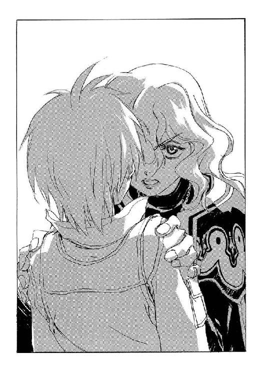

| 魔術士オーフェンはぐれ旅 新装版10 | |
| 秋田禎信 | |
| ティー・オーエンタテインメント (2012) | |
この作品は縦書きでレイアウトされています。
また、ご覧になる機種により、表示の差異が認められることがあります。
一部の漢字が簡略字で表示されていることがあります。
イラスト：草河遊也Ｙｕｕｙａ Ｋｕｓａｋａ
デザイン：ヴェイアＶｅｉａ
霊の回廊は、《霧の滝》に最も近い入り口と言われていた。とはいえ生身が通れる入り口ではなく、そういった意味では王城の無計画な増築の産物──袋小路、無価値な場所でしかない。ただそれでも、本来は封じられている存在が漏れ出てきては囁きをこぼす。そういった集会場になっている。その囁きには価値があった。
どうしてここがそういう場所になっているのか。
理屈は分からなかった。距離的な意味で、位置的な意味で、《霧の滝》の所在地は彼も知らない。考えても詮無いことなのかもしれない。彼が現在の地位に就いた時、彼を利用しようとすべての権限を与えてくれた連中が教えてくれたのは、この霊の回廊のことだった。《霧の滝》の力を借りることのできる、唯一の手がかりがこの回廊だと、彼らは語った。彼はありがたく拝聴した──拝聴して、手に入れた。彼らが、彼に余計な力を与えすぎてしまったことに気づいた時にはもう遅かった。
皮肉な思いで、彼は渋面を作った。感情を隠す必要はない。彼はこの王都で奔放に振る舞った。誰も文句を言いはしない。言わせないだけの働きをしている自負はある。王都の魔人プルートーは、厚い筋肉に覆われた肩をぐるりと回した。この霊の回廊に来ると、得体の知れないなにかが肩にのし掛かってくるような気がする。
四十歳に近くなり、肉体のコンディションは絶頂から円熟の頃合いへと移ろうとしている。戯れにスクールに出向いて、若い魔術士たちを笑いながら蹴散らすのは楽しみのひとつだった──努力を惜しまない学生たちが、彼の技を盗んで日に日に格段の成長を見せてくれることも含めて。
その才気溢れる彼らを。未来ある若者を。
（......また死なせなければならないか？）
渋面のまま、苦い息をこぼす。
もっとも、この大陸に果たして未来があるのかどうか。そもそも、あてにできないことではある。
霊の回廊は落ち着いた闇をどこまでも深めている──光を灯しても、それをいくらでも吸い込んでいくように。この回廊は地下にあった。王都の誇るエッセンシャルバイツ城、その余人の知らない扉から延々と階段を下り、番人の面通しを経てようやくにたどり着ける。着いたところで意味があるかどうかはまた別問題だった。この回廊の住人たちは、気まぐれという点では際限がない。
さもありなん。肉も骨も脳も神経もなにも持たない連中に、人間と同じ道理を求めたところで詮無いことだった。
「だが」
彼は低く、うめくように声をあげた。
「今夜、わたしを呼び出したのはお前たちだ──だんまりということはないだろうな？」
無人の回廊へと、空気の波紋は広がっていく。
彼の造り出した魔術の光明は、圧倒的な闇を少しだけ押し返すことに成功している。回廊はそれほど広くはないはずだが、闇のせいでどこまでも無限に空間を連ねているようにすら見えた。
やがて、その無限の彼方から......
《......最接近領......滅びた......》
肉声ではない呼び声が響いてきた。
否。無限の彼方から、ではない──王都の魔人は妄想を振り払った。迷信に負けるわけにはいかない。会話の相手は無限の力を持った悪夢の怪物などではなく、もっとはっきりした存在だった。精神士。肉体を捨てた白魔術士たち。精神体となって存在を続ける超自然体。
相手の正体を見定めていなければ、判断を誤ることになる。彼は自分に言い聞かせて言葉を続けた。
「当たり前だ。シーク・マリスクは最も優れた戦士だ。最後の賭けだったが、わたしは最初から勝つつもりでいた」
《勝った......のは......シーク......マリスク......ではない》
「ではカコルキスト・イストハンか。どちらでもいい」
《どちら......でも......ない......》
「？」
理解できずに、彼は疑問符をあげた。と、回廊の精神士たちはさらに遠くから、姿のない声を響かせてくる。
《最接近領......恐るべき悪霊......ダミアン......ルーウは......天魔の魔女によって......滅ぼされた......》
「なんだと？ あの娘は帰還しない、女神と戦い滅びたと、お前たちはそう言っていただろう」
プルートーは声を荒らげた。
「お前たちが言ったのだぞ──チャイルドマン・パウダーフィールドの用意した手駒はすべて尽きたと。だからわたしは、最接近領の領主を殺せる者を部下の中から選ばなければならなかった。急かしたのはお前たちだ。勘違いだったでは済まさんぞ！ わたしに同胞を生け贄とさせたのか！」
《チャイルドマン......パウダーフィールド......あの大魔術士......》
声はひとつのものか。複数の声が混ざっているのか。それすらも分からない。音声ではないのに壁に反響する、奇怪な絶叫だった。それが続く。
《彼は計画など......立てていなかった......彼はただ......備えていた......》
「どういう意味だ？ なにが違う？」
《危難が訪れた時......自然とそれに立ち向かう者たちを......育てていた......ただそれだけ......彼は手駒を用意していたのではなく......》
「ふん。つまりはあいつを褒め称えたいだけか。いいだろう。奴はお前らのお仲間だからな──太古からの死に損ないという意味で」
彼は鼻で笑うと、改めて声をあげた。
「どうせなら、本当に奴をお前らの仲間にして蘇らせたらどうだ。そうすりゃ役に立つ。意味もなく、うっかり弟子に殺されるなんぞという死に様をさらして許されるような立場でもなかったろうに──」
「あの人は天魔の魔女を切り捨てられなかった。ただそれだけよ」
聞こえてきた声に、振り返る。
女の、それも聞き慣れた──いや、痛いほど耳に残っていた声音だった。思わず身を退くような、きつい女の声。
彼を追うようにゆっくりと、足音を立てて回廊を歩いてきたその女に、彼は問いかけた。
「......どうやってここに？ マリア・フウォン」
「わたしも召喚されたのよ。ほかにあの番人の前を通過する方法はないでしょう？」
返事はすぐに返ってきた。その若い魔女は、年齢には似つかわしくない──そしてその立場にも似つかわしくない堂々とした足取りで近づいてくる。《牙の塔》の紋章を誇らしげに身に着けたマリア・フウォンは、否応なく別の人物の名前を思い起こさせる存在でもある。
別の人物。そして、別の組織。
彼女は《牙の塔》を代表する黒魔術士のひとりだった。
苦々しい思いで、プルートーは訊ねた。
「それで？ どういった名目で呼び出されたのだ？」
「イールギットが死亡した、と」
生徒の名前を口に出すのと同時、彼女は足を止めた──感傷ではなく、それ以上近づいてくる必要を感じなかったためだろう。魔術の灯明にさらされた顔は青ざめてはいたが、特に感情を示してはいなかった。
（鉄でできた女が......胸くそ悪い）
胸中で罵って、プルートーは続ける。
「シークとカコルキスト──あのふたりも死んだそうだ。まさか、あのふたりを倒せる者が大陸に存在するとは思っていなかった」
「ふざけないで。知っていたはずよ。最接近領にはユイスがいる。何者をも上回る黒魔術士がね」
「どうして黒魔術士が互いに殺し合うのだ！」
憤懣に拳を握り、彼は叫んだ。
「ユイス──お前があえてその名前で呼びたいのならそう呼べばいい──ユイス・コルゴンは狂っているのか。大陸魔術士同盟は、魔術士の友愛と団結を謳った！」
「だけど閉鎖的に過ぎた。それに反発する魔術士がいることも理解するべきよ」
即座に言い返してくるマリアを無視する形で、プルートーは付け加えた。
「......何故、得体の知れない領主などという男に従う。意味がないはずだ......」
と、なにもない空間──そう見える──に向き直り、
「そして天魔の魔女か。チャイルドマン教室の連中が、横やりを入れてきているということか？ 三人の死にも奴らが関わっているのか？」
《......すべて......は......聖域の......手の中に......ある......》
その声がマリアにも聞こえているのか彼女に目配せして確かめてから、プルートーは声を張り上げた。
「人になにかをさせたいのなら、全容を明らかにしろ！ なにも分からずに仲間を死地に送り込まなければならなかったのは、誰のせいだと──」
《......我々とて......知らぬことは......多い......時を越える我らは......時を見逃すことも多い......》
「言い訳などいらん！ お前たちはわたしを動かし、《十三使徒》を動かし、貴族どもを動かしてきたのではないか？ そうだ。最接近領を動かしていたのも貴様らの代表であるダミアン・ルーウとかいう化け物だ」
《ダミアン・ルーウは......滅びた......稀代の術者が次々と......失われていく》
「............」
歯がみして、彼はうめいた。
「なにが言いたいのだ」
「変化が起こるということ──そうでしょう？」
答えてきたのは死霊たちではなく、マリアだった。ただし、死霊よりも死霊らしい声には聞こえた。
ふらりと、彼女がついに彼よりも前に進み出る。マリア・フウォンは回廊全体に響くように声をあげた。
「なにかが新しい段階に入るのだと。でも、犠牲が淘汰だと言うのなら、わたしは」
と、彼女は口ごもった。感情をあらわにすることに抵抗があるのか、ゆっくりと、苦い味でも呑み込む面持ちで、
「たとえそれが正しいことなのだとしても......わたしは、死んでいった者たちに代わって......それを怒り続ける。決して許せない」
《誰にも......悲嘆がある......無数の......渦巻く慟哭を餌にして......この一千年という時代が積み重ねられてきた......》
「その餌が、なんとも都合よく進歩と呼ばれるその餌が、馬鹿者の鼻先に吊られた人参でないと貴様らに言えるのか？ どこまで追っても得られない、すべてが単なる破滅ではないと誰に言える？」
「犠牲が必要だということは認めましょう。でも、だからといって命を貪る者の存在を看過することはできない！ 自分や仲間の命を守ることもできないのなら、わたしたちの力はなんのために与えられたの!?」
《十三日後......聖域はすべてを捨てる》
声は、彼とマリア、ふたりの叫びをまったく無視した。
無視して、続けた。
《これは予言ではない......すべてが今のまま進めば......十三日後......聖域のみを残してすべてが捨て去られる......予定となっている......》
「誰が立てた予定だ！」
プルートーは問いつめた──相手の姿が見えたならば掴みかかりもしただろうが。死霊たちは暗い淵から出てこようとはしない。
ただ言葉だけを伝えてくる。
《......誰でもない......聖域......神々......そしてお前たち......すべてが望んだこと......》
「滅びなど、誰が望むか！」
《滅びか......？ 再生かもしれない......》
「自らの命が滅ぶこと、それが滅びだ！ 馬鹿どもがきれいごとを重ねようが、科学がそれを証明している。生命は自衛のために戦うのだ！」
言いながら。
これがいかにも虚しい主張であることは分かっていた。自分が生命のない死霊に──それも自ら望んでその死霊と化した者たちに向かって語っていることを思い出し、彼はかぶりを振った。馬鹿馬鹿しい。この精神士たちこそが、科学を捨てて妄想ときれいごとに逃避した愚か者のなれの果てではないか......そして自分は、そんなものの言葉をあてにしている......
彼は咳払いして、言い直した。
「お前たちが滅びを肯定するのなら、どうしてわたしを利用してまで聖域に対抗させるのだ？」
《肯定は......しない......滅びが再生ならば......我らは......世界の再生をこそ......望まない......》
「なにが言いたい？」
《神はどこにいるのか......》
鼻で笑って、プルートーは告げた。
「そんな問いかけなど！ 実在が立証された時には、神々はただの化け物になっていたのだろう！ 力を振るって世界を滅ぼすだけの最悪の化け物にだ──」
《だから......本当の......神は......どこにいるのだ？......心の......平安は......？》
声とは別に、金切り声のようなものが響いた──背筋を粟立たせるような、鋭い悲鳴が。
それもまた肉声ではない。死霊たちの怨嗟の怒号だった。
《力を求めたダミアンのような者を除き......我らは......それを求めて......ただその答えだけを求めて......この存在へと......昇華した......それが大陸からの......脱出......なのに平安は......どこにある......我らはどこに行けば......良いのか......それを知るまで......世界を終わらせてしまっては困る......》
「神はどこに......」
これは、空気を震わせた人間の声だった。
ぞっとして、見やる。死霊が肉を持って蘇った──のではなく、それまで黙り込んでいたマリア・フウォンの囁きだった。うつむいて、床の一点を見つめている。こちらの視線に気づいて、彼女は顔を上げた。
「わたしたちに宗教家になれっていうの？」
自嘲の笑みを浮かべる彼女のことはあえてほうっておいて、プルートーはつぶやいた。
「死霊ども、まさかわたしを震え上がらせるためだけにここに呼び出したわけではあるまいな？ 十三日後と言ったからには、十三日以内に必要な場所にわたしを送り出す準備はあるのだろうな？」
《無論......ダミアンが滅びた今......我らは自由だ......ダミアン......鬼の王......に成り代わった新たなる覇者......天魔の魔女は......我らの邪魔はしない......》
「本当だろうな？」
と。
念押ししていると、マリアが横から聞き返してくる。
「あなたを送り出す？」
彼女のほうは見ずに、プルートーは告げた。
「今度はわたし自身が行く。《十三使徒》の長としての面子を通す」
「それはできないでしょう？ 貴族連盟はとっくに気づいていて、口出しする機会を待っているだけなのよ」
「最初にわたしが行っていれば、犠牲を出すことなどなかった！」
叫ぶ。
が、マリア・フウォンはにべもなかった。益体もない正論の口調で言ってくる。
「犠牲がなくなるなんてことはない──どうやっても犠牲は出るのよ。わたしたちの側に出るか、向こうの側に出るか、ただそれだけの違い。軍隊を使わないというだけで、これは戦争ですものね」
「お前は平気なのか......お前の生徒も恐らくは死んだぞ。平気なのか！」
とうとう彼女に向き直って、怒声を重ねる。
そして──正面から見据えて、初めて気づいた。マリアの唇が噛み切られている。その血が唇をますます赤いものにしていた。
「誰が平気ですって？」
自らの唇を噛みしめるそのままの口調で、彼女は凶暴な眼差しを突きつけてきた。
「でもね、暴走した最接近領とドラゴン種族の聖域とが、大陸すべてを無にしてしまうかもしれない時となれば、神でも悪魔でもならないといけないでしょう!?」
「お前はそんな女ではないはずだ」
「あなたに言われる筋合いではないわ」
口論になることを避けるため、プルートーは口を閉じた。ただ、別のことを告げることにした。
「最接近領が終わったのならば......次は、聖域を滅ぼす。もとより、ずっと前からそうしなければならなかったはずのことだ。《十三使徒》の全人員を投入してでも、これを果たす。そうすれば、この大陸は人間種族のものになる」
「いいえ。誰のものにもならないわ。それでも──すべてを滅ぼす神々のものになんか、させない」
マリア・フウォンの言葉は、最後まで彼に反論し......それはプルートーには気に入らないものだった。
第一章 絶望と、絶望ではないもの
灯火の揺れる音や、壁から埃が落ちる音。耳をすましたとしても、聞こえるか聞こえないかあやふやな音。それらに囲まれて、オーフェンは待っていた。蝋燭ひとつしか明かりのない部屋の中は、まるで影の住人がひしめいているかのように、暗く狭く感じられる。実際には、部屋には十分な広さがあった。彼が椅子に座り、そして床に倒れた男が意識を回復させるまで、待つのには十分な空間が。
時を刻むなにか──ただし時計はここにはない──に意識を傾け、仮眠しながらそれに聞き入る。夢うつつに考えることがある。世界が始まって以来、時が止まったことはあるのだろうか。止まったとして誰も気づけないのだから、何度かそういうことがあったのだとしても否定はできない。
（いや......）
時は動き続けてきた。一度として速度を変えず。一度として止まることなく。一度として溯ることもなく。
過去と、現在と、未来。その三者を交わらせることのないまま、時間は進んできた。三者は決して出会わない。三者の邂逅があるとするならば、時の速度が変わり、時が静止し、時が逆行するその時に他ならない。
それこそ、世界が終わるその瞬間ということになるのだろう。
「............？」
彼は、顔を上げた。ふと疑問に思った。
（どうして......そんなことが気にかかる？ なんで急にこんなことを考えたんだ？ もっとほかに考えなけりゃならないことはいくらでもあるってのに......）
誰かが耳元で囁いたのかもしれない。
苦笑して、まぶたを下ろした。視界は閉ざされたが、彼のほかに部屋にもうひとりいる、その存在のことは意識していた。倒れたまま動かない男。
最接近領の領主。
オーフェンは嘆息して、その男の目覚めを待ち続けた。
◆◇◆◇◆
「この仕打ちはいかなる理由か、説明を要求するぞ、小娘」
「なに言ってんの。潜入してきた殺し屋の手先になってたくせに」
訊ねてきた地人に、クリーオウは即座に答えた。と、ロープでぐるぐるに縛られた地人ふたり──兄弟のうちひとりが、声を大きくして言い返してくる。
「誰が殺し屋風情の手下だっ!? このマスマテュリアの闘犬、ボルカノ・ボルカン様としては、そのよぉな犯罪者扱いは断固抗議するっ！ 具体的には縄っ！」
「解いたらどうするわけ？」
「戦略的に撤退する」
言われて、クリーオウは腕組みした。きっぱりと告げる。
「逃がすのもなんとなくムカつくから縛ってあるんじゃない」
「言い訳などいらんっ！ そこをなんとかしてくれなさい！」
「ていうか、ムカつくからなんだ......」
地人がそれぞれわめくのを無視して、クリーオウはあたりを見回した。
彼女らがいるのは、調理場だった──集めた食料がまとめてあるため、なんとなしに待機部屋にされてしまったような感がある。
夜は長かった。とはいえ、館にもどってきてから何時間も経ったというわけではない。ただじわじわとしか進もうとしない時間が、ひたすらにもどかしい。あまり大きくない魔術の灯明を睨みつけて、クリーオウは眉根を寄せた。理由もなく苛立っている。
「なにやってるんだろ。オーフェン。なんか変な感じ」
「クリーオウももう少し落ち着きなよ」
言ってきたのは、調理場の隅に座り込んでいる少年だった。
馴染みの顔である──学校の同級生だったのだから。それもだいぶ遠い昔のことのように感じられたが、ほんの半年前のことでしかない。クリーオウは彼のほうをやや強めの視線で見やって、そのまま告げた。
「落ち着け？ なんかよく分かんないけど悲鳴が聞こえて、領主様は倒れてて、レキに続いて今度はロッテーシャがいなくなっちゃったのよ。なにを落ち着くのよ」
「慌てるよりはいいじゃないか。お師──オーフェンさんだって、あとで説明するって言ってたし」
「そう言って説明してくれたためしがないんだから」
ぶつぶつと独りごちてから、クリーオウははたと気づいて、
「それで、オーフェンは領主様が意識を取りもどすまで待ってるんでしょ。あんたはなんでこんなとこにいるのよ。あんたが領主様を看てればいいじゃない。あんな大見得切ってたんだから」
言われて、少年──マジクは視線をそらすようにうつむいた。そのまま、小さくつぶやいてくる。
「ぼくは独り立ちしたいんであって、別に領主様にこだわってたわけじゃないよ」
「だったら、ひとりでもできることをやりなさいよ。わたしもなんか考えるから」
「ぼくにできることは──」
と、彼は口ごもった。
クリーオウが視線で促すと、マジクはまだしばらく迷いつつも、あとを続けた。
「ぼくにできることは、ここにいるクリーオウたちを守ることだよ。クリーオウの言った通り、なんか次々に人がいなくなってる。なにか攻撃を受けてるんだ。守り手がいないと、オーフェンさんが身動き取れなくなる」
「............」
言われて──本能的になにかを言い返したくはあっても、反論すべき点が見つからずにクリーオウはただ音のない息を吐いた。
会話が途切れれば、調理場は静かだった。領主の館そのものが静まり返っている。自分たちを除けばほぼ無人なのだから、それも当然だった。地人たちが縄を解こうと身体を揺すっているが、その音すら静寂を破るのに決定的ではない。
どうしたところで破れないのかもしれない──嫌な空気を感じながら、クリーオウは続けた。
「いったい、なにがどうなってるんだろ」
「領主様の言っていたことは覚えてるだろう？」
マジクの声にも陰鬱なものが混じっている。
「この最接近領は、ドラゴン種族の聖域と戦っている人たちの基地なんだ。それで攻撃を受けて......つまり負けたってことなんだろうと思う」
「それは分からないでもないけど......」
気むずかしい心地で、クリーオウは腕組みした。そのままつぶやく。
「だったら、ここはどうなるんだろ」
「分からないよ。でも、あのダミアンとかいう白魔術士が消えてしまって、ここにはとうとう戦える人は誰もいなくなっちゃったんだ」
「それで、まだ攻撃を受けるの？」
「領主様が残ってるから......そのへんのことを確かめたくて、オーフェンさんは待ってるんだろうと思う。逃げようったって、こんななにもない土地でしかも夜間じゃ、危なすぎるんだろうし」
「レキを探しにいきたかった──んだけど......」
クリーオウは思いつきを口にして、声を落とした。
「でも、ドラゴン種族がそんな感じなんじゃ、余計にレキを苦しめるだけかな......」
「でも、領主様がレキになにかを頼んだんだ。それがうまくいけば、聖域との力関係が逆転するって言ってたよね」
「わたしは、それをさせたくないのよ」
「じゃあ、どうして欲しいのさ」
こだわってくるマジクに、クリーオウは不機嫌に口を尖らせた。
「分からないわよ」
「じゃあ、クリーオウだって、自分になにができるか分かってないんじゃないか」
「だから、考えるって言ってるでしょ......やつあたりしたのは謝るわよ。ごめん」
告げると、地人たちのほうからも声があがった。
「できればこっちのやつあたりロープも解いて欲しいんですけど......」
とりあえずそれは無視して、クリーオウは椅子を引き寄せた。調理場の椅子はひとつが壊されていたが、それは片づけておいた。昨日、自分は恐らくその椅子に座って、ロッテーシャにホットミルクを出してもらったのだ。思い出し、彼女はますます気落ちする自分を自覚した。そのロッテーシャも行方不明である。マジクの話では、クリーオウがいなくなった時、殺し屋を追いかけていってそのまま帰ってきていないという。あまり安心できる情報ではない。
ロッテーシャの持っていた剣はもとより、ごたごたで自分の剣もなくしてしまった──キムラックであのじじむさい死の教師とやらからもらった剣である。もとより、使い勝手の悪い骨董品だったが。あれよりはマシな武器を探しておきたかったのだが、この領主の館には武器らしい武器はなかった。領主の護衛がいたという宿舎は、昨日跡形もなく吹き飛んでしまっていた。調理場の包丁でも持ち出そうかとさえ思ったが、気乗りせずに断念したのだった。もとより、自分が刃物など振り回したところでどうにかできる事態でもないらしいことは分かっている。
（多分、わたしが余計なことしないほうが良いんだろうしね）
空虚な吐息をつく。仮にどんな力があったところで、使い方を知らなければ暴走しかできない。魔術士が魔術士であること──それは力を持っていることではなくて、持っている力の制御を行うことだった。自分にはその訓練も心構えもない。レキの身体を借りた時に、それは思い知った。
（レキの魔術でも、剣でも武器でもなんでも、同じことかな......）
「とにかく」
どこにともなく──あえて言うならば夜の静寂に向かって、クリーオウはつぶやいた。
「わたしはわたしのことを、ちゃんと決めなくちゃ」
小さな声だった。誰にも聞こえなかったのだろう。誰もなにも、反応しない。
◆◇◆◇◆
「これに着替えるんだ」
調理場に入ってオーフェンは、持ち出してきた長袖の作業着二着をテーブルの上に置いた。室内の視線が集まってくる。特に少女の碧眼を意識していると、彼女はおずおずと聞いてきた。
「領主......様は？」
「まだ起きてない。というより、待つべきじゃなかった。すぐにここを出るぞ。領主はここにほうっておく」
言いながらオーフェンは時計を探した──といって調理場に時計があることを期待したわけでもない。カーテンのない窓からは外が見えたが、星や月が見える角度でもなかった。もとより、だいたいの見当はつけていた。あと二時間ほどで夜明けが来るはずだった。
「ほっとく？」
と、自分の分の服を手に取って、クリーオウ。
オーフェンはうなずいた。
「詳しい説明は省くが、領主なる人間は実在しない。ダミアン・ルーウの作ったデミヒューマン、傀儡だ。考えてみたら、ダミアンがいなくなって二度と目覚めるのかどうかも定かじゃない。それよりも、なにか嫌な予感がする」
革製の戦闘服の中で身震いするのを感じ、付け加える。
「ここから逃げたほうがいい」
「逃げる？ どうやって。どこに？」
彼女は作業着を広げて、気に入らなかったのか、やや眉をひそめたようだった──が、さほどこだわらずにもう一着をマジクのほうに押しやると、不安そうに続けて聞いてきた。
「オーフェンもいっしょに来るのよね？」
「ああ」
もう一度オーフェンはうなずき、調理場の、外したままになっている床蓋を指し示した。その下の空間は枯れた水路になっている。
「この地下通路がある。脱出はなんとかなるだろ。それから先、どこに向かうかについては......確信はないな。ただ、ここは危険だ。ダミアンの言葉を信じるなら、朝になると聖域からのなんらかのリアクションがありそうだった」
思い出したのは、黒い聖服の男......だったが。
それだけではない──それどころではない力を、ドラゴン種族の聖域はいくらでも有している。彼らは都市ひとつを壊滅させる武器を無造作に持ち出せる。ドラゴン種族と人間種族の力量差というのは、厳然としてあった。
（それを思えば、警戒が足りないくらいだったな、くそっ）
胸中で毒づいて、オーフェンは続けた。
「なにしろ夜間だし、これから先どうなるのか分からない。少しでも暖を取れる格好でないとな。俺はここの食料を携帯できるように詰め込んどくから──」
と、クリーオウらに集めてもらっておいた食料品の入っている箱の中を見やって、一番上にあった得体の知れない紙包みを取り上げる。その重さを確かめると、ようやく中身に見当がついた。
「......これ、バターか？ これだけ食うのか？」
「注意すれば日持ちするかと思って」
「確かにまあ携行食としちゃ上出来だが......そんな腐った軍事マニアの晩餐会みたいなのは嫌だぞ、俺は」
「言ってる意味はよく分からないけど、わたしだって嫌よ」
クリーオウはそれだけ言うと、着替えるためだろう、服を抱えて調理場を出ていった。
残った三人を見回す。マジクはずっと黙っていたが、もそもそと着替えを始めている。そして地人たちは──
なにやら不機嫌そうににらみつけてきているボルカンとドーチンの格好を観察して、オーフェンはただ一言、感想を漏らした。
「む？ なんだお前ら。完全体か？」
「ぬぁにが完全──ぎゅっ!?」
わめき出したボルカンの口にバターの包みを押し込んで黙らせると、その横から、縛り上げられたままドーチンが、あきらめきった静かな口調で聞いてきた。
「......縛られてるだけですけど、なんでそれが完全体なんですか？」
「だって、とても自然じゃないか」
ごく普通に答える。
が、ドーチンは理解できなかったようだった。また一瞬、諦観のこもった表情を見せた──眼鏡の奥にそれらしい光があった──が、そのまま質問を繰り返す。
「とりあえず聞きたいんですが、それはどんな認識なんでしょうか」
「うーん。まあとにかく、お前らが困ってるととても心が朗らかになるというか、こう、胸の中に暖かいなにかが、ぽっと灯る感じで」
「それはなにかの病気だと思われます」
「そうかなぁ」
と言っていると、横から怒鳴り声が響いてきた。
「貴様、なんか俺様が黙っている間に好き勝手言ってないかっ!?」
「うわっ！ 平気で食べ終わってるしかも包みごとっ！」
さすがに脅威を感じてオーフェンが後ずさると、むしろ満足げに唇の周りをなめ回してからボルカンは言ってきた。
「うむ。久しぶりに人間らしい食事をした気がする」
「まあ人間の食料には違いないが」
「文化生活の始まりを宣言しようと思うが故、このルネッサンスとは限りなく程遠いロープをとっとと解きやがってください」
「うーん......だってそういうのムカつくし......」
オーフェンが悩んでいると、今度はドーチンが割り込んでくる。
「いや、その程度は人としてムカつかずに解いておきましょうよ。ぼくらさっぱり意味なく縛られてますし。ひょっとしてじゃなくてかなりの確率で犯罪じゃないでしょうかこれって」
と──
「あの、オーフェンさん......」
マジクだった。着替えを終えて、なにやら気後れしているようにうつむきながら言ってくる。
「ぼくは、その」
「まさかお前、ここに残るとは言わないだろうな。もう領主は役に立つのかどうかも分からないし、ここは聖域の攻撃にさらされる危険がある。俺は独り立ちは認めたが、それでも道理には従ってもらうぞ」
とりあえず箱の中にある食料の選別を始めながら、オーフェンは顔をしかめた。持ってきておいたナップザックに、かさばらないものから詰めていく。
マジクはゆっくりと近づいてくると、選り分けを手伝おうというのか箱からビスケットの包みを取り出してこちらに置くと、あとを続けてきた。
「ここを離れるというのはぼくも賛成です。できれば領主様を連れて行きたいですけど......でもそれよりも、まだ目的地を話してもらってません」
「......俺は聖域に向かうつもりだ」
「えっ？」
聞き返してくるマジクに、オーフェンは告げた。ふと、手が止まる。
「とはいえ、十三日以内にフェンリルの森を抜けてその中心地──しかも正確な位置が分かってるわけですらない中心地に着ける見込みなんざ、ゼロに等しいか......」
「なにか必要な条件があるんですか？」
「ああ。っても、そもそもどういう意味なんだか俺にも分からないけどな」
十三日後、聖域に家族が揃う──
これは予言ではなく予定──
つまりは、黙っていてもそうなるということではなく、そうしなければ成されることはない。そういうことなのだろう。
（イールギットの遺言......か）
断末魔の譫言だと断じてしまうこともできる。
が、オーフェンはかぶりを振った。家族。現在、姉のレティシャは行方不明。ダミアン・ルーウは彼女が死んだと強硬に言い張っていたが、その後にボルカンとドーチンが生きているレティシャと遭遇している。昨夜、このふたりを使ってロッテーシャを館の外に誘き出すよう指示したのはコルゴンと......レティシャのふたりだという。
そして再び行方をくらまして、今はどこに向かっているのか──と考えると。この最接近領からわざわざ進む土地となれば、聖域という可能性が高い。
思案して、オーフェンは独りごちた。
「どうにも気になる符合なんだよな。そもそもティッシがこんな土地にひょっこり現れた理由もいまだに分かってないんだが」
「は？」
「なんでもない。こっちのことだ」
と、中身を詰め終えた鞄の口を閉めてから、オーフェンは縛られた地人たちのほうを見やった。
「そういえばお前ら、ティッシといっしょに現れたじゃねぇか。なにかここに来た目的とかなんとか聞いてないのか？」
「さあ......ただ荷物持ちが欲しいだけだったみたいでしたけど。あとは、あなたを探すのに人手がいるから手伝えとか。しかも約束のお礼もらってません。これって訴えればなんとかなるでしょうか」
ぼんやりと──色々とあきらめた様子でぼやくドーチンの問いには答えず、オーフェンは改めて腕組みした。吐息混じりにつぶやく。
「ティッシか......それに」
アザリー。
その名前を思い出して、気が重くなるのを自覚する。もともと、この最接近領には、彼女の所在を知るためにやってきたのだ。現在、彼女にコンタクトできるのは領主──というよりダミアンだけだということだったが、今となってはどうしようもない。
と、こちらが関係ない独り言を続けていることに腹を立てたのか、マジクが声をあげてきた。
「クリーオウは、レキを探したいって言ってました。レキは確か、ロッテーシャさんが最後に見た時、フェンリルの森のほうに向かっていたってことでしたよね？ だとすると、やっぱり聖域なんですか」
「だろうな」
「ぼくは──」
言いかけてマジクが声を萎ませる。
それを眺めやって、オーフェンは──多少、意地の悪さを自覚しつつも──訊ねた。
「お前だけ聖域に行く理由がない、か？」
さすがにむっとしたのか、マジクの表情が険しくなったように見えた。とはいえ視線はこちらに向けないまま、少年は言ってきた。
「......ずっと蚊帳の外にいましたけど、なにか危機的なことが起こってるんだろうっていうのはぼくにだって分かります。ぼくだって魔術士ですから、それを止めるために力になりたいです。だから聖域に行くというのは変ではないと思います」
「別に止めねぇよ。やりたいことがあるのなら止めない約束だしな」
「ところで俺様たちは、こんなわけも分からず縛られる上、約束の謝礼ももらえんような場所からは全速力で離脱したいのだが」
「そりゃまあ、別にそれも止めんが」
一応つぶやいてきたボルカンにそう答えて、オーフェンはようやくふたつのナップザックを中身でいっぱいにした。この食料がどれだけ保つのか、体力を維持できるのかということになれば疑問ではあったが、ないよりは遥かに有効なはずではある。
と、そこで。
ばんっ、と扉を開けて、クリーオウが飛び込んできた。
「着替え終わりっ！」
作業着は案の定、彼女には大きすぎたようで、両手足の裾を何重にか捲っている。
「よし」
オーフェンはうなずいて、ナップザックのひとつを彼女に突き出した。
受け取りながら、クリーオウが訊ねてくる。
「これは？」
「これはって、食料に決まってるだろ」
答えると、彼女はきょとんとしながらも言い返してきた。
「そうじゃなくて、なにを詰めたの？ ビスケットはこっち？ 例のラメ入り紫パテが出てきても食べないわよわたし」
「いや好き嫌い言ってる場合でもないだろ。ていうか紫パテってなんだ」
「ロッテと食べ物集めてる時、なんか見た目、そういうのがあったんだけど......」
クリーオウは、まだいくつか中身の残っている箱へ視線を投げたようだった。
「食べられるのかどうか分からないけど、いちかばちか命を賭けてみようってことになったのよね」
「頼むからやめろ。そういう格好良さは」
言って、もう一個のバッグを背負い、オーフェンは地人たちに向き直った。
「よし行くか。じゃあお前らには、このへんの微妙に手のとどかないあたりに包丁とか置いといてやるから、努力と苦悶の末にがんばってなんとかしてくれ。大丈夫だ。朝になってこの館にとてつもなく破滅的ななにかが起こっても、どうせお前らは死なない。多分」
「だからってなんでそんな無意味な試練を......」
「黒魔術士！ 貴様ひょっとしてもしかしてと思いつつまさかとは思うが、このマスマテュリアの闘犬ボルカノ・ボルカン様に敵意を抱いていないか!?」
それぞれ声をあげるドーチンとボルカンに背を向けて、床下の廃水道をのぞき込む。湿った空気を吸って、オーフェンは魔術の構成を編みながら呪文を唱えかけた。掲げた指先に意識を集中し、
「我は生む小さき──」
「逃げる必要はない」
聞こえてきた声に、その構成を霧散させた。
オーフェンは視線だけで、調理場の入り口を見やった。昨夜にも似たような姿、似たような光景を見ている。そこにはぴったりとその機会を狙ったように、ひとりの男がいた。余裕を持った笑み。精気に満ちた両目でこちらをのぞいている。最接近領の領主。
その男は、見た目だけならば、その正体──実在していない〝ゴースト〟であるということも信じがたい。物静かに、だが刺すように、告げてくる。
「いや。ここから離れれば、待つのは確実な死だぞ、鋼の後継......」
「それを鵜呑みにしてあんたに従うのが、死ぬよりたちの悪い破滅でないと言えるのか？ 最接近領の領主」
「言えるさ、旧友よ」
領主は優雅に手を振ると、順番に声をかけた。まずはマジク。
「......我が最接近領はまだ力を失っていない。マジク・リン。わたしを見限るのは早計というものだよ。わたしは君を、大陸で最も強い術者に鍛え上げることもできる──ユイスと同じ高みに」
次に、クリーオウに。
「クリーオウ・エバーラスティン。君はドラゴン種族の友達に再会したいのだろう？ ならばなおさら、ここにいるべきだ。これは当て推量などではない。厳然たる予定があり、すべてはそれに従うことになっている」
そして最後に、地人たち兄弟を見つけて──
「おやおや。また知らない客人が増えている。もちろん歓迎しよう、この大陸にあって聖域に与しないすべての者のため戦う。それがわたしの役目なのでね」
「あんたの役目は、この馬鹿げた騒動をとっととやめることだ」
オーフェンは即座に告げると、廃水道にかがみかけた腰を上げて領主に向き直った。その間にクリーオウとマジクの顔を盗み見る──ふたりは押し黙って領主を見つめている。光量の足りない室内で一瞬うかがっただけでは、彼女らの表情の下にある感情まで読みとることはできなかった。が、そこにあったのは少なくとも服従でも後ろ暗さでもない。領主の言葉を受けてその意味を探ろうとしているのだろう。
「分かったぞ！」
と大声をあげたボルカンは無視して、オーフェンは食料の残っている箱の中を探った。なにやら素焼きの容器を取り出して蓋をずらすと、異様な紫色のペーストがのぞいている。
「いや実は分かってないんだがとにかくおい貴様、この邪悪な黒吊り目を爽快にかっ飛ばして、俺様のロープを解いてくれるとありがたい──」
叫ぶボルカンの口に容器ごと謎のペーストを突っ込んで、オーフェンはそのまま告げた。
「あんたのやっていることは勝てない喧嘩だ。昨日も言ったはずだな」
「聞いた。だが旧友よ。君はわたしがどういった存在かを知った後も、同じことを言うつもりか？」
領主は入り口から一歩入ってくると──こちらの眼差しを浴びて、そこで足を止めた。オーフェンは苦笑した。彼の手がとどかないわずかに外側。別段、こちらの攻撃が怖いというわけでもないはずだが。胸中でつぶやいて、声に出す。
「あんたが出来の良いゴーストだろうと、聖域に対抗する具体的な戦力はもうなにもない──もともとあったのかどうかも怪しいところだけどな」
「出来の良いゴースト、か......その程度の認識でよく言ってくれる。君も魔術士だが、ダミアンとは違うな。彼はもうひとつ進んだことを考えていた」
「なんだと？」
口の端から声を漏らしながら──
オーフェンは不条理に歯がみしていた。無視して去ればいい。それができないわけではないはずだった。だが。
横目で見やると、今はクリーオウもマジクも、領主でなくこちらを見つめてきている。声を発さずとも、その目は明確に訴えてきていた。領主は端的にこのふたりにとって、どうしても聞き出さなければならない情報の一端を突きつけたのだ。
時間の流れを、オーフェンは意識した。夜明けまではあと数時間。だが夜明けという時刻ははっきりしたものではない──解釈によってはあと一時間かもしれないし、もっと長いかもしれない。
（一刻も早くここから立ち去ったほうがいい......はずなんだ。が）
聞くしかない。
が、オーフェンが質問のために声をあげようとするよりも先にクリーオウが叫んでいた。
「領主様！ あの......レキのことでなにかあるのなら、教えてください！」
彼女は声を萎ませて、ゆっくりと続けた。
「わたしが悪いのは分かってるんです......わたしが望んだからレキが従ったんだって分かるんです。なのに今はこんな感じで、勝手に領主様の館から出ていこうとしていたりとか。でも」
混乱して支離滅裂なまま言葉を途切れさせ、クリーオウは倒れるようにテーブルにもたれかかった。うなだれて黙り込む。不意のことに疲労が吹き出したのだろう。
気丈に振る舞っていたが、考えてみれば彼女も夜通し走り回っていたことになる──それを思い出してオーフェンは、テーブルに突いた少女の手を軽く叩いてやった。
と。
「────？」
突然、食いつくように、クリーオウが両手でその彼の手を握った。戦闘服の手袋の上からでなければ爪が刺さっていたかもしれないほどに。引き抜こうと思うならば、できないわけではない。が、それを迷いながらもオーフェンは悟った。この娘は縋り付こうとしてきたわけではない。
質問を肩代わりしようとした彼を、押しとどめたのだろう。クリーオウは再び顔を上げ、今度は先ほどよりはしっかりした口調で領主に問いかけた。
「レキは今どこにいるんですか？」
「あのディープ・ドラゴンは務めを果たそうとしている。わたしとの約束......その役割を果たすために出かけている。いずれもどってくる」
柔らかく、なだめるように、領主が答える。
クリーオウに手を掴まれたまま、顔だけを領主に向けて、オーフェンは告げた。
「このふたりの足を止めるには十分な切り札をお持ちのようだがな。あんたは俺になにも提供できないんだろう。ここに来ることを誘われた時とは随分と事情が変わっちまった。そもそもここに来たのが間違いだった──俺はもとより他人を危険にさらしてまでアザリーの行方を知りたいとは思ってねぇよ」
「提供できるものは......ある。夜明けまでここに留まるがいい。そうすれば、わたしは君をいつでも聖域に送ってやることができる。天魔の魔女はそこにいるぞ」
領主はあくまでこともなげに言ってくる。
息を止めたことを気取られないように──虚しい努力をしながら、オーフェンは相手の言葉を待った。最接近領の領主、アルマゲストはそのまま続けた。
「君の言葉を半分借りようか。朝になればわたしは聖域と対抗するにこと足りる具体的な戦力を有することになる。そうなればわたしは万能になるわけだ」
「万能か。それなら俺をとどめる必要もないだろう？」
「......性急な言い間違いだった。わたしが盤石の体制を整えようと、それを打ち壊す可能性のある者がいる」
「誰だ」
オーフェンがイメージに浮かべたのは、ずんぐりした黒いシルエット──聖服の男の姿だったが。
領主が口にした名前は、それとは違うものだった。
「我が旧友──ユイスさ。白状しよう。彼は聖域に捕らえられた後、わたしから離反した。というより、彼にとってわたしは利用価値のある存在ではなくなってしまったのだろう。彼はロッテーシャを聖域に連れて行った」
「？」
顔をしかめて、オーフェンは聞き返した。
「なんでだ？ なんの意味がある？」
「そのうち説明しよう。だがさしあたって今は、ユイスに対抗できる存在は君しかいない......」
「どうだかな。あんた名目上は貴族なんだろ。だったら、王都の魔神プルートーでも連れてくりゃいい」
「《十三使徒》が貴族連盟の飼い犬であった時代はとうに終わっている。少なくともプルートーの台頭とともに終わったのだ。力ある魔術士が生まれるたびに均衡がひとつずつ壊れていくという事実は面白いと思わないかね？」
それは実際、この領主にとっては面白い冗談なのだろう──笑みの形に歪んだ口元を手で拭って、彼は続けた。
「プルートーにとっての不幸は、彼当人を除いてダミアンやユイスに対抗できる手駒を用意できなかったことにある......マリア・フウォンではいささか力不足だろう？ が、もうそんなことは関係ないのだな。彼はもう己自身を投入する決心をした頃だろうから。事態は動いている。流れを止めることはできない。十三日後の、すべての終焉に向けて」
ぴくり──
と、オーフェンは眉を上げた。問いただす。
「十三日後。その日付になにかが起こるのか。なにが起こるんだ？」
「どうしてわたしに聞く？ 旧友よ。君はわたしの力に頼るつもりはないのだろう？ 君に言わせれば、わたしは少し出来の良いゴーストに過ぎない......そんなものが予知する未来を信じられるかね？」
嬲る口調で、領主が返事を拒む。
オーフェンが舌打ちするより先に、彼は再び口を開いた。
「君はひょっとすれば本当にユイスと双璧を成すほどの強力な術者かもしれない──誰よりも、ダミアン・ルーウよりも強力な」
その眼差しは笑っていない。むしろ威嚇のように鋭い。その視線を受け止めて、オーフェンは息を止めた。全力で押し返すべく、拳に力を入れる。
（こいつは俺を支配しようとしている......）
出来の良いゴースト。オーフェンは胸中で繰り返した。その思いを読みとったように、領主は皮肉を口にする。
「それでもやはり、しょせんは魔術士と言うべきか。ダミアンも、認めるのに迷いがあったようだった。ひょっとしてと危惧しながらも、自ら生み出したものの意味を履き違えていた。彼はわたしのことをなんと言った？ 自分の力の集大成だと？ 魔術士は......己が力を制御できているという思い込みが強すぎるのだよ」
「それが魔術士の本質だからだ」
囁くように割り込んだオーフェンのつぶやきも、この領主には一蹴された。
「違うな。本質ならば、わざわざ自他に言い聞かせる必要もない。自ずとできていたはずだ。わたしに言わせれば、いまだ力を完全に制御できた魔術士などというものは存在しないのだ。この世界そのものが、常世界法則を魔術として制御しきれずに崩壊した」
アルマゲストが一拍おいた隙に、オーフェンは視線を外し──黙して構えているクリーオウやマジクを見やった。金髪の少女はうつむき、会話など聞いていないようですらある。が、彼女が一語一句聞き逃していないことは分かっていた。クリーオウはまだ彼の手を放していなかった。その力が、領主の言葉を聞くたびに強まりもし、弱まりもする。
マジクの反応は意外だとも思えた──が、そうでもないのかもしれない。マジクは瞳を鋭くして、領主を見据えている。それは敵意に見える。領主が魔術士を侮蔑したからかもしれない──あるいはもっと単純に、領主がコルゴンに対抗する者としてマジクではなくオーフェンを持ち上げたからかもしれない。どちらにしても独り立ちを認めた弟子の胸中を読みとることは、急に難しくなっていた。
（......いや、読めないのが当たり前か）
ふと気づいて、オーフェンは胸にちくりと刺すものを覚えた。むしろ彼自身こそが、ひたすらにマジクを格下と侮って扱っていたのだろう。だから単純に魔術の扱い方以上のものを伝えることなどできなかったし、伝えることを思いつきもしなかった。それは後悔しても取り返せるものではない。
ボルカンとドーチンは。
地人の弟は、退屈そうに床を見ている。兄のほうは妙に静かだと思っていたら、紫色の妙な物体を口から垂れ流して気絶しているようだった。彼らに視線を転じて、オーフェンはようやく息をついた──確かにこんな会話は、無関係な者にとっては無価値な茶番に過ぎない。
一回りしてオーフェンが領主に向き直ると、彼はそれを待っていたようだった。自分の胸を示して、深く、ゆっくりとなにか柔らかいものに突き刺すように宣言してくる。
「わたしは悪魔だよ。悪魔だと名乗っていた」
手駒。終焉の流れ。
そんな言葉を容易に使うせいもあるのだろう──アルマゲストの言動にはいちいち芝居がかった滑稽さがつきまとっていた。そしてそれは高潮に差し向かっている。その連想に、オーフェンは歯がみした。まず間違いなく、この領主という存在は、聴衆の苛立ちを察しながらそれを刺激しようとしている。
領主は仰々しくあとを続ける。
「わたしと同一の存在が自然と存在していた......図られることなく偶然に造り出されていたというのは面白い。わたしが悪魔ならば、もう一方は天使かね？ この世界にあとひとつ足りないのは魔王だ。魔王スウェーデンボリー......神をも滅ぼす人間の王。人間種族の希望。わたしはこう考える。もしそれが現世に存在するとすれば、その名は魔術を制する者に与えられるのではないかと」
結局のところ領主の言っていることは、さっぱり理解できなかったものの──
オーフェンは不機嫌を隠すつもりもなくつぶやいた。
「ごたくをこねくり回すより、聞かれたことに答えて欲しいね。その前にいくつか言っておく。まず旧友ってのはやめろ。意味が分からねぇ」
「誰にとってもわたしは旧い友なのだよ。わたしはこのアイルマンカー結界そのものに根ざした──」
「違う。友人になったつもりはないって言ってんだ」
ぴしゃりと告げる。
厳しく言葉を発しても、短い沈黙と言えるほどにも、領主を黙らせることはできなかった。彼は鷹揚にうなずいてみせると、言い直した。
「よかろう。では順番に語ろう。まずは朝になるとなにが変わるのか。朝になると同時に、この館には大陸の最強力が集結する」
「......最強力？」
「ディープ・ドラゴンの全種族」
それは──
簡単には信じることのできない言葉だった。が、領主の表情を見やって、オーフェンは──この顔の持ち主は人間ではない、他人を支配するための白魔術士の道具だと自分に言い聞かせながらも、認めざるを得なかった。
領主はそのままの意味で、それを言っている。血の気の引いた顔を撫でながら、オーフェンは苦笑した。つぶやく。
「逃げることもできないってわけか」
「その必要はないと言ったろう。そのディープ・ドラゴン種族の長はアスラリエル──新たなるアスラリエルのはずだ。彼女はわたしに従う盟約を交わしている」
自信に満ちた領主の言葉を聞いて、はっとクリーオウが身じろぎする気配が空気を伝わってくる。
彼女の理解は、彼よりも早かったということだろう。オーフェンは胸中で繰り返した。
（新たなるアスラリエル......？）
次いで、声に出す。
「レキのことか」
領主はうなずいてみせた。
「そうだ。ディープ・ドラゴン種族のすべてがわたしに従う。これで聖域は敵ではなくなる。だが真の目的を考えれば、この力ですら足りない......ふたつめを語ろう。十三日後になにが起こるのか」
長広舌をまくし立てながら──ただし必ずしも調子を速めすぎることもなく──、彼はあとを続けてきた。薄暗がりの調理場に、悪魔を名乗る男の声が蔓延していく。
「少し考えれば分かりそうなものだがな。わたしは天魔の魔女が帰還したと言った。アイルマンカー結界の外部から大陸に入ってくるには、結界の穴を通るしかない。彼女が帰還したということは、彼女とともに大陸から押し出されたものも同じ道から帰ってくるということだ......」
なにかの効果を確かめるように、アルマゲストが言葉を止める。
領主はオーフェンへと視線を注いでいた。なにかが欲しいのか。同意か。否定か。恐慌か。ひれ伏すことか。オーフェンは皮肉を噛みしめた。
（俺にとっての天使と悪魔......）
そのつぶやきが聞こえたかのように。領主は笑みを浮かべる。彼が確かめようとしているのも。それは痛いほどにオーフェンにも自覚できていた。彼の絶望の度合いだった。
現時点では満足したのだろう。変わらない調子で、領主はさらに続ける。
「結界の穴は大陸の中心、聖域に開いた。運命の女神は十三日後、この大陸に侵入してくる。君もどこかで目にしたことがあるであろう天人種族の遺言を信じるなら、女神を殺せるのは魔王スウェーデンボリーだけだ。十三日以内に魔王の召喚を果たさなければ我々は負ける。我々は、聖域にあるまだ稼働中の召喚機──第二世界図塔を手に入れなければならない」
窓の外で──
緑色の眼が輝いたように思えた。
その視線がすべてを掴み、呑み込み、握りつぶし、すべてを爆砕させた。
◆◇◆◇◆
「ここは湖の底の、さらに地下だ。おかげであの砂もここまでは侵入してこない」
その男が何故そんなことをわざわざ説明するのか──
彼女には理解できなかった。が、こうも思えた。考えるほどのことでもないのだ。その男がその説明を口にしたことには二心もなく、底意もなく、深いなにかがあるわけでもなく、たいした意味があるわけでもなく、ただ言っただけなのだと。理解できないのも当たり前だった。無意味なつぶやきに過ぎないのだから。
知識をひけらかしたわけでもない。親切心でもないだろう。愛情でも友情でも、間を取るための世間話でもない。男はなんとなく思いついたことを口にしただけだ。話し相手がいなくとも、ひとりでつぶやいたかもしれない。その程度のことでしかない。
ロッテーシャ・クリューブスターは虚ろな思いで、あたりを見回した。真っ白な壁がどこまでも続く通路。壁に継ぎ目もなく、床が傾斜している様子もなく、光源があるわけでもないのにあたりは白く明るい。地下にこれだけの施設を造る──そんな強大な力を持った存在には見当もつかないが、そこを我が物顔で案内しようとしているその陰気な男の背中を見て、彼女は苦笑した。
彼にとっては、神々の祭壇すら自分のものなのだろうか？
そうかもしれない。
もはや傷の痛みを感じることなどないものと覚悟していたというのに、彼女は胸に鈍痛を覚えて息を詰まらせた。肉体的な傷ではない。
それでも黙して、その男についていく。
かつて自分の夫であった男。エド。ほかにも多くの名前を持つ男。いや、より多くの者が呼んでいる名前こそ本名とするならば、エドこそが偽名か......彼をその名前で呼ぶ者は、もう彼女くらいしかいない。
（勝手過ぎる......あなたは勝手過ぎる）
彼はなおもぼそぼそと、つまらない解説を加えながら通路を先導していた。ロッテーシャを振り返りもせずに。黒い外套に覆われた、固い背中。それを追いかけて、彼女は自然と足を速めた。
胸中で──まるで元夫そっくりに、つまらない言葉を繰り返しながら。
（あなたは勝手過ぎる。父が死んだ時、わたしを見捨てたくせに。忘れようと思っていたら、また現れてわたしを殺そうとした。わたしが追いかけようとしたら、二度と自分に関わるなと言った。なのに、今はわたしをこんなところまで連れてきて、どこかに追いやろうとしている）
白い通路と、虚ろなつぶやきはどこまでも続いた。
（あなたがやろうとしていることはいったいなんなの？ わたしになにがしたいの？ なにもかも意味のない気まぐれなの？）
今は何時なのか......
ふと、それが気になった。昨夜この男に捕らえられてから、一晩中歩いている。最接近領だとかいうあの館から、この土地──聖域だとエドは呼んでいたが──までは、どんな仕掛けになっているのか瞬きするほどの時間で移動させられていた。だが黄塵の吹きすさぶその湖のほとりから地下に入り、この施設を進むのは徒歩だった。
歩けば歩くほど、心が渇いていく。もう涙を流すことにも疲れていた。ロッテーシャはもう普通の呼吸と変わらなくなっていたため息をゆっくりとついた。父の魔剣も、今はエドが携えている。なにもかも失い、この男を殺す手段も、生きる目的も、すがるべき思い出も残っていない。
と──
「ここだ」
エドが短く、そう言ってきて足を止めた。
「え？」
聞き返す気力がまだ自分に残っていたことに驚きながら──ロッテーシャは、惚けたようにつぶやいた。
「......まだ通路が続いてるわ」
そして、それ以外に扉もなにもなかった。エドの鉄面皮に、不快そうな笑みが浮かぶのが見えた。
「話を聞いていなかったのか。通路が続いているように見えるのはカモフラージュだ」
「カモフラージュ？ でも......」
ロッテーシャは目を細めて、通路の先を見やった。仕掛けがある様子もなく、ただ真っ白な壁の廊下がひたすら真っ直ぐ続いているようにしか見えない。
あっさりとエドはその視線の先を手で振り払ってみせた。それで見える風景が変わるわけでもなかったが。嘆息し、彼は続けた。
「お前が自分の機能をきちんと使えるようになれば、こんなことをいちいち説明しないでもいいんだろうがな。ここはドラゴン種族の聖域で、住人は入り口を開けっ放しにして安穏とするような連中ではないということだ。この通路そのものが、魔術によって防御されている──」
「機能？」
彼の説明は耳に入らず、その単語だけを彼女は突き返した──なにもなかったはずの胸中に湿った熱い塊がこみ上げてくるのを感じながら、さらに声が裏返る。
「わたしを人間じゃないみたいな扱いしないで！ あなたには、もうこれ以上わたしを蔑む資格なんて──」
「この点については昨日あらかた話したはずだ。お前は本当に人の話を覚えていない」
「あなたが話すことなんて！」
叫んだ。が。
聞く耳がないのは、むしろ彼のほうだった。あっさりと無視して、手つきでなにかの合図を送り、通路の先に向かって声をあげる。
「俺だ。帰還した」
その言葉と同時に。
なにが起こったのかは、はっきりとはロッテーシャにも分からなかった。ただ通路が突然真っ暗になり、輝きを残したのは無数の記号......文字のような奇妙な羅列だけになる。五感がすべて入れ替わるような奇怪な感覚が身体をひっくり返し、その悪寒が過ぎ去ると今度は──
「............？」
その次に周囲が明るくなると、そこにあったのは、先ほどまでと大差ない真っ白な風景だった。
違うのは、今度は通路ではなく円形の部屋だったということ。入り口も出口もなにもない、ただそれだけの部屋だった。
そしてその純白の空間に、なにかの影のようにくっきりと、黒い人影がある。
瞬間、ロッテーシャが連想したのはあの黒魔術士だった──いちいち気に障ることばかり言ってくれた、あの男。その男と人影に、似ているところがあったわけではない。だがどことなく共通する空気は感じられた。ついでにいえば、自分の元夫ともだ。
そのエドといえば、不思議なほど静かにその人影を見つめている。様子から、ここが彼の意図した目的地だったというわけではないらしい──エドは低く押し殺したような声音で、誰にともなくつぶやいてみせた。
「どういうつもりだ？」
一応は、待ち受けていた黒い人影に対して告げたということになるのだろう。もっと別の相手に訊いたようでもあったが。なんにしろ、答えてきたのは黒い人影だった。
「さて。想像はつくかね？」
その男は、奇妙な黒い服──なにか聖職者の着る衣のような真っ黒のコスチュームに身を包んでいる。屋内だというのに黒い帽子を目深にかぶって、その下から白く冷たい眼差しを光らせていた。大柄な男だった。ただ離れて立っているだけだというのに、自然と
こちらを後退させるような怪しい気合いがある。
ロッテーシャは盗み見るように、エドの横顔を一瞥した。エドでさえ、それと同じようなことは感じていたらしい。他人などを恐れるなどあり得ないとしか思えない、この男ですら。
エドがつぶやく。マントの下に隠れている背中が、音を立てず緊張を高めているのは気配で知れた。武器を握っているのかもしれない。
「......約束を果たした俺を出迎える礼儀が、これか」
「お前はドッペル・イクスを怯えさせすぎたのだ」
その聖服の男は、一歩も動かず告げてくる。動くことが億劫というより、そもそも無駄に動くことを知らないような佇まいではある。
「ユイス......か。お前を殺しはせんさ。ただ警告を与えるために寄り道してもらった。怯えた者は、次には怒り出す。お前の目的は知らんが、怒らせてはならないものを怒らせないことだ」
「ふん」
エドが──別の名で呼ばれたエドが、鼻で笑ってみせた。あとを続ける。
「貴様の技。愚直な一撃で敵を粉砕する。それも最小動作で。拳の技としては理想だろうが──以前一度、打たれて分かった。貴様がどうしてそうしなければならないか。〝悪霊〟と名乗っているそうだな、貴様」
彼の挑発に──
「ああ。まさしく悪霊が取り憑いているのだ。わたしの身体には......」
聖服の男が、そう応じる。
わけの分からないこの男たちは、わけの分からない会話を続けていた。聖服の男はそのまま動かずに自分を示すと、
「人間の力ではない。わたしの生涯の大半は、その悪霊を御することに費やされてきた。技も、生業も。これからもそうだろう。わたしの悪霊を凌駕する悪魔がわたしを止めようとしない限りは。わたしは死ねないかもしれない。永遠かもしれぬ」
と、言葉を切る。聖服の男は初めて動きを見せた。指し示すように、右手を広げたまま指先をエドへと向ける。そして、
「だがユイス・コルゴン。お前はただの悪党だ。悪魔とはもっと根の深いものでなければならない」
「今、俺とやり合えば貴様が死ぬ。それを分かってきく口がそれか」
エドが脅しを口にする。
「負け惜しみか！ ジャック・フリズビー......」
が、その聖服の男──ジャック・フリズビーというのが名前らしい──は、手を下ろして泰然と告げるだけだった。
「お前にあるのは強さだけだ。お前はその娘を絶望さているではないか？」
突然、ジャックはこちらへと視線を転じてそう言ってきた。不意を突かれてロッテーシャが息を引きつらせている間に、さらに続ける。
「この世に溢れているありふれた絶望の、その一端に乗って粋がっているに過ぎない。そんなものをわたしは恐れない。たとえ殺されたとしても、敗れる要素はない。わたしが望む悪魔とは、貴様と同質で、しかも正逆の存在であろうよ」
男の言っている内容は──
理解できるようで、理解はできない。ただ息苦しさを覚えて、ロッテーシャは胸に手を当てた。そのまま、ゆっくりと膝を曲げる。くずおれはしなかったが。それでも吐き出せない煩悶に、背が折れるのを自覚した。
エドはなにも答えようとしない。ただ聖服の男を見据えている。憎々しげに見ているのか──とも思えたが、違った。エドの目は見開かれ、口元は酷薄に引き締められている。だが怒っているのではない。この男と過ごした時間から、ロッテーシャはそれを理解していた。エドは笑っている。上辺ではなく、本気で心の底から。ともに暮らしていた時ですら、滅多に見たことはない表情だった。
（エドは......喜んでいる。自分と対等にやり合える相手と出会って......）
そして自分がそれを打ち負かすことを信じているから。笑っている。彼女の父親と初めて出会った時も、彼はこの笑みを浮かべていた......
対してジャックは、仮になにかを感じていたとしても表には出していなかった。静かに、締めくくる。こちらへ、ロッテーシャへと視線を転じて。
「あるいはその娘と同質で、しかも正逆の存在か。そういった者が、わたし以上の力を以てわたしをねじ伏せれば......わたしは敗れるやもしれないな」
途端に──
再び周りが暗くなった。文様だけが光り浮かび上がる中、また感覚が逆転していく。
警告はこれで終わりということなのだろう。視覚が回復した時、そこにはもう聖服の男の姿はなかった。
場所も移っていた。もう白いだけの通路でも、白いだけの室内でもない。そこは天井のある庭だった。天蓋は、これまでと同じ純白──だが広いドーム状の空間には土があり、まばらな木々があり、芝生まで植えられている。自然な緑を取り入れるために造られた、自然ならざる緑。つまりはどこででも見かける公園と同じ緑だった。虫も住めそうにない芝生は、すべて同じ丈に刈りそろえられている。木々は細く真っ直ぐに伸び、枝を広げているが葉が少ない。あちらこちらに、どれひとつとして平行にならない角度でベンチが置いてあった。
今までとの最大の違いは、そのドームから、四方に出入り口が開いていること──つまりは、ここはもう聖域とやらの内部なのだろう。
だが。
ロッテーシャはそんなことは気にもせず、ただひとつのことを考えていた。
（わたしやエドと同質で......正逆の存在？）
それは誰のことか。
エドを見やる。彼の顔からはもう笑みもなくなっていた。ただ無表情で、公園の眺めをつまらなそうに見つめているだけだった。
第二章 親友と、親友ではないもの
「そろそろ夜明けかな......」
明け方、ひとけのない道でつぶやいた声は、思いのほか遠くまで響いたようだった。気づいて、首をすくめる──アパートの隣室にいる住人は、このところますます気むずかしくなっている。彼が奇妙な時間に帰宅することに関して、その住人の同意が得られたことはない。彼が歩いていたのは、ちょどその隣室の扉の前だった。
夜遊びというほど派手なものではないが。退屈そのものの仕事を終えて、そのままひとりの部屋にもどることは一度もできなかった。ここトトカンタ市にやってきてから、ただの一度も。
部屋の鍵を探して、ポケットを探る。いつも適当に持ち歩いているため、時々なくす。そんな時は魔術で開けてしまう。その程度の鍵だった。別に、不審者に侵入されて困るほどのものも置いていない。
だが今日は、ついているようだった──ハーティアはようやく鍵を見つけて、取り出した。と、微苦笑を漏らす。別段、ついているわけではない。マイナスでなかったというだけのことだ。
「馬鹿げてるよ。ぼくはついてないわけじゃない。全部自分で選んだことだ──落ちぶれることも含めて」
と、また独り言をつぶやいてしまって、隣室を見やる。だがすぐに肩をすくめた。既に片足を自室に入れている。自分の部屋で独り言を口にするくらい、責められるほどのことでもない。
とはいえ、隣室の住民はしばしば包丁を持ち出す──それを思い出して、ハーティアはそそくさと部屋に入った。扉を閉める。意識せずに、また続きも独りごちていた。
「いや、落ちぶれているわけですらない。ほかの連中に比べればマシなほうだ......」
部屋の中は暗かった。カーテンを閉じている。なにもない、だがそれで広いというわけでもない部屋だった。学生の頃に住んでいた寮部屋と比べてすら殺風景である。
だが少なくとも──しばらくシーツを替えていないにしても──ベッドがある。これから何時間かは眠ることができる。
と──
シャツのボタンに手をかけながら、ふらふらとベッドに向かいかけて、はたと気づく。窓にカーテンなど掛けていなかったはずだった。
はっきりしていなかった意識が、一瞬に冴える。彼は向き直り、この部屋にある唯一の窓に拳を向ける。実際に不審者に入られて、やはりこの部屋に惜しいものがあったわけではないが──その中に自分自身を含めて良いのかといえば、はっきりとノーだった。頭の中には、こんな場合に有効な幾通りもの魔術による対応法が浮かんでいる。
だが、そもそも何者が侵入したのか。隣室の住人が、とうとう決着をつけようと心を決めたのか。そんな愚にもつかないことまで考えて、目を瞠る......
窓を背にしてそこに立っていたのは、見覚えのある姿だった。
いや、なによりも深い馴染みと言ってもいい──
ハーティアは、絶叫した。隣室の住人のことも、なにもかも頭から弾け飛んでいた。
「うわあああっ！」
拳を振りかぶり、突進する。避けようともしない標的の横面にそれを叩き込んで、さらに大きく叫ぶ。
「コミクロンは死んだ！ 死んだんだ！ 先生もだ！」
軽く──驚くほど軽く横倒しに倒れたその人影は、さらに頭から壁に激突して跳ね返ってきた。立ち上がろうとしない相手の腹を、さらに蹴り上げる。
「あんたを追ってキリランシェロまで飛び出して、ティッシがどんなになっちまったか知ってるのか！ キリランシェロも！ 今じゃ《塔》の名簿から抹消された......行方不明者追跡名簿から消えてたよ。ぼくの今の部下が不思議がってた。彼女に聞かれても......ぼくは......ぼくは......知らないふりをするしかなかった」
相手が起き上がってこないことで、手持ちぶさたになっていた。叫びも次第にかすれ、最後にはうめき声と変わらなくなる。
その人影は、女だった。
殴られても蹴られても、なにも痛痒を覚えていないのか──まるで優しく起こされたように、彼女は起き上がった。聞いてくる。
「一通り、フォルテが話したのね？」
アザリーだった。五年ぶりの──ただし五年前となにも変わらない彼女。それが唐突に今、彼の部屋にいる。
なにかが奇妙ではあった。眼前に彼女がいることは分かっているというのに、どこか現実感がない。その違和感に軽いめまいを感じながら、ハーティアは苦々しくうなずいた。
「ああ。彼は──」
「その彼も今では《塔》で寝たきりよ。意識を破壊されてね。でもかえって良かった。それをやったのはダミアン・ルーウという化け物だけど、もしそいつがやっていなかったとしたら、わたしがやらなければならなかった。わたしはネットワークを支配しなければならなかったから」
「────っ！」
声にならない叫びをあげて、ハーティアはさらに襲いかかった。立ち上がった彼女を、二度、三度と殴りつける。だがそれぞれの拳の感触もどこか頼りなく、彼女の身体も揺らぎもしない──触れていないのかもしれない。だが確かに殴っている。水面に映った影だけを打とうとしているようだった。
その中で、ハーティアは叫び続けていた。意味にならない悲鳴を。
アザリーは笑っていた。はっきりと意味になる言葉を。
「怒りなさいよ。いくらでもわたしに憤激すればいい──ほら、そうやってここを殴りなさい。ここを突き刺せる？ でも、通用しないわよ。傷つかない。誰にも触れられない！ わたしは無敵よ！」
だが──
なんの感触も残っていない拳を、ハーティアは止めた。呆然と、彼女を見つめる。
「......アザリー？」
呼びかける。言葉と裏腹に、彼女は泣き出していた。
と。
扉がノックされる。立ち尽くして涙を流しているアザリーから目をそらせることがありがたく、ハーティアは振り向いた。扉まで駆け寄って半開きにすると、そこには寝間着に上着を羽織った女が、驚き半分、不安半分といった表情で待っていた。
声を抑えて、ハーティアは彼女の名前を呼んだ。
「ケラ」
顔見知りだった。ハーティアと同じ歳の、もう一方にある隣室の住人である。たまに外でばったり顔を合わせた時などは、いっしょに食事をすることもある。その程度の友人だった。彼女は困ったように会釈してから、やはり小声で聞いてきた。
「こんばんは。ハーティア、どうしたの？ なんかすごい声が聞こえたけど......」
「あ？ ああ、その......ごめん。ストレスっていうのかな。なんだか分からなくなってしまって、叫んじゃった」
「ひとりで？」
「ああ」
ハーティアがうなずくと、彼女は顔をしかめて部屋の中をのぞき込んできた──そして、
「......確かに、誰もいないわね」
無人の室内を眺め回し、つぶやく。腑に落ちない様子ではあったが。
「なんにしろこんな時間に騒いじゃって、言い訳もできないけど、ごめん。もう大丈夫だからさ」
「そ、そう......」
疑わしげな彼女を帰し、扉を閉める。ハーティアが再び部屋の中を向きやると、そこにはアザリーが立っていた。
「実を言えば、もうだいぶ感情が磨り減ってきてるわ......泣けるのもこれで最後かもね」
涙の跡も残っていない顔で、言ってくる。そして同じく傷ひとつない身体を示して、
「悪いけれどあなたの手でわたしを殺すことはできない。でもほうっておけば、わたしは消滅する。そうね。長くても十三日後にはね」
まったく理解できないようで──
理解するにはひとつの推論しかない。ハーティアは思い当たって、その単語を口にした。
「......精神体......なのか」
彼女はなにも答えてこなかった。肯定ということなのだろう。
代わりに眉を上げ、どこか悲しさを忍ばせ、聞いてきた。
「もう、怒らないの？」
「断っておくけど、気が済んだわけじゃない。ただ......白けちまっただけさ」
毒づいてハーティアは、彼女に一歩近づいた。ただし、それほど近くまでは寄らずに。
どちらかといえば詰問に近い口調で、彼は告げた。
「なんの用なんだ？ そもそも用事のある訪問なのかどうか知らないけど」
「用事......用事ね」
と、彼女はしばし迷うように指で虚空を叩いた──こんなことも、見たことのある懐かしい仕草ではある。奥歯を噛みしめてハーティアは待った。アザリーはようやく指を引っ込め、それを隠すように背後に回すと、唐突なことを聞いてきた。
「チャイルドマン教室の三強。誰？」
なにかの冗談なのか──とも訝ったが、アザリーの眼差しは真剣そのものである。ハーティアは当たり前のことを、当たり前に答えた。
「......あんたと、フォルテ、ティッシだろ」
だがアザリーは即座にかぶりを振ると、
「わたしは、コルゴンとキリランシェロ、そしてあなただと思ってる」
「コミクロンは？」
「いいじゃない別に無理やりどっかに含めなくても」
話の腰を折られてやや不快そうな、アザリーの返事。
なんにしろハーティアは、細く嘆息した。うっかりすると大きくなりそうな声を抑えて、告げる。
「なにを言いたいのか分からないけど、ぼくら三人を指して三強っていうのは無理があるだろう。持ち上げてなにかあるのか？」
「勘違いしないで。わたしは素直に言っているの。そうね。スペックとしての強さなんてどうでもいいの。そんなものは《塔》の成績表にでも書いておけばいい。わたしが今必要としているのは、必要なことを完遂する力......それはわたしにはないものね」
彼女はわずかに間をおいて、その言葉の隙間を思考に費やしたようだった。言い直してくる。
「言っている意味が分からない？ 五年前のあの日から、わたしは一度としてなにか望みを成し遂げることはできなかった。笑ってしまうほど、なにひとつとしてね。それがわたしという馬鹿者の現実よ。でもコルゴンは？ あの男にかかればなにもかも自分の思い通りよ。キリランシェロも......当人は十分とは思っていないでしょうけど、やらなければならないことだけは必ずやり通してきた」
「それなら、ぼくは除外してもらって良いようだね。ぼくはなにかを完遂した感慨なんて......ないよ」
「そうかしら」
アザリーはそれだけ言って、返答をしなかった。いつも余計なことばかりを見通してしまっていた、戯けたようにも見えるブラウンの瞳。部屋は暗いというのに、それだけが照り輝いている。
あれほど騒いだにも拘わらず、部屋の中は散らかってもいない。そもそも散らかるほどのものがないのだが、アザリーが倒れ込んだ床も、埃に跡もついていなかった。明かりをつけようか──ふと、ハーティアは思いついたが、やめておいた。今は彼女の顔をあまり見たくない。
彼女が無言のため、彼が口を開いた。聞く。
「それで。ぼくになにが言いたい？」
「コルゴンとキリランシェロ。このふたりが殺し合いをするとして、あなたはそれを止められる？」
「............」
これも唐突な話だった。わけが分からない。が。
そんなことだって起こり得るのだと、分かるような気もしていた。ハーティアは目を伏せた──もうなにもかもがおかしいのだ。五年前の思い出を引きずることは、それだけで危険になってしまった。
それを体現する、誰よりも体現する天魔の魔女が、沈む冷たい声であとを続ける。
「ティッシには無理ね。戦闘能力で彼らより一段劣ることは考慮に入れないとしても、彼女は感情を殺せない。戦うことそれ自体が、ティッシには過酷過ぎる──今ですら、もうこの後を戦っていけるのか定かじゃないわ。それにそれが可能だったとして、彼女には別の役割がある」
「............」
「そして、わたしにも無理。今のわたしと同じ力を持っていたダミアン・ルーウを、キリランシェロは簡単に退けてしまった」
「なんで、ぼくにならできると思うんだ？」
ようやく、ハーティアは聞き返した。
だが──
彼女は答えずに、窓の外を見やった。彼女が本当に精神体ならば、視覚などあるはずがない。そもそもが、人としての姿が必要というわけでもあるまい。精神体についてのその程度の知識はハーティアも聞きかじりで持っていた。だが、それでも肉体を捨てた魔術士、つまり精神士らはそれをする。
そしてやがて、それもできなくなって消滅していく......彼らは精神体となって、そう長く存在し続けることができるわけではない。一般にはそう言われている。
アザリーが外の風景に求めたのは、街の眺めではないだろう。ハーティアもなんとはなしにそれは理解した。やがて彼女はこちらを向かないまま、最後まで脈絡のないことを告げてきた。
「......もうじき夜が明けるわね。既に始まってるかもしれない」
「なにが」
「キリランシェロは、これまでこの大陸を苛んできたものと戦っていくことを選んだ。あの子なりのやり方で戦っていくことを選んだ」
「言い方が大げさすぎる」
喉の奥に渇いたものを感じてハーティアがつぶやくと、彼女は顔をこちらに向けた。
その顔は無論、泣いてなどいない──が、ハーティアは脳裏に、先刻見た彼女の泣き顔がそこに重なる錯覚を覚えていた。
「そうかしら。なら控えめに言い直してあげる」
渇いた無表情で、アザリーが言ってくる。
「あの子は今、ディープ・ドラゴンの全種族と戦っている」
◆◇◆◇◆
最接近領──
その主の館。それは、ほんの一瞬で消し飛んだ。
もとより地図上にはなかった領土。もとより誰の記憶にも残らない地名。だがこの荒野の中に、聖域を臨むこの地に、この館はあった。ここには静かなる者たちが住まい、聖域のドラゴン種族と敵わぬ暗闘を続けてきたのだろう。
オーフェンがここを訪れてから、まだ一日と少ししか経っていない。そのほんの短い時間で、ここにいた大勢の兵士は死に絶えた──聖域と戦うということの代償を、本当に気前よく支払って消え失せた。
この土地に侵入した《十三使徒》も死んだ──彼らが挑んだのは逆に、この土地の主、最接近領の領主だった。聖域と最接近領の抗争に挟撃され、為す術もなく死んでいった。
最接近領の、別の意味での王、白魔術士ダミアン・ルーウも滅び去った──周囲を手駒にすることしか頭になかった天然の支配者。だが支配することのできない相手と相対すると、彼は存在することをやめてしまった。
おびただしい死。まるで投げ売りにされる生とその滅亡。何者かが笑いながらこれを見ている。舞台の下にこぼれ落ちる死を手ですくい取り、嘲笑っている何者かがいる。そんなことを妄想して、オーフェンは内臓を震わせた。ここは死の土地だ。搾取されて当然なのだ。自分も、クリーオウも、マジクも、なんの関係もない地人も免れることはできない。
いや──
目を見開いて、オーフェンは叫んだ。
（嫌だ。受け入れるわけにはいかない）
間に合ったはずはない。今この土地を押し包む死の手がその気になったならば、彼が瞬きする間もなくなにもかもを蒸発させ、すべてを終わらせていたはずだった。
が、館が揺れる前に。壮絶な悪寒に身体が震える前に。彼は動き出していた。口でなにかを叫んだ──だが彼自身には聞こえなかった。意味のある言葉をふたつ。名前だった。クリーオウとマジクの名前。そして、飛び込めと叫んだ。
同時に、テーブルの上で縛られている地人の兄弟を両手でひとりずつ抱え上げ、彼もまた床の穴、廃水道の中へと転がり込んだ。
音のない世界で、暗闇の中に落下する。湿気のある水道内は、冷気とともに苔の香りがした。
（こんなことをしてなんになる──）
それは彼の胸中のつぶやきではあったが──彼自身の声ではなく、また胸ではなく耳に響いた。
（ほんのわずかに足掻いたからとなんになる──）
勝てるはずはない。
そのことは疑うべくもない。
ディープ・ドラゴン種族。
人の手には余るもの。つまりドラゴン種族。その点においてはこの一種族に限らないが、ドラゴン種族の中にあって敵とするならば間違いなくこれが最悪の相手だった。
見たことがある。聖域を守るフェンリルの森にて。森に吹く風をざわめきと静けさの二通りに分類するならば、この種族は静寂の中にのみ存在する。漆黒の毛並みを持った巨体。鋭い獣の姿。気高く、強靭で、寡黙な狼の姿。漆黒の森狼。ディープ・ドラゴン＝フェンリル。
これは戦士の種族であり、敵を滅ぼすためだけに存在している。そこには言い訳も、容赦も、なにもない。視線によって繰り出される暗黒魔術、最強無比の精神支配術は、およそ人の力では防ぐことも逃げることもできない。キエサルヒマ大陸史上かつて、ディープ・ドラゴンを退けた存在はない。
この暗黒の力を有した獣の王を滅ぼしてくれる都合の良い武器もなく、この種族を神として崇める人間すらいる──この絶対の死にさらされることこそ己の汚れた生をそそぐ唯一の方法であるとして。運命を受け入れる手段として。
（勝つ方法は......ない）
これは彼自身の囁きだった。まだほんの一瞬しか経過していない。水路の中へ、まだ落下している途中だった。時間静止の呪縛はすぐに解け、硬いブーツの底が石の通路へと触れ合って冷たい音を立てる。
それがここ数秒で聞いた、唯一の音となった。
（勝つ方法なんてひとつもない。奇跡なんてものは決して起きない。神に祈ったって仕方がない──）
「レキなの......!?」
暗い通路に、か細い声が響いた。たった今飛び降りてきた天井を見上げ、クリーオウが吐き出した音......
激震がそれをかき消した。
通路が埋まるのではないか──オーフェンは当然覚悟したが、地上で激しい爆発が起こったというのに通路は砕けることもなかった。ただ激しく揺れた。上下左右に震える石造りの壁に何度か叩きつけられ、彼は息を詰まらせた。抱えていた地人兄弟を取り落とし、目を閉じて衝撃に耐える。
（この通路を伝って逃げられるか？ ディープ・ドラゴンの魔術は視線を媒体にする。見えないものに直接の影響を及ぼすことはできない。通路そのものを無差別に地上から潰されればそれで終わりだが......成算はある）
天井の穴の上には、星空もなにもない。まだ建物が残っているのかもしれない。ディープ・ドラゴンの力ならばあんな程度の建物など一瞬で──それこそこの通路ごと消し飛ばすことができたはずだが。
（奇妙な気がする。うまく攻撃できないでいる？）
「レキだわ。レキなんだ。帰ってきた......」
惚けたように繰り返すクリーオウの眼前を横切るように、オーフェンは指を伸ばした。通路の先を指し示す。
まるでそれが指揮棒であるように、少女が声を止める。彼女は瞳を広げて、狂った表情にも見えた。食い入るようにこちらを見ている。マジクも同じだった。だがこちらはそれよりも暗い顔を見せている。
オーフェンは静かに問うた。
「......食料は持ち出せたか？」
「一個だけ。これ一個」
と、抱えている背負い袋を掲げ、クリーオウが答えてくる。オーフェンはうなずいて、マジクに視線を移した。ぐったりとまだ気絶している地人たちを差し出しながら、
「これはお前が運んでいけ。この通路を急いで進むんだ。うまく行けば逃げられる」
「オーフェンさんは？」
厳しい声音で、マジクが聞き返してきた。
オーフェンはかぶりを振った。
「俺は、少し遅れてついていく」
「馬鹿言わないでください。自分で言ったんじゃないですか──誰も犠牲になることは許さないって」
「だから全員の生存率を上げるためだ。領主を連れてくる」
「はぁ？」
驚いたような声をあげるマジクを、オーフェンは手で制した。
「逃げ遅れたのかどうか知らないが、奴だけ降りてこなかった。頼りたくはないが、奴の能力は必要になる」
と、天井を見上げて告げる。先ほどの振動以来、驚くほどに静かだった──ディープ・ドラゴンは音を立てない。足音も呼吸音もなにもない。心臓の鼓動すらない。
「生きているわけがありませんよ！」
マジクの叫ぶ声が、その静寂を壊す。
それに関しては確信があったわけではなかったが、オーフェンはつぶやいた。
「聖域の殺し屋に身体をぐちゃぐちゃにされても生きていた。ディープ・ドラゴンが本気で仕掛けてもなお生きていられるのかどうかはなんとも言えないが」
「どうして領主様が必要だって思うんですか？ さっきは置いていこうって言ってたじゃないですか」
聞いてくるマジクに、オーフェンはしばし考えてから。
「ダミアンが消えて、目覚めることがあるのかどうか分からなかったからな。考えてみればコルゴンは俺に、領主に協力しろと言った......コルゴン自身も、領主のために働いていたんだ」
「............？」
「領主に利用価値があったってことだろ。少なくともあの時点までは」
「じゃあぼくが行って助けてきますよ！ あの人を利用しようとしてたのはぼくなんですから。ぼくはもう弟子じゃないんですから、ぼくのやりたいことはさせてください。オーフェンさんこそクリーオウを守って行くべきです。オーフェンさんはぼくと違って──」
「わたしだって行けない！」
横から、クリーオウが叫んでくる。いつになく真剣な面持ちで、彼女は続けた。
「上にレキがいるんでしょう？ だったら......わたしは会わないと」
「......分かった」
ふたりにうなずいて、オーフェンは嘆息した。実際のところ、逃げるのも立ち向かうのも生存確率は大差ない──それがディープ・ドラゴン種族に対する通常の認識というものだった。ならば、このふたりだけで逃がすより自分の手のとどくところにいてもらったほうがなんとかできるかもしれない。
（そういや、あの哀れなウィノナが言ってたっけな......ドラゴン種族と戦う成算のある魔術士は大陸に何人もいない。俺はそのひとりだと）
ただその彼女の言葉には、ディープ・ドラゴン種族のことまで含まれていただろうか？
打算して──その計算の暗さに頭痛すら覚えながら、オーフェンは続けた。
「それならそれでいいだろう。ただし、自分が途方もなく愚かな決断をしたってことは分かっておけよ。もっとも......」
と、付け加える。
「俺の私事で、お前らをこんな目にあわせちまってるのは俺の判断の甘さだ。謝って済むもんでもないが......すまんな」
「ぼくは別にただ巻き込まれてきたわけじゃないですよ。見くびらないでください」
「そうよ。好きでついてきただけだし」
「............」
三人で天井の穴を見上げ、それぞれにつぶやく。
穴の上はまだ暗く、なにも見えない。物音ひとつ聞こえてこない。
それもまた不自然なことではあった──ディープ・ドラゴンは手加減など知らない。ここで攻撃の手を休める道理もない。
視線はそのまま、オーフェンはふたりに告げた。
「まずは俺が出る。お前たちは状況を見て、遅れてついてくるか逃げ出すかを判断しろ。いいな。必ず正しいほうを選んで、かつ躊躇なく行動しろ。必ずだ。一瞬で殺されることだってあり得る」
「......うん」
うなずいてくるクリーオウと、無言のマジク──
気になって、オーフェンは元弟子の少年を見やった。問いかける。
「マジク。さっき、なにか言いかけたな。なにを言おうとしていた？」
暗く湿った通路で、マジクはややうつむき加減で口ごもったようだったが──それでも答えてきた。
「......オーフェンさんはぼくと違って、大勢の人に必要とされる魔術士です」
「どうしてそんなことを思った？」
「ぼくは自分のことだけで精一杯だから」
本当に、どうしてそんなことを思ったのだ──
胸中でつぶやきながら、オーフェンは身をかがめた。意識を集中し、魔術の構成を編んでいる間にも、胸の中にある別の引き出しで物思いを続ける。
（オレにできることなんて、なにもないのにな）
「我は駆ける天の銀嶺！」
刹那だけ重力を中和し、床を蹴って飛び上がる。
目測正しく、天井の穴を通り抜けて元の調理場へと舞いもどる。そして。
理解できず、オーフェンはあたりを見回した。調理場は、そっくりそのまま残っていた。先ほどの振動のせいか、棚にあった調味料や食器が倒れるなり床に散乱するなりしている。が、それだけだった。館そのものも無事らしい。
すっかり狼狽えて、うめく。
（どういうことだ......？ 領主と同じで、この館も不死身だってのか？）
「いや」
涼やかな声音で──椅子に腰掛けた領主が声をかけてきた。微笑んですらいる。無論、無傷だった。
「そもそも逃げる必要などはなかったのだ。わたしには、分かっていたがね」
と、水道の入り口を指し示して付け加える。
「それにその通路は、ユイスによって出口を潰されているよ。わたしには分かるのだ」
「予知能力......か。ダミアンの話では、知覚が時間の流れよりも早いとか言っていたが」
「そういうことだ」
特に誇る様子もなく、ただ認めるだけの口調。
それでも嫌みを肌で感じながら、オーフェンは反発して声を荒らげた。
「なら、その能力で説明してみろ──いったいなにが起こってるんだ！ これからどうなるんだ！」
「さっきから言っている。わたしが大陸最強の存在になったということだ」
「だったらさっきの攻撃はなんだ。景気づけか！」
「さて──」
つぶやきかけて、初めて領主の表情が曇る。その男は膝の上で手を組み替え、
「あれはどういうことだったのだろうな。ディープ・ドラゴンは閉塞的な群だ。内部のことまではわたしにも分かりにくい......」
「なら、あてにゃならねぇってことか！」
舌打ちして、オーフェンは窓の外へ視線をやった。外は暗く──あり得ないが地下の廃水道よりも暗い。闇よりも濃い漆黒が、模様のない渦を描いているようだった。空気が流れていることは分かる。その風が、染められたように黒いことも。ただまったくの無音だった。それが動き続けている。
大陸に在る、六種の獣王。そのうちの〝静寂の獣〟──フェンリル。
身体中をまさぐる悪寒に身もだえする思いで、オーフェンは勝手口の扉に手をかけた。
それを押し開ける。
館の周囲は、庭園になっていたはずだった。一部が焼き払われもしたが、まだそのはずだった。が、今はそれがすべて荒野となっていた──この最接近領を取り巻いていた荒野と同じ、砂と砂利の荒れ野に。
月と星の光がそれを青白く照らしている。そのくすんだ海底のような風景を、黒い獣が駆け回っていた。一頭や二頭ではない──見渡す限りの広さに、何百頭と。
にわかには信じがたい光景ではあった。数メートルはある巨大な獣が激しく駆け回り、そして互いに襲いかかり戦っている。ディープ・ドラゴンは牙を使わない。魔術士として攻撃の究極に達したこの種族は、攻撃手段として肉体を使うことはない。はずだった。だが今の彼らは魔術を使っていない。頭から突進し、ぶつかり合い、そして地面に投げ出され叩きつけられても......なお、まったく音を立てていない。
無音の騒動には現実感もなく、抑揚もない。ただオーフェンは、勝手口から半歩飛び出したところで動きを止めて見入るしかなかった。黒い獣の濁流が、群の塊にぶつかっては跳ね飛ばされる。動かなくなる個体はない。すべてが動き回り、そしてひとつところに留まらない。
（なにが......起こってるんだ、これは？）
と。
「なんだこれは」
背後からつぶやいてきたのは、領主だった。続けて出てこようとして同じ光景を見、そして呆然としている。
振り返らず、オーフェンはつぶやいた。自分自身、まさかと思いながら。
「仲間......割れ？」
「馬鹿な！ ディープ・ドラゴン種族にはそんなものはない！ 個がなく、全体しかない生物なのだ──」
「なら、これはどういうことなんだ！ 説明役はてめぇだろうが！」
捨てばちに叫んで、オーフェンは飛び出した。ディープ・ドラゴンは魔術を使っていない。もしディープ・ドラゴン同士の争いがあったとして、それが魔術での戦いになれば、周囲一帯、荒野になるどころか灰しか残るまい。
無論のこと、それを防ぐ魔術などありはしない。開き直ってオーフェンは防御の構成を思い浮かべることもなく、ただ群の流れを見定めようとした。そして、
「オーフェン！」
続いて館から外に出てきたのは、領主ではなくクリーオウだった。あの穴を昇るのに、マジクに手伝わせたのだろう。少年もいっしょだった。ふたりとも、あまりの出来事に青ざめて見回している。
「これっていったい......」
つぶやくマジクに、オーフェンは向き直った。
「分からねぇ。ただ、好機かもしれない。あの通路は駄目らしいが、この混乱の中で逃げ道さえ見つかれば包囲を抜けられるかも──」
「お師様！」
マジクが、ついうっかりか、そんな呼び名で叫んだが──
そのことを気にするような余裕すらなかった。少年が指さしている先へと振り向くと、ディープ・ドラゴンの中の一頭だけが動きを止めている。黒狼は緑色に輝く眼をこちらに向けていた。
殺意は肌で感じ取ることができる。震えがくるほどにはっきりと。見通しが甘かったことを悟り、オーフェンはうめいた。
（対抗できる......か!?）
右腕を掲げる。
意識は瞬時に先鋭化していた。同じ魔術士として、ドラゴン種族の魔術を凌駕することは誰でもが一度は夢見ることではある──根本的には同じ能力のはずが、どうしてここまでの圧倒的な差を持つのか。むしろそこに疑問を抱き、自分こそがついに理不尽を覆してやるのだと、誰もがそう思う。
が、現実にディープ・ドラゴンを退けた人間は存在しない。
（俺にできる......か？）
構成には間違いはない。何度も、何百度も編んだ、慣れた構成。
強大な破壊を導き、もし邪魔されず標的にとどいたならば、獣の巨体をも粉砕できることは疑いもない。
彼は唱え始めた。
「我は放つ光の──」
そして、間に合わないことを悟った。
だが。
そのぎりぎりの時間の中で。オーフェンは自制の上に自制を課した。諦観の衝動を抑えつけ、己に命じ続ける。
（無駄な力は要らない──）
（構成を最小限に──）
（いつもの構成じゃ効かない──）
（効かせることを考えろ──）
（最善の完璧を課せ──）
（敵が誰であろうと関係がない──）
（目指すのは威力の極大ではなく細緻の極限だ──）
それらの言葉が順番に脳裏を刻んだわけではない。
すべてが一瞬で閃き、一瞬で消えた。
そしてすべてを一瞬間に理解している。
（先生と俺との間に、力の差がそれほどあったはずはない。それでも圧倒的な結果として現れたのはここの差だ。ここでもう一歩、さらに構成を踏み込む！）
「白刃！」
指先で示した空間に、確かに光球が膨れ上がる。会心の出来だった。今まで慣れたタイミングよりも、格段に速い──アザリーと同格か、それよりも速い。チャイルドマンと同格か、あるいは速い。その確信がある。
熱衝撃波が一直線に、対峙するディープ・ドラゴンを目指そうとする。
そして数メートル進んだところで、虚空に弾けた。
（最善の......構成を......編んで！）
真正面に輝く──純白の光熱波が消え去った向こうに、緑色に輝く──ディープ・ドラゴンの両眼をにらみ据え、オーフェンは叫んでいた。
掲げていた右腕の、指を曲げるにも足りない時間に、このすべてが終わっていた。
（なお──足りない敵かっ！）
緑の双眸の輝きから逃れるための術を思い描こうとする。ディープ・ドラゴンの暗黒魔術から、自分のみならず後方にいるクリーオウとマジクをも守りきるための手段。
それを思いつくより早く、当のディープ・ドラゴンが横に吹き飛ばされた。
「............!?」
神経速度ではついていけない状況変化の中で、ようやくオーフェンは毒づく機に追いついた。
「......なんなんだ！」
ディープ・ドラゴンを突き倒したのは、やはり同じドラゴンだった。だが周囲に群れているものと比べて、明らかに身体が一回り大きい。いや、最大のものといっていい。それは横倒しにした仲間をさらに頭で突き上げると、また別のドラゴンを肩で打ち倒した。それで動きを止めるディープ・ドラゴンもいないが、それでも場はますます混乱していく。
「あれは──」
つぶやいた言葉を継いだ声は、ふたつあった。
「レキ！」
と叫ぶクリーオウと、そして、
「アスラリエル！」
いつの間にか出てきていたらしい領主が、驚嘆というよりは呼びかけるように、大声で叫んでいる。
「やはり帰ってきたのだな──取引した通りに！ 旧いアスラリエルを滅ぼし、その名を継いで新たなる長となって！ だが......」
力無く尻窄みに、領主の声から勢いが消える。
「だが、ならばどうして......群と争っている？ なんだというのだ、これは......」
「誰にも分かるか、そんなもの」
オーフェンは吐き捨てて、改めて群を観察した。すべてがすべてと争っている──と見えて、よくよく見定めれば、ディープ・ドラゴンの群を掻き乱しているのはたった一頭の個体だけだった。その一匹が、すべての群と戦っている。すべての群と戦い、一歩も退かずにいる。それが最も巨大な一頭だった。魔術なしで、ひたすらに身体で打ち合っている。にも拘わらず無音を保っていた。これが本来の、魔術を得る前の、この種族の姿なのかもしれないが。
領主の顔は訝しく歪んでいた。汗すら滲んでいる。これがよほどの異常事態であることは、この領主ならずとも知れることだった。大きく矛盾している。
「もし......あのディープ・ドラゴンの子がアスラリエルに負け、あの個体が旧アスラリエルのままであるならば──群が乱れる道理がない。ディープ・ドラゴンはもとのまま、変化もなにもないままここに現れたはずだ」
アルマゲスト・ベティスリーサが、小声で自問を繰り返すのが耳に入った。
「そしてあの子ドラゴンがアスラリエルを倒し、新たなる群の長になったのならば......何故、群がそれに従っていない？ 意味が分からない。どのみちディープ・ドラゴン同士が争うなど、根本的にあり得ない......どういうことだ！ わたしに理解できないことが起こるなど、それはおかしいことだ！」
領主は、周りに同意を求めたのかもしれない。声の調子では、そう聞こえた。
だがオーフェンは......かぶりを振って、つぶやいた。
「自分の目でよく見るんだな。そうすれば、分かることだってある......道理を覆すことが起こったんだ」
声が震えた。今も黒狼の群はめまぐるしく位置を入れ替えながら戦っている。
見間違いかとも思えたが──一度気づけば、事態の把握は容易だった。
「なんだ！ なにか分かったのか！」
肩を掴もうとする領主の手をすり抜け──
「オーフェン！ レキが......！」
やはり同じことを理解したらしいクリーオウに、うなずきかける。
オーフェンは脱力して、そこに立ち尽くした。もうなにをする必要もない。自分たちは、この上ない安全圏にいる。
彼は、巨大な一頭が他と争っている場所から視線を移し、別の一点を指さした。
そこには、もう一頭。最大の大きさを持ったディープ・ドラゴンがいた。それはじっと、自分と同じ姿を持った個体を見つめている。緑色の瞳で。
嘆息して、オーフェンはつぶやいた。
「アスラリエルが、二頭いる」
「......なんだと......？」
領主も二頭を見比べて、そしてさらに愕然と囁いた。
「アスラリエルが二頭に増えただと？......いや、二頭ではない。一方はアスラリエルではない。名を継がずに......成体となった。ディープ・ドラゴン種族が種族数を一頭増やしたのか。こんなことは......この千年間、なかったはずだ」
「レキが帰ってきた......レキのまま帰ってきた！」
ひきつけを起こしたようにクリーオウが叫び──さらに咳き込み、地面にへたり込む。が、顔だけは、視線だけはレキの姿を見続けていた。
「ちょっとだけ......っていうかかなりどでかくなってるけど、レキのまんま帰ってきてくれた......仲間を傷つけないように戦いながら、わたしたちを守ってくれてる。レキ！」
彼女の呼び声に応えるように。
レキが、巨大な咆吼を轟かせた。荒野中に響き渡るほどの肉声を。さらに、
《退け！ 我が同胞よ──》
「痛っ！」
オーフェンは頭を押さえた。脳に痛みを引き起こすほどの精神通話で、レキが群に通告を発している。
《我が同胞ら、お前たちは全にして個、ひとつの意思──そして我はそこから離れた一個の意思！ お前ら群すべて合わせて、ようやくにして我一個体と対等！ それを理解して退け！》
「レキ......」
同じように頭を両手で押さえながら、クリーオウ。目に涙が溜まっている。
《盟約によって示された召喚の時は、今ではない。それを知っていてなおここに集ったか！ 戦士はいつから走狗となった！》
そのレキの声に怯えるように──
群の動きが、ぴたりと止まる。
もともと無音であった群の争いがさらに動作まで止めたことで、今までに増して深い静寂が訪れた。
ふと気づけば闇の色が薄くなっている。ディープ・ドラゴンの数が目に見えて減っていた。次々と姿を消し、そして去っていく。最後に残ったのは一対のドラゴン──レキとアスラリエルだけだった。
ほんの数秒だけ視線をかわし、アスラリエルも消える。
すべて、静寂の喧噪が去る。庭園こそもう雑草の一本も残っていないものの、もうそこはもとの最接近領に過ぎなかった。夜明けが近いとはいえまだ夜の闇に閉ざされている。そこに残ったただ一頭の黒狼は、遥かな高みからこちらを──いや、クリーオウを見下ろしている
「意志あるディープ・ドラゴン......」
肩を落とした領主の、愕然とした声。その横を勢いよく通り過ぎ、クリーオウが飛び出した。レキに向かって、転がるように駆けていく。
「レキ！」
叫ぶ彼女の後を追って、オーフェンも、やや遅れた足取りでついていった。マジクも並んで走り出す。
突進する子犬のようにクリーオウはレキの前脚に飛びつくと、そのまましがみついた。大声で泣き出す彼女の背中に、レキが鼻先を押しつけている。それは甘える仕草というより、泣く少女のために背中を撫でてやっているようにも見えた。
しゃくり上げる彼女のつぶやきが、かろうじて聞こえてくる。
「......ごめん。ひとりぼっちになっちゃったんだね......レキ」
レキは答えず、もとの語らぬ獣にもどったようだった。
第三章 懐かしさと、懐かしさではないもの
「のしのし進むよ大怪獣～。ああ日がな一日やたら黒いし～」
調子の外れた歌を聞くともなしに聞きながら、オーフェンは荒野の風に吐息を混ぜた。
変わらない地平をずっと眺めていれば、時間の感覚も狂っていく。距離感もだ──が、素直に勘に従えば、思っているほど時間も浪費していないし、遠くに見えるフェンリルの森はやはり今でも遠いのだろう。
「しかしどうして大怪獣～。俺様乗っけてどこに行く～。黒いものはいつも身勝手～。この際だから法律で～。黒いものは全部取り締まるのが良いと思う～」
歌声は必ずしもそれほど大きいものではなく、むしろ囁き声といっても良かったかもしれない。だが静まり返った荒野には、その声は必要以上に響いていた。〝大怪獣〟は歩き続けていても、足音どころか物音ひとつ立てない。荒野には乾いた風が吹くが、それは空の上に吹き荒れても、地上を無視している。どこか現実感のない遠い世界の出来事にも見えた。
「とっとこ歩くよ大怪獣～」
「やかましい！」
その大怪獣の背の上で身を起こし、オーフェンは怒鳴り声をあげた──巨大な黒毛狼、その前脚のほうを見下ろし、
「どう突っ込めばいいのか分からないからもうそのまま言うぞ。一日中歌うな！ 黙ってられねぇのか!?」
「この待遇で、じっと黙っていられるほうがどうかと思うんですがー......」
答えてきたのは、先ほどから歌い続けていた地人──ではなく、もう一方の弟のほうだった。地人兄弟はひとりずつ、このディープ・ドラゴンの前脚にしがみついている。
「ていうか俺様たち、なにげに凄いな」
他人事のように、今度は兄のほうがつぶやくのが聞こえてくる。
とりあえず無視して、オーフェンは告げた。
「仕方ねぇだろ。座席があるわけでもねぇし」
そう言うオーフェンは、レキの背中に寝転がっていた。ディープ・ドラゴンは身体にまとわりついている連れのことを気遣ってか、ほとんど身体を揺らさずに歩いているため居心地は悪くない。ただ、水を弾く黒い体毛が滑りやすいため、落ちまいと思えば気を抜いていられるわけでもない。
「それにしても～、さすがにこんな進み方をして二日目ですし～」
と、また一段とぐったりした情けない声音を発したのはマジクだった。これは、同じくレキの背中にいる。高さに恐怖を覚えてか、あまり下を見ないようにしながら少年は、必要以上にレキの体毛を鷲掴みしていた。
「............」
オーフェンはしばし、それを見つめ返してから──
嘆息した。反論しようとしたのだが、実際には自分もまったく同じことを考えていたことに気づいてしまった。
口を開くと、自然と四人の声がハモっていた。
「ちょっと聞いてよ大怪獣～」
「なんで合唱してるの！」
拳を振り上げ、叫んできたのはクリーオウだった。彼女はディープ・ドラゴンの頭の上に──かつて自分がレキを乗せていたように──、ちょこんと座り込んでいる。後ろを振り向き、あとを続けた。
「しかも大怪獣言わない！ レキだってこんなに人乗せて大変なんだから黙っててよ」
「......とはいえ、解せんな」
静かに──自分の出番を待っていたかのように間をおいてつぶやいたのは、最後のひとり、領主だった。彼もまた、レキの背中にいる。ただ肩のあたりにしがみついているオーフェンらとは少し離れて、レキの腰上あたりに腰掛けていた。優雅に余裕を持って、令嬢がお供付で乗馬でもしているように。
「なにがですか？」
聞き返すクリーオウに、領主は前方を指さした。行く手に広がるフェンリルの森。だが、まだ遠い。その上......
「真っ直ぐに進んでいるわけではないようだな」
彼が指さした方向と、レキの進む方向とでは、わずかながらずれがあった。レキはその会話も聞いているのかもしれないが──クリーオウの腰の下で尖った耳がたまに動く──、なんの反応もなく、ただ黙々と進んでいく。合計六人を運んで。
「それに、転移すれば一瞬で森まで着けるはずだ。徒歩なのはどういうわけだ？」
「なにかに備えて力を温存してるとか......」
答えてつぶやいたのはマジクだが、クリーオウがかぶりを振る。
「そういうことができない......場所っていうか、なんて呼ぶの？ そういうのがあるんだって」
「結界か......ドラゴン種族の。でもドッペル・イクスの転移は素通しで、レキの転移だけを阻むってのは......」
独りごちるオーフェンに、領主が思いついたように顔を上げた。
「ディープ・ドラゴンの進軍を止められるような力が聖域にあるとすれば、フェアリー・ドラゴン種族の──」
「精霊魔術か。ったく、伝説みたいなものだと思ってたのに、そんなもんが次々際限なく出てくるんだろうな、これからは」
「精霊魔術？」
聞き慣れない単語に、マジクが聞いてくる。
オーフェンは肩をすくめた。彼自身、それほど詳しいわけでもない。
「フェアリー・ドラゴン種族......現代では架空のものだったんじゃねえかってくらい伝説中の伝説、そんなドラゴン種族さ。人間種族で実際に見た奴がいるんだかどうだか。伝説を鵜呑みにすれば、真紅の獅子の姿で、精霊魔術を使うとされてる。前に、お前の宿で、俺が外に放り出されて中に入れなくなったことがあったの覚えてるか？」
「ええ。あの、なんだか分からないけど中に入れなくなった......あれですよね？」
答えてくるマジクにうなずいて、オーフェンは続けた。
「どうもあれは大事な客を追い出して中に入れなくするとか、そういうタチの悪い呪いみたいなもんだったらしいな。精霊ってのは、全自然のエネルギーを仮定の上で擬人化したものだ。その形態はいくらでも変化するし、力にも際限がない。精霊魔術は、契約を媒体として、その力を好き放題に使えるってー強力な代物だ」
「ディープ・ドラゴンより強いんですか？ 今の話だと」
「単純な力の総量でいえば、そりゃあたったひとつの魔術構成でこの世界すべての物質とパワーを扱ってしまえる精霊魔術はどんな力よりも上だろうさ。とはいえ問題は媒体だ。契約を形に残していなければ、この魔術は発動しない。そしてその効果も、あくまで契約の上でしか発揮されない」
「はあ......」
と生返事をつぶやくマジクに、オーフェンは言い直した。
「基本的に、相手の同意がなければその相手を傷つけることはできないし、相手を拘束することもできない。そんなような意味さ。いつぞやの宿の一件でも、契約を交わしてもいない俺を外に追い出すことはできても、俺をさらに遠くまで追いやったり、あるいは殺したりすることはできなかった。宿一軒どころかこれだけ広範囲の森から大怪獣を阻むとなると、よほどの同意が必要だったんじゃねぇかな。ディープ・ドラゴン種族そのものが契約を交わしたと考えるべきだろ」
「......伝説中の伝説のわりには、詳しいですね」
「伝説だから有名なんだよ。真偽のほどもあてにゃならんってことだが」
認めて、オーフェンは座り直した。見回してみても風景は変わらない。領主が先ほど指さした先にあるフェンリルの森は、やはり遠い。
その指はとうに下ろしているものの、アルマゲストはやはりまだそちらを見ていた。彼はゆっくりと──ただし今度は苛立ちを含んだ声で、
「本来は、これはディープ・ドラゴン全種族を率いた進軍のはずだった......聖域に対し、全滅以外の道を選ばせない決定的な」
と、レキの後ろ頭へと顔を向け、最接近領の領主は続ける。
「その全種族と対等の力を持つ、このドラゴン......聖域の精霊魔術にも引けを取るとは思わないな」
「......レキは結界に対抗できないから近づけないんじゃなくて、ほかの理由があって回り道をしているってことか？」
「転移を阻害する力があるというのも本当なのだろうが、単に聖域に近づけないだけであれば、そもそも回り込んでも意味はなかろう？」
領主の言葉に、やはり反論は思いつけず──オーフェンはうなずいた。ごろりと、レキの背中に寝転んで空を見上げる。変わらない地平を見ているよりは、変わらない空を見ていたほうがましだった。
（レキにもなにかの意図があるってことか......とはいえ、あと十一日。レキの足なら、それほどかからずに辿り着けるんだろうが、間に合うのか？）
横目で──領主に倣ったわけではないが、レキの後頭部を見やる。ただし見たのは淑女のように頭を固定して歩くレキではなく、その頭上に座っている少女の後ろ姿だった。彼女は会話には加わらず、頭の上からレキになにやら話しかけている。一方的にしゃべっているだけにも見えたが、恐らくは会話が成立しているのだろう。
息をついて、オーフェンは視線を空にもどした。
（疑う理由はない......か）
どれだけ敵だらけになろうと、疑わずにいられる相手というのもいる。
が、突然。
レキが歩調を変えた。
「？」
咄嗟にオーフェンは身を沈めて、レキの背中の毛を掴んだ──そうしなければ振り落とされそうなほど、速度が上がりつつある。相変わらず足音がしないため実感には乏しいが、レキの加速は一瞬で最高速に達していた。
「な、なんだ？ なにが起こった？」
うめくオーフェンの後方から、つぶやきが聞こえてくる。領主だった。
「......戦闘だ」
「戦闘？」
なにを言っているのか分からず、聞き返す。
顔を上げて見回すも、顔に押しつけられてくる風に目を開くことができない。薄目で左右を見ても、網膜に映るのは勢いよく流れゆく足下と、まるで止め絵のような遠景とのコントラストで、意識に留まるようなものもない。
レキの速度は相当のものだった。マジクはすっかりあわを食って身体半分ずり落ちているし、領主もさすがに余裕をなくしている。オーフェンが後方を見ているうちに、なにか重いものが肩の上に落ちてきた。見やると、クリーオウが同じ場所まで転げ落ちてきたらしい。足にしがみついている地人たちは──まだ落ちていないことが驚きだが──目を回しながらそれぞれトーンの高低分かれた悲鳴をあげていた。
「レキ！ どうしたの！」
レキの背中というよりこちらの首にかじりつく格好で、クリーオウが叫ぶのが聞こえた。だがディープ・ドラゴンは彼女の声にも反応なく、そのままの速度で走り続けていく。かなりの距離を疾走し、それでも止まる様子はない。
「戦闘って......なんだ？ なにが？ なにと？」
独りごちるように、オーフェンは息を吐いた。見えたものがあった。
ただの岩のように見えた黒い塊に、手足が生えていた。
ほんの一瞬のことで、すぐに視界から消える。
振り向いて視線でそれを追おうとしても、目を閉じて叫んでいるクリーオウの顔があるだけだった。
やがて──
行く手から眩い輝きと爆音が響いてきた。まだ距離がある。が、その純白の炎は疑いもなく魔術によるものと知れる。巨大な火柱が大地を焼くその轟音に対しても、レキは速度を落とさない。
顔を伏せ、全力でしがみつく中でなんとか視界を確保するよう努め、次第に見えてきたのは、ぽつりぽつりと転がる──死体。
クリーオウが悲鳴をあげている。
オーフェンはつぶやいた。
「なんだ......この規模は。戦争でも始まってるのか」
死体は原型をとどめていないものもあった。破損した武器が、そこかしこに落ちている。刹那、
「────っ!?」
反射的にオーフェンは短剣を抜いた。見えもしなかった脅威に対して、刃を突き立てる。流れる風景に溶け込むように黒く細長いなにかが波打っていた──それを銀色の刃が縦に貫き、空間に縫い止めている。
その一撃を受け止めた代償として、オーフェンは身体が宙に浮かぶのを感じていた。そのまま......押し返されるようにレキの背中から落下する。
どうにかしてクリーオウを空中で抱きかかえられたのは、彼女がこちらの首にしがみついたままあまり動かなかったからだった。左腕で彼女を抱え込み、右手には短剣──そしてその刃に貫かれた触手のようなもの。自由な両足だけで、着地点を探る。バランス感覚を頼み、恐慌状態に陥らないよう息を呑み、高速で触れる地面につまずく一瞬前に叫ぶ。
「我は跳ぶ天の銀嶺！」
発動した魔術が落下速度を緩和し、オーフェンはなんとか足首と膝とで着地の衝撃を受け流した。勢いで身体が転がりかけるが、そちらには逆らわず前転する。それまでに短剣は手放していた──そんなものを持ったまま転倒すれば、自分はともかくクリーオウを刺し殺しかねない。
二回転ほどしただろうか。起き上がると、目の前に死体があった。男のものだった──恐らく。首がなく、胸から下もない。喉と腕だけがだらりと、奇怪な生物のように横たわっている。強靭で鋭い刃物、ただし決してそれほど鋭利ではないなにかで、強引に切断された傷口だった。失われた部位がどこにあるのかは分からなかったが、どのみちもう用なしであることは間違いない。
「オーフェン......!?」
クリーオウの呼びかけには答えず、オーフェンは彼女の身体を横に投げ出した。さらに身体を反転しつつ、戦闘服の隠しポケットからスローイングダガーを一本引っ張り出す。
それを投げ放つより先に、振り向いた真正面から飛んでくるものがあった。拳を固めて、それを払いのける。横に弾いたそれを視線で追うと、先ほど手放した自分の短剣だった。はね除けた戦闘服の腕の部分が、薄く切り裂かれる。短剣は偶然飛んできたものではなく、投げつけられたものに疑いなかった──裂傷の痛みに舌打ちしながら、ダガーを改めて構え直す。
「捨てられたー！」
咳き込みながらわめくクリーオウに、やはり応えている暇はない。
それほど離れているとも言えない距離に、ふたつの人影と対峙していた。
それぞれ、男女だった。
ひとりは、杖をついた老人で。
もうひとりは、胸元の開いたドレス姿の若い女で。
どちらも、こんな荒野に似つかわしい姿とはいえない。
老人が溶けて消えた。砂のように崩れ、大地に混ざる。女は優雅に立ったまま──膝を曲げることすらなく、垂直に飛び上がった。見上げるほどの高度まで。
それがなにか。判断は保留して、オーフェンは行動を起こしていた。
ナイフを持った右手をそのまま突き出すと、叫ぶ。
「我は放つ光の白刃っ！」
膨れ上がった白光が、老人が崩れたあたりの地面を焼き払う。本能的に後ろに跳びたかったが──オーフェンは自制した。クリーオウがわけも分からず、こちらを見上げている。現状では、彼女から離れるわけにはいかない。
爆風をほおに受けながら、飛び上がった女を目で追う。構成を編みながら今度は空中の女に向かって右腕を振り上げる。
と、その瞬間、女の足が伸びた。
伸ばした足で地面を蹴り、またさらに高度を上げる。
さらには、地面についた女の足が直角に折れ曲がり、こちらに向かって突き進んでくる。
（こいつは......）
解き放とうとしていた構成を切り替えて、オーフェンは叫んだ。
「我は紡ぐ光輪の鎧！」
光によって繋ぎ止められた鎖状の壁が、女の爪先──あり得ない角度で突進してきた靴の先を受け止める。
その光壁が消える前に、オーフェンはクリーオウの肩を掴んで後方に跳んだ。
予想、いや、覚悟はしていた。身体で感じていた。記憶が、五感が、全方向から警告を発してきていた。自分が今、どういった種類の危険に見舞われているのか。クリーオウを抱えながら、それに対処しなければならない。
足下の砂が、波のようにうねり始めても、驚くには値しない。その砂がいっせいに舞い上がり、檻のような形に変じようとしても。
宙に跳んだ女が双眸を緑に輝かせながら、暗がりに棲む奇怪な虫のように五体を伸ばし上空からこちらを串刺しにしようとしているのを見ても、それもまた覚悟の内だった。
自分がなにと戦っているのか。オーフェンは、静かに認めた。
大陸に在る、六種の獣王。そのうちの〝苛烈の獣〟──バーサーカー。
（レッド・ドラゴン種族......！）
「我導くは死呼ぶ椋鳥！」
地面から起き上がる砂の格子。背後をふさごうとするそれに対して、魔術を放つ。
収束する振動波も、このドラゴン種族を破壊することはできない。それは分かっていた。それでも攻撃形に変態しようとしていた砂状の敵を瞬間拘束することはできた。
立ち上った砂の柱がひとつにまとまり、先ほどの老人に変わろうとしている──やはり瞳は緑色の輝きを放っていた。その自然ならざる眼球の中心へと、手首のしなりを使ってスローイングダガーを投げつける。
動けないレッド・ドラゴンの右目に、小型のナイフが突き刺さる。
本来ならば、身体のどこに刃物が刺さったところで効果もなかったろう。眼球に刺さったからといって致命傷でもあるまい──が、それでも老人の姿をしたそのドラゴン種族はのけぞり、硬直をもう少し長いものにした。
その隙に退路を見つけて、オーフェンは駆け出した。いちいち反応の遅れるクリーオウに途方もない焦燥を覚えながらも、彼女を引きずるようにしてなんとか数歩逃げ出す。
「オーフェンオーフェンオーフェン!? いったいなにがどうなって──」
敵は人間ではない存在である。
人間ではない強さ、人間ではないタイミング、人間ではない空間の使い方をする。
今もオーフェンが後退するタイミングに先んじて、魔術の障壁を突破した女の爪先が、それぞれ彼とクリーオウとを狙っていた。実際にその気配を感じていたのは、スローイングダガーが手から離れるかどうかといったところだった。脅威となるほど爪先が迫ってきていたのも、その頃だったろう。
通常ならば、それを回避することはできなかった──知覚することすらできなかったはずだった。
一瞬ごとに起こるすべてのことが、致命的に自分の命を抉ろうと追いかけてくる。それを振り切るために、意識はどこまでも冴えていった。
すべて、発生する事象の必ず一歩先を行く。その急速な加速の中で──叫ぶ。
「我は躍る天の楼閣！」
クリーオウを抱えたまま、彼の身体は架空の光速で現実の距離を移動した。
人をひとり抱えての疑似空間転移──構成に不安を感じる暇すらなく。オーフェンはクリーオウとともに数メートルを跳躍して現実空間にもどった。背後には、一度目の包囲から獲物を逃したレッド・ドラゴンふたりが、もとの人間擬態でこちらを見つめてきている。
「お、おふぇーん......」
目を回したのかぐったりしているクリーオウを突き放し、オーフェンは彼女に小声で囁いた。
「走れるか？」
「え？ ええと、大丈夫......」
答えながらふらふらとへたり込むクリーオウに、しばし天を仰ぎ、彼女をかばう形で前に進み出る。二体のレッド・ドラゴンと正面向いて、オーフェンは拳を固めた。
「お前たちは......ドッペル・イクスか？」
問いかけに、二体は──
擬態にしては自然な表情を見せた。皮肉に、ひきつるような。
答えは期待していない。オーフェンは続けた。
「レッド・ドラゴン種族が......こんなところでなにと戦っている？ 唐突だが、アーバンラマでヘルパートを殺したのは俺だ」
と、動き出そうとしていたレッド・ドラゴンらを視線で牽制する。確信に満ちた口調で──そう聞こえてくれと願いながら──、オーフェンはまた新たにダガーを二本、両手に抜いた。
たとえあからさまなはったりだとしても、注意を自分だけに引きつけなければならない......
「お前たちふたり同時にかかってこなければ、俺はひとりずつお前たちを潰す」
「貴様、人間とは思えんな」
ふたりのうちどちらか──口を開かないままどちらかが、はっきりとそう答えた。どちらとも判然とさせないまま、あとを続ける。
「貴様が手練れだということは今ので分かった。だが、それも関係ない」
そして。
背後にまたふたつ、気配が増えたことに気づく。
オーフェンは半身を反り、新たに二体──四方を取り囲まれる形で敵の姿が増えたことを確認した。左後ろに普段着の若い女、右後ろに体格の良い男。見ると同時に、敵四人、いっせいに動き出す。
（レッド・ドラゴン種族が......ここにどれだけいるんだ!?）
まだいくらでも隠れている可能性はある。
今も変わらず、意識は冴えている──自分の五感のほかに、別の誰かが加わっているかのように。空間を支配し、敵の動きをすべて読みとれる。だが、
（あくまで勘だ......この感覚に頼って戦い続ければ、いつかは外れる！）
そして外れた時が終わりとなる。敵がドラゴン種族ならば、確実にそうなる。
可能な限り早く、一撃で敵を倒していかなければ、この戦い方は続けられない。
（それで、常に初手の一撃で敵を無力化する先生の戦い方があったわけか。こんなことをずっと続けていられたんなら、確かに先生は化け物だったかもな！）
思考とは別に、魔術の構成を編んでいた。
それを解き放つべく、呪文を発する。
「我は放つ光の白刃っ！」
真っ直ぐに突進してくる普段着の女に、身体を回転させながら右手を向け、光の濁流を押しやる。
先ほど放った魔術よりも早いタイミングで放ったものだった──こちらの動きをうかがい、読んでいたのならばかえって避けられない。それでも標的となった女の姿をしたレッド・ドラゴンは体格を変形させて横に跳んだが、その身体の大半を熱衝撃波の中に置き去りにすることになった。わずかに頭部と左肩だけを残して、炎に呑まれ身体を消失させたレッド・ドラゴンが地面に転がる。この程度で死ぬこともないのがレッド・ドラゴンという生物ではあるが、炎に焼かれた傷だけは、この種族もすぐには再生させられないらしい。ヘルパートとの戦闘で、それを学んだ。
だがひとりが倒されることは、もとより向こうの計算の内だったろう。オーフェンはその動きの勢いに任せて、クリーオウの背後に回り込んだ。身体を鍛え上げた──ように擬態している──レッド・ドラゴンの若い男が、その身体を縮めるようにしてもう間近まで接近してきている。魔術はもう間に合わない。
（初手で......倒す！）
身体は自然と構えを取っている。
右手のダガーも、左手に持ち替えて握り込む。
やや斜めに構え、攻撃に使う右手だけを引き、腰を落とす。慣れているといえば慣れている、いつもと変わらない攻撃準備だが、それとは違う感覚が頭の中に芽生えていた。自分の動きを見つめながら......これから自らが為す行動を予想しながら、思い描いていたのは自分の敵の姿だった。
眼前のレッド・ドラゴンではない。
聖服の男──ジャック・フリズビー。
崩しの拳と、その男が呼んでいた。拳の技による極致の到達。最たる基礎であり、かつ究極の法螺とも言える理想。
レッド・ドラゴンは意外といえるほど素直に、右腕を振り上げて打ち下ろしてくる。オーフェンは体をさばいてその攻撃の軌道外に飛び出すと、右拳を突き出して敵の横腹を狙った。打撃によってレッド・ドラゴンを傷つけることはできない──レッド・ドラゴン種族には痛覚も内臓も急所もない。それでも一撃で押し返し、時間を稼ぐ必要があった。
敵は俊敏だった。彼ら種族特有の変形も使わずに身体を退いてこちらの拳をかわす。同時に、これは異常な角度から左腕を伸長して顔面に平手を放ってきた。
それを右足のブーツで受け止める──そういった角度だった──と、オーフェンはさらに右手を突き込んで敵の身体に触れ、飛び込むように頭突きを打ち込んだ。命中はしたが、当たりは浅い。が、敵の身体を半歩ほど退かせることはできた。
（頭で分かってても......そうそううまくはいかないか！）
内心で毒づきつつ、開いた隙間で腕を振り、左手のスローイングダガーを二本同時に投擲する。短い距離を飛んで、一本は外れたものの、もう一本はレッド・ドラゴンの目の上に突き刺さる。
これも、もとより刺し傷に痛痒を感じる敵でもないのだが、一瞬でも注意を引くか、視界を奪うだけでも意味があった。
レッド・ドラゴンの動きが止まったその瞬間に──
「はッ！」
まだ地面にもどしていなかった右足を振り上げ、重いブーツの底を敵の身体の中心へ叩き込む。
空中に浮いたレッド・ドラゴンの姿を見据えて、オーフェンはさらに叫んだ。
「我は築く──」
両手を突き出し、魔術の構成を編み込む。
「太陽の尖塔！」
火炎を凝縮したような炎の球が、レッド・ドラゴンに触れた。刹那。
爆発が起こる。至近距離の自分やクリーオウが巻き込まれないよう威力を絞ったため、レッド・ドラゴン種族の身体をすべて焼き尽くすほどの火力はないが。それでも全身を焼かれ、ねばねばする黒い塊と化したレッド・ドラゴンが地面に落ちる。
（手間取り過ぎた......）
オーフェンは舌打ちして振り向いた。レッド・ドラゴンらは四体同時にかかってきたはずだった。残りの二体が、既にクリーオウを殺していてもおかしくない。
（俺ひとりだけを守る力じゃ、十分じゃないんだ......）
向き直った先に。
クリーオウは、ちょこんと座っていた。困ったように横を向いている。無事だった。怪我ひとつない。
そして、レッド・ドラゴンの姿もない。
「............？」
分からずにオーフェンは、とにかく彼女の視線の先を追った。
レッド・ドラゴンはすぐに見つかった。数メートル離れた地面に、軟体の白い塊のような形でふたつ、転がっている。かろうじて人間の形態を残してもいた──ただし、恐ろしく強烈な衝撃を食らって、その形を崩している。
その二体の胴の真ん中に、杭のようなものが一本ずつ突き刺さっているのが見えた。杭というより、地人兄弟のようだったが。
「............」
だんだん分かって、オーフェンは見上げた。いつの間にかやはり音もなく、クリーオウの後ろに控えるようにレキがもどってきている。
レキが咄嗟に、地人ふたりをそれぞれ投げつけたらしい。
シャアアアアア！ と昆虫が出すような威嚇音を立てて、レッド・ドラゴン二体が地人たちをはね除け起き上がった。しばらく、レキと向き合って威嚇を続けていたが──
退却も突然だった。二体は人間形にもどることもせずに、黒こげになった仲間を回収してあっと言う間に姿を消していった。
またしばし待ち──
オーフェンは、ため息をついた。
「終わったようだ......な」
「わたし未だになにがあったのかよく分かんない」
と、これはクリーオウのつぶやき。オーフェンは答えずに、彼女の頭を軽く叩いた。まだ死体は目に入っていないのか、クリーオウは思ったよりも落ち着いている様子だった。
レキの背中の上から、マジクが身を乗り出している。少年は、あたりに散乱する死体やらなにやらよりも、敵の去っていった方角に脅威を感じているようだった。
「オーフェンさん......今のは、レッド・ドラゴン......ですか？」
「ああ。だからこんなのがぞろぞろ出てくるんだろうな、これからは」
見るとレキは頭を低くして、クリーオウを乗せようとしている。ぼんやりとそれを見つ
めながら──オーフェンは独りごちた。
（......今のも、レキはレッド・ドラゴンを傷つけなかったな。反抗する立場にはいても、相手を敵とは見なしていない──別の敵を想定しているってことか？）
考えていると、やはりレキの背中から声が聞こえてくる。今度は領主だった。あたりの地形を示しているつもりなのだろう、不自然な手の動きで、
「ここで死亡しているのが誰かはともかくとして、まだ生き残りがいるな。というより、ここで一部隊が敵を引きつけ、本隊を逃がした形か」
「......どうしてそんなことが分かる？」
オーフェンが聞き返すと、領主は軽く肩をすくめてみせた。
「大人数が移動した痕跡がある──上から眺めるとよく分かるな。向こうだ。このディープ・ドラゴンが進もうとしていた先だ」
「こいつらは......」
死体を──というより肉片でしかない物体を一瞥して、オーフェンは言いかけた。
が、ずるりと引きずる足音に発言を邪魔される。
見やると、頭から砂だらけになった地人ふたりが、どんよりとした顔つきでもどってきたところだった。それぞれ口々につぶやいてくる。
「あのな。借金取り。いい加減そろそろ言っておきたいことがあるのだが」
「今のぼくたちの扱いについては一切触れないつもりですね？」
「......もう勘弁してくれ。いっぱいいっぱいなんだ俺も」
とりあえず、オーフェンはそれだけを告げた。
再びレキの背中にもどり（地人たちは前脚に）、今度は疾走ではなく、進む──先ほどあったような爆発も、レッド・ドラゴンの追撃もなく、まずは平穏な行程が続いた。先ほどの場所でレッド・ドラゴンが食い止められていたというのは間違いないようで、その先には遺体も、戦闘の跡も見当たらない。
なにごともなかったように、黙々とレキは進む。疾走は、レッド・ドラゴンと戦わずにあの場所を突っ切るためのものだったのだろう。
ディープ・ドラゴンの背の上で、オーフェンは来た道を眺めて考え込んでいた。
（レキの意図はなんだ？）
目的地は聖域。それは間違いないように思えた。そこでなにがあるにせよ──
（俺たちを連れて行く理由はなんだ？ なにかと戦うのなら、レキがひとりで行けばいい......俺たちは足手まといなだけだ。それに、レキは聖域との戦いを望んでいない。望んでないはずだ）
聖域に。
この大陸を包む、アイルマンカー結界の綻びがあり、そこに女神が現れている。領主の言葉を信じるならば、そうなる。
それは純然たる大陸の破滅を意味し、レキがそれと戦おうとすることは......ディープ・ドラゴン種族の役割を思えば、容易に理解できることではある。
（だがそれなら、レキと聖域が対立する理由もない......そもそも、領主と聖域が対立するのも変だ。大陸住人のすべての利害が一致しているはずなんだから）
ちらりと──領主を見やる。
最接近領の領主は、こちらの視線に気づかないふりをして遠くを見つめている。
（聖域にある第二世界図塔......とやらで、女神を殺す力を持った魔王スウェーデンボリーを召喚するのが領主の計画だとすれば、どうして聖域にやらせない？ そして、聖域はどうしてそれをやらない？ 聖域戦力ドッペル・イクスが、聖域外で破壊活動をする理由はなんだ？）
ドッペル・イクス。裏切りの符丁。
誰が、なにを裏切っているのか。
アレンハタムの地下で出会った人形──太古、天人種族に改造され戦闘生物と化したものだという殺人人形の言葉を思い出し、オーフェンは顔をしかめた。誰もが誰もを裏切っていた。誰も本当のことを言っていない。
すべてが嘘で、すべてがだまされている......嘘を言った当人ですら。
オーフェンはうつむいて、目を閉じた。
記憶に浮かんでくるものがある。
魔術の剣によって変貌した怪物の叫び......
天人種族の巫女、イスターシバの肖像画......
人間を戦闘生物に変える装置に入り、声をあげていた老魔術士......
フェンリルの森で見上げたアスラリエルの言葉......
五年ぶりにタフレム市にもどれば仕組まれていた過去の自分との対決......
同市、《牙の塔》の疲弊......
聞かれることのない大陸救済の物語を伝え続けていた地下劇場......
教会総本山都市キムラックの死の教師たち、彼らは自らの人生をすべて贖ってでも仕えるべきものを持っていた......
そして、その仕えるべきものを裏切った者だけが生き残った......
キムラック教主の不死の呪い、そして女神、破滅......
（そこになにがあった？ 俺はなにを見た？）
その旅はすべて、過去を知るためにあったのだ。
自分の過去......そして、自分の家族の過去、大陸の過去までも。
それをすべて見て、呑み込み、理解するためにあった。
その上でなお、旅は終わらなかった。やり残したことがあったからではない。すべてを咀嚼し、身体の中に残った、残して育てていくと決めた自分とは、過去のどの時点の自分でもなく、生きている今の自分だったからだ。生きている今の家族、生きている今の世界......だったからだ。
ならば、その後辿った旅路──ナッシュウォータ、アーバンラマ、最接近領、そこに見たものはなんなのか。未来ではない。
（むしろ......未来がないこと......それは？）
「それが絶望だ。絶望とはなにかを知るための旅だった」
耳に入った声にはっとして、顔を上げる。
声を発したのは──確かめるまでもなく、領主だった。いつの間にかこちらを見やり、笑みを浮かべている。
だが聞こえた声は、領主のものではなかった。誰の声でもあるように聞こえた。誰が発してもおかしくない......温泉街のエリス、ライアン・スプーン、ヘルパート、ダミアン・ルーウ、ロッテーシャ、レティシャ、クリーオウ、マジク、レキまでも、誰もが絶望していたのだから！
領主のつぶやきを聞いたのは、自分だけであるらしい──マジクは疲れたのか、丸くなってうたた寝している。領主が知らん顔をして視線をそらすのが見えた。
過去と現在と未来。三者の女神がいるという......だが彼女らがお互いを知ることはない。過去は現在を知らないし、未来は現在から断絶されている。キムラック教会は、運命なるものの姿をそう語る。
聞こえよがしに舌打ちして、オーフェンは寝ころんだ。治すことを忘れていた右腕の傷がちくりと痛み、彼はそれを魔術でふさいだ。
「オーフェーン。なんか見えたよー」
クリーオウの呼びかけで、目を覚ました──どうやら本当にうつらうつらしてしまったらしい。我ながら驚きつつ頭を振って、オーフェンは眠気を払った。まさかこの状況で眠れるとは、よほど疲れていたに違いない。
「なんかってなんだ？」
起き上がりながら、聞く。レキの頭の後ろからでは、前方はよく見えない──クリーオウの背中に問いかけると、彼女は奇妙な表情を後ろに向けた。
「なんだって言われてもなんかよ。たくさん人がいるの」
「敗残者がな」
見もせずに、領主が涼しくつぶやくのが聞こえる。
オーフェンはあえて無視して、レキの頭によじ登った。レキがうるさげに耳を動かすが、構っていられない。
変わらぬ荒野──その行く手に、確かに集団があった。敗残者というのも、少なくとも見かけは当たっている。数十人の黒い人影が、寒気を避けて寄り集まるようにみじめに密集している。
避けているのは寒気ではなく、もっと別種のものであろうこともすぐに知れた。遠目にも、彼らはうなだれ、疲弊しきっているのが分かる。
その彼らもまた、巨大なディープ・ドラゴンの接近に気づいていないわけではなかった。既に数人が、なにか騒いでいるのが見て取れる──疲れた仲間になにかの指示を出しているらしい。退避か、攻撃か。
オーフェンが思い出していたのは、レッド・ドラゴンに殺されたと思しき遺体だった。恐らく、彼らは既にドラゴン種族に襲われ、ここまで逃げてきたのだ。
ディープ・ドラゴン種族に対し、抵抗も退却も無駄であること。それを知らないこともあるまい。
（......あいつらに、ドラゴン種族に関する知識がどれだけあるのか、どうなんだろうな）
彼らの正体が、自分の思い通りであれば......次の行動も自ずと予想がついた。
まだ遠い彼らが、レキの進行に対して布陣を敷こうとしている。見張りを置く余裕すらなかった彼らにろくな統制があるはずがないと思っていたのだが、行動を取り始めさえすれば、彼らの動きは早かった。たちまちに配置を広げ、いくつかのグループに分かれる。一グループが四人ないし五人。その中で、攻撃と防御を担当する者に分かれて一斉攻撃を仕掛けてくる布陣だろう。それならば、ひとりの犠牲も出さずに最大限の火力を用いることができる──相手がディープ・ドラゴンでなければ、だが。
よほどのリーダーシップが彼らを支えている。そう見えた。まだ遠目で、個人個人の顔を見分けることはできそうにない。オーフェンは目を細めて彼らを探りながら、クリーオウに囁いた。
「......レキと話が通じるんだよな？」
「え？ うん」
彼女がうなずく。オーフェンもうなずいた。
「なら、レキに言ってくれ。あの連中、傷つけずに進んで欲しい」
「多分言わなくてもそうするつもりだと思うけど......レキ、聞いてくれた？」
クリーオウに言われても、レキが反応を示したわけではない──もっとも、うなずきでもされれば、ふたりして転げ落ちるよりほかなかったろうが。
それでもオーフェンは、重ねて警告する必要は感じなかった。確かにレキは、もとよりそのつもりでいたのだろう。殲滅するつもりならば、もうとっくにそうしていたに違いない。それ以前にレキは、なにも傷つけずに進むつもりでいるに違いない。そう思えた。
レキの歩みが、ついに敵の射程距離へと踏み込み、そして声が聞こえてくる──左右に広がった布陣、その両翼から。
「用意！ 合わせ！」
「滅びろ！」
それが最大の攻撃なのだろうが──
左右から放たれた光の束。幾本もの破壊の光跡は、閃きを網膜に残しただけで消え失せた。レキの一睨みで、すべて消失させられている。
彼らの動揺は息遣いで感じた。もうそれほど近寄り──そして黙々と、レキは彼らの横を通り過ぎていく。次撃はなかった。レキとすれ違う頃には、攻撃を行った魔術士らは意識を失ったのか、ばたばたと倒れていく。軽度の精神支配だろう。多人数を一瞬で、こともなげにこのディープ・ドラゴンはこなしてしまう。
レキの足下から恐ろしげにこのドラゴンを見上げる彼らの姿に、オーフェンも見知った姿を見かけないではなかった──彼らのうちいくらかは、《牙の塔》にいた魔術士なのだから。
黒魔術士たちのあげるざわめきの中──
なんの抵抗もなく、布陣の最奥へとレキは到達した。そこに、ひとりの男が立っている。その男の顔と名を、オーフェンは知っていた。知人ではないが、見たことがあった。
その男は腕組みし、ディープ・ドラゴン相手にも臆することなく立ちはだかっていた。その巨体に詰められるだけ詰められた筋肉が、黒い制服の下で脈打っている。もう壮年だが、かえって誰よりも生命力に富み、若々しく見えた。金色の頭髪は薄くなりかかっているものの、眼球に蓄えられた激情は身体全体を覆い、霊気のように渦巻いている──霊気などというものを、うっかり信じてしまうほどに。
「降伏しろ」
男は口を開くと、傲然と命令してきた。
「罠にかかったのはお前たちだ。我々は助力を得ている。《霧の滝》の白魔術士どもだ。これがいっせいに攻撃すれば、ディープ・ドラゴンとて動きを止められる」
命令はディープ・ドラゴンに発されたものだったが、レキは無論、答えない。
なにかを言おうとしたらしいクリーオウを手で制し、かわりにオーフェンが身を乗り出した。
「止められないということは分かってるはずだ。はったりはやめたほうがいい。プルートー師......王都の魔人」
と。
初めて魔人の目が、こちらを向いた。強大なドラゴンの身体に寄生する、取るに足らないおまけたちを──と少なくとも彼の眼差しは、その感情を雄弁に物語っていたが。
そして、訊ねてくる。
「......お前は人間なのか？ あの忌々しいレッド・ドラゴンではなく？」
オーフェンはレキの頭の上から、地上に飛び降りた。かなりの高度だが、魔術なしで着地する。
レキの前脚にしがみついているボルカンが、顔だけこちらに向けて声をあげた。
「おい、黒魔術士。さっきから落ち着かなさすぎやせんか？ せっかく俺様はこの体勢に慣れてきたというのに」
「うわ。慣れたんだ兄さん」
ドーチンのうめきに対しても、オーフェンはストップをかけた。
「騒ぎってほどのことじゃない。お前らはそこにこびりついててくれ」
「うむ。ではそうしよう......ていうかどうもなにげに苔みたいに見なされてるような気もするが」
それは聞き流し──
オーフェンは改めてプルートーに向き直った。
「あんたは俺を、部下にスカウトさせたことがある」
立ち上がってそう告げるが、プルートーは鼻で笑うだけだった。
「だからなんだという。そんな輩は年に何人もいる。その入り口で門前払いされる輩もだ。大陸黒魔術士の到達極、我々は栄光の──」
「......《十三使徒》......俺が入宮審問に召喚されたのは、五年前だ」
それを聞いて、プルートーがわずかに眉を動かすのが見えた。
品定めするようにこちらを観察し、そしてあっさりと否定する。
「若すぎる。五年前なら、お前はまだ子供だったはずだ」
「そうだな」
相手が思い出すことを待ち、オーフェンは同意した。およそその年齢で宮廷に召喚された魔術士は、ひとりしかいないはずだった。
待つ間、オーフェンはあたりを見回した。《十三使徒》らの陣形は真正面から途方もない力押しで破綻し、レキがプルートーを押さえた時点でもはや用を為していない。おまけに大半の構成員は倒れ、残った者も迂闊に攻撃には出られずにいる。
その中でオーフェンは、驚きに目を見開いてこちらを見ている長身の女性を見つけていた。彼女がようやく声を発するのと、プルートーがつぶやくのとは、ほぼ同時だった。
「お前は──」
「キリランシェロ君！」
マリア・フウォンはその名前を呼び、駆け寄ってきた。元《牙の塔》の教師であり、オーフェンも多少世話になったことがある。その容貌は幾分か老けたものの、あまり変わっていなかった。
どうするつもりだったのか──触れる一歩手前で立ち止まり、自分の立場を思い出したのだろう。彼女はいったん咳払いしてから仕切りなおしてきた。
「まさか......どういうことなの？」
「わたしが彼を召喚したのだ。我が最接近領に」
と、レキの背中から飛び降りてみせたのは領主だった。彼はなにかの度量で張り合うかのように、プルートーにも劣らず超然と背筋を伸ばすと、王都の魔人へと詰め寄っていった。詰問というより尋問の口調で、領主はまくし立てた。
「こちらも訊かせてもらう。《十三使徒》がどうしてここにいる。昨日まで、動きはなかったはずだ。間違いなくお前たちは王都にいた──」
いや、まくし立てようとしたのだろう。言葉はそこで途切れた。
プルートーの動きはあまりに唐突だった。彼は腕を解くと身体のわきに立てていた巨大な鉄槌を地面から引き抜き──あまりに現実感がなく、それが武器だとすら思っていなかったが──、それを振って領主の足を一撃した。それほど大げさに打たれたわけではないものの、重量のある武器に足を折られて為す術もなく領主が転倒する。プルートーはその間、表情を変えることもなかった。
クリーオウとマジクが、悲鳴のように息を引きつらせるのが聞こえた。オーフェンも動けずにそれを見ていた。どうしようもない。
倒れた領主を見下ろし、吐き捨てるように魔人が告げる。
「大陸魔術士同盟の一員として、大陸に害なす貴様を抹殺することも目的のひとつだ──白魔術士どもの言う通り、本当にダミアン・ルーウが滅んだのならば、そんなことは優先順位の下位でしかないが」
「貴様......宮廷に仕える者が貴族連盟に反抗するか。笑止な」
完全に足が折れているにも拘わらず、その苦痛は表に出さず──実際に感じていないのかもしれないが──、領主がつぶやく。
非難の声をあげたのはマリア教師だった。
「プルートー師！ あなたはそんなだから──」
「粗暴で短絡だとでも言いたいか？ わたしが何年間、この男と戦ってきたと思っているのだ！ どれだけ待ったと！」
「わたしと戦ってきた期間よりも長くだわね、プルートー」
マリアの皮肉を完全に無視して、プルートーは鉄槌を再び地面に立てた。思っていたよりも大きな音が響く。風吹く荒野に。
「《十三使徒》の長として、わたしは宮廷に飾られるためだけに温存されてきたわけではない、アルマゲストよ」
にじり寄るように、プルートーが領主に近づく。鎚を置いてきているとはいえ、魔人のその体重だけで、動けない領主など簡単に粉砕できそうではある。オーフェンはいつでも割って入れるよう、密かに拳を固めた──どうされたところで領主は死なないのかもしれない。が、必ずそうだとも言い切れない。
だがその反面で、プルートーの尋問、いや拷問？ は、自分の知りたかったことまでを領主から引き出せる可能性はあった。実際、なにも隠すつもりもないのか、プルートーは聞こえよがしに声を大きくしていく。
「我が《十三使徒》の行動目的を教えてやろう、アルマゲスト。我々は長らく、貴様の最接近領と戦ってきたな？ 最接近領が滅んだ今、次に殲滅すべきものは決まっている。聖域だ」
「連盟が......わたしには内密に貴様らを動かしたのか？ わたしが守るべき人類......貴族連盟は二枚舌か？」
領主の問いを、プルートーは嘲笑った。
「はっ！ いちいち貴族連盟の意向をうかがういわれはない。我々の忠誠は、あくまで大陸魔術士同盟にある──」
「《十三使徒》が独自で動いてる......それは、クーデターではないか！」
拳で地面を叩き、アルマゲストが叫ぶ。
プルートーは、今度は嘲らなかった──ただ怒りをあらわにした。
「貴族連盟が臣民に問うこともなく聖域と敵対していることこそが、真の王権への叛意だろうが！ 我々はその尻拭いをしようというだけだ」
「聖域が貴様らの手に負えるものであれば、真っ先に使ってやっていたわ、馬鹿者が」
感情的に口論している──ように見えて。
オーフェンは、傍から冷たく看破した。この両者は聴衆を意識して演説をぶっているに過ぎない。期待に反して、内容そのものは意味のない言い合いだった。
貴族連盟の対聖域刺客、最接近領の領主、アルマゲスト。
同じく貴族連盟に仕える《十三使徒》の長、プルートー。
ふたりはよく似ていた。生まれついての支配者。王者だった。語る言葉は空虚であっても......虚栄であったとしても、他者を動かすことに慣れている。
（......と感じるのは、俺が《塔》の魔術士だからか？）
西部と東部の人間の違い、と一般的に言われるものだった。西部人は独立と孤立を好み、東部人は支配と被支配を受け入れる。
と、同じ西部の魔術士であるからか──口を挟んだのはマリア教師だった。静かに、だが重々しく、告げる。
「......いてもたってもいられなかったわたしたちの心中も察していただけませんか。賭けられているものが大陸そのものの命運でなければ、わたしたちは動きませんでした」
「それで勝手に聖域に仕掛けて、レッド・ドラゴン種族にあれだけの犠牲者を出したというのか。それが無能だというのだ！」
領主はマリアに対しても、同じように一喝した。
「この領主は、人間種族すべての守護者だ......無駄死には許さんぞ。価値のある指示に従え！」
「失態は認めよう」
苦々しく、プルートーが口の端を噛みつぶすのが見える。
「奴らは六体で攻めてきた。二体を倒すのに我々は味方の半数を犠牲にした。こんな......聖域に指もとどかない、こんなところでだ！」
ひとしきり叫んでから──振り上げていた拳を下ろす。嘆息混じりに魔人は続けた。
「我々は今朝からここで睨み合っているのだ。正体も見せない聖域と」
「そして明晩までには全滅するだろう。わたしが手勢としてあえてお前たちを使わなかったのは、その驕りの故だ！ 魔術さえあれば解決できると思い込んでいるその精神の惰弱が──」
「ならばアルマゲスト。ユイス・コルゴンに頼り、今もキリランシェロを召喚したという貴様の安易さを言い訳してみろ」
ぴしゃりと告げて、プルートーは今度はこちらに視線を転じた──厳つい風貌の中にあって妙に淡く大人しいブルーの瞳にさらされ、オーフェンは相手の言葉を待った。
吐かれた内容は、おおむね予想通りのものだったが。
「キリランシェロか。あの男の生徒はもういないものだと思っていたが、ちょうどいいと言えばちょうどいい。貴様を拘束する。取り調べは温情だと思え」
「拘束......どうやって？」
それだけを、オーフェンは聞き返した。反抗には慣れていないのか──あるいは慣れすぎているのか、決まり切った手順だとばかりに素早く、魔人の眉が吊り上がる。
「貴様も魔術士同盟員ならば、評議員のひとりであるわたしの命令に逆らう余地はないはずだ」
「俺は同盟員じゃない。とうに籍を失っている」
「同盟のくそくらえな規則や形式のことを言っているのではない！ 同盟は魔術士の精神そのものだ──貴様は魔術士であり、魔術士は生まれてより死ぬまでどうしたところで同盟員なのだ！ 貴様は精神的に同盟へ帰属していなければならない！ できぬのならば魔術を捨てろ！」
実際に風圧すら感じさせるような勢いでわめくプルートーに──
最接近領の領主が、勝ち誇ってつぶやく。
「この彼がそんな言葉に屈服するものか。ユイスがそうだったように──」
「......勘違いして欲しくないんだが」
オーフェンは、即座に告げた──プルートーにではなく、領主に対して。
「俺をコルゴンと同列に扱うな。俺はこれから《十三使徒》をねじ伏せるが、それも俺の言いたいことがあってのことだ。あんたのためじゃない」
言葉を失う領主と、またさらに表情に険悪なものを加える魔人と──
オーフェンは順番に見やった。
動きを見せたのは、そのふたりのどちらでもない、マリアだった。
「キリランシェロ君──」
と、こちらの腕に手をかけようとしてくる。オーフェンは軽く半歩ほど跳んで、彼女の手の中から逃れた。
彼女の顔が、わずかに強張る。《塔》では気の弱い生徒を怯えさせてきた眉間のしわを寄せて、マリアは声のトーンを微妙に上げた。
「プルートーの言いたいのはね、わたしたちは協力できないかってことなのよ。その点に関してだけは、わたしも賛成だわ」
「俺が言いたいのは、みんな王都に帰って欲しいってことです。領主に賛成してってことじゃないですけどね」
マリアとプルートーだけではなく、周りに控えていた《十三使徒》らがそれぞれ顔を見合わせる。
オーフェンは戦闘服の襟の具合を確かめながら、あとを続けた。
「いや、言い換えます。あなたたちの行動目的は聖域と争うことだという......その目的を捨てられないのなら帰ってもらえませんか」
「別に貴様に許可をもらわねばならんいわれもないのだがな」
刺々しく言ってくるプルートーに、オーフェンは笑った。意図せずに語っていた皮肉に気づいたからだった。
「いわれは......つまるところ、確かに俺が魔術士という存在に帰属してるからだろうな。ほっといて気が咎めないのならほっといてるさ」
「......そこまでわたしたちは無力かしら」
マリアの声に苦悶が混じっていたのは、やはり彼女が《十三使徒》だということなのだろう。
オーフェンは首を振って、彼女の問いを否定した。
「領主の言っていることとは違うと言ったでしょう。別にあなたたちが聖域に対して無力だろうと、その逆だろうと問題じゃない」
「どういう意味？」
「聖域と敵対すべきじゃありません」
告げて、レキと......その頭のクリーオウへと視線を投げる。マリアの注意をそちらに振って、彼は続けた。
「俺が信頼している仲間が、そう言っています」
「わたしたちが見栄だか酔狂だかでこんなところにまで来て犠牲を出したとでも思ってるの？」
「聖域がおかしいということも認めます。だから俺は聖域に行く──」
「貴様が行ってどうなるというのだ！」
これは、プルートー──憤慨しきって、顔を赤黒く紅潮させている。
オーフェンは彼の様子を横目で見やり、告げた。
「一度、鼻っ柱を折られなけりゃ分からないというのならそうするまでだ」
「貴様──」
魔人の恫喝は無視して、オーフェンは肘を振り上げると、死角から放たれてきた一撃を受け止めた。
同時に、受けた右腕を伸ばしてそのまま相手の蹴り足を掴む──攻撃してきたのはプルートーではなく、マリアだった。彼女の足首を掴んだ体勢でそのまま数秒を維持し、視線だけは正面のプルートーを見据えていた。
マリアがつぶやいてくる。
「なるほど、もう五年も経ったものね。あなたの身体ができあがった今じゃあ、以前のように力でねじ伏せるってわけにもいかない......か」
「すみません、マリア教師」
オーフェンは軽く会釈した。と、マリアが聞き返してくる。
「......謝るの？ どうして？」
問いながら彼女は、既に理解していたのかもしれない──オーフェンは彼女の足を放した。開いた右手を握り直し......拳にする。
「身体能力だけじゃない。今のあなたには、俺に勝てる要素はひとつもないんです」
拳はそのまま、真正面の男へと向けた。プルートーは怒りの形相はそのままに──ただ今のやり取りを見て、幾分か冷静さを取りもどしたようだった。
「王都の魔人プルートー！ 順番待ちをするまでもない──お前が来い！ ここにいる全員に思い知らせる」
大声で、あたりの《十三使徒》らにもはっきりと聞こえるように叫ぶ。挑発を聞かされても、プルートーの反応はなかった。ただ黙って、武器である鉄槌を持ち上げてみせた。
これまでの、癇癪じみた怒鳴り声もない。鋭い光をたたえた両眼はそのままに、じわじわと戦闘態勢を取っていく。
（......思ったよりも......単純な男ってわけでもないな）
オーフェンは胸中でつぶやいた。
巨大な鉄槌を振り上げるプルートーに対し──無言で、銀の短剣を抜く。無銘のままの剣。元は、遥かな過去に名を捨てた男の持ち物だったとすれば、それは無銘のままが相応しいのだろう。
（さて......はったりはお互い様。あとはこれできちんと俺が勝てるかどうかだが......）
言ったほど、それが簡単なことではないとは自覚していた。
距離は近い。とはいえ密着しようとすれば、プルートーの武器をかいくぐって進まなければならない間合いではある。切っ先を相手に向けて、オーフェンはその対峙をじっくりと味わった。有利でも不利でもない距離。魔術を使えば、力不足であることは否定できない。ただそれが勝敗を分けるほどに決定的な差であるとも思えなかった。
誰も一言も発しない。マリア・フウォンもクリーオウもマジクも、《十三使徒》も、ボルカンとドーチンですら。領主も足を押さえてうずくまったまま、じっとこちらを見つめている。
なんとはなしに、オーフェンは思いついていた。領主は既に、この勝負の結果を予知しているのだろうか......。
プルートーが飛び出してきた。
なんの小細工もない、上段から振り下ろしてくる最速の一撃。かするだけで身体の半分も持っていかれそうな超重量の武器が、後退して跳んだオーフェンの眼前を通過した。ただし鎚の先端は地面を叩かなかった──プルートーは振り下ろした勢いで鉄槌の柄ごと一回転させ、再び上段にもどしていた。銃弾を装填するように。
その速さに、相手の初撃をかわしても懐に飛び込むことができない。オーフェンは短剣の構えは変えずに追撃を待った。プルートーは今の素早さを維持しようとすれば、鉄槌を縦に振り続けるしかない──どれほど速くとも一定の動作を繰り返すだけならば、そこに割り込める勘と集中力が今の自分にはある。
その追撃。プルートーは鉄槌を振り下ろし、そしてその手を放した。
「────っ!?」
再び後方に跳びかけていた足を止め、オーフェンは横に身体をひねった。その横を、回転する鎚が車輪のように勢いよく飛んでいく。退いて逃げていれば避けられなかった。そして、横に逃げたならば──
プルートーの狙いは瞬時に悟った。こちらの退路を左右の二通りにまで封じて、その上で飛び込んでくる。武器を失ったことは、この魔人にとってはたいしたことではあるまい。その太い両腕と体重は、そのまま鉄槌と大差ない威力を持っていそうではある。
巨体が轟音を立てて、飛びかかってくる。プルートーの拳を、オーフェンは短剣の背で受け止めた。小型の武器では、この巨人の腕力を止めることはできない──力で負ける前に、オーフェンはプルートーの右足、踏み込んできた着地寸前の右足を蹴り払った。それも体重に負けて完全に相手を挫くことはできなかったものの、体勢を崩されたプルートーの拳から力が分散する。
相手が吐き出した気勢の息吹が顔にかかった──それほどの近距離。オーフェンは覚悟を決めて、自分も前に踏み込んだ。プルートーの巨体の陰に隠れるように身体を縮め力を溜めると、《十三使徒》の衣装である黒装束の脇腹に右拳を触れさせる。
一切──本当に一切、プルートーは構おうとしなかった。こちらの意図に気づかなかったわけでもあるまいが、そのまま前進してくる。オーフェンは渾身の力で拳に威力を伝えた。プルートーのまとう筋肉の鎧を拳の先端がえぐり、肋骨をかいくぐってダメージを内臓にまで伝える。その感触が確かに返ってくる。
だが、なおプルートーは止まらなかった。丸太のような腕を振り上げ、肘を打ち下ろしてくるのが見える。
（......避けられない！）
覚悟を固めて、オーフェンはその場に尻餅をついた。地面に寝ころび、肘打ちからは逃れたが──
次の瞬間には、仰向けになった胸をプルートーに踏みつけられていた。
動きが、止まる。
歓声が起こるわけでもない──プルートーが勝ち鬨をあげるわけでもない。王都の魔人はオーフェンを踏みつけたまま、そのまま胸を踏み抜くでも、とどめを刺すわけでもなくとどまった。
どん......と、押しつけられた後頭部が、遠くの地面からの震動音を感じ取っていた。プルートーの鎚が、ようやく地面に落下したらしい。
「............」
プルートーはわずかに首を傾げ、尊大にも見える仕草をした──が、実際にはそれはそびやかしてこちらを見下ろしたのではなく、身体をぐらつかせただけだったらしい。プルートーは脇腹を押さえていた。痛みを堪えているのか、額に汗を滲ませる。ダメージそのものは相応にあったらしい。それでも足をどけるほどまでには体勢を崩しはしなかった。
逃げることもどうすることもできず、オーフェンはその《十三使徒》の長を見上げていた。荒野の風がプルートーの追い風となって、彼の金髪を撫でている。
厳かに──かすれ声で。プルートーがつぶやいてみせた。
「気に入らんな」
と、自分の拳と、脇腹とを示して、続ける。
「刃を使えばわたしを殺せていただろうが。手加減のつもりか？」
「............」
言われてオーフェンは、左手に持っていた短剣を見やった。嘆息する。
「それは、考えもしなかったな」
「そうか。ではわたしの勝ちだ......が」
プルートーは足をどけ、後ろに下がった──そのまま倒れかかったところを、駆け寄ったマリアに支えられて立ち止まる。
その彼女になにかを耳打ちして、プルートーは身体を離した。
「集合！」
叫ぶと、残った《十三使徒》の部下を集め、次々と手早く指示を与えていく──
それを聞きながら、オーフェンは起き上がった。同じような格好で地面に座っている領主が、こちらを見て笑っている。
マリア教師が近づいてくるのにも気づいていた。彼女もまた笑っていた──何度か見たことがある笑みだった。無鉄砲な学生の無茶に困らされている時の微苦笑。かがみ込んでくると、彼女は囁いた。
「彼......あなたを同盟に復帰させる方法はないのか、ですって」
どう答えれば良いのか思いつかず、彼女の顔を見つめていると──マリアはくすりと吹き出した。
「滅多にないものよ──彼の賛辞なんて」
「オーフェーン！」
さらにばたばたと騒がしく駆け寄ってきたのは──
振り向くと、クリーオウが驚愕を隠さずに顔いっぱいに広げて言ってきた。
「オーフェン大丈夫？ え？ でもどういうこと？ オーフェン負けたの？」
「......見りゃ分かるだろ」
「えー。なんで」
「なんでって......」
「わたし、オーフェンが負けるとこなんて初めて見たけど」
「そ、そうかぁ？」
と疑わしく声をあげていると、クリーオウの背後からマジクが顔を見せた。ぞっとしたように青ざめた顔を。
「平気なんですか？」
聞かれてオーフェンはかぶりを振った。
「怪我はねぇよ。手加減されたのはこっちだな。先生と双璧ってんでもっと精緻なファイターを想像してたのに、力だけであしらわれるとは思わなかった。まさかあれが本気じゃないだろ。俺もいい恥さらしだな」
「......彼とチャイルドマンと、どちらが上だと思った？」
マリアが小さく......訊ねてくる。
彼女は微笑している。冗談のつもりか、自分でもそう思っているだけで本気で聞きたいのか。どのみち、その問いは、それこそ大陸中の魔術士が知りたいと考え──そして答えの出なかった疑問ではある。
オーフェンは離れて部下をまとめる魔人の姿を眺め、肩をすくめた。
「先生のほうが上だな」
「理由は？」
「......プルートー当人が、きっとそう思ってるからさ」
王都の魔人と呼ばれる《十三使徒》の長は、あまり多くの指示を飛ばしていたわけではない。彼は全員に休養と待機を言い渡していた。プルートーの周りに集まっている数人の魔術士たちが、噂に名高いナンバーズ──宮廷魔術士位にあってさらに限定的な騎士権限も持つ者たちなのだろう。負傷者と士気の確認、作戦の見直しを前提として会議を開くために定時までに気持ちを固めておくこと等といった声が聞こえた。
（作戦の見直し、か）
オーフェンは胸中でつぶやいた。マジクの手を借りて立ち上がる。
（一応は、俺の意見も考慮に入れてくれたってことか。だがプルートーは《十三使徒》を王都に帰すつもりはない......だろうな）
今さらのこのこと帰れる程度の覚悟ならば、そもそも貴族連盟から離反してまで全構成員を動かしたりはしないだろうし、もとよりドラゴン種族に挑むなどといった無謀な真似はできるはずがない。決死で吶喊してきたのだろう。《十三使徒》が一度決死で挑んだならば、死ぬまで挑み続けるに違いない。
（白魔術士が背後にいると、プルートーは言っていたな。聖域で、あと十日余りで大陸が破滅する......ダミアンや領主と同じことを予見したわけか。だが）
やはり筋が通らない。
聖域と敵対する理由がない。
ドッペル・イクスといった連中が長い年月をかけて外界に危害を加える事情もわけが分からない。
レキの意図も......まだ理解できていない。
「なんか話してくれねぇかな......」
無駄だと知りつつ、オーフェンは独りごちた。荒野に立つ、漆黒の狼を見上げて。
まだ立ち上がれずにいる領主のところには、マリア教師とクリーオウがついているようだった。マリアが救護班を呼んでいる。本当に骨折したのだろう。
最接近領の領主。王都の魔人プルートー。レキ......少なくともこの三者は、彼の疑問に答えられる──答えられるが故に行動を起こしているはずだった。この三者にそれぞれ代理人も存在する。コルゴン。マリア・フウォン。クリーオウ。
砂を含み、まるで吹雪のような荒野の疾風。その鳴き声の中に、プルートーの力強い声が響いていた。
「会議は真夜中からだ──それまで交代で睡眠を取れ。疲労を残した状態での弱音など聞きたくはないぞ！」
そろそろ夕刻だった。今日が終われば、残り十日。
第四章 休息と、休息ではないもの
静かな夜だった。それほど暗くもない──豪勢にとは言えないが、篝火もある。
クリーオウがいい加減に詰め込んだ食料を無理に食べる必要もなかった。《十三使徒》は携行食を余分に持ってきていたし、王都にいて戦時経験のなかった彼らはそれを節約するという発想もないようだった。
「でもそれは人のこと言えないですよ」
がちゃがちゃと食器をこすり合わせて、温めた缶スープをがっつくマジクが声をあげる。彼の足下には、同じ缶がもうひとつ空になって転がっていた。
「ぼくにはオーフェンさんのほうが手加減していたように見えました。お師さ......いや、オーフェンさんはなんかこのところ人が変わったみたいに強かったですし、あのでっかい人が王都の魔人だかなんだかだったとしても、まさか負けるなんて思ってませんでした」
「人が変わったように強くなる、なんてことがあるかよ。別に俺は変わっちゃいない」
彼自身はもう食事はとっくに終え──座っているレキの腹にもたれて寝そべっているところだった。クリーオウは近くで、レキの前脚に腰掛けて乾パンを齧っている。硬いせいでいくら噛んでもなくならないと文句を言っていたが、それでももう大半は食べ終わったようだった。
食事には、もう遅い時間だった。夜も更け、《十三使徒》らのキャンプも寝静まっている。とはいえ寝息に混じって、囁き声も聞こえないではなかった。内容は聞き取れず、ただ含まれた不安感だけをざわつかせる......そんな囁きが闇夜に渦巻いている。
夕食が遅れたのは、ひとつには昼間に戦闘を繰り返したオーフェンが疲れて食欲がなくなっていたのをみんなが待ってくれていたというのもあるのだが、そうでない者もいた。
「うわ、兄さん大変だよ。これちゃんと調理済みだよ！ ちゃんとした食べ物だよ!?」
「うむ。なにを隠そう俺様は予想していた。真面目にコツコツ働き殺していれば、こうして報われる日がやってくるのだと」
彼らが今食べているのは、夕刻からずっと食べ続けているからだった。
「でも──」
と、マジクが反論してくる。よほど腹が減っていたのか──あるいは大勢の魔術士に囲まれてようやくほっとしたのか、地人の手のとどかない背後に確保していたビスケットの封を解きながら、
「実際にオーフェンさん、レッド・ドラゴン種族なんていうのを簡単に倒しちゃったじゃないですか」
「レキが割って入らなけりゃ、俺もクリーオウも死んでたさ」
オーフェンはちらりと、クリーオウのほうを見やった。彼女は聞いていなかったわけではないのだろうが、気にせず乾パンと格闘している。
ビスケットの箱を開けるマジクの手つきが多少雑になった。
「でもそれは、四対一だったからじゃないですか」
「強いとか弱いとか、そんなに大事なことかねぇ。別に誰が誰より強ければ、その相手に必ず勝てるってわけでもないだろうに」
伸びをしてレキにもたれていた背中の位置を直すと、オーフェンは微睡みかけた目を軽くこすった。マジクが口を尖らせ、言ってくる。
「そりゃあ......今はこんな状況ですし、弱けりゃ死んじゃうじゃないですか。それに、歴史的に言って魔術士はその部分に価値を見いだすよりほかになかったって教えてもらいましたよ」
「それでも魔術士は、戦わずに生きていく時間のほうが長いには違いないさ。もっとも、負ければその時間も零になるようなこともある......から、戦わにゃならない。どっちみち、それより大事なことはいくらでもあるさ」
「そんなの、オーフェンさんが実際に強いからそう言えるんですよ」
「どうかね。俺はプルートーには負けたが意見を伝えることはできた。つまり結果的に俺は、プルートーより強い必要もなかったわけだよな？ 必要なことを必要な時に必要なだけできれば、あとは余分だ」
長くつぶやきながらオーフェンは、ゆっくりと野営地を見回した──数を半分にまで減じさせたという《十三使徒》からは、どうしたところで生気は感じられない。いや、半減していなかったとしても、それはどうなのか。オーフェンは疑問に感じないでもなかった。彼らは最精鋭という看板を掲げたまま、王都にいた。その看板の下から顔をのぞかせた時、彼らは既に意気消沈していたのではないか。
（ここに着いて、レキは先を進もうとしなくなった。純粋に《十三使徒》の生命を救うためだけにここへ急いだわけでもないだろう......彼らを追い返すためか？ それとも──）
「なに考えてるのかさっぱり分からないわね！」
考え込んでいたせいだろう。その声の接近に気づいていなかった。
見ると、《十三使徒》の制服を着た若い魔術士が追加の食料を一箱抱えてマジクの手元をのぞき込んでいる。
気まずそうにビスケットの中身を隠そうとしているマジクにウインクすると、愛想良く彼女は続けた。
「どれだけ食べるの？ でもこれはまだ食べないでね。明日からの分だから......食料は分配するけど、あなたたちの分はあなたたちが持っていって。なにかで分断したらいけないもの」
と──彼女が誰か気づいて、オーフェンは起き上がった。
「イザベラ！」
「ハイ、久しぶり、キリランシェロ君。わたしがいるって分かってなかった？」
箱を下ろしながら──ついでに食料に近寄ってきた地人を軽く蹴飛ばしながら──、彼女が手を振ってくる。マリア・フウォンの生徒のひとり、《塔》で顔見知りのイザベラだった。相変わらずの美人で、人懐こい笑顔も五年前のままである。
「一応、わたしがあなたたちの世話係よ。この子も魔術士？」
訊ねながらマジクを指さす。オーフェンがうなずくまでもなく、ついでにマジクが返事をするまでもなくイザベラはひとりで話を進めた。
「ならあなたには遠慮しないからわたしの指示には百パーセント従うこと。いいわね？ あとわたしのことは教師補って呼ぶこと。質問は挙手で、こちらの許可があった時だけね。そっちの女の子は？ 妹弟？ 違うっぽいわね。あとなんで地人の子がいるの？ あとドラゴンって危なくない？ ところでキリランシェロ君、元気してた？」
「え？ あー......うー......う？」
なにを言えばいいのかすっかり見失い、間の抜けた声を漏らしてから──
オーフェンは、嘆息した。
「イザベラ。イールギットのことは......？」
聞く。
彼女の顔から、笑みが消えた。いつも笑っているだけに、微笑みが消えると途端に寂しげに見えるのがこのイザベラだった──実を言えば《塔》時代ではそれを駆使して大勢の男子の気を引いていたらしい。
もっとも、今のこれは芝居でもあるまいが。彼女はわずかにうなずいてみせた。
「あの子のこと聞いているわけじゃないけど、だいたいの覚悟はしてたわ──最接近領行きが決まった時からね。あなたはイールギットに会ったの？」
「......ああ」
「そう。不思議な因縁ね」
イザベラはそう言って、祈るように手を振った。
「でもあの子だけじゃないのよ。今日の戦闘で《十三使徒》は壊滅。ナンバーズにまで死傷者が出たわ。マリア教室出身で生き延びたのはわたしだけ」
「......俺たちが、もう少し早く着いていれば？」
彼女の言葉に罪悪感を覚え、オーフェンはつぶやいた。
が、イザベラがかぶりを振る。
「あなたはそこまで超人ではないでしょうし、わたしたちもそこまでやわじゃないわ。でも......ありがと」
幾分か笑顔を取りもどして、彼女は間を取るように空を見上げてみせた。オーフェンが近づくと、イザベラはすぐに向き直ってきた。
問いかける。
「イザベラ。君は知ってるのか？ この《十三使徒》の行動の目的と──」
イザベラが指を立てる。人差し指を自分の唇に当て、訊かないように仕草で伝えてくるとついでに肩をすくめ、
「今さっき、先生に口止めされたばかりよ。あとで自分で伝えるからって。これはつまり、わたしにも話してないようなことまで、あなたにだけ説明するつもりなんでしょうね。正直、あまりいい気分ではないけど」
「そうか......」
オーフェンはつぶやくと──
全員を見回した。そして、
「イザベラ、なにか必要なことがあるなら、こいつらに説明しておいてくれないか？ で、クリーオウ、マジク、お前らはこっちの成り行きがどうだったのか、だいたいでいいから彼女に話してやってくれ......彼女は信用していい」
「オーフェンはどこか行くの？」
ずっと黙っていたクリーオウが、乾パンの最後のひとかけらを飲み下して訊いてくる。オーフェンは適当に手で示して答えた。
「ちょっと歩いてくる。それで、あと、レキ？」
聞き取ってくれるかどうか分からなかったのだが、呼びかけられると、ディープ・ドラゴンは退屈していたのかすぐにこちらを向いた。
「あの福ダヌキどもが食料を全部食い散らかさないように、適当に踏んどいてくれ」
続けて言うと、レキは了解の印か、前脚で敬礼のようなポーズを取ってみせた。
もとより目的の相手がどこにいるのか、正確に分かっていたわけではなく。
オーフェンは、半ばいい加減に気の向く方向へと足を向けた。
荒野の夜がもたらす闇の深さに、篝火はいかにも弱々しく、頼りない。固形燃料とわずかな薪がもたらす炎に寄り添って、じっと身をかがめているこの集団が《十三使徒》だと聞いて、信じる者はどれだけいるのか──オーフェンは、自問して独りごちた。マジクの言っていたことも含めて思い出しながら。
（......意味のないことだ）
たった一日で半減した宮廷魔術士たち。
決して二度と帰ってこない、決して取り替えの利かない生命を永遠に失った。
誰ひとりとして取り返すことはできない。
彼らは明日にも全滅するかもしれない。その時残るのは、最も簡単に交換のできるもの──つまりは《十三使徒》という肩書きだけだ。
「こんな意味のないものにすがらなければならない。可笑しいことだ」
「............」
聞こえてきた声に、オーフェンは顔を向けた。暗がりから杖をついた男が進み出てくる。
アルマゲスト・ベティスリーサ──最接近領の領主だった。折れた足と、そちら側についている杖とを皮肉げに示して、
「とはいえしばらく、きちんと折れているふりでもしていなければ、さすがに混乱を招くだろうからね......」
「随分と手当てに時間がかかったな」
「手当て？ 尋問だよ」
と言ってくる領主に、オーフェンは皮肉で返した。
「あんたは他人を支配できるんだろう？ だったら《十三使徒》も支配したらどうだ」
「わたしの支配は時間がかかる。それに、彼らはわたしの役に立たない」
「その傲慢が、あんたの最接近領を失わせたんだろうに」
オーフェンは言い捨てて、そのまま彼の横を通り過ぎようとした。領主が尋問を受けていたのなら、彼が来た方向にマリアたちがいるのだろう。そこへ出向くつもりだった。
が、
「わたしを邪悪な存在だと、そう思うかね？」
アルマゲストの言葉に、足を止める。
すぐに立ち止まったわけではない。数歩、既に行き過ぎていた。オーフェンは肩越しに視線をやると、
「邪悪ってのは、どんなことを邪悪っていうんだ？」
「君ならばそう言うと思っていたよ。そう。この大陸には邪悪なるものは存在しない。いや、できない。価値感の相違がどうこうと月並みなことを言っても良いが......そもそもが、意味などないのだ。この大陸にある唯一のものは、絶望だからだ」
領主はそう言うと、背を向けようとした。今度はこちらに呼び止めさせようというのだろう。無視しても良かったが、そうしたいと思わせる感情というのが、ただの意地に過ぎないということも分かっていた。
嘆息して、オーフェンはつぶやいた。
「これだけは認めることにした。頭では分かっていたんだが認めたくなかったことだ。あんたは心の底から人類の守護者であろうとしているんだな？」
去りかけた領主が、足を止める。
杖が傾いて、軋んだ音を立てた──どうやら領主自身が思っている以上に、彼は杖に体重を預けているのだろう。無意味だと罵りながら。
それは、誰もが同じなのかもしれないが。
「そのために造られた存在だよ......わたしは」
かすれるような声で、答えてくる。
「わたしを造ったダミアン・ルーウとて、野心といえるものもなかったろうさ──少なくとも、非難されるほどのものは。ただ彼は、力不足だった。それだけのことだろう」
「コルゴンを失い、ダミアンを失い、最接近領を失い、ディープ・ドラゴンの支配も失敗した。あんたにはまだなにか役割が残ってるのか？」
返答の種類によっては、それは酷な問いかけだったろう。が、領主の声には動揺した様子も見受けられなかった。
「君の言葉を借りるならば、必要な時に必要なものを必要なだけ使えれば良い......ということになるな。確かにわたしは不確定要素から多くのものを失ったが、今こうして君の助力を得ている」
それは領主が聞いていなかったはずの言葉なのだが──それについて言っても詮無いことだとは見当がついていた。それよりも、オーフェンは笑った。
「俺はあんたを助けてるわけじゃない」
「構わんのさ。聖域に到達し、そして魔王の召喚さえ果たせれば、手段はどうでもいい」
背を向けたままの領主に、オーフェンはずっと思っていたことを口にした。
「魔王スウェーデンボリーなんてものが実在するのかどうかすら分からないってのに、それを呼び出して都合よくこちらの味方になってくれると思うのか？ そもそも、召喚なんてことが可能なのか？ それができるなら、聖域自身がとうにやっているはずだろう」
「符丁は既に示されているのだ......そうだろう？」
「ドッペル・イクス......？」
「その名を冠するべきは何者か。もはや誰にも分からないがね」
話は明らかにそれで終わりだったのだろう──アルマゲストは再び歩きだした。が、やはりまた半歩も動かずに静止した。夜風に吹かれ、身体を揺らす。
領主の声は、それまでのものとは違っていた。夜気に怯えたかのように、わずかに震えている。
「果たして絶望とはなにか」
彼のつぶやきに、オーフェンは顔をしかめた。
「......またそれか」
「そうだ。つまるところ、解を求めようとすればそこに行き着くのさ。キムラック教会を......そこの神官を見たのだろう？ 彼らがどうして我が身を犠牲にしてまで魔術の消滅を希求するか。わたしは分かる気がする」
無理に振り返ろうとして、バランスを崩したのだろう。領主の手から杖が落ち、地面に転がった。領主自身は立ったままでいる。胸に手を当て、その表情に切望するなにかが浮かんだ──乞うように、あとを続ける。
「何故わたしは存在するのだろう。これと同じ問いを、誰もが抱いている。あるいは、神々自身もだ」
「そんなことは──」
それこそ意味のない問いだと言い返そうとしたオーフェンを、だがまったく無視して領主は口調を強めた。
「この世界には神が実在してしまった。それは神による心の救いがあり得ないことを意味する。人の求める神の姿とは......肉を持ち言葉を語る化け物ではないはずだ。肉ある存在、心ある存在に、真の愛は語れない」
口を挟むことはあきらめたほうがいいのだろう。領主がそもそも会話をしようなどと思っていないことは、目の光で知れた。言い返す余地のない言葉──言い返される意味のない言葉。
そういった種類の言葉をなんと呼ぶか。オーフェンは、なんとなく連想していた──妄想。もうひとつある──遺言。
「人は神を語る際に多かれ少なかれ擬人化を行う。それ以外の方法で神を語るには、人は幼すぎるのだ。だがその擬人化が、真の愛を理解する道を閉ざす──それを知っているから、宗教家は苦悩するのだろう。だがこの世界において神々は、神々自身が究極の擬人化をしてしまった。これは悪夢だよ！ 絶望するに足る！ わたしが思うに、ドラゴン種族は千年間、ずっとその絶望に苛まれてきたのだ......」
それが妄想か、遺言か。妄想じみた遺言か。領主の言葉はとどまることなく続いた。
「神の愛を失ってしまったこの世界は、神の悪戯に翻弄される地獄となってしまったのではないか......馬鹿げた妄想に聞こえるかもしれないが、わたしは神が実在しない世界に行ってみたい。そんな世界がどこかにあるだろうか。そんな世界ならば人が希望を失うことはない。人々が自立し、愛をわきまえた理想郷なのではないか」
ようやく──
語り終えたらしい領主に、オーフェンはかぶりを振った。
「どうかね。そんな世界が本当にあったとして、やはりここと大差ないんじゃないかと俺は思うがな」
「......それは絶望かね？」
「いや。わきまえたものの見方をしただけのつもりさ」
告げて、オーフェンは夜空を見上げた。感傷ではない。
星々は崩れるような弱い光を放って、白い荒野を照らしている。感傷ではない。
時間を体感して、オーフェンは独りごちた。
もう真夜中になっている。
「......時間だ」
会議といっても議場があるわけではない。プルートー以下、強大な力を持った魔術士たちが集まっているのはただの野原──それも草もろくに生えていない粗末な地べただった。固形燃料の篝火がひとつ中心に据えられ、その周囲にいくつか、魔術による灯明が浮かんでいる。
魔術士らは円になって並んでいた。が、よく見ればほとんどの魔術士がただひとりの男を見据えて構えている。全員の視線を受け止めているのはプルートー。王都の魔人プルートーだった。しかめ面で、眉の形を固くしている。もっとも、これが地顔なのかもしれないが。
その横に補佐するように、マリア・フウォンが座っている──彼女が魔人の左隣で、プルートーの右隣にはひとつ空席のような隙間があるため、ことさらにふたりが特別な地位にあるように見える。が、建前では《十三使徒》のナンバーズに優劣はないはずだった。少なくとも、オーフェンはそう聞いた覚えがあった。だがプルートーが《十三使徒》の長と呼ばれるようになってもう二十年近くが経過し、建前は建前らしく形骸化している。
円に近づく前にオーフェンは、その場の魔術士たちの人数を簡単に数えた。プルートー、マリアを含めても七人。マリアと同年代ほどの若い魔術士もいれば、かなり年かさの者もいた。
「諸君」
プルートーの声。
魔人は、オーフェンの着席を待たなかった──が、声が聞き取れる距離まで近づく程度までは待ってくれていた。
「まずこれからわたしが語るのは弁解だ。情けなくも恥知らずであり、愚かしく無価値な言い訳だ。だがわたしの口から語られねばならないことでもある。確認したところ、本日我ら《十三使徒》は五十四名を失った。およそこれほどの人数の魔術士がひとところで同時期に命を落とすという事態は、かつての魔術士狩り暗黒期まで遡らなければ見つけることはできまい」
王都の魔人はここまでを一息に語り、そして深々と頭を下げた。そして地面を向いたまま語り続けた。
「失われた生命に関して、君たちに詫びることはさらに意味がなく、詫びることそれ自体がおこがましい。何故ならわたしはこの戦いを決意した時から、この事態を予測していたからだ──ドラゴン種族に対し、我々の力がほぼ通用しないこと。それについては確信があった」
プルートーの頭が揺れ、ゆっくりと顔を上げた。彼はじっと聴衆を見つめていた。反論を待っていたのかもしれない。だが居並ぶ魔術士たちは、一言も声を発しない。
ふと近づいてはならないものを感じて、オーフェンは輪の中に入る前に足を止めた。魔術の灯明に顔が触れるか触れないかの距離で話を聞く。
マリア教師の視線が、ほんの一瞬だけこちらを向いた。だが一瞬だけだった。彼女はほとんど目を伏せていた。プルートーがあとを続ける。
「それでも我々は、聖域と戦わねばならない。理由はひとつだけだ。我々が打ってつけであったから──聖域に近い場所に集結しており、力を有し、短期間で全戦力を召集し、ことに当たることができる。それが故に、我々は召喚された」
「誰に」
──と──
割り込んだのは、オーフェンだった。全員の表情をうかがうに、その問いの答えを知らないのは自分だけだったらしい。
プルートーはうるさげにこちらを向いた。無視するようにも見えた。だが答えた。
「白魔術士たちにだ。彼らが最接近領、聖域、各々の計画を看破した。彼らが具体的な戦力として召喚したのが我々だった」
そこまで口早に解説し、もとの聞き手に向き直る。
「我々が行うべきであったのは、ダミアン・ルーウの抹殺。これは達成された。そして次に、聖域の──可能な限り早期の──制圧だ。現在、我々がここでこうして座している理由がそれだ。これからどうするか。それを決定したい」
「戦力を失い過ぎました」
今度は《十三使徒》のひとりが声をあげる。プルートーが睨みつけるが、また別のひとりがあとを継いだ。眉の太い、無骨な外観のその魔術士に、怯えの色が浮かんでいるのが見て取れる。
「既に半減。これはほぼ全滅といって良いでしょう。しかも、ほんの半日でです──さらには聖域にいるレッド・ドラゴン種族があれで総数だったわけではないでしょうね？」
「ただでさえシーク・マリスクとカコルキスト・イストハンを欠いているのですぞ。彼らを最接近領抹消の任に充てたのは、あなたの失策ではないのですか」
一番年長と思える初老の男が、語気荒くまくし立てる。勢いがついたのか、魔術士たちは次々と声をあげた。
「もっと戦力を集める時間があったはずです──」
「そもそも《十三使徒》だけで行動を起こさなければならなかった理由は──」
「《塔》と連携を取るという話は？ マリア教師、あなたにはそれができたはずで、そもそも我らに名を連ねることが許されたのも──」
「我々に力がなかったのではない。レッド・ドラゴン相手に陣形を取ることがお粗末だった。奴らは必要とあらば地中からでも攻撃してくる──」
「プルートー、あなたはご自分の憂さ晴らしで我らの命を荒野にばらまいているのではないか？」
最後の一声で、場の騒ぎがばったりと途絶えた。発した当人にとってもまったく不意打ちで、不幸なことだったのだろう、ぞっとしたようにあたりを見回している。誰もその若い魔術士に視線を合わせようとはしなかった。
プルートーとマリアのふたり以外は。プルートーは渋面で、その男を見据えている。マリアはそれよりは同情的だった。
それきり絶句してしまったその男は無視する形で、プルートーが口を開いた。深呼吸するように大きく息を吸ってから、
「......まずはひとつひとつ答えていこう。戦力の喪失に関してはその通りだ。我々は既に壊滅した状態にあると言える。作戦行動の役割分担すら不可能なほどに部隊を損耗してしまった。そして、聖域にいるレッド・ドラゴン種族の総数だが──あえて言うまでもないだろうが、わたしは知らない。だが六体より少ないはずはない上に、我々の敵はレッド・ドラゴンだけではない。ついでだ。ディープ・ドラゴンたった一体に対して我々は無力であったことも思い出しておこう」
彼はそう告げてから、正確に、質問を発した魔術士それぞれに顔を向けていった。
「シーク・マリスク、カコルキスト・イストハン、イールギット・スィートハート。この三名。いずれも若いが練達の者であったこの術者たちは永遠に失われた。本日失った五十四名と同じく、永遠にだ。彼らを決死の任に充てたのはわたしだが、わたしとしては、彼らに報いるには我々が彼らの偉業を無駄にしないことしかないと考えている」
オーフェンは聞きながら、マリア教師がさらに深く顔を伏せるのを見つめていた。同時に、まだ腕の中に残っている感触に拳を戦慄かせた──死に逝くイールギットの体重を、まだ覚えている。焼けこげ炭化した彼女はひどく軽かった。
できるならばもう少し思いに耽る時間が欲しかった。だが、プルートーはすぐに先を続けた。
「戦力を集める猶予があったか否か。これははっきりと否だ。既に、遅すぎるとさえ思う──最接近領攻略に手間取ったことが痛手だった。そして同じ理由で、我々には自ら以外の戦力に対し指揮系統を確立するだけの時間もなかった。《塔》に対する連絡がなかったわけではない。その件に関して、マリア・フウォンは《牙の塔》の最高執行部を動かすところにまでこぎ着けていた。が、彼らにも自由に使える満足な戦力がなかったのだ。知っての通り《塔》は静かな内紛状態にある」
次々に答え──そして、最後にたどり着く頃には、さしものプルートーも息が切れているようだった。
「レッド・ドラゴンの攻撃に対して我々の陣形が効果を発揮できなかった点について。確かに我々は最も危険な相手に対して最も愚かな策で対抗した。奴らは生来の暗殺者だ。暗殺者に対して陣形による砦を築くよりは、互角の技量を持つ魔術士が個別に対抗するほうが有効だっただろう。そこの男のように、だ」
唐突に、プルートーはオーフェンのほうを指し示した。
「レッド・ドラゴン種族と一対一で戦うことができる術者が六人以上いれば、わたしもそう指示しただろう。だが次善の策を取るよりほかなかった。そして、最後の質問に関してだが......」
魔人がそこに触れると、当の問いを発した魔術士が文字通り震え上がった。が、プルートーはそのまま流した。
「否。それだけだ」
いっせいに投げかけられた質問をすべて聞いていたことも驚きではあったが──答える魔人の表情に怒りが浮かばなかったことも、意外といえば意外ではあった。
そして。
「......ほかに聞きたいことはあるか？」
「聖域に勝つ方法を教えて欲しいか？」
ほかに誰も発言しないと踏んで、オーフェンはつぶやいた。
結果、全員に無視された──少なくとも数秒間は。だがやがて、プルートーが聞き返してきた。
「それが、昼間のようなはったりでないのならな」
「簡単なことだ。目的を少し変えてくれればいい。聖域と戦うのではなく、和睦しろ──こんな馬鹿げたものが戦争と呼べるのならの話だが」
「それができるのなら──」
「レキがいる。あのディープ・ドラゴンの名前だが。聖域の種族と戦わないと誓え。そうすれば多分、レキが聖域まで連れて行ってくれる。これ以上犠牲者を出さずにだ」
オーフェンの提案を、プルートーはしばらく思案したようだった。皮肉げに笑って、魔人がつぶやく。
「それで？ 聖域まで侵入したところで、隙をついて内部から制圧するか？」
「そん時は今度はレキがあんたらを殺すんじゃねえかな。もっとも、俺はレキじゃないし、レキの考えが分かるわけでもない。どちらについても推測に過ぎない」
「では、論外だ」
さっと手を振って、プルートーは話題を打ち切ろうとした。
「我々は、聖域とも、ドッペル・イクスとも相容れない。奴らがそれぞれの計画を捨てない限りはだ」
「聖域──」
と、叫びかけて、オーフェンははたと口ごもった。顔をしかめ、続ける。
「聖域......とも、ドッペル・イクス......とも？ どういう意味なんだ。どうして聖域とドッペル・イクスとを分けて考える」
「マリア・フウォン」
プルートーは、視線をこちらに向けたまま、傍らの魔術士に呼びかけた。なにか無理解から熱中していることに水を差されたような、つまらなそうな態度で指示を出す。
「奴に、必要なことを説明してやれ。どうやら、一番困難な部分だけを知らないらしいからな」
「ええ」
マリア・フウォンは立ち上がると、重々しい足取りでこちらに近寄ってきた──もったいつけたわけでもないだろうが、疲れているのだろう。今日一日が彼女にとってどれだけか重労働だったかについては、聞かずとも知れた。オーフェンは彼女が近くに来るのを待って口を開いた。
「マリア教師──」
問いかけると、かぶりを振って腕に触れ、小声で囁いてくる。
「離れたところで話しましょう」
彼女に促され、明かりのある場所から離れる。空の暗さが変わるわけでもなかったが、空気の重み、静けさはすんなりと深まっていった。数人が集う輪から、ふたりきりの沈黙の濃度まで。
彼女の声はそのひとり分よりもわずかなり余計に、静かだった。
「早く話しておくつもりだったんだけど......すまなかったわね。色々と身動きが取れなかったものだから」
「いえ。俺も、ちゃんと聞けたかどうか」
オーフェンは、相手の顔色を見やって話を変えた。
「ご存じのようですが、イールギットは死にました。俺が見取りました」
「そう......ではわたしもプルートーと同じに破滅するしかないようね。地獄なんてものを信じるわけではないけれど」
「いえ。そうしないために協力して欲しいんです。もう誰も、イールギットのように死なせたくはない。でないと彼女に報いられない。プルートーを説得してください」
「彼は既に説得されてるわよ」
「────？」
彼女の言ったことが分からず、オーフェンはきょとんとした。苦笑して、マリアがあとを続けてくる。
「いけ好かないところも多いけれど、彼はそれほど愚かじゃないわ。もとより力づくで聖域に迫るなんてことが不可能だってことは知っている。でもそうするしかなかった。あなたの提案。それが合理的だということも分かってる。でも......受け入れられない条件を突きつけられたから、断るしかない。彼は二十年間、王都の魔人という役割を黙々とこなし続けてきた人間よ。今もそれと同じように必要な役割を果たしてる。感情を殺して」
「だが、それじゃ破滅だ」
「それもできない。だから彼は破滅しない方法を必死に考えてるんでしょうね。キリランシェロ君、あなたに話しておかないとならないことがあるわ。わたしたちの世界を滅ぼしてしまうのは女神だけじゃない」
星の下、まるで夜空そのものの女神のような黒装束で──
マリア・フウォンは言ってきた。
「聖域が、この大陸を捨てるのよ。あと十日以内......女神が結界に侵入してくる前に」
第五章 聖域と、聖域ではないもの
ロッテーシャは自分を監禁するその部屋の中を虚ろに見回した。
白い。
ひどく白い。色などないと思えるほど。
だが決して透明ではない。
ともかくも印象はそれだった。壁、天井、床、家具、壁に飾られた絵ですら、真っ白に思える。実際には、絵に描かれているのは赤い花だった。見たこともない、名前も知らない花。たった一輪咲いている花の絵。手を広げることもできない、キャンバスに囚われた知らない花。
彼女はベッドに腰掛けていた。寝台は清潔なシーツに覆われ、控えめなスプリングの反動が心地よい。
本当は寝ころびたかったが、できなかった──寝台の中央に、奇妙な動物が一匹居座っている。眠っているのかいないのか、動かない。呼吸だけはしているようで、横腹がゆったりと波打っていることだけは分かる。
つまるところ、この部屋の主はこの動物なのだろう。ロッテーシャはほかにすることもないため、幾度となくその猫のような獣をざっと観察した。大きさはまさしく猫と同じで、毛は長く、真紅のたてがみが伸びて背中を覆っている。全体的に丸い顔立ちだが、耳だけは三角形でぴんと立っている。何度か躊躇しながら背中に触れて撫でてみたが、反応はなかった。というより、触れられていることに気づいてすらいないように見える。その無反応は、どこか囚人を思わせ、ロッテーシャはますます気鬱に落ち込んだ。
（ここが......昔、父さんがいたところなの？）
思わずこぼれそうになった涙を、現れる前に手でこする。
（わたしが......赤ん坊のわたしが父さんを操ってここから逃げさせたの？ 父さんは、支配されていることを知りながら、こんなところに帰ってきたくて病気になったの？）
何故、エド──あんな男の言うことを信じているのだろう。
自問しながら、ロッテーシャは立ち上がった。部屋の中を見回す。どこも整然とし、清潔で、不足もなく、余分もない部屋。この部屋の外から余計な騒音が聞こえてきたとしても、それを確かめに外に出る必要などない。耳に入れる必要はない。人は本来、そうして心の平安を保つのではないか。
（あの人の言うことなんて、全部嘘だと思えばそれで済む。あの人は、かつてわたしの夫だったというだけで、今ではもうわたしを見捨てて出ていって、自分勝手に振る舞っていて、人殺しで、嘘ばっかり言っている。信じるほうがおかしいじゃない......）
だが。
我知らず握っていた拳を、力無くわきに落とす。分かっていた。
（エドは嘘ばっかり言っている。でも本当のことを言っている時は、わたしには分かる）
父の死後──彼女の元をエドが去った理由。今では見当がついていた。恐らく、父が彼になにかを仄めかしたのだ。エドはそれを確かめるために去った。そして、結論を得て帰ってきた。
（父さんとエド、ふたりしてわたしを嫌って、蔑んでいたのね。それなのにわたしは分からないでいた。普通に人に愛されて、人を好きでいられると思っていた。でも、それすら間違っていた）
もうすがるべきものはなにもない。
信じるべき愛情はなにも残っていない。
定まらなかった視線が、不意にピントを合わせた。それが奇跡であるかのように、ロッテーシャはぎょっとした。動悸する心臓を皮膚の上から押さえ、思い直してみれば、彼女は単に扉を見つめているに過ぎなかった。
扉。
彼女は慎重に部屋を横切って、その扉に触れた。
ノブを回す。
鍵はかかっていない。
出られる。
出れば、出られる。この部屋から。
だが。
（出て、どうなるっていうの......）
ロッテーシャは扉を開けずに、部屋にもどった。扉の向こうを確かめないまま。
◆◇◆◇◆
ノブが回る音に気づいたのは、その廊下が静かだったからだ──
そうでなければ、二十メートルも離れた扉の物音が聞こえたはずはない。ずらりと並んだ扉のうちのひとつである。コルゴンはわずかに視線を上げたが、またすぐに元の姿勢にもどった。廊下の隅に立ち、マントの下で腕組みする。そうした姿勢のまま、もう何時間にもなる。
廊下はまったくの静寂だった。自分の呼吸の音さえも聞こえない。が。
無音で近づいてくる男の姿を、コルゴンは目の端で捉えていた。男は隠れるつもりでいたわけではないだろう。もしそうであれば、近づく前に察知することはできなかったかもしれない。たとえ、身を隠すものなどなにもない直線の廊下であっても。
その男は廊下の中央を、巨体を揺らすこともなく真っ直ぐに歩いてくるだけだった。聖服の男。ジャック・フリズビーは通り過ぎる寸前に立ち止まり、声をかけてきた。
「こんなところでなにをしている？」
コルゴンは、正確なことだけを答えた。
「別に。なにもしていない」
相手が納得しなかったのは明らかだった──ジャックは感情などなにも映さないよどんだ眼差しで左右を見回し、そして離れた扉のひとつに視線をとどめると、声を低くしてつぶやいた。
「......見張りならば、扉の前ですればいいだろう」
「彼女は逃げ場などない。見張る必要はない」
これも即答する。ジャックは呆れたようだった。声がわずかに苛立っている。
「ならば、どうしてこんなところにいる」
「なにもしていないと言ったはずだ」
どうでもいい会話を打ち切るために、コルゴンは壁から身体を離した。ジャックと対峙する格好で、今度はこちらから問いかける。必要なことを。
「状況に変化はあったのか？ 第二世界図塔は？」
「〝司祭〟どもが押さえている」
ジャック・フリズビーは努めて平静に話しているつもりだったのだろうが──
司祭と呼ぶその口調に、皮肉が混じっていることにコルゴンは気づいていた。
「が......奴らが言うには、塔の起動には魔術士が要る。神々の刻印を受けているドラゴン種族では駄目だ。天人種族がかつて、後継者として選んだ種族──つまり人間種族の魔術士。召喚を試みるのは極めて強力な白魔術士でなければ不可能だろう。もしくは、それに匹敵する能力を持った何者か」
「ロッテーシャはまだ駄目だ。自分の力を自覚できていない」
扉を示し、コルゴンは告げた。
それは聞かずとも予想していたのだろう。ジャックの顔に浮かんだ失望はそれほどあからさまなものではなかった。聞いてくる。
「ダミアン・ルーウは？」
「奴は滅んだ。最接近領の領主......彼にならできるかもしれないが、彼は交換条件として聖域の屈服を要求するだろう。聖域が呑むとは思えない。そんなことに時間を取られていれば間に合わなくなる」
「なるほど。つまりは、あの司祭らが正しいというわけか？」
「お前だって、司祭に従って最接近領を滅ぼしたのだろうが？」
コルゴンは皮肉を言ったつもりだったが、ジャックはまったく動じたところを見せなかった──もとより、こちらが分かっていると承知しているのだろう。彼は落ち着いて言い返してくるだけだった。
「司祭らは、アルマゲスト・ベティスリーサという存在が何者なのかを確かめるためにわたしを最接近領討伐に遣わせた。アルマゲストはアルマゲストで、自分自身の暗殺を成功させれば聖域は騙せると踏んだのだろうが......」
「だいたいの経緯は聞いている」
遮って、コルゴンはうめいた。
「最も強力な白魔術士か。可能性があるとすれば......いや、どうかな。彼女を従わせる自信は俺にはないな」
「......誰のことを言っている？」
黒い帽子の縁の下から不気味に目を光らせて、ジャックが聞いてくる。
かぶりを振って、コルゴンは拒絶した。
「彼女に命令することは何者にもできない。だから意味がない。忘れろ」
「だがあのダミアン・ルーウとて滅びることがあるのだ。その女が何者だとしても、屈服させるチャンスはある」
「そのダミアンを滅ぼしたのが彼女だ。そして、大陸を滅ぼすのも、結局は彼女かもな。まさに災厄そのものだ......」
答えるためというより、独り言のようにコルゴンはつぶやいた。
そのまま話題を変える。
「アイルマンカーの扉は？」
「回収したどの魔術武器を使っても傷ひとつつけられない。もとより、それが絶望的な試みだということは奴らも分かっていたのだ」
と──
語るジャックの表情が、わずかに変化した。横からなにかを囁かれたように、煩わしげに顔をしかめると、
「状況が変化したようだ。詳細は分からないが、緊急にお前を必要としているらしい......司祭がだ」
「俺をだと？」
コルゴンは聞き返したが、ジャックはまずは説明よりも移動をということだろう。手で行き先を示しながらきびすを返した。
それを眺めながら、コルゴンは腰の剣に手をやった。天人種族の鍛えた武器。まるで玩具のようにも見える直刀──虫の紋章の剣。
あるいは、逃亡者ビードゥー・クリューブスターが聖域から持ち出した魔剣。フリークダイヤモンド。
その柄を撫でながら、コルゴンはつぶやいた。
「ひとつ聞きたいが」
立ち去りかけた聖服の男を呼び止める。そのまま、コルゴンは続けた。
「司祭たちは、今では俺のこともドッペル・イクスとして認識しているのか？ 俺はずっと最接近領についてドッペル・イクスと戦い続けてきた。それを、こうして少し力を貸してやった程度のことで味方のように扱うのか？」
ジャックは答えてこなかった。だが、答えを聞くまでもなかった。
もともとあの司祭たちは、とうに裏切りには慣れているのだ。
◆◇◆◇◆
厳密には、この聖域には通路同士の連結はない。
そう語ったのは、アザリーだった。だが実際にすべての通路はつながっており、どの場所からでもどこへでも行ける。かつてここを築いた天人種族にとっては、それは簡単な発想だったのだろう──そのほうが面倒がない。であるからそうする。ただそれだけの。
だが、その通路のつなぎ方を知らない者にとっては、それは出口のない迷路に他ならない。天人種族のいない今、それをかろうじて管理しているのは聖域の司祭と呼ばれる連中であり、彼女らに逆らうことはできない。
聖域で戦うならば必勝の時でなければならない。アザリーの結論は、そこに終わった。
「つまり──」
両手を挙げてレティシャは、戦闘服の上から男たちの手で無遠慮に身体を探られるのを我慢しながらつぶやいた。
「自重しろと言いたいの？ あなたが？ わたしに？」
それは失笑を通り越して噴飯ものではあったが、それでも鼻から漏れたのは馬鹿馬鹿しい笑い声だけだった。彼女のすぐ傍らで、まるで自分こそが身体検査する側であるかのように堂々としているアザリーに、さらに告げる。
「わたしはいつでも冷静よ......あなたに呼び出された時からね。今までだって、ずっと冷静にやってきた。あなたがろくな情報もよこさなかったからって、文句のひとつも言わずによ」
「今言っているそれは文句ではないの？」
そうつぶやくアザリーの瞳に、迷うような翳りが入り込むのを見逃したわけではなかったが、レティシャも哀れみはかけなかった。
「少なくとも、正当な抗議と言えるのかどうかは分からないわね。わたしはとっくに狂ってるんだから──」
「わたしの見ている限り、あなたは正常よ」
「だから困っているのよ。人を殺したのよ、わたしは！......どうして正気でいられるのよ......」
戦闘服の隠しポケットから、最後の武器──手首に仕込んだ鉄芯まで引き抜かれるのを見ながら、レティシャは毒づいた。彼女を身体検査している男はふたり。いや、それが男と呼べる生物なのかどうかは別問題だが、少なくとも人間男性に近い形状をしていた。違うのは、両眼が緑色に輝いていること。だが身体検査が終わり、小さな隠しも見逃さないために細く伸ばしていた両指が普通の大きさにもどると、その目の光も消えた。
レッド・ドラゴン種族のその二体は、無言のままうなずいた。部屋にいる、もう二体へと顔を向ける。
そちらには、やはり同じく二体に挟まれて、こちらは平服に近い格好のハーティアがいる。五年ぶりに会ってろくに挨拶もできないままここまで連れてこられた彼は、いまだ現状を把握できずにいるようだった。
（......そうかしら）
遠くを見るような彼の眼差しを盗み見ながら、レティシャは独りごちた。
（わたしよりも、よほど落ち着いているかもね）
皮肉ではあったが、誰に対して言ったものか自分でも分からない。
部屋は真っ白で、壁と床、ほかになにもない。扉すらない。なにも隠せないよう、そういう造りになっているのか、それとも部屋を飾ることに関して、気の利いたことをなにひとつ思いつかなかったのか。人間ではない異生物が暮らす施設となれば、不自然さはむしろ自然なのかもしれない。その白い床に、いかにも人間らしい発明品──各種ナイフ、ワイヤー、短弓といった武器が転がっている。すべて自分の戦闘服の内側から出たものだったと思うと、レティシャはどうしようもない虚しさを覚えるしかなかった。
戦う？ こんな武器は、目の前にいるドラゴン種族の表皮を引っ掻く役にも立たない。
レティシャは視線を上げ、アザリーを見やった。妹。いや、言葉に正確を期すならば従妹だが。実質、姉妹として育った。レッド・ドラゴンたちはアザリーの身体には触れようともしていなかった──彼女が精神体でしかないことを知っていたのか、一目で知れたのか。見ただけでは、普通に生きているのと差は見分けられないが。
長い沈黙を経て、アザリーが答えてきた。
「あなたが正気でいられるのは、ティッシ、わたしたちがどうしても必要なことをしているから。そうでしょ？」
「おためごかしよ」
「そうね。でも、生きていられるってことはおためごかしよ。この身体になるとね......それが分かるわ」
アザリーはそう言って、自分の胸元を示した。そこになにかの印があったわけではない。が、レティシャは反駁しなかった。
そうしているうちに、床に散らばっていた武器が消え失せた。誰が触れたわけでもなく、ただ不意に。なにかの魔術には間違いないが、構成を見切ることもできない。恐らく、床に仕込まれたなにかしらの魔術文字で発動したのだろう。あくまで無言のまま、レッド・ドラゴン種族の姿も消える──
意を決して、レティシャは声をあげた。
「ハーティア......」
が、彼は聞こえた様子もない。ただぼんやりと──身体検査を受けている際と同じ様子で──前を見つめている。ただ彼の見つめている先には、壁以外のなにもない。
レティシャははっと気づいてアザリーへと向き直った。
「あなた、あの子になにをしたの!? まさか約束を......」
「破ってはいないわ。精神支配じゃあない──というより、わたしにはそれほどの余力はないわよ」
精神体となった天魔の魔女は、静かに否定してきた。胸に当てていた手を、緩やかに落とす。
「約束は守るわ。なにか間違いがあったとしても、死ぬのはあなたとわたしだけ。ハーティアも、キリランシェロも大丈夫......フォルテもね。まあ、コルゴンは知らないけど。あの子は、わたしが制御できる相手ではないし」
淡々と言ってくる彼女を、半ば憎悪の念まで燃やして見据えながら、レティシャはつぶやいた。
「あなただって死なせやしないわよ。もちろん、わたしもね。あなたは今までしたことを全部償うのよ。償いきれるわけがなくっても、償うまでは消滅なんて許さない。でなければ......先生が哀れじゃない」
「............」
アザリーはなにも答えてこなかった。ただ、以前ほど──生前ほどには──知らん顔を装うことが下手になったことは確かだった。目を一度引きつらせ、その変化を消せないまま瞳を震わせている。見覚えのある表情だった。最接近領の暗い庭園を思い出す。レティシャに指を向けられ、生きながら焼かれた男の顔。
悪寒と吐き気に背中を押され、レティシャは身体を丸めかけた。と、驚いたように声が聞こえてくる。
「ティッシ!?」
ハーティアだった。こちらに駆け寄って、背中を抱いてくれた彼の腕にすがりながら、レティシャはなんとか声をひねり出した。
「なに？ ようやく気づいたの？ さっきから呼んでるのに──」
「ご、ごめん。声が聞こえてなかったわけじゃないんだ。ただ、自分でもよく分からないけど......考えごとをしていて。なんだか、返事しなくてもいいのかなって」
実際、錯乱している様子で彼は手を振りながら──そして、今までレティシャが向いていた方向へと視線をやって、気味悪げにつぶやいてみせた。
「って、ティッシは誰と話していたんだ？ アザリーがいたの？」
「ええ。彼女はまだ不安定だから──」
と、そのアザリーの姿を見ながらレティシャは説明した。
「まだ、意識しなくても他人に姿を見せられるほどの器用さはないの。まあ、わたしにもよく分からないけど、彼女が言うにはそうよ。だから彼女は、わたしやあなたを必要としてこんなところにまで連れ出したのね」
「ここは、聖域なんだ！ ティッシ！」
初めて気づいたように、ハーティアが叫ぶ。
彼は身体を離すと、部屋のぐるりを指し示した。
「さっき身体検査をしていったのは、ドラゴン種族だった......」
「ええ、そうよ」
うんざりとレティシャがうめくと、彼はまだ混乱しているのか頭を振りながら、
「二百年来、人間種族の者が誰ひとりとして足を踏み入れていない場所にいるのか、ぼくらは！」
「できればそれをもっと光栄に思いたいところだけどね」
言いながら、またアザリーを目で探す。いつの間にか彼女は姿を消していた。つまり、余力がないというのは本当なのだろう。
嘆息して身体を起こし、レティシャは続けた。
「二百年、人間が入れなかったっていうのはどうかしらね」
「え？」
まるで裏付けるように──
現れた人影があった。
合図もなく、なにもなく、虚空から滑り出るように。黒そのものを身にまとったような男の姿。いやあるいは、黒そのものが人の皮をまとっているのか。
髪の長いその男を指さして、叫んだのはハーティアだった。
「コ、コルゴン！」
「早かったな」
彼は無視して、それだけを言ってきた──レティシャに対して。
レティシャはうなずいた。
「ええ。時間がないのでしょう？」
「そうだ。だから歓迎はできない」
言葉少なく、コルゴンは続ける。促すように適当に天井へと視線をやり、
「ここの仕組みは分かっているな？ ここでは司祭の望むようにしか移動できない。聖域全般の通路連結を支配しているのが、彼女ら〝司祭〟だ」
「ええ」
「先ほどのレッド・ドラゴン種族。彼らも司祭とは反目している。彼女らの命令で戦闘に赴いて、アーバンラマで一体、ついさっきも《十三使徒》を相手に二体の仲間を失った。が、それでも従わなければならないほどの力を司祭は持っている。理解したか？」
何度も肯定の返事を口にするのが馬鹿馬鹿しく、レティシャは仕草でだけうなずいた。敵意があったつもりはなかったが、コルゴンはそれで口を閉じた。そのまま、険しい顔つきでこちらを待っている。
（その司祭とやらに全身全霊で従わないと......ならないってわけ？）
観念して、レティシャはつぶやいた。
「分かったわ」
「な、なあ。コルゴン──」
これはハーティアの呼びかけだが、コルゴンはこちらは無視した。続ける。
「この部屋は関門だ。お前たちの意図が司祭の意に添わないものであれば、ここから先には進めない」
「......あなたは進めたのね」
かまをかけるつもりでレティシャが問うと、初めてコルゴンは表情を少し和らげた──こちらが分かっていると察したのだろう。
「ああ。俺は進むことができた。俺の目的が、奴らの利害と一致したからだ」
（利害さえ一致すればいい）
彼の言葉を、レティシャは翻訳する気持ちで解釈した。
（利害が一致していればそれを断れないほど、聖域は疲弊している......）
「なら答えるわ。わたしたちはこの大陸の破局を止める鍵をひとつ持ってきた」
刹那。
言い終えたかどうか。それも分からないほどの意識の隙間で、見える風景が変わった。転移の不自然さすら感じさせない。途方もなく緻密で、完璧な構成による空間転移──跳んでみて、そう感じることしかできない。
レティシャは言い終えた口の形をしたまま、ぽかんと立ち尽くしていた。部屋の風景には、それほど変化がない。白い壁と床。ただ広さは圧倒的に違う。殺風景さは変わらなかったが、そこには奇妙に湾曲した形で席が並んでいた。円卓ではない。奥に演台のようなものがあり、すべての席がそちらを向いている。椅子は細身の、シンプルなものだった。広間といっていいほどのそのたっぷりとした空間には、静寂の空気が必要量以上に詰め込まれて息苦しさを覚えるほどだった。まだ二部屋目しか目にしていなかったものの、レティシャは感づいていた。聖域はどこも静かだった。広さに見合うほど、生きている者が住んでいない。
その議事堂──としか思えない造りのその広間には、彼女のほかに誰もいない。少なくとも彼女があたりを見回した一秒間は、そうだったはずだった。だが視線をもどした時、演台には人がいた。たったひとり、緑色のローブをまとった女が。鮮やかな緑色の髪を伸ばし、そして育ち盛りの木の葉のように煌めく双眸をこちらに向け、演台の高所から見下ろしてきている。
喉の乾きを覚えて、レティシャは唾を呑んだ。その姿だけは、昔語りで、物語で、教科書で、絵画で──見たことはある。
人間種族の魔術士にとって、永遠の祖となる存在。
大陸に在る、六種の獣王。そのうちの〝沈黙の獣〟──ノルニル。
ウィールド・ドラゴン＝ノルニル。天人種族。
女が挙げた腕は、細かった。仕草にも芝居がかっていれば、その肢体そのものも芝居の道具のように見えた。ノルニルが唇を開くのを、まるで生まれて初めて女を見た少年のごとく、レティシャは黙って待つより他なかった。
「長い時代を経て──」
声もまた美しい。虜となり震えて、聞き入る。
「我らはまた苦難の時を迎える。汝、この時にこそよくぞ訪れた」
ハーティアの言葉が、脳裏に蘇る。ここは、聖域なんだ！
ここは聖域だった。キエサルヒマ大陸の中央。フェンリルの森のディープ・ドラゴンによって封じられていたドラゴン種族の聖地──今はそのフェンリルたちが守護の役を果たしていないため、ここに来ることができた。
肌で感じる戦闘服の裏地が、ひどく居心地の悪いものに思えてレティシャは身じろぎした。これは脱ぎ捨てるべきものなのではないかと、衝動が浮かぶ。この聖域において、人間は逆らってはならない。二十五年間生きてきて、結局は得られなかった安らぎがここにある。このまま眠って、目が覚めずとも良い......
「我は、汝を受け入れよう。汝が、我らを受け入れるのであれば......聖域の誘いを受けるのであれば」
天人の言葉は耳から入り、頭の中を暖かい感情で糊付けしていく。暖かく、安らかで、そして──眠い。
「......ッシ！ ティッシ！」
声が。切羽詰まった何者かの声が聞こえてくる。耳障りだった。安らぐ心をざわつかせる。この声は、常に自分の平安を乱す──ずっと乱してきた声だった。つまるところ、自分から必要なものを奪ったのはこの声ではなかったか？ 家族を崩壊させたのはこの女だ......家族の一員であったこの女。
横を向くと、その女の姿が見えた。瞳に焦燥の色を浮かべて、なにかを叫んでいる。
五年前。《塔》を飛び出したキリランシェロが探しているのは、この女だ。今なお彼は、この女を探している。恐らくきっと、この女がいなくなってしまえば、家族は──少なくともふたりだけは──もとにもどる。
レティシャは声をあげた。そして手を突き出した。アザリーが差し出す大型ナイフを受け取って、身体の向きを変えて飛び出す。
全速力で駆け出しながら、目指したのは壇上の天人だった。ぎりぎりのところで精神支配からは逃れたものの、頭蓋の内部に異物でも入り込んだような痛みがある。めまいに負けずに走りつつ、レティシャは毒づいた。
（姑息な手を......使う！ これが聖域!?）
天人種族の女が、悲鳴のようなものをあげた。伝説では、かの種族には女性しかいなかったと伝えられる。あり得ないこととはいえ、実際に男性の天人種族を目にした者はいないのだ。そして、それが故に天人種族は人間種族と混血し、人間の魔術士が生まれたのだとされる。
距離は遠かった。床を蹴る一歩一歩がもどかしい。凶暴な衝動を体内で弾けさせ、レティシャは短剣を振り上げた。そして──
殺気を感じて、彼女は横に跳んだ。急制動のかかった身体がよじれ、痛みを生じさせる。いや、痛みは、それだけではなかった。突如として真横に現れた巨大な人影。その突き出した拳が、身体をかすめたのだ。
触れられたようにも感じなかった。はずなのだが、衝撃は並のものではなかった。そのまま床に転倒し、起き上がれなくなる。まともに食らえばどうなったのだろうか。それを想像しながら、レティシャは冷たい床の感触に身体を震えさせた。手から離れた短剣は、どこにも見当たらない。視界の外に落ちたらしい。床にうつ伏せに倒れ、動けずにいるうちに、黒い巨体はゆっくりと彼女の前に回ってきた。
「なるほど......あのユイスとかいう魔術士と同輩だけある。実に凶暴だ」
その男の声に、レティシャは反論した。
「いきなり人を洗脳しようとしておいて、よく言う！」
激痛は続いていたが、内臓へのダメージはなかったらしい──なんとか起き上がれるほどには回復して、レティシャは後退りした。その巨体の男はなんの武器も持っていない。今の一撃も、彼女の見落としでなければ魔術によるものではなかった。だが、危険なものを感じる。気配だけで身体が麻痺するほどに。
男の身体を包んでいるのは、黒い聖服だった。今は構えてもいない。両手をだらりと下げて、こちらを見下ろしている。長身のレティシャからしてみれば、視線の高さにそれほど差があったわけではない。それでもこの男の前に立つと、身体を丸めざるを得ないなにかを感じてしまう。
「この男はジャック・フリズビー。ドッペル・イクスよ」
背後から聞こえてきたのは、アザリーの囁きだった。
「わたしが加勢すれば確実に勝てる......けれど、あなたひとりの力では確実に負けるわよ。この男を倒すのはあなたの役割じゃない。ここは争わないで」
（焚き付けたのはあなたでしょうに）
喉の奥でうなりながら、レティシャはそれでもアザリーが正しいと感じていた。壇上を見ると、既に天人種族の姿はない。ここで戦って、勝てたとしてももう意味がない。
「......これをどうやって持ち込んだのかは知らないが」
と、ジャックとやらがつぶやいてくる。彼の手には、レティシャが落とした大型ナイフがあった。
「だが、やめておいてもらいたい。へたに司祭を傷つければ、この聖域がどうなるのか、誰にも分からないのだ」
「コルゴンも、それだから従っているというわけね？」
「奴は少なくとも、司祭を殺す寸前まではいったがな。君はチャンスを失ったのだ。もう二度と試さないことだ」
「それはこちらの台詞よ。今のは自衛と警告。わたしに精神支配は通用しない......二度と試さないで」
レティシャは告げると、背筋を伸ばした。
「わたしは交渉に来たのよ」
「刃物を携えてか？」
「自衛と警告と言ったでしょう。いざとなれば、わたしはこの聖域を蹂躙するわよ！」
ナイフを弄びながら皮肉を言う聖服の男に、レティシャは吐き捨てた。
男の表情を見れば、その脅しが、自分でも馬鹿馬鹿しいと思えるその大言が通用しなかったことはすぐに知れたが。無視して、彼女は続けた。
息を吸い、落ち着いて──今度のはったりは通じさせなければならないのだ。
「わたしは、人間種族の代表者として聖域と交渉するためにやってきたのよ」
「君が？ 一介の教師でしかない君が、どういった権限で？」
「その権限を持つ人間をこの席に着かせるための交渉よ。貴族連盟から対聖域交渉の全権を任せられた最接近領領主をね」
「彼は──」
否定しかけたジャックを制して、レティシャは続けた。
「ええ。彼は今、戦闘に巻き込まれている。でもこちらへ向かっているわ。わたしの同輩である魔術士に先導されてね。そうね、わたしは先遣隊よ。どのみち、これはあなたたちにも必要なことでしょう。もうあなたたちを守っているディープ・ドラゴンはいないし、逆にディープ・ドラゴンを味方につけたアルマゲストを止める力はあなたたちにはない。かといって殲滅戦なんかをしている時間はわたしたちにはない。それ以前に、交渉団なしで戦争なんかできやしない。分かるわよね？」
「君は、この聖域の現状を──」
「ええ、知っているわ。だからもう一度、司祭を出して。ただし今みたいに精神支配なんて真似は許しません」
きっぱりと告げて、相手の返事を待つ。
ここまでしゃべっただけで、全身から汗が吹き出すのを感じていた。先ほどとは違う理由で、戦闘服を煩わしく感じる。
「わたしは政治家ではない」
男は、苦笑したようだった。
「だが、そのわたしでも、君にその権限がないことは分かる──」
「なら、別の全権大使の名前を出しましょうか」
と──
声を出したのは、レティシャではなかった。はっとして振り向く。ジャックの表情も変化し、ふたりの視線が同時にひとりの人間を捉える。
アザリーが姿を見せていた。ジャックに対しても現れているのだろう。彼女は威圧するように進み出ながら、よそを向いた。交渉すべき相手はこのジャック・フリズビーではないということなのだろう。司祭が立っていた演壇のあたりを見据えている。
「ドッペル・イクス」
「......うん？」
顔をしかめ、ジャックがうめく。アザリーは無視せずに言い直した。
「これは多くの意味がある呼び名なのよね？ 誰か覚えている人が聞いているかしら──最接近領の最初の領主も、後にドッペル・イクスと呼ばれた。彼は彼個人の名前というものを持っていなかった。対聖域外交大使というのは公式には残らないしね。彼が最後に名乗っていた名前は、チャイルドマン・パウダーフィールド。彼は死んだけれど、彼の盟約は生きているのよね？ わたしたちは彼の後継者として、その盟約を果たすためにここに来た。姿を見せなさい。始祖魔術士オーリオウルの司祭たち！ わたしはオーリオウルの遺言も持ってきた」
彼女は胸に手を置き、虚ろな天井の空気へと、その声を響かせた──まるで肉声であるかと錯覚するほどに。
「わたしは天魔の魔女。結界の外で、世界が滅びる姿を見て帰還した！」
◆◇◆◇◆
「どういうことなんだよ！ 説明しろ！」
ふたりだけ残された部屋で、ハーティアはコルゴンに詰め寄った──とはいえ、触れはしなかった。相手の目を見れば、その危険距離は想像がつく。自分が設定したそれよりも、コルゴンの気配から感じる距離は遥かに遠いのかもしれない。そう感じながらも。
「ティッシはどこに消えたんだ？ なんでぼくらだけ残された──」
「それは司祭の判断することだ。さっきも言ったが、この聖域内を移動するには、彼女らの協力がいる。いや、協力ではないな。支配されることを協力と呼ぶべきか......」
「その司祭っていうのが、ここの支配者か」
動じないコルゴンを見据えて、ハーティアはつぶやいた。どこからかのぞかれている気がして、あたりを見回す。
だが、コルゴンは即座に否定してきた。
「違う。司祭と呼ばれる彼女らにも支配できないものがこの聖域にはある。それがアイルマンカー、始祖魔術士たちだ」
「始祖魔術士？」
ハーティアが聞き返すと、コルゴンはふと困ったように眉間にしわを寄せた。それほど大げさにではないが、確かに困惑したようではある。
「説明......お前に理解させるには、どこから説明すればいいんだ？」
「最初から！」
「............」
この男にとっては、それは予想外の要求だったのだろう。ようやくマントから腕を出して、額に手を当てた。風邪をひいていることをわざわざ確認するような仕草ではあった。
それこそ熱病に浮かされたように、つぶやくのが聞こえてくる。
「お前にとっての最初というのは、どの程度最初からなんだ。とにかく想像もつかないが......」
「いやもう、本当に想像を絶するくらいの最初からでいいや。本気で分からないし。半端な話じゃなく分からないよ？」
なんとはなしに誇るようにハーティアは告げた。コルゴンの渋面は崩れない。
「そ、そぉか......」
ぐったりとした声音で切り出してくる。
「つまりアザリーの失踪はだ」
「あ、それは知ってる」
「......お前はかなりムカつく奴だな」
「あんたに言われると思わなかったなぁ」
そんなことを無表情に言い合って、ハーティアはいったん間を取るために咳払いした。
「ぼくが聞かされたのは、この大陸が全滅するかもしれないとかなんとか、そんな話だよ。キリランシェロがそれを防ごうとなにかしてるから、それを助けて、それであいつとあんたが──」
と、アザリーの持ち出してきた要求まで口走りそうになり、慌てて言葉を切る。
幸いにして、コルゴンは聞き咎めなかったようだった。うなずいて、多少表情を柔らかくする。
「それだけ分かっているのなら問題ない」
「問題ないわきゃないだろ。詳しいことはなにも知らないんだ。そもそもなんで、聖域？──こんなところに連れてこられたのか分からないし」
「お前は直接ここに転移したのか？ なら見なかったのだろうな。運命の女神として知られる最悪の魔獣が、この聖域の真上から出現する。十日以内にだ。それが現れれば、大陸すべてが滅亡する」
「馬鹿げてる」
ハーティアは言い切ったが、コルゴンはそれを無視してあとを続けた。
「女神を止める力は聖域にはない。アイルマンカー結界を知っているか？」
問われて、首を左右に振る。と、説明を煩わしがるようにコルゴンは嘆息した。だがそれでも、話は止めなかった。
「かつて神々から魔術を盗み出したドラゴン種族。それらは神々の手から逃れるためにここキエサルヒマ大陸に逃げ込んだ。これは神話だな。だがそれと大差ない成り行きがあって、ドラゴン種族はさらにこの大陸を結界で包み込んだ。神々が通ることのできないよう論理の限界を設定......まあそれはいいが、とにかくその結界で一時は安泰だったものの、その大魔術には欠陥があったというわけだ」
「欠陥？」
「結界は、始祖魔術士と呼ばれる不死の術者たちによって造られた。彼らはひらたく言えば魔術を魔術として完成させた当事者たち、各ドラゴン種族から一名ずつ存在する者だ。人間種族にも始祖魔術士がいるが、それはこの結界には参加していないし、そのことも期待できない」
すらすらと早口で述べる相手の話をなんとか追いかけながら、ハーティアは相づちを打った。
「それで？」
「魔術がドラゴン種族によって生み出されたなら、かつて魔術が存在しない世界というものがあったわけだ。魔術を世界に現出させる楔となっているのが、アイルマンカー。彼らは永遠に死ぬこともなく、老いることすらない。魔術の根幹に位置しているためか、最も強力な魔術を使う。そこに驕りがあったのだろうな。彼らは自分たちの力が有限だと理解していなかった」
「ふん？」
「大陸の広さに対して、彼らの力は足りなかったのだ。結界は万全のものとならなかった。神々が通れるだけの隙間がある。そして今、その隙間から女神が侵入しようとしている」
「へえ？」
「......お前の合いの手はどうも馬鹿にされているようにしか聞こえないのだが」
「そうかな。そんなこと初めて言われた」
今度はこちらが困ってしまってハーティアがつぶやく。
コルゴンは、とりあえず息をついてから、多少は自覚があるのか気鬱な面持ちで聞いてきた。
「やはり、とてつもなく馬鹿馬鹿しい話に聞こえるか？」
「うん。だいたい十日後に世界が滅びるとか言われても......ぼくは再来週までディナーの予約が入ってるんだよ？」
「そうか。それならその予定を楽しみにしていればいい。俺はそういった大破局を食い止めるためのエージェントで、今も働いている。よって世界は滅びない。絶対にだ。だからお前は帰れ」
自信たっぷりにというわけでもなく、ただ淡泊にそう言ってくるコルゴンに、ハーティアは首を傾げた。うめいてから、告げる。
「それは、うちの部下が下で脚立を押さえてる時、言ってることによく似てるなぁ......でも安心できたためしがないんだ。不思議と」
コルゴンが言い返してこなかったため、相手を見つめて言葉を続ける。
「だいたい、キリランシェロはどこなんだよ。いっしょじゃないのか？」
「いない。言っておくが、俺はあいつと共闘できていない。俺は自分の雇い主に、俺の身代わりとしてあいつを差し出してきた。敵味方双方の注意を逸らすために......いや、もっと違った理由か？ なんにしろ俺のやり方は、あいつには気に入らないだろうからな。昔からそうだ」
（......なるほど）
胸中で、ハーティアは納得の声をあげた。アザリーの頼みというのも、出任せではなかったらしい。
心臓の上に手を当てて自身を示し、ハーティアはつぶやいた。
「ならぼくも言っておくけれどね、ぼくはキリランシェロにもアザリーにも協調したくはない」
「それは感情的な意見か？」
「ああそうだ。つまるところ、コミクロンを死なせたのは誰だ？」
「俺かもしれんな。五年前、第一期のアザリー討伐隊に俺も参加していれば、馬鹿な小細工を許す前にあの魔女を始末できた。そうすれば先生もコミクロンも死ぬことはなく、キリランシェロもすぐにもどってきただろう。《塔》の変化を最小限に抑えるのなら、それが最良の選択だったはずだ」
当たり前のような口調で言い放つコルゴンに、ハーティアは目をむいた。
と──一本取ったつもりか、微苦笑を漏らして彼はあとを続けてきた。
「その場合には、今度はお前の敵意は俺に向いていたわけだ。お前の感情などその程度の意味しかない。蠍は常にどちらかへ棘を向けているのだから、どこへ向いているかを気にするのは蠍自身だけだ」
「......それは先生にも言われたよ」
「俺も言われた。どうも、先生の友人のなんとかいう富豪が、そんな格言好きで先生にもいろいろ吹き込んだらしいな。なんにしろ俺は五年前、彼女の追撃に加わらなかった。先生は俺がアザリーを殺すことを恐れた。俺はあの女に負ける可能性があることを恐れた。彼女は良かれ悪しかれ、脅威にしかならない......」
そんなことをぼやくとコルゴンは、なにかを探してあたりを見回した──どうやら椅子でも求めていたようだが。部屋の中には、代用になる家具すらない。仕方なく、なのだろう。壁に背中を当てて、空気の椅子に腰掛けるような姿勢を取ってみせた。
「............」
しばしそれを見つめて、ハーティアは訊ねた。
「......それ、楽か？」
「俺は楽だ」
冗談を言っているふうでもなく、コルゴン。もちろん冗談を言ってくるような相手でもないのだが。ハーティアは迷ってから、向かいの壁で自分も同じ姿勢を取ってみた。
が、すぐにやめる。
「いや、疲れるだろ絶対」
「俺は楽だ」
頑固に繰り返してから、コルゴンはふと思いついたようにつぶやいた。
「......お前は俺を怖がらないな、昔から」
「コミクロンだって、キリランシェロだってそうだったろ」
告げる。と、彼は無表情にうなずいてみせると、それでも理解しがたいように目を細め、
「そうだな。だが別に、俺がお前たちに気を遣ったわけじゃない」
「まあ、あれで気を遣ってたとか言われてもなぁ」
「お前がまだアザリーを許せないというのなら、とりあえずこの機会を自分の思うままに使ってみればいい。お前はお前で自分の役割を決めるべきだ」
「......え？」
唐突に話をもどされ、把握できずにいるうちにコルゴンは先を進める。壁を軽く叩く。白い、なにもない壁を。それを示すように。
「ここは聖域。危険な場所だ。この壁の清潔さは、なにを排除して得られたものなのか？ そういったことを思い知らされる場所だ」
「どういう意味だ？」
得体の知れない悪い予感に体内からなにかを突き押されながら、聞く。
コルゴンは、なにかを確かめるように時間を置いた──その間になにをするわけでもなかったが、気配のようなものを探っているのだと見当はつく。だが部屋は変わらず無人のままで、変化があったわけではない。
それでも、なにか満足のいく結果が得られたのだろう。コルゴンはうなずいてみせた。
「司祭たちは、俺たちの監視を......忘れてるようだな。レティシャになにか、よほど致命的なものでも突きつけられたか。それは好都合だ。今のうちにお前に情報を渡しておく。だが、その前に」
と、立ち上がる。空気椅子の体勢から。そして、つらそうにつぶやいた。
「......疲れた」
「わけ分かんないよ」
逆に自分こそ徒労感を覚えて、ハーティアは、ぐったりと告げた。
第六章 勝者と、勝者ではないもの
「明朝、夜明け前──四時から行動を開始する。あとちょうど一時間だな」
懐中時計をのぞき込んで、魔人の声は闇に沈んだ。底に積もる感情の色は、暗闇の濁りを見通さなければ知ることはできない。
プルートーの懐中時計は、そのほうが使いやすいということか、あるいは古いものを愛用しているだけか、蓋をねじ切ったような跡がある。
「夜目の利くドラゴン種族を相手に夜間移動は危険だが。それは待っていても危険は変わらない。以上、各人員に通達して欲しい。我々の目標は、ドラゴン種族の聖域である」
ナンバーズが一様に──いや、躊躇からか各人のずれはあったものの、うなずいて立ち上がる。
プルートーが魔術の灯明を握りつぶすと、闇はいっそう深くなった。あたりを見回しても、もう《十三使徒》は必要最小限の灯りしか残していない。空の星、夜の月のほうがよほどまぶしい。開けた荒野がそれを反射して、月明かりは斜めに降り注いだ光線と逆方向に反射した線とで、幾何学の模様のようにも見えた。
居並ぶナンバーズを前に、プルートーも胸を張り、締めくくる。
「我々の力が偶然、幸運にも与えられたものだとすれば、それは危急の際に、力無き人々の盾となって立ち向かう義務をも与えられたということであるとわたしは解釈する。我々が立ち向かうのは大陸そのものの存亡の危機である。心せよ」
「はい」
その返事をしたのがマリア・フウォンであったことが、ナンバーズらを驚かせたらしい。プルートーも、わずかながら眉を上げ動揺を見せていた。が、すぐに消えた。静かに号令し、解散する。
それらを数メートルほど離れた場所からオーフェンは眺めていた。無言のまま彼も、きびすを返した。
仲間のいる場所にもどると、聞こえてきたのは寝息だった。足りない灯りで見回すと、毛布にくるまってマジクが、適当に地面に大の字になって地人の兄弟が、レキにもたれかかってクリーオウがそれぞれ眠りについている。彼らを起こさないように足音を忍ばせて、オーフェンはさらにあたりを見回した。レキは眠らず、頭を上げて真っ直ぐに森のほうを見つめている。距離を開けて、杖にすがって同じ方向をじっと見ている領主の姿も見つけることができた。
と、膝を抱えて座っていたイザベラが顔を上げる。
「......話は終わったの？」
彼女はずっと起きていたのだろう。どこか疲れた表情を見せていた。いや、眠ったのかもしれない──ただまともな夢見で起きることができたとも思えない。荒野に散らばっていた死体を思い出し、オーフェンはうめいた。マジクにしろクリーオウにしろ、どんな夢を見ていることか。
その想像を振り払うために軽く頭を振り、オーフェンはつぶやいた。
「ああ。もう出発になる......もう一時間足らずだな」
「みんなを起こす？」
「いや、もう少し寝かしておいたほうがいいだろう。準備は俺がやるよ」
と、荷物のほうを見やるが、既にイザベラがまとめておいてくれたようだった。地面に穴を掘ってゴミも捨ててある。手際の良さは、いかにも彼女らしかった。
まだ明けない夜空を、オーフェンは見上げた。
「俺たちはそんなに超人かな」
「え？」
聞き返してくる彼女に、微苦笑を返す──彼女に対してなにかを思ったわけではない。ただ、どういった顔をすれば良いのか分からなかった。
「プルートーは、全世界の重みを自分だけで支えられると信じてる」
「そうね。あなたは？」
イザベラの顔にも困ったような笑みが浮かぶのを見て、なんとはなしにオーフェンは安堵しながら肩をすくめた。
「俺は......無理だな。そんなふうには考えられない。今までだって、ずっと自分のことすらきちんと支えられなかった」
「あなたが言いたいことは分かるわ。わたしたちが尊大になりすぎていないかってことでしょう？」
彼女の言っていることは多少違っていたが遮らず、オーフェンは続きを待った。イザベラは丸めていた背を伸ばし、座ったまま手足を広げて伸びをしながら、
「マジク君と話をしたわ。あの子、あなたに苛立ってる。世界最高の魔術士なのに、どうして自信を持たないのかって」
「世界を救おうとした人間をキムラックで何人か見たよ。皮肉なもんで、そういう奴はみんな死んじまった。アザリーもそのひとりだ。今、死ぬ気でいるプルートーやマリア先生を見ても、俺はそれを後押しする気にはならないな」
「でも、事情を知ってしまったから止める気にもなれなくなっちゃったんでしょう」
イザベラの声がわずかにかすれた。
「わたしも同じ。マリア先生を止めようとしたのよ。イールギットのことも、どうしてそんな決定をしたのかって。でも、説明を聞いたら......」
「あんたやマリア先生を死なせたりしたら、今度こそイールギットは俺を許しちゃくれないだろう......誰も犠牲にならない方法を考えるべきなんだ」
「それは理想よ。でも現実は差し迫ってるし──」
言いかけて、彼女は言葉を切った。その隙間に、オーフェンはそっとつぶやいた。クリーオウやマジクやレキ──いびきをかいている地人たちへと視線を移しながら。
「俺にとっては、誰かが死ぬってことより差し迫った現実なんてものはないよ」
それは、つい半日前に五十人以上の死者を出した《十三使徒》に語るには、今さらのことだったのだろうが。
気まずさに堪えきれず、オーフェンはその場を離れた。イザベラも止めてはこない。歩く足は自然と、立ち尽くす領主へと向かっていた。
何歩目かで、アルマゲストがこちらの接近に気がついたのか。こちらを向いた。星空の下で杖を持つ男。顔に落ちた影のせいでひどく年老いたようにも見える。予言者か、死神にも似ていた。
「これは本当に戦争と言えるのか？」
予言者に似た男──あるいは、予言者そのものである男は、開口一番そんな言葉を浴びせてきた。不吉な未来を告げる声で、続ける。
「勝ち目はない。勝ったとしても得るものはない。絶望しか見えない」
「それだとまるで、これが戦争であるっていうなにかの条件さえ満たせば得るものがあるって聞こえるな」
すげなくオーフェンも言い放った。
「俺たちは既に人命を失ってるんだ。なにかをもらったところで埋め合わせはきかねぇんだよ」
責められていることを感じたのだろう。領主は鷹揚に──それを許すとでも言いたげな笑みを浮かべてみせると、静かにあとを続けた。
「聖域との対立は避けられないのだよ。わたしとプルートーですら、共闘はできなかったのだ。目的を同じにしたからといって相手を認められるわけではない。ましてや聖域は、我々すべてを捨てるつもりだ」
「アイルマンカー結界の縮小......というのは本当なのか？」
吐く息が白くなっていた。
荒野の夜が冷え込むせいか。それとも体温が上がったのか。オーフェンには、後者に感じられた。
領主がうなずく。誰も見ていないと踏んだのだろう──杖を捨て両手で、なにか丸いものを抱えるような仕草を見せる。それを、大きなものから小さなものへと縮めながら、彼はつぶやいた。
「結界が広すぎて隙間ができてしまうのなら、縮めてしまえばいい。当然の発想だな。問題は、縮小の範囲だ」
抱える手を、本当に両手が合わさるまで縮めてから、あとを続ける。
「聖域は十年前からこれを計画していた。いや......二百年前からかもしれんな。どちらでもいい。だがついに天人種族の始祖魔術士オーリオウルを欠く事態となって、彼らは本格的に追いつめられ大陸を裏切る決心をした。それよりわたしが驚くのは、ドッペル・イクスの存在だよ」
「つまり？」
「当初、わたしはドッペル・イクスは単に示威目的で聖域外に現れているものと考えていた。だが、そこに違和感があることも承知していた。聖域はディープ・ドラゴン種族によって完全に守られているのだ。威嚇の必要などあるはずもない。そして真実が分かったのはつい最近のことだ」
領主は力むこともなく、顔をこわばらせることもない。ゆっくりと、その分はっきりと言ってくる。
「縮小の範囲が問題だったのだ。アイルマンカーは、二度と賭をしないつもりなのだろう。つまり結界の範囲を最小限にして確実に隙間をなくす。アイルマンカーらの集う玄室──そのたった一室を除いて、彼らは大陸のすべてを切り捨てる」
「............」
一度マリアに聞かされた話とはいえ、領主の掴んでいる情報はもう一歩踏み込んでいる。プルートーが得た情報は《霧の滝》の白魔術士らがネットワークから見いだしたもの、領主が掴んでいるものはダミアンが嗅ぎ出したものだろう。
アルマゲストはそれを語っている。
「ドッペル・イクスもまた、聖域に見捨てられた者たちなのだ。〝司祭〟と呼ばれる連中がドッペル・イクスを率いている。彼らは少しでも力にできそうなものをかき集めて、始祖魔術士らに詰め寄ろうとしている。それもまた無駄な抵抗だと知りつつ」
「なら、ドッペル・イクスと俺たちは協調──」
オーフェンが挟んだ反論を、領主はすぐに否定した。
「無理だな。勘違いをするな。結界の縮小は必要なのだ。ドッペル・イクスはその縮小の範囲を聖域全域に広げて欲しいだけだ。それ以外はすべて見捨てられる」
彼が手を下ろす。かがみ込み、領主は杖を拾い上げた。
「わたしは第二世界図塔を使って魔王を召喚し、既に現出しつつある女神を押しもどす。その上で、結界を補強する方策を考えなければならない。言うまでもなく、これは聖域の考えよりも、ドッペル・イクスの考えよりも明らかにリスクの高い計画だ。急場をしのぐだけの無策と言っても良い。その上で──君も言っていたが、魔王の召喚に成功するかどうかは未知数だ。天人種族でさえ、たかだか本一冊を召喚するのに長い時間を要した。そして成功した場合ですら、現出する破局を二神に増やす結果に終わるかもしれない」
その杖を地面に突き刺すように持ち直し、続ける。
「さらには、その後の政治を考えなければならない。二度と聖域の裏切りを許さないために、彼らを服従させる必要がある......力によってでも、なんでもだ」
と──彼が手を止めた。
さらにいっそう声を低くする。
「貴族連盟の権限で《十三使徒》を使うことはできた。昼間、ああは言ったが、わたしが彼らを矢面に立たせたくなかったのは聖域との全面抗争になれば彼らが全滅してしまうのが分かり切っていたからで、そうなれば人間種族の力の衰退を招いてしまう。事態が収拾した後、聖域を支配下に置くためには、できれば《十三使徒》にこれ以上の損耗があって欲しくはない。とりあえず《十三使徒》を止めたいという点では、我々の利害は一致しているわけだな？」
「ああ」
領主がなにを言おうとしているのか。
それこそ領主の予言を盗むように、オーフェンも見当がついていた。
相手が顔を近づけてきた時、下がらなかったのはその心構えもあったからだった。
「ならば、わたしなりの助言をしよう。といって、君にも既に分かっていることなのだろうが。つまり、なにをおいてもプルートーだ」
最小限に声を絞り──アルマゲストが囁いてくる。この言葉にだけ力を込めて、軋るように。
「プルートーが死ねば《十三使徒》は終わる」
「......そうだな」
オーフェンは、それだけを返事した。あたりを見回すと、出発時刻を告げられて《十三使徒》たちがもぞもぞと動き出す気配が夜気を通して伝わってくる。だが彼らが本格的に起き出すまでは、十数分の余裕があるだろう。
（プルートーは、全体から離れる方向に去っていった。奴の気性なら、身近に護衛や味方を置かないだろう。ただでさえ今の《十三使徒》は人数不足だ）
ぼんやりと闇を見つめ、推測を重ねていく。
（短い時間でプルートーを狙うことは......可能か？）
領主に別れも告げず、オーフェンは駆け出した。
（祈ったところで、救ってくれる神はいない──この世界は、そんな世界だ。人は、実在しない神にしか希望を持てないからだ）
足を忍ばせたつもりもなかったが、闇夜の荒野に彼の足音は響かなかった。闇の中、実体など失ったかのように滑り込んでいく。前に。また前に。夜気をかき分け進む。空気を肺に入れ、吐くが、その音も自分には聞こえない。
できれば思索の雑音も消したかった──聞き咎められることはないにしろ、思考になにも溜めずに走りたかった。
（目に見え、手で触れられるものに人は失望する。それは絶対に期待を上回ることはない。誰だってそうだ。五年間探し回ってようやく追いついたアザリーの言葉を聞いて、俺が感じたものだって間違いなく失望だった）
見えれば見えるほど。触れれば触れるほど。より失望していく。
そしてついには──
オーフェンは顔をしかめた。望んでいたように、胸中のノイズが遠ざかっていく。
プルートーのいる位置を、分かっていて走っていたわけではない。だいたいの見当をつけて探しているだけだった。それほどの時間的な余裕はない。焦りが生まれるのも自覚していた。へたをすれば、また永遠に取り返しのつかないものを犠牲として失いかねない。自分は超人ではなくとも、できることはすべてやらなければ。
先ほど、会議のために集まっていた地点に到達する。プルートーの去っていった方向を勘に頼って思い出し、さらに駆け出す。
（だが、それでも......失望しても、絶望しても、人間は生きていくじゃないか！）
立ち止まった瞬間に再び生まれた思考のノイズに、オーフェンは速度を上げた。
あとは、走る。
意識が消え、闇に溶けていく。人とすれ違ってもそれに気づかせないほどに。夜の風に、闇の影になることを夢想する。
やがて、暗闇に立ちはだかる巨大な人影を目の当たりにした。
足を止めず、瞬間だけ身を沈め、そのまま右足を振り上げる。
槍のように突き出した爪先が、その人影を貫くかに見えた。少なくとも、そのつもりで放った──身体の中心、背骨を狙って。当たれば数秒は動きを封じることができる。悲鳴をあげる隙も与えず、相手を無力化させられる。
だが人影は俊敏に横に回って一撃をかわした。さらには体勢の偏ったこちらに対して、横殴りの一撃を打ち込んでくる。歯を食いしばり、オーフェンは身体を仰け反らせた──尻餅を突くほどに身を低くし、打撃を回避する。一時的であれ転倒して逃げることが許されない敵だということは分かっていた。そのままバランスを保ち、素早く起き上がる。
相手も止まってはいなかった。振り向いた時には既に、拳を突き込んできている。
避けるか、止めるか。
一瞬にも満たない時間で、選択を迫られる。敵の拳の威力は分かっている。受け止めることはできない。
だがオーフェンは避けることもせず、その場で再び右足を振り上げた。内側に円を描くように、極度に絞り込んだ動作で蹴り出す。ブーツのかかとに仕込まれているエッジが、敵の拳を打ち払った。軌道を逸らし、相手の攻撃動作を崩したところでさらに足を上げ、かかとを打ち下ろす形で攻撃をかける。
蹴り足は人影の肩口を捉えたが、感触の浅薄さにオーフェンは舌打ちした。敵の攻撃を逸らしたは良いものの、その威力に負けてこちらも体勢を崩されている。奇襲の勢いと足を使ったことで体重差を埋め合わせたつもりでいたが、相手の拳の威力はそれをなお凌いでいる。
威力だけではない。身体全体を移動させる足の運び、攻撃角度、すべてが的確で最短しか要しない。
（凶悪だ、こいつは......）
つぶやきながら、オーフェンは難解な構成を一瞬で編み上げた。叫ぶ。
「我は踊る天の楼閣！」
擬似的な空間転移。数メートルを後退し、オーフェンは実体化した。
距離を隔て、闇の奥に遠のいたはずの敵の姿が、むしろはっきりと目に映る。
それは悠然とこちらを見据えていた。巨大な圧迫感に、初めて呼吸が乱れる。オーフェンは改めて戦闘態勢を整えた──ディープ・ドラゴンとの対峙を思い出す。最善の力を引き出し対抗しても、なお足りない敵。
「キリランシェロ......か！」
その声は、正面の敵から発されたものではなかった。斜め後ろ、恐らくは地面に倒されている。王都の魔人プルートーが、驚愕のうめき声で呼びかけてくる。
「わたしを守りに来た、というのか？」
「俺に守れるものならな」
ぎりぎりの緊張の中で、つぶやく。プルートーが起き上がろうとしているが、その動作からは既に魔人が傷を負っていることを感じさせる。
（プルートーが既に負傷しているのなら......この場では頼れないってことか）
オーフェンは、正面の相手に注意をもどした。全神経でその敵ひとりだけを探る。
そして、告げた。
「プルートーが死ねば《十三使徒》は終わる。誰でも考えることだな。お前が来ると思っていたよ」
「レッド・ドラゴン種族では心許ない......という信じがたい話を聞いてな」
その聖服の男、ジャック・フリズビーに、答えてくる義理はなかったはずだ──
無言で攻撃を再開すると予想していたため、オーフェンは虚を衝かれた。そのドッペル・イクスは友好的にすら聞こえる温和な声音であとを続ける。
「お前を覚えている。戦った相手はすべて覚えている。だが、生きて再会できる者は極めて少ない。お前は何者だ？」
「俺は俺だ」
短く吐き捨てて、拳を向ける。
と同時に、オーフェンは感づいて鋭く囁いた。正面のジャックにではなく、背後のプルートーに。
「駄目だ。誰も呼ぶな！ こいつはシーク・マリスクを無傷で殺したような奴だ。部下を死なせたくなければ誰も呼ぶな」
「............!?」
指示の内容よりも、こちらが後ろを見もせずに、魔人が声をあげようとする呼吸を察したことに絶句したのかもしれない。プルートーが喘ぐような声を上げるのが聞こえた。
だが、ともかくも従ってくれたようだった。ふらふらと立ち上がりながら、プルートーが聞いてくる
「こいつは......ドラゴン種族ではない。ただの人間だろう」
「だからなんだってんだ。そんなことになんか意味でもあるってのか」
苛々と毒づいて、オーフェンはわずかに身体を前傾させた。自然体ではない危険な構えになるが、正攻法で勝てる見込みはないと直感していた。
「いや、意味はあるな......」
と、言ってきたのはジャックだった。右腕は下げたまま、左手だけをこちらを向けて、
「魔術士という超人に対して、最後に立ちふさがるのはわたしのような人間なのだ。そうだろう？ 王都の魔人よ......わたしは悪霊だ」
そしてこちらを真似るように、上体をかがめて見せる。ほんのわずか、正面からでは気づかないほどに。だがわずか数センチの差でも、この敵の一撃が深くかすめればそれだけで身体を引きちぎられかねない。
「悪霊、だと？」
プルートーが聞き返す。
悪霊を名乗る男ジャック・フリズビーは、やはり余裕を持って声をあげた。
「わたしの身体には悪霊が憑いている。それがわたしの力だ。人体の不可思議に巣くう悪魔だよ」
「どけ！ キリランシェロ。さもなくばもろともに消し飛ばす」
オーフェンは背後の声に戦慄を覚えた。負傷し逆上したプルートーは冷静な判断力を失っている。本当にやりかねない。だが......
帽子の縁からのぞくジャックの眼差しを見て取って、オーフェンはつぶやいた。聖服の男には動揺がない。
（こいつは、俺たちが魔術にすがろうとする一瞬を待っている）
動揺があったのは、こちらだった。
まばたきした瞬間に、敵の身体が視界から消える。
ほんの一瞬で最速にまで達する瞬発力と、無音の動作。そして身体を覆う黒い聖服。すべてが闇を味方とし、探索の隙間に潜り込むことを容易にしている。ジャックがどの方向に動いたのか、オーフェンは考えるより先に構成を解き放っていた。相手には絶対に追って来ることが不可能な領域──つまり空へ。
「我は駆ける天の──」
遅かった。いや、重力中和の構成は既に彼の身体を空中に跳ね上げていた──が、その時には既にジャックの姿も見えていた。
二メートルほどは飛び上がっていただろう。その同じ高度にジャックもまた跳んでいた。身体を丸め、弓のように引き絞られた状態から左拳を突き出してくるのが見える。
（構成を──絞る！）
「銀嶺！」
最後の一息で、さらに構成を変化させる。
空中での激しい方向転換に内臓を握りつぶされるような圧迫がかかり、オーフェンは苦痛の息を漏らした。それでも構成は働いた。上昇から急速下降に転じた彼の身体は、敵の攻撃をかいくぐるように旋回して着地した。いや、地面に激突したといったほうが近いかもしれない。なんとか受け身は取ったものの、打ち身は避けられそうになかった。起き上がると空中ですれ違ったジャックは、そのまま真っ直ぐにプルートーへと突進を続けている。速い。
（追いつけない......）
それでもジャックの背中を追い、オーフェンは飛び出した。プルートーは待ちかまえる格好で、両腕を突き出し叫んでいる。
「惨劇を見た！」
それが呪文なのだろう。プルートーの構成を見ながら、オーフェンは悔やんだ。魔人が放とうとしている魔術は文句なく強大なもので、精度も速度も申し分ない。だが、ジャックの攻撃に対しては間に合うまい。
このままではプルートーは殺される。だが、オーフェンは咄嗟に閃いて構成を編んだ。
速度を最優先し、プルートーと向き合う形で足を止め、右腕を振り上げる。
「我は放つ光の白刃！」
魔人の魔術が発動するタイミングに合わせた。ほぼ同時に、彼とプルートーの掲げる手の先に白い輝きが膨れ上がる。
その直前に、ジャックがこちらを一瞥するのが見えていた。
プルートーの魔術の威力と拮抗する形で、オーフェンの放った熱衝撃波が炸裂した。爆音と熱とが地面を震わせる。爆発は一瞬で終わり、その余波に顔を叩かれるのを感じながらオーフェンは片膝をついた。見ると、プルートーも同じ体勢でこちらを見ている。
顔を見合わせていられる時間はそれほどない。オーフェンはすぐさま、横に──信じられないほど間近にジャックが立っているのを発見した。
（挟み撃ちになる寸前に気づいて、すぐにここまで移動できるってのか......）
ジャックが放つ左拳を、引きつける余裕もぎりぎりでかわす見切りもできずに、大きく跳躍して後方に逃げる。
もっとも、ジャックにはその程度のことはそれほど難しくはなかったのだろう──もともと、ジャックは魔術の発動前までにプルートーの身体に一撃を打ち込めるだけの余裕を持っていたのだ。だがオーフェンが挟み撃ちの形にしたため、仮にあのままプルートーを打ち殺していれば背後からの魔術を避けることができないと判断し、攻撃をやめざるを得なかった。攻撃のために持っていた余裕を、回避と移動に使ったに過ぎない。
プルートーが雄叫びをあげた。長距離を突撃して、側面からジャックへと殴りかかる。ジャックはそちらをまったく見ないまま、身体を反転させて左腕でプルートーの拳を受け流した。単に振り払っただけではない。プルートーの攻撃を受け、掴んでもいないというのに敵の身体を引きずり倒して地面に這いつくばらせる。四つん這いになった王都の魔人に対して、ジャックが拳を腰にためる。
彼がとどめの一撃を放つ前に、オーフェンはねじ込むように右足を突き出した。ジャックはこれは受け止めず、後退した。数歩の距離が開く。
すぐに反撃してくると見せかけ、ジャックはさらにまた一歩退いた──オーフェンはその隙に短剣を抜いた。手加減をして戦える相手ではない。
静かだった荒野は、爆発の余震で震えていた。ざわめきはそれだけではない。異変に感づいた《十三使徒》たちが騒ぎ始めている。大地を焼いている白い炎が灯火となって、オーフェンたちの身体を照らしている。
ジャックの姿は変わっていない──焦りも、怒りも、なにも見いだせない。
逆にオーフェンは、《十三使徒》が集まってくる気配を歓迎する気にはなれなかった。最接近領でこの聖服の男は数十人を虐殺している。五十名を越える最強の黒魔術士たちを相手に同じことができるはずもないだろうが、それでもある程度似たことは再現してしまうかもしれない。
「仕留めてくれる......」
とは、プルートーの怨嗟のつぶやきだった。王都の魔人は激怒して、地面に突いた両掌の砂を落としている。
オーフェンは彼の前を遮るように進み出た。プルートーのうなり声が首筋を粟立たせるが、構ってはいられない。
聖服の男はじっとこちらを見据えている。現れた時となにも変わらず──と見えたが、オーフェンは変化に気づいた。いつの間にかジャックが、右拳を攻撃手としていた構えからまったく逆に変化している。右肩を前に、左拳を引く形に。
「............？」
訝しい心地で、オーフェンもまた構えた。よく見ればジャックは右腕をだらりと垂らして、指も動かせずにいるらしい。右腕を負傷している。動かすことも困難なほどに。
（なんだ......？ いつ負傷したんだ？）
もうひとつ。敵に変化があった。笑っている。無骨な顔面に、横に広がる奇怪な笑顔を浮かべている。それこそ悪霊にでも乗っ取られたように。それは嘲るようでもあり、祝福するようでもあった。魔術による白い炎に浮かび上がる、黒い笑み。
「お前の名前はキリランシェロ......か」
唐突に、聖服の男はそんなことをつぶやいた。
「どこかで聞いたことのあるような名前だな。お前は面白い。お前と同じくらい強い魔術士をひとりだけ知っている。だがお前はその男とは違うな......同質で、正逆の......」
「お前の右手、それは折れているな」
無視して、オーフェンは告げた。祈るように敵を見据える。
「聖域にもどれ。昨日のような圧勝をしておきながら、なお《十三使徒》を潰すためにこんな暗殺を仕掛けてくるってことは、お前たちの窮状を白状するようなものだ......」
「白状もなにも。否定せんさ。聖域は破滅している。この大陸そのものと同じように」
ドッペル・イクスは無事な左腕を挙げると、その笑みを消した。無表情となった顔も、虚空でものぞくようにわずかに上げる。
夜明けを前にして黒と灰色に渦巻く空──星の灯りに白み、そして大地に燻る炎を映す。混ざりゆく混沌に、その男の声も溶けていく。
「大した問題ではない......わたしはただ、ライアン・スプーンの絶望に応えてやりたいだけだ。同じく、絶望する者として」
「そんなものは──」
言いかけて。
オーフェンは、その言葉を呑み込んだ。ジャックの姿が消えていた。また視界から逃れたのかとぞっとして見回すも、そういった気配もない。聖域のなんらかの装置で回収されたのか。完全にいなくなっていた。
「なんなのだ、今のは......聖域は、ここまで我らを小馬鹿にするのか！」
怒りのやり場がないのだろう。歯を食いしばり、プルートーが独りごちる。
オーフェンは、かぶりを振った。炎が消え、再び闇夜が帳を下ろす。
荒野の騒ぎは拡大していた。こちらに駆け寄ってくる足音もひとつやふたつではなく、みな慌てている。悲鳴のようなものすら耳に入ってきた。襲撃を受け、ついに理性の尽きた魔術士もいたのかもしれない。
プルートーが宣言した時刻まであと十数分。オーフェンは、皮肉にうめいた。
......本当に、出発するつもりなのか？ 出発できるつもりなのか？
上下巻なのにあとがき。分かってますあり得ないですごめんなさい。でも担当さんが、あとがき書かないと駄目って言うんだもの。
でも今回はページ数が微妙らしくて、あまり書けないです。一ページだけにしろと言われてしまいました。というわけで、手短ではありますがお詫びなど。
シリーズの十九巻ですが、前巻から本当に時間が開いてしまいました。別シリーズのあとがきで「その理由は十九巻が出た時にお話しします」とか書いたものの、困ったことにお詫びしか書けません。
いや本当は上下巻同時発売とかできればと思ってたんですが......はうう。
では、また次の巻末でお会いできる日を願って。ではではー。
二〇〇三年三月──
秋 田 禎 信
第七章 障害と、障害ではないもの
夜明けを待たずして部隊は移動を開始した。
朝日が昇る気配だけを感じながら夜の荒野を進む。全体の足取りは遅い。その進みの重さに引きずられるように、マジクはうなだれて自分の足元を見ていた。
行く手には、暗い夜空に溶け込むような黒い森。漆黒に茂るフェンリルの森がある。まだ遠い──絶望的なまでに遠い。幾度となく嘆息が漏れる。
と。
「...疲れた？」
気遣わしげな声を聞いて、びくりとする。そもそも、気を遣われるということに馴染みがなくなっていることを自覚してマジクはうめいた。振り向くとイザベラがあとを続けてくる。
「キリランシェロ君とか仲間といっしょに、あのディープ・ドラゴンに乗っかれば良かったのに」
言いながら、少し離れたところを歩いている巨大な狼を指さす。音もなく進む黒い獣は、影が立って進んでいるようでもあった。
マジクはその獣の背に乗っているオーフェンやクリーオウ、領主、地人の兄弟といった人影は見ないようにして、小声で答えた。
「いいんです......あっちに乗ると、もっと疲れてしまう気がして」
「......そう？」
幸いにして、イザベラは追及してこなかった──マジクはふと気づいて、後ろ暗く思いながらつぶやいた。
「あ。すみません......ぼくが徒歩でなければ、イザベラさん──あ、イザベラ教師補もつき合って歩く必要はなかったんじゃないですか？」
彼女は、くすりと笑ってみせた。愛嬌のある笑顔だが、陰がある。
「気にしないで。キリランシェロ君といっしょだと、イールギットの話になってしまうでしょうしね......わたしも、それはつらいから」
「あの、あなたは魔術士なんですよね？」
唐突に、マジクは訊ねた。そして馬鹿げた質問だと気づいて赤面した。鷹に、あなたは鳥ですかと聞いたようなものだった。
案の定イザベラは奇妙な表情でうなずいてみせた。
「ええ。わたしは魔術士よ。あなたの先生であるキリランシェロ君と教室は違うけど、同期に近いわね」
「ええと、その......ぼくが聞きたかったのは、あなたは凄い魔術士なんでしょうねってことで。きっと、ものすごい手腕で、強くて......」
「そうね。あなたの先生と同じくらいにね」
言ってから、彼女は苦笑混じりに肩をすくめてみせた。
「いえ、違うかもね。わたしはプルートーに立ち向かおうなんて、思いもしないもの」
「オーフェンさんは、どれくらいの魔術士なんでしょうか」
「え？」
「ぼくは魔術士っていうと、オーフェンさんしか知らないんです。あの人が凄いのは分かります。でも考えてみたら、どれくらい凄いのかって......」
イザベラは、しばしこちらの顔をのぞき込むように目を見開いていたが──
やがて、答えてきた。少し近づき、声を低くして。
「雑談で聞いてるってわけでもないようね。なら真面目に答えるけれど。そんなものは見る人によって違うわよ」
「違う？」
「客観的に見て、キリランシェロ君は強さを極めた魔術士のひとりでしょうね。昨日の戦いぶりを見ていれば誰だってそう思うでしょう。でもわたしにとって彼はかつて好敵手にしていた相手の弟だし、マリア先生から見れば、いつまでも子供なんでしょうし。あなたからはどう見えるの？」
逆に問われて、マジクは慌てた。それでもなんとか答えを返す。うつむいて、口ごもりながら、
「......どうやったって、ぼくは敵わないですし」
「そう。本当にその通りかもしれないし、意外と彼を上回るなにかを既に身につけているかもね？」
「え？」
顔を上げるマジクに、彼女は微笑みかけてあとを続けてきた。
「さっきわたしも言ったわよね。あなたが魔術士ならば、わたしはあなたを魔術士として扱う。でも正直に言ってあなたはどう見ても一人前の魔術士としての働きを期待できる雰囲気ではないし、実際に若輩だから、わたしはあなたに多くを望んでない。キリランシェロ君はどうかしら。わたしには、彼があなたのことを一人前と見ようと、苦労して見方を変えようとしていると思えるけど」
「あの人が、ぼくを？」
「わたしは生徒を持ったことがないからピンとこないけどね......生徒の自立を認めるのって、教える側にも難しいのかもね。彼が見方を変えようとしているように、あなたも彼の見方を変えないと、あなただけがそこに取り残されてしまうのかもしれない」
「............」
しばらく彼女の言葉を反芻して、マジクは黙々と歩き続けた。気持ちは逸るが、答えが浮かんでこない。つまずきそうな早足を続けてから、彼はようやくつぶやいた。
「ぼくは、魔術士として一人前になりたいって思ってました」
「そう」
イザベラの声は優しかった。その彼女に対して、自分が言おうとしていたことに躊躇を感じながらも、それでもマジクは気後れを振り切って声をあげた。あたりを──離れたところを同じように歩いている、怯えて疲れ切った無力な人の群れを、腕を振って指し示して。同じように怯え、疲れながら。
「でも、これが大陸で最高位の黒魔術士の姿なんですか？ それって、あんまりじゃないですか」
彼ら、《十三使徒》──すべての魔術士が頂点と見上げる宮廷の魔術士たち。すでに半数が聖域の前に屈し、残る半数もこれから敵とする相手の意志ひとつで壊滅することを確信して憔悴している。あきらめの中、ただそうするよりほかにないというだけの理由で足を引きずり、前進するのではなく、追いやられるだけの人々。
マジクと同じように仲間を眺めやり、イザベラも嘆息してみせた。
「そうね。惨めね」
自嘲のこもった彼女のつぶやきは、皮肉すら含むことはなかった。
◆◇◆◇◆
結局、《十三使徒》を止めることはできなかった。
ディープ・ドラゴンの背の上から、広がりつつある朝日の中に進軍を続ける黒魔術士たちの姿を眺め、オーフェンは胸中でつぶやいた。彼らは愚かなのではない──手も足も出ない危険性を知った上で、聖域に挑もうと進んでいる。
（とりあえず今の俺にできるのは......こちらと聖域、双方の犠牲を減らすように立ち回ることくらいか。昨日のレキを見ている限り、レキの意図もそれに近いようだった）
と、黒い獣の毛並みに手を触れる。
レキは無論、黙々と──文字通り音もなく──進むだけだが、その方向ははっきりしている。今は《十三使徒》と同様、聖域へと真っ直ぐに向かっていた。
（十日後に大陸に侵入してくる女神に対して、聖域が聖域外をすべて犠牲にして自分たちだけ助かろうとしているのなら......確かにこの《十三使徒》の進軍も、双方の衝突も止めようがない）
聖域にその計画を遂行させるわけにはいかない。
だが一方で、女神によるすべての破局を食い止める計画は、人間種族の手にはない。ただひとつ、あまりにも不確実なたった一個の方法を除いては......
オーフェンは横目で、同じくレキの背に同乗しているメンバーを見ていった。ここ数日ずっとレキの前脚にへばりついて待遇に文句を言っていた地人たちは、今は背中に移っている。マジクが下りて歩くことを主張したからだが、空いたスペースはひとり分でしかないため、地人たちは折り重なって座っていた。結果として、不平は減っていない。その後ろには領主がいる。最接近領の領主、アルマゲスト・ベティスリーサ。足が折れているふりをしている彼は、添え木をした右足を伸ばしたまま地平の朝日を見つめている。
この領主が昨晩ようやく明かした内容を思い出しながら、オーフェンは額を押さえて小声でうめいた。大陸を破局から救うために生まれたこの人造人間であるアルマゲストだけが、女神への対抗手段を持っている。ただそれを実行するためには、聖域を支配下に置く必要がある。
（今は俺も、この流れに乗って聖域に進むしかない......）
あきらめとともに、認める。逆に、領主を聖域にたどり着かせるためには《十三使徒》の力もまた必要になるかもしれない。レキの力は確かに強大だが、聖域すべてと渡り合ってそれを突破できるものなのかどうか。それは未知数だった。
と。
「オーフェーン」
呼びかけられ、オーフェンは思索を止めた。顔を上げるとクリーオウが、レキの頭からするすると首を滑り降りてくる。
彼女はオーフェンのすぐ前で器用に止まり、言ってきた。
「あのね。レキが、そろそろ進みにくくなるから気をつけてねって」
「......そう言ってるのか？」
「うん。みんなに伝えてって」
当たり前のようにそう言ってくる彼女に、オーフェンはしばらく考え込んでから聞き返した。
「レキが自分で全員に伝えたほうが早くないか？」
「わたしもそう思ったけど。でも、レキが自分で他人に意思を伝えるのは、なんだかものすっごく疲れることみたいなの。本来は、レキにはできないことなんだって」
「できない？」
「うん......なんかレキは分かりにくいようなことをいろいろ言ってたけど、種族の呪いがどうとか」
クリーオウが説明しながら、自分でも首を傾げる。
そこまで聞いて理解できる部分もあったものの、確認のためにオーフェンは囁いた。
「それで、お前にだけは意思を伝えられる？」
「え？ うん......多分そう。よく分からないけど......」
こちらが小声になったせいだろう。彼女も口の中でつぶやくと、困ったように腕組みした。クリーオウに自覚はないらしいが──オーフェンは気づいていた。
（使い魔だ。クリーオウはレキと、意識と感覚を共有している）
ディープ・ドラゴン種族の精神支配は、弱い種族に対して精神の接続を有効にする。
その支配の強さによっては、使い魔自身がディープ・ドラゴンの力を借りて魔術の力を行使することもできた。その実例はオーフェンも数か月前に西部で目にした。クリーオウの被支配深度は、そこまで重度のものではないようだったが。
「にしても......進みにくくなる？」
話題をもどして、オーフェンは疑問をつぶやいた。クリーオウの声で聞かされると危機感は薄かったものの、状況を考えれば軽視できない警告ではある。
「分かった。とりあえず伝えてこよう」
オーフェンは立ち上がると、レキの背から飛び降りようと下をのぞいた。一番近くを歩いているのはマジクとイザベラで、先ほどからなにかを話しているようだった。
（イザベラか......《塔》にいた頃のイメージは、自他に厳しく、速断傾向。変にマジクを追いつめてなけりゃいいけど）
昔の知り合いを見ると、感覚は否応なく子供時代に引きずられる。
「ねぇ、オーフェン」
と、クリーオウの声が聞こえた。
「オーフェンはさ、領主様の屋敷で、みんながそれぞれすることを分担するべきだって言ってたのに......やっぱり全部自分でやっちゃおうとしているように見えるよ」
虚を突かれ、オーフェンは彼女の顔を見やった──クリーオウは申し訳なさそうに、顔を伏せている。
「そうだな。迷うのにも時間がかかったが、実践するのはもっと難しいな」
金髪の少女に笑いかけて、オーフェンはディープ・ドラゴンの背から飛び降りた。何メートルかを落下する後方で、地人が歓声をあげるのが聞こえていた。
「むむ！ 場所が空いたぞドーチン。すかさず奪え自分の場所を！」
「......ぼくの頭の上に乗っかってる兄さんが移動すべきだと思うけど......」
まぁいいかとつぶやきながら着地する。
驚いたような声をあげたのは、イザベラだった。マジクを残して駆け寄ってくる。
「どうしたの？ キリランシェロ君」
「レキが警戒しているらしい」
と、足音なく進む巨大な黒狼を示して、告げる。
困惑の表情を浮かべたイザベラに、オーフェンは自分が脈絡のないことを言っていると気づいて言い直した。
「いや、この期に及んで、気をつけろもないもんだとは思うが......レキがわざわざ言うからにはなにか特別なことがあるんじゃないかな」
「そうね。気になるのなら、プルートー師かマリア先生に──」
彼女が指さしたのは《十三使徒》の行く手だった。ふたりとも指揮者であるくせに先頭に立っているのだろう。
その瞬間までは、そこにいたはずである。
オーフェンもそちらを向いたために、まさに一瞬の光景を目撃することになった。
発生した事態は非常に単純なものだった。
たったひとつ、大きな音。弾かれるような気流だった。
爆発音。突風と、悲鳴。
魔術士たちの先頭を歩いていた、ふたつの人影──ひとつは大柄で、もうひとつは女の──が、まるでゴム製の玩具のように宙を舞った。
吹き飛ばされ、ぐるぐると回転しながら、放物線を描いてオーフェンらの頭上を飛んでいく。
「............」
まったく分からずに、オーフェンはそれを目で追った。魔術士の進行が止まる。
宮廷魔術士たちが動揺してざわめく中、
「お、王都の二大怪人が飛んだ......」
イザベラのつぶやきだけは、やけにはっきりと聞こえた。
「我々は王都から、白魔術士たちの助力によって、この地まで一瞬で移動してきた」
王都の魔人プルートーは荒野に激突しても額にこぶをひとつ作っただけで、その口調からも意志の力を失っていなかった──これは不意に数十メートルも吹き飛ばされた人間としては、記録的な軽傷と言えないこともない。傷口に絆創膏を貼ることも拒絶してみせた。沽券にかかわるということなのだろう。
同じ距離を同じように吹き飛ばされたマリア教師は、鉄面皮のプルートーに比べれば不機嫌さを隠し切れていなかったものの、被害の程度は似たようなものだった。
どちらかといえば、この二大怪人──とやら──の表情にびくついた部下たちのほうがよほど慌てているようではあった。見えない壁のようなものに近づき、空間に展開されているはずの魔術構成を探そうとしている者もいる。ここに魔術が働いているのならば構成が見えないはずはないのだが、通常慣れ親しんだ構成とは明らかに性質が違うらしくかなり〝視え〟づらい。不用意に近づき過ぎて、また派手に吹き飛ばされる者も何人かいた。とはいえこれも怪我はないようである。
またひとり悲鳴をあげながら宙を飛ぶ部下を見上げ、プルートーが舌打ちした。が、迂闊な部下を叱るよりも、彼はナンバーズ要員への説明を優先した。話を続ける。
「聖域まで直接転移できなかったのは、白魔術士がディープ・ドラゴン種族を恐れたことに加えて、この地点に結界か壁のようなものがあると......」
「西部側からは、フェンリルの森までは入れるんだけどな」
腕組みしてオーフェンはつぶやいた。
プルートーはうなずいたが、否定してくる。
「いや、ここもかつて森だった。樹海が後退したのだ」
「しかし、結界ですと？」
魔術士のひとりが聞き返すのに、プルートーが続けて答える。額の軽傷を指さして、
「そうだ。結界だ。怪我がなかったのは幸いでもないし、実は笑いごとでもない」
と、指した指先で傷口をこすり、やつあたりの口調でぶつぶつと、
「わたしの知識に間違いがなければ、これは精霊魔術だ。だから我々を傷つけることはない──が、決して通れない。精霊魔術を破る方法は極めて少ないからな」
吹き飛ばされた若い魔術士が、遥か後方の地面でバウンドしている。仲間が急いで駆け寄って、抵抗もできない力に対して一斉に落胆のため息をついている様が見えた。それを眺めながら、オーフェンもつられて嘆息した。
プルートーに訊ねる。
「フェンリルの森はディープ・ドラゴン種族に守護されている。聖域は防御を二重にしているってことか？」
「そうしていけない理由もなかろう？」
呆れたのはオーフェンに対してか、それともドラゴン種族に対してか。曖昧に、プルートーが言ってくる。
ついでに彼は、地面にお座りをしているレキを示した。
「あのディープ・ドラゴンはここを突破できるのではないか？」
「......レキは『進みにくくなる』と言ったらしい。通れないわけではないんだろう......と思う」
レキは背中から領主ら重荷を下ろしていたが、頭上のクリーオウはそのままだった。巨大なディープ・ドラゴンはじっと聖域の方角を見据えている。その鼻先数メートルの場所に、精霊魔術の壁があるはずだった。
「百メートル後退したところで対策を練ろう」
プルートーが全員に声をあげた。
そして振り返って、今度は数名のメンバーズだけに、
「逆に言えばここを突破できれば、白魔術士が我々を聖域まで転移してくれる。貴様の言う通り、ディープ・ドラゴン種族が聖域の守護から離れたというのならば、これが最後の障害となる」
王都の魔人の声には、落胆よりも緊張のほうが強いようだった──この結界はたいした問題ではない。突破した先にこそ本当の困難があると承知しているのだろう。
「我々は聖域まで、あと百メートルに迫ったということだ......」
◆◇◆◇◆
その扉に聞き耳を立てていたのではない。
だがそれでも内部からの話し声が聞こえてこないわけではなかった。内容については気にしても仕方のないような、他愛のない世間話と聞こえる。扉越しの声はそれほどはっきりと聞き取れはしなかったが、想像に反して会話の雰囲気が明るいことに、彼は怪訝な顔をした──終いには、笑い声まで聞こえてきたことに唖然とする。笑い声をあげているのはもっぱらハーティアだったが、それでもその会話の相手も、小さく、本当に小さくだが、笑い声に似たような声を発したようではある。
廊下で待つその時間が、それほど長かったわけではない。
だが扉が開くまでに、彼は何度か足を組み替えた。
やがてもったいつけることすらなく、扉が開いて赤い髪の男が外に出てくる。
「やあ、お待たせ、コルゴン」
同門の後輩をしばらく眺め、彼はその場所を離れるよう仕草で合図した。その男──ハーティアは部屋の中にもう一度別れの挨拶をしてから扉を閉めると、彼について廊下を歩きだした。
部屋から離れたところで、彼はつぶやいた。
「......どうしてお前、五分たらずであれと打ち解けてるんだ」
「え？ なんで。普通じゃない」
ハーティアの返答は軽かった。裏もなく、本気でそう答えているらしい。
そして顔をしかめ、腕組みすると......悩むように付け足してくる。
「しいて言うならば......彼女が美人だからか。痛っ！ なんで蹴るんだよ」
「説明しただろう。あれは人間ではない。ある目的のために聖域が製造した人造人間だ。未来を予知し、ネットワークをも欺瞞して、周りにある人間や生物を支配して利用もできる。危険な──」
が、彼の説明を遮ってハーティアが口を挟んでくる。
「いいじゃないか支配されても。美人なんだから」
「お前は、あほだろう」
「え？ 嘘。どうして？」
これも本気でそう言っているらしく、心底傷ついたような顔をしている。
ハーティアを見ながら、彼は話を変えた。
「まあいい。お前がロッテーシャを世話できるのならば俺も助かる。状況は厳しいが、全体的にはうまい具合に働いているようだ」
「どういうこと？」
「外部ではキリランシェロと《十三使徒》がドッペル・イクスの戦力を引きつけ、内部ではレティシャが司祭の注意を釘付けにしている。聖域は簡単に掌握できる状態にある」
彼はつぶやきながら、早足になった。
ふと振り返り、遠ざかる部屋を見やる──ロッテーシャの部屋を。
「俺は武器を用意する。お前は俺の手伝いをするつもりはないのだろう？」
「うん。悪いけど、ぼくは中立でいく」
多少は魔術士らしい実務的な口調にもどって、ハーティアが言ってくる。と、ついでにこちらを見てなにかに気づいたように顔をしかめた。
「......武器を用意するって、既に武装してるじゃないか、コルゴン」
指摘されて、コルゴンは現在マントの下に身につけている武器を思い浮かべた。魔術武器である虫の紋章の剣。ほかに大型ナイフが一振り。ワイヤーが数本。グローブの指先は鑢になっており、接近戦で有効となる。拳銃はダミアンに破壊されてしまったため、もうない。
率直に告げる。
「武装というほどの武装はしていない」
「......そうかなぁ」
何故か腑に落ちないらしいハーティアに、彼は付け足した。
「もっと本格的な兵器を用意する。可能性は低いが、《十三使徒》が聖域に到達したらそいつらとも対立することになるかもしれん。状況によってはプルートーは手強い相手だ。確実に勝つためには準備が必要だ」
「キリランシェロとも？」
口を挟まれて彼は、肩をすくめた。答える必要を感じない。
ハーティアは、その反応を自分なりに解釈したのだろう。また別の質問をしてきた。
「ロッテーシャは君の奥さんなんだろう？ どうして話をしないのさ」
「結婚は成立していない。俺の戸籍は虚偽のものだ」
「それじゃ結婚詐欺じゃないか」
「彼女の戸籍も、養父の仕立てた虚偽のものだった」
「......なるほど」
廊下を進んでいくうちに、行く手の連結が目まぐるしく変化していく。この聖域における通路のつながりはすべて司祭たちが担当していた──そのため、聖域内では司祭らの不興を買えば悲惨なことになる。
本来ならば、声をひそめてでもこのような会話ができるものではない。が、彼には確信があった。司祭らは《十三使徒》やレティシャへの対応に手一杯で、この会話を盗聴する余裕はない。仮に聞いていたとしても、彼を地下牢だかなんだかに放り込むこともできまい。司祭は疲弊した聖域の一部だった。いや、あるいは、聖域の最も疲労した部分かもしれない。
と。ハーティアが、思いついたように声をあげるのが耳に入った。
「でも、彼女のことが好きだったから結婚したんだろう？ コルゴンは、嫌いなことは絶対にしないじゃないか」
「............」
やはり答える必要を感じず、今度は肩をすくめることもせずに、彼は先を急いだ。
◆◇◆◇◆
議場は広かったが、人の数は少ない。
自分ひとりだけだ──と、レティシャは皮肉を付け足した。この場にいて、生きている人間だと断言できる者は自分しかいない。彼女の傍らに立つ精神体のアザリーは論外。離れた場所から睨みをきかせている聖服の男、ジャック・フリズビーだとかいう殺し屋の死んだ眼は、まるで幽霊のようにしか見えない。そして、用意されたテーブルの向かいに腰をおろす三人の女。
まさしく亡霊だった。
（......わたし以上の？）
心を読んだらしいアザリーが、やはり思念で話しかけてくる。
レティシャは無視したが、半分以上同感だった。女たちは、伝説に聞く天人種族の格好をしている──先ほど壇上に出現した時と同じように。緑色の髪。美しい女の姿。だがそれでも精神支配から脱して落ちついて観察すれば、その髪が染めたものに過ぎないことは一目瞭然だった。瞳も、ドラゴン種族の特徴である緑色ではない。壇上にいた時には、薄い色つきの透明シートを使って誤魔化そうとしていたが、今はもうそんな小細工もしていない。
その女たちは人間種族だ。と、レティシャは認めた。それが天人種族の格好をしている。大陸では滅んだとされる古代種族の扮装をした亡霊。皮肉のひとつもつぶやかずにはいられなかった。
だが実際には、女たちが口火をきるほうが先だった。
「まずは汝が......どうやって直接ここに空間転移してきたのか訊ねてもよろしいか？」
口を開いたのは、左端の女だった──一番年長で、恐らくはリーダー格なのだろう。もったいつけた尊大な口調ではあったが、表情からは陰りが抜けない。まだここに集まってきただけだというのに、既に疲労困憊している様子だった。ふと、レティシャは思いついた。ひょっとしたら、老け込んで見えるもののそれほど年輩ではないのかもしれない。
「チャイルドマン・パウダーフィールドの盟約の力によって」
アザリーの囁きを、レティシャはそのまま口にした。精神体であることに慣れていないアザリーは、生者に声を聞かせることすら苦痛であるらしい。レティシャは横目でアザリーを眺めながら嘆息した──実際このアザリーの姿は、この場では自分にしか見えていないというのだ。
「盟約、か......」
と、相手の声にレティシャは注意をもどした。天人種族の姿をした女、司祭と名乗るその女が、苦々しくうなずいている。
「なるほど。それを知っているということなれば、あながちすべてがはったりだったというわけではなさそうではあるな」
「盟約は、来るべき時に聖域への戦士の招集を認めるものです。二百年前、司祭イスターシバが聖域の代表者として、当時の最接近領領主と交わしました」
「イスターシバは、聖域から放逐された者だ！」
唐突に激しく、今度は右端の女が語気を荒らげる──
単にアザリーの言葉を伝えているだけであるため、レティシャは即答できなかったものの、それでも相手を睨みつけた。
「どうであれ盟約は有効です。その証拠に、フェアリー・ドラゴン種族の精霊魔術はわたしたちを攻撃しなかった」
「盟約が有効であるのならばなおさら、我々がその全容を把握していないのはアンフェアではないか」
と、今度は真ん中の女が静かに言ってくる。三人の中では、彼女が最も落ち着いていた。壇上に現れたのはこの女で、年齢から察するに地位は高くないものの、実行役として使われているというところか。
彼女が、あとを続けてくる。
「司祭イスターシバと初代最接近領領主が交わした盟約は、ある条件づけによって聖域に戦士を召喚するものである......そして聖域に集められたすべての設備、装備を使い神々の魔獣と戦うことを認める、と。我らはその条件づけを知らぬ」
「これを濫用されれば、聖域に不逞の侵入者が跋扈することにもなりかねぬわ」
右端の女が、鼻息とともに付け足す。真ん中の女はちらりとそちらを見やったものの、話を遮られたことに抗議はしなかった。
「ディープ・ドラゴン種族もその盟約に参加している。彼女らが聖域の守護を離れたのは、盟約を盾に煽動した者がいたからであろう！」
「あなたたちがどうかは知りませんが、当時の聖域までもが盟約のことを把握していなかったわけではありませんよ」
冷ややかに、レティシャは告げた。
「それを恐れて、聖域は魔術士狩りを煽動したのでしょうから」
「聖域が人間種族を恐れるなど──」
席を立って大声を張り上げる右端の女に、レティシャは今度はアザリーの言葉ではなく、思ったままを自分で言い返した。
「恐れていないのなら、今すぐわたしをここから叩き出せばいい！」
テーブルの上に拳を叩きつける。上質の重いテーブルで、揺れもしない。拳に走った痛みは無視して、レティシャは食ってかかった。
「最接近領の人間を皆殺しにしたように、わたしもこの場で打ち殺せばいいでしょう！ そうしなさい。そうすればあなたたちはアザリーとの交渉方法を失って──」
と。
「あと十日で世界そのものが終わるというのに、死に急ぐこともあるまい。当方の無礼は詫びよう」
水を差してきたのは、真ん中の女だった。
「......だが汝も、先人への暴言は慎むがよろしかろう。歴史は、その当事者にしか分からぬことも多い。したり顔で語るものではない」
「はい」
深呼吸をして、レティシャは拳を引いた。見ると、右端の女も顔を紅潮させたまま席にもどっている。
そしてたまたま視界に入った聖服の男が、にやにやと笑みを浮かべて場を眺めていた。道化芝居を嘲笑っている。いやらしい笑みだ──とレティシャは嫌悪の視線を投げた。だが結局のところ、無駄なのだろう。うんざりと認める。歴史に限らない。当事者にしか分からないことばかりだ。
真ん中の女が、あとを続けて言ってくる。ジャックの嘲笑から意識をそらせるのはありがたかった。
「察するに汝は、最接近領との戦闘に巻き込まれたのであろうな。汝はアルマゲストの身内には見えぬ......怒りはもっともであるが、我らとて必要がなければあのようなことはしない。二百年前の魔術士狩りもそうして起こったのだろうと我は信じる」
「では、今起こっていることに関してはどうですか？」
再びアザリーの通訳にもどって、訊ねる。
「聖域はアイルマンカー結界の縮小を目論んでいると、ダミアン・ルーウや白魔術士たちが予見しました。その縮小の規模は......どれほどのものです？」
「結界を作り直すには、一度解かねばならぬ。やり直しの機会は少なければ少ないほど良い。さらには始祖魔術士のひとりオーリオウルが失われた今、どれだけ縮小すれば結界が万全なものになるのかは未知数だ。つまりは最も安全な規模にまで縮小せざるを得ない。最小限の規模にまでである」
「つまり......聖域のエリアだけを残して、その他はすべて切り捨てると？」
念を押したレティシャの質問に、真ん中の女は苦笑してみせた。
「汝、無知のふりはやめるが良い。言質を取ることが望みか？」
「わたしにとっては知らないことだらけですよ。たとえば、どうして人間種族であるあなたたちがこの聖域を支配しているのですか？」
「............」
問われても、女は曖昧に苦笑を続けるだけで答えてはこない。
しばらく待っても相手が言葉を続けようとしないことを悟って、レティシャは苛立ちとともに息をついた。基本的にはアザリーの言葉を伝えているだけだが、語っているうちに感情が同調してしまう錯覚もある。
重ねて、レティシャは問いかけた。
「この聖域には、どれだけのドラゴン種族が残っているのですか？」
「そのような質問は不躾であろう──」
「皆無だ」
左端の老女が拒絶する言葉を遮って、真ん中の女がつぶやいてみせる。
はっと目を瞠る両脇の仲間を無視する格好で、彼女は続けた。
「皆無であろうよ。ドラゴン種族と呼べるほどの力を有した者とはなにか？ 地人自治領に無様に転がるウォー・ドラゴン種族であろうか？ 滅んで途絶えたウィールド・ドラゴン種族であろうか？ ディープ・ドラゴン種族は聖域よりも盟約を優先した。間違いなく、十日以内に女神に戦いを挑んで全滅するだろう」
ここまで語る頃には、ほかのふたりの視線はほとんど敵意といってもいいほどに険しいものになっていたが──真ん中の女は、それを涼しく無視して笑みさえ浮かべていた。嘲るように手のひらを振り回し、続けてくる。
「語りかけたところで叩いたところでフェアリー・ドラゴン種族は反応せず......かつての女神との戦いで五感のすべてを失ってな。まるで生ける屍だ！ レッド・ドラゴン種族は従順であるが、ほかにすることがないが故、従っているに過ぎぬ。反抗的無気力を振りかざすだけ」
なにかの糸が途切れたように女の声は早口になっていく。だが感情の高ぶりに反して、語調のひとつひとつは正確で、あくまで冷静だった。レティシャはただ、黙って聞いていた。言葉を挟む隙がなかったせいもあったが。
「司祭プリーニア、黙れ」
とうとう掴みかかって止めようとした老女の腕を、その女──プリーニアとやらは強烈にはね除けた。ほとんど殴るのにも近い。老女が悲鳴をあげる。倒れた彼女を介抱しようと、残ったひとりが駆け寄って名前を呼んだようだが、レティシャは聞いていなかった。プリーニアの長広舌が続いている。
「放浪するミスト・ドラゴン種族がなんの役に立つ？ さあ、ドラゴン種族と呼べるものがこの腐れた大陸に残っているか否か。我は答えたくもない──」
誰も彼女を止めなくなってから。
自然と、プリーニアは言葉を途絶した。うつむいて顔にかかった髪を──染めた緑色の髪を──払いのけてから、彼女は先ほどまでの毅然とした表情を取りもどしたようだった。言ってくる。
「......我らが、発狂していると思うか？」
（ええ、お互いにね）
だが、肯定の返事は答えずに喉元に押しとどめ、レティシャはアザリーの言葉を正確に伝えるだけに努めた。
「つまるところ、今のやり取りはまるっきりの無駄話だったわけでもないようですね。先の話につながります。あなたがたの見たところ、現在の聖域の力では女神に対抗するのは不可能だということですね？」
「まるで他人事のようだな、天魔の魔女よ」
険悪に、プリーニアが睨みつけてくる──視線はレティシャに注がれていたが、実際に彼女が見ようとしているのは自分ではなくアザリーなのだろう。
司祭プリーニアはそのまま皮肉を強めた。
「呪われたキムラック市にて、解かなくとも良い封印を解いたのは汝であろうが？ 貴様の余計な手出しのせいで、オーリオウルと女神との均衡が破れ、今回の破局を招いたのではないか。我々が二百年間もどうしてキムラックとその教主に対して手出しできずにいたか。それは正しいことであったと、汝は証明してみせた」
「なるほど。できればオーリオウルひとりを永遠に犠牲にするだけで、みんな幸せにいられたほうが良いですものね？」
と──
即答してからレティシャは、というよりアザリーは、相手が挑発に乗らないことを察して言い直した。
「冗談です。ですがわたしにだけ責任を押しつけられても困ります。オーリオウルは死期を悟っていました。始祖魔術士オーリオウルは天人種族の司祭イスターシバを使い魔として感覚を共有していましたが、だからイスターシバは二百年も前にアイルマンカー結界の破滅を予見していたのです」
すらすらと語りながらレティシャは、聞いているプリーニアの表情が微動だにしないことに、これがすべて承知の上のやり取りでしかないと気づいた。
「オーリオウルは女神によって死滅する寸前でした......というより死を望んでいたようです。女神は始祖魔術士を殺す手段を持っていた。不死の始祖魔術士も、絶望すれば死ぬのです。だから女神は、オーリオウルの首を決して放さなかった。何百年も、オーリオウルの自制が尽きるのを待っていた」
「ふむ......ならば白状しよう。我々もアイルマンカー結界の崩壊を予測し、それがための準備もしていた。ほぼすべては無駄に終わったがな。オーリオウルはむしろ、我らの計算より遥かに生き長らえたと言えよう。ところで、それが汝の言うオーリオウルの遺言であるか？」
「いいえ」
レティシャはつぶやいてから、テーブルに乗り出していた身体を引いた。ふと気になって、ちらりと聖服の男を一瞥する。男は動かず、場を見守っていた。話を聞いているのかどうか、それも分からない。
三人の司祭というより、今はもうすっかりプリーニアとだけ情報交換をする形になっていたが、残るふたりもそれを悟ってだろう。席にもどってはいたものの、椅子ごと後ろに下がっている。
広大な議場に比して、あまりにもちっぽけな集まりだ。と、レティシャはつぶやいた。愚かしく、茶番じみている。こんなことで世界の命運が決まるなどと、ここにいる誰ひとりとして信じていない。さもありなん──結局のところ、これは時間稼ぎに過ぎないのだから。
（そうなんでしょう？ アザリー）
胸中で問いかける。が、聞こえたか聞こえなかったか。妹には無視された。
と、集まってきた視線の強さから、自分が随分と間を空けていたことを思い出し、レティシャは慌てて口を開いた。
「彼女の遺言は感傷的な類のものではありませんし、わたしもそういった意味合いで持ってきたのではないのです。ですからそのことを話す前に、いくつか確認しておきたいことがあります。それによっては、確かにすべては無駄なことだったかもしれません」
「この事態に今さら、無駄でないものもあるものかよ。すべては無駄だ......なにもかも無駄だったのだ」
プリーニアは毒づいたようだったが、双眸は──緑色ではない両の瞳は──それほど自暴自棄ではないようだった。少なくとも、プリーニア自身がそうありたいと思っているほどには。
「......司祭プリーニアと名乗られましたか？ もう一度お聞きします。今現在、この聖域を代表する立場にあるのはあなたがただということで間違いありませんか？」
「死人の空き家を代表する者という話なら、まさしく我らであろうよ」
「どういった経緯でですか？ わたしの見聞きした情報からすると、そもそもドラゴン種族の聖域に人間種族がいること自体、特異なことに思えるのですが」
「汝の知識がいかほどのものかは知らぬが、我の祖がこの大陸に漂着した時、保護のためにまず招き入れられたのはこの聖域である。当然であろうが」
鼻にかけたような相手の態度に感情がささくれ立つのを感じながら、レティシャはつい口を滑らせた。
「それで、その後も船倉のネズミのように勝手に住み着いていると？ まさかそう思えとでも？」
案の定、プリーニアは気分を害したようではあった──もっとも今さらのことかもしれないが。話の腰を折られ、あまり面白くもなさそうに付け足してくる。
「その当時、既に天人種族は衰退していた。彼女らは千年前、神々の放った毒の魔獣バジリコックによって種族の半数以上を失っていた。半数以上。その中には、すべての雄が含まれていた。長命な天人種族とはいえ、滅亡は目前であった」
「それで？」
「差し迫った問題はさておいても、彼女らは労働力を必要としていたのだ。漂着の際、文化もなにも失っていた人間種族を聖域の外で教育する一方で、働き手として少数を聖域に招いた。それが我らの先人となる。時が経ち、聖域と外界が対立した際には、彼らは外界から指さされドッペル・イクスと呼ばれた......あれは汝の師だけがそう呼ばれたわけではないのだ」
と、彼女は咳払いした。両肘をついて顔を乗せ、うつむく。
「天人種族が滅びて、聖域にどういった事態が生じたか。およそ馬鹿げた話だ。この聖域のシステムのほとんどは、天人種族によって造られた。だが彼女らは老衰から立ち居も困難となり、システムの管理や使用法はすべて使用人に任されるようになった。気が付けば、聖域を管理できるのは我々だけになっていたのだ」
「乞われてそうしたのですか？」
「ふん。あり得ぬ。我らは当然、その事態を自衛のために利用した。我らは何十世代とこの聖域に暮らし、今さら外界になど出られぬ。あの凶暴なレッド・ドラゴン種族などといった相手と対等にここで生きようと思えば、利用できるものは利用せざるを得ないであろうが」
プリーニアは恥じたわけではないだろうが、しばらくは顔を上げようとしなかった。長い言葉の後に、同じく長い沈黙が訪れる。沈黙の獣、天人種族の姿を模している──人間種族。
待つ間、レティシャは我知らずハーティアの言っていたことを思い出していた。ここは聖域。ドラゴン種族の聖域にいる。自分たちは紛れもなく聖域にいた。
そこにドラゴン種族はいなかった。
虚しく付け足して、横目でアザリーを見やる。
（アザリーが......意識しないでもわたしにだけは姿を見せられる......というのは本当なのかしら）
疑っても詮無いことではある。それは分かっていたが、レティシャは胸中で疑問を噛みしめた。もしアザリーが嘘をついているのなら、永遠に明かされることはないだろう。
（この世界には、嘘が多すぎる）
聖域は存在する。嘘。
キエサルヒマ大陸には戦争などない。嘘。
チャイルドマン・パウダーフィールド教師は無敵の黒魔術士である。嘘。
家族は別れない。嘘。
レティシャ・マクレディはタフなファイターである。嘘。
浮かんでは消える思いを噛み潰すまで、レティシャは繰り返した。
すべてを砕くことはできないまま、嘆息し、口を開く。
「聖域の外では、天人種族は人間種族との混血を進めました......一応、可能性として質問しますが、聖域内で天人種族と関わったというのならば、あなたがたは魔術士ではないのですか？」
問われて、プリーニアは髪の間から片目だけをこちらに向けた。
「我らは純血だ。聖域は人間種族を女神の呪いへ巻き込むことに反対したのだ。混血によって子孫を残す実験に固執したため、司祭のイスターシバは聖域を放逐された」
低く、うなるような声音であとを続ける。
「種族の滅亡に瀕して、天人種族は死にものぐるいだったというところであろうな。人間種族との混血などという自暴自棄は言うに及ばず、様々な方法を模索した。死者蘇生装置、人体改造、人造人間......ことごとく失敗した」
プリーニアは微妙な言葉回しで、混血もまたその失敗例の中に含めている。言外の意図を察してレティシャが表情を変化させたことを察したのだろう。司祭は顔を見せると、皮肉に笑ってみせた。
「滅亡の惨状を間近にすれば、人間種族に魔術士が存在してはならない理由、理解できるであろうよ」
「天人種族の末期を、あなたが見取ったわけではないでしょう？」
レティシャもまた皮肉で返すが、プリーニアの表情は変わらなかった。
「絶望はな、この聖域に染みついて残ったのだ。拭っても落ちないそれを、我らはずっと受け継いできた......」
しっぺ返しが思いつかなかったわけではなかった──実際、言い返すためにレティシャは口を開きかけていた。が。
言葉は出なかった。議場の静けさに、上りかけていた血も冷める。確かに。絶望はここに残っている。
と、プリーニアがつぶやいた。独り言のように。
「滅亡、か。始祖魔術士オーリオウルが死滅したのならば、天人種族の魔術そのものが消滅するのか......」
それを聞いて、レティシャはぎょっとして背筋を伸ばした──反応したのは彼女自身ではなく、アザリーの緊張が伝わってきたせいだった。司祭からその話題に触れるとは思っていなかったが、これはなによりも重大な確認事項だった。場合によっては、すべてが無駄になる。
気を落ち着かせ──というより、精神体のアザリーに落ち着くように念じながら、レティシャは訊ねた。
「今のところ、その兆候は見られないのですか？」
プリーニアは独り言の延長といった口調で、あとを続けてくる。
「前例がないのでなんとも言えぬ。魔術文字は永遠に効力を失わぬのかもしれぬし、突然すべて消失する可能性もある。現状では......この聖域の機能は損なわれていない」
「第二世界図塔も？」
続けて聞いてから、レティシャは相手の言葉を待った。プリーニアは頭を巡らし、超然と聞き返してくる。まるで、本物の天人種族のように。
「では、汝らの狙いとはそれなのか」
司祭の顔に浮かぶ微笑。それは憐れみを現していた。
「第二世界図塔は、我らの管理の下にある。稼働はしている──が、それを扱える術者がいない。かつて我らは聖域の設備を使って、その召喚術者を人工的に造り出そうとしたのだ......が」
彼女は手を横に振ると、かぶりを振ってみせた。
「無駄であったよ。ネットワークの理想化人格を凝縮した、超人の開発。だが造り出された超人は......脆いな。この聖域から、絶望の聖域から、すぐに逃げ出した」
言葉はそこで止まり、プリーニアの手も卓上に力無く落ちた。
瞬間、アザリーが小さくつぶやくのをレティシャは聞いた。
「本当に逃げたのかしら」
「............？」
レティシャは目で問うて、それを司祭に聞くべきなのかどうか訊ねかけた──アザリーの感情は、それをただの自問と伝えてきている。精神体のアザリーはこちらに気づく様子もなく、なにごとかをひとりで繰り返していた。
司祭はそれに気づいているのか、姿の見えないアザリーに向かって声をあげている。
「無駄なのだ、天魔の魔女よ。第二世界図塔──召喚機は動かせぬ。魔王の召喚など、天人種族の最後の妄想に過ぎぬ」
「............」
アザリーは答えようとしない。聞いているそぶりもない。
プリーニアの瞳が冷たく凍り付くのを、見ていたのはレティシャだった。天人種族の格好をした人間の女の、震える声が議場に響く。
「我らはあえてお前たちの質問に応じた。ならば答えよ。我らの興味はひとつである」
ぎし......と卓の端を押さえ、軋ませながら、彼女は問うてきた。
「結界をも越える盟約は、アイルマンカー玄室の扉も開かせるものなのか？」
第八章 侵攻と、侵攻ではないもの
夜の影が荒野を灰色に焦がし、地平は遠ざかるにつれて暗さを増す。
最も濃い闇の塊は、地上と夜空の境界にあった。黒々とした森の影。フェンリルの森。聖域を押し包む大樹海である。
その中にあってさらに深い漆黒の毛並みが、慎重に動き出す。巨大な黒狼は、一度動けばあとは躊躇を見せなかった。足音もなく速やかに、その数歩を踏み込んでいく。黒一色の毛並みには、不似合いな金色が混ざっている。背中に跨っているクリーオウだった。彼女は狼と比べればまだおっかなびっくりな様子ではあったが、それでもしがみついたディープ・ドラゴンの首からは離れなかった。
さほどの距離ではない。ディープ・ドラゴンの巨体にとっての数歩。四、五メートルというところだろう。それを進んで変化はない。
オーフェンは、止めていた息を吐いた。後ろに残った《十三使徒》たちとともに並んで、レキを見送っている。黒魔術士たちから漏れる嘆息の声を聞きながら、オーフェンはひとり腕組みしていた。
いや、完全にひとりとも言い難い──やや後ろに下がる形で、マジクとイザベラがいることにも気づいていた。《十三使徒》たちはさらに後方だった。やや離れて、プルートーが鉄槌を手に渋面を形作っているのも見えないではない。マリア・フウォンもいつものように、その傍らに控えている。
「......突破する？」
イザベラの声に、オーフェンは無言でうなずいた。
レキは単独で進んでいく。ディープ・ドラゴンが通り抜けようとしているのは見た目にはなにもない空間だった。が、そこには精霊魔術による結界がある──
不意に感じるものがあり、オーフェンは腕を解いて身構えた。うめく。
「いや......来るぞ」
気配の変化は急速なものだった。レキもまた足を止める。ディープ・ドラゴンの身体を鋭い風が舐め、その巨体を地面から引き剥がそうとする。目に見えない気流は荒野の砂を巻き込み、高速で動く壁と化した。竜巻状に荒れ狂うその流れが可視のものとなる。レキが四肢を地面に貼り付け、頭を下げながらもその目を見開こうとしている様が見える。
ディープ・ドラゴンの双眸が緑色に閃くたびに、風の猛威も瞬間的には消失する。それを数度繰り返しながらも、両者の魔術はどちらも譲らない。
（精霊魔術を敵に回して......真っ向から対抗できるとはね）
飛んできた石の破片を腕で払って避けながら、オーフェンはつぶやいた。
だが、必殺であるはずの精神支配──レキの暗黒魔術も、精霊魔術の障壁を分解できずにいる。やがて、
「ひゃあああっ!?」
悲鳴をあげて、クリーオウが吹き飛ばされるのが見えた。天高く、《十三使徒》らの頭上を越えて飛ばされるコースである。精霊魔術に飛ばされたのであれば、それで怪我をすることはないだろうが──
「引き寄せる運命！」
王都の魔人が声高に叫ぶと、空中のクリーオウ目がけて魔術の構成を解き放つ。少女の身体が軌道を変え、かくんと垂直に落下を始めると、彼女の悲鳴のトーンまで変化した。一瞬後、クリーオウはプルートーの腕の中に無事に落下し、そこで声も止めた。
レキはまだしばらくは抵抗を続けていた。が、少しずつ上体を起こされ、風の力はさらに勢いを増していく。離れて、本来ならば影響ない距離を取っていたはずのオーフェンすらも、その圧力に押され始めていた。
そして。
吹き飛ばされたのではなく、レキは自ら跳んだのだろう──後方に大きく跳躍すると、オーフェンや黒魔術士たちを飛び越え、なにもない地面に無音で着地した。途端に、風も収まる。
残った小さなつむじ風が枯れ枝を軽く舞わせるのが見えた。
「やはり無理か」
王都の魔人が、クリーオウを下ろしながら口惜しげに言う。少女は目を回しているのか、その場にふらふらと座り込んだ。
それを後目に進み出て、プルートーは触れることのできない精霊魔術の結界へと手をかざす。息を吸い、強大な魔術構成を展開しながら一息に呪文を唱えようとした。
「破局の日は──」
「無駄よ」
その彼の腕をそっと押しやり、マリア・フウォンが制止する。
彼女はクリーオウに手を貸して立たせてやってから付け足した。
「通じないのはわたしにだって分かるわ。全員が束になったところで無理。精神士はこれを突破できないの？」
と、しかめ面であたりを──目当ての亡霊が浮かんでいそうなあたりを──見回して、
「空間を無視できる白魔術なら──」
「既に突破できているのではないかな」
今度は、プルートーがマリア教師を制止する。彼は拳を固め、癇癪とともにそれを振ってみせた。
「だが、我々を聖域に侵攻させることが精神士たちの目論みだ──幽霊どもだけでは扉にノックもできん」
「ダミアンを滅ぼすべきではなかったな？」
──とは、黒魔術士ふたりの声ではなかった。オーフェンが見やると、すぐそばに近寄ってきていたらしい領主が涼しい笑みを見せている。
つぶやきを聞き取ったのもオーフェンだけらしい。彼は皮肉に応えるため、息を溜めた。告げる。
「ウィノナもな」
ただの嫌味のつもりだったのだが、領主はことのほか感じ入ったように眉を上げた。面白そうに、顔を近づけてくる。
「......彼女にならば、ここを突破できると？」
「............」
オーフェンは無視して視線をそらした──が、なんとはなしに苦笑が浮かんでくる。本当に、こういったものをなんとかしてしまうのは彼女のような人間なのだろう。
障壁の前に集まっている黒魔術士たちは二十人ほどで、残りは後方で待機している。プルートーは周りの部下に、合流を号令した。《十三使徒》らは各々、肩を落とし落胆しながら後方の本隊へとぞろぞろ退いていく。
不可視の障壁前に残り、オーフェンは苛々と頭を掻いた。レキが動いていないため、クリーオウも黙って立っている。金髪の少女はぼんやりとこちらを見ていた。マジクとイザベラ、ふたりも不安げな眼差しで遠い樹海を眺めている。
領主は杖を突きながら、わざとらしいゆっくりした足取りでプルートーらの後を追いかけている。順番に観察してから、オーフェンは視線を巨大なディープ・ドラゴンへと移した。相手が決して物言わぬ獣と承知しつつも、胸中で問いかける。
（......でもお前は、一度ここを通ったんだろう？ 聖域に行って、そして群と決別してもどってきた）
その結果、通れなくなった。
ふと、思い出す。
──我は主命を受諾するのみ。
人形の発した言葉。すべてが嘘だと主張していた人形が言っていたこと。脈絡があるわけでもないが、それはなにかの真実を語っていたのかもしれない。
（聖域の命に従うものしか、ここを通れない？ だとすると、結界を作っている魔術を壊さない限りは通過できないってことになるが......）
と。
爆発が起こった。見やると、《十三使徒》が集結している後方で、魔術特有の白い炎が火柱を立てている。《十三使徒》の誰かが放ったものだろう。爆発は立て続けに四回発生した。
「......くそ！」
オーフェンは駆け出した。炎を避けるように不定形の影が猛スピードで移動していくのが見える。黒魔術士たちの悲鳴が爆音の中にこだました。
彼が通り過ぎるより先に、レキもまた身体の向きを変えていた。が、移動はしない──レキの一瞥が触れた瞬間、動き回っていた不定形の影がひとつ、弾かれたように動きを止め、落下する。
クリーオウをレキのもとに残し、イザベラが走ってこちらに合流してきた。やや遅れて、マジクもついてきている。
耳に手を当て、悲鳴に混じる号令を聞き取って、イザベラが囁く。
「戦闘は続いてるわ。奇襲を受けてる。レッド・ドラゴンよ！」
「こっちにレキがいることを知っていて仕掛けてくるのかよ。奴ら、なにを焦っているんだ？」
走るのはやめないままオーフェンはつぶやいた。
聞いて、イザベラがかぶりを振る──そんなことは知らない、という意味だろう。彼女はどこに持っていたのか、抜き身の長刀を手にして表情を厳しくしている。
「攻撃は地中からよ。ディープ・ドラゴンの死角をついてわたしたちだけ殺そうとしてる。捌けるわけがない！」
「それなら──」
言いかけて、オーフェンも彼女に倣って短剣を引き抜いた。と。
なんの前兆もなかった。土が盛り上がることも、割れることもなにもない。あると分からないほどの地面の隙間から、刃物のように鋭い一撃が一瞬に伸びて襲い掛かってくる。オーフェンはそれを短剣の背で弾き返すと、半歩回り込んで魔術を放つべく左腕を突き出した──が、その時には地面から飛び出してきたレッド・ドラゴンは姿を消している。
次撃は、定石通りに背後からだった。見もせずにそれを避け、オーフェンは放ちかけていた魔術の構成を背面にそのまま展開した。
「我は築く太陽の尖塔！」
ごうっ！ と白い炎が、あたりを明るくする。
地面から突き出したレッド・ドラゴンの触手が焦げて消えるのを確認してから、オーフェンは眼を丸くしているイザベラに手をあげて合図した。
「タイミングさえ合わせれば対応できる。落ち着くんだ」
「そのタイミングが合わないから困ってるんだけど......」
「複数で組んで死角を減らせば、それだけ集中できる。レッド・ドラゴン種族は確かに一体で数十人を殺せる破壊力を持っている──が、こっちだってひとり分の火力でレッド・ドラゴン一体を行動不能にできるんだ。マジク！ 彼女の背後をフォローしろ」
矢継ぎ早に告げるが、そうしているうちに、あたりが真昼のように明るくなっていることに気づく。見ると《十三使徒》の集結地あたりで、広範囲に地面を焼こうと炎を広げている術者がいる。
オーフェンは舌打ちした。
「地面を熱して地中の敵を焼こうってのか......だが、あれじゃ自分たちまで酸欠で死ぬことになるぞ」
イザベラとマジクを見やる。レキに守られているクリーオウはもとより、《塔》一流の黒魔術士であるイザベラにならば、マジクの安全も任せられるだろう。オーフェンが見やると、イザベラは視線だけでその意図を察してくれたようにうなずいてみせた。同じく無言で同意を示し、オーフェンは最も戦闘の激しい集合地へと再び走り出した。
◆◇◆◇◆
「抜き足差し足......これ言いながらだと静かに歩けるぼくって凄いね。言いながらだから全然静かじゃないけど、まあとにかく凄いことは凄いと思うんだ。叫びながら投げると本当に球速が速くなる人くらい凄いね。きっと」
独り言をつぶやきながらハーティアは、手元の手帳をのぞき込んだ。メモ書きが挟まっている。小さな紙片には、びっしり細かい文字が書き殴られていた。
「えーと、次は......」
書き文字はでたらめに並んでいるようで、ひとつの規則を持っていた──それに従って読み進め、確認していく。
「ふむふむ。この時間だと司祭は第二百三十から二百五十六通路の連結維持作業をしないといけないから、こちら側の監視がいなくなる、と......しかしロッテーシャも、その気になるとこんなことまで全部調べられるんだね。大したもんだ。これでも聖域の一部らしいけど」
と、顔を上げて通路の先を見やる。ただ真っ直ぐに続いているだけの通路にも見えるが、ハーティアは目ざとく空間の断裂を見つけていた。通常の視覚で分かるものではない。魔術構成を視る目と、ほんのわずかな気流の変化でかろうじて感じ取れるものだった。
「五......三......九......ほいっ、と」
でたらめなカウントダウンでタイミングを取り、その断裂を越える。
越えた先で、見えるものに変化はなかった。同じような通路が、またずっと続いている。だがハーティアは満足して、さらに早足で進んでいった。
（ここが聖域か）
白い壁に挟まれた通路で、それを確認する。
この聖域そのものが巨大な魔術装置であり、見えない場所に魔術文字が配置されているという。その保護力によって聖域の住人は守られてきた──千年もの年月を。
それが、残り十日で終わる。
アザリーやコルゴンに聞かされた内容を思い出し、ハーティアは嘆息した。
（そんなこと言われてもね。本当なんだかどうなんだか......いざ十日経ってみて、やっぱりなんにもありませんでした、とかいう話になったら、みんなどうするつもりなんだろね。まったく余計なことにばかり自信満々で、実は後先のこと考えてないんだから）
考え事をしている間にも通路を進み、曲がり、時に機を待ち、空間を飛び越えていく。コルゴンの言う〝司祭〟だとかいう監視者から隠れつつ、彼は最短で奥を目指していた。
（どこまで進んでも、誰もいない......聖域っていっても、ホントに人いないんだな）
その静けさも清潔さも、病院を思わせる。病人も、それを見取る者もいない、忘れられた病院だった。朽ち果てることも、荒れることもない。
「いや、違った」
彼はつぶやいて、足を止めた。メモを見て確認する──危うく道順を間違えるところだった。
だがつぶやいたことは、間違えそうになったからではなかった。
「違うな......ここは墓場だった」
訂正とともに、最後の一歩を踏み出す。
軽い朦朧が五感を襲うが、ハーティアは落ち着いて回復を待った。今度の転移には多少の抵抗を感じた──深い階層へと入り込むための長い跳躍。それを経て、目の前に新たな光景が現れる。
そこは通路ではなかった。
高い天井と広い壁。すべてが白一色で、それらの境界も分かりにくく、虚無の世界にでも迷い込んだような錯覚をさせる。
意味があるのは、ただの二点だった。
ひとつは、自分が立っているその地点。ぼんやりした明かりだが、かろうじて足元には影もある。
もうひとつは、正面の壁にある巨大な扉だった。
飾り気といえるほどの装飾はない。周囲との対比のせいか、その黒い扉はひどく重々しく感じられた。高さならば、五メートル、幅も同じくらいはあるだろう。それほどまでに巨大な扉でなければならなかったのは、何者が通らねばならなかったからなのか。皮肉を思って、ハーティアは苦笑した。
つぶやく。
「ここか。アイルマンカー玄室の扉......」
決して開かないという、究極の魔術。
アイルマンカー結界の要となる扉。
少なくとも、コルゴンはそう言っていた。現在、聖域が総力を集めても傷ひとつつけられずにいる。十年にも亘って聖域外聖域戦力なるものを派遣し、外から魔術武器を持ち帰って試しても、まったく歯が立たないというこの扉。
「開かない扉、か」
ハーティアはもうひとつつぶやくと、手に持っていた手帳を、挟んだメモごと床に落とした。その手でそのまま放り出した火球で、手帳を焼き尽くす。
（......どうせもう来ることもないだろ）
燃えて炭と化した手帳をつま先で払い粉々に潰すと、両手をポケットに入れて、待ち受ける。
待っていたのは、変化だった。
やがて──背後に気配を感じる。
気取らずに、ハーティアは振り向いた。彼を取り囲むようにひとつ、ふたつ......と、現れた人影がある。最初に現れたふたつは、人間の形をしていた。だがその瞳が不自然な緑色に輝いている。よく見れば彼らは指を数倍の長さにまで伸ばし、戦闘態勢だと見て取れた。レッド・ドラゴン種族だった。
無論、戦えば勝ち目はない。ハーティアは肩をすくめて、両腕を頭の後ろで組んで降参した。
それを見てからというわけではないのだろうが、続けていくつか、今度は女の姿をしたものが現れる。こちらは、人間のようだった──伝説に聞かされる天人種族のような格好をしてはいるものの、険しくしかめられた眼差しを放つ瞳は淡い青色だった。髪は緑色に染められている。
「あなたたちが司祭様？」
レッド・ドラゴンの出方を警戒しながらも、視線はその女たちに注いでハーティアは訊ねた。
その〝司祭〟らはうなずきこそしなかったものの、吐き捨てるように同意してみせた。
「我らは聖域を奉る司祭である。汝は例の侵入者のひとりか......どうやってここに現れた？ 我らに気取られずここに来ることなどできるはずがない」
「さあ......ちょっと迷ってしまって」
空とぼけて、告げる。
司祭たちが、どんな時でも決して監視を外さない場所が二箇所あるのだと、コルゴンは言っていた。まずはこの扉だった。アイルマンカー玄室へと続く扉。
「......汝を拘束する」
司祭の女の言葉に、ハーティアは抵抗しなかった。
胸中では、別の声を聞いていた。コルゴンから聞かされていた内容だった。
『ただでさえ司祭の数は足りていないうえ、アザリーとレティシャに引っかき回されている。さらにこの玄室は聖域の急所だ──そこに侵入者が現れれば、司祭らは面食らってもうひとつの急所の監視を緩める可能性がある。彼女らは懐へ侵入されることに慣れていない。その隙をついて俺はそちらを押さえる』
記憶の中にいるコルゴンに、ハーティアはつぶやいた。
（......別にぼくは、あんたを手助けしたいとも思ってないんだけどね。でもまあこれは、昔のよしみかな。ただ問題は──）
と、多少不安になって付け加える。
（拘束で良かったよ。殺すとか言われたら、どうにかしてでも戦わないとならないとこだった）
◆◇◆◇◆
焦げ跡を残した荒野に朝日が昇り、その鈍い傷痕を照らし出す。
そこにうずくまって座る人間たちの丸い背中を眺めながら、オーフェンはため息をついた。痒みを感じて頬をこすると、乾いた血が砂といっしょにこびりついている。
立ち止まっているのではなかった。歩いていた。行く手に《十三使徒》が数人集まり、その中でひときわ目立つ大男が発する矢継ぎ早の指示を聞いている。
「とにかく負傷者のパニックを鎮めろ。医薬品を使っても構わん──どうせ魔術だけで治療は間に合わんのだ。二班は四班と合流しろ。なに？ なにか問題でもあるのか」
「いえ、二班の生き残りのほうが数が少ないのですが......二班の班長プリックのほうが年長ですので、班の呼び名は二班と呼ぶべきか四班と呼ぶべきか──」
「そんなくだらんことは多数決で勝手に決めろ。だが俺が二班と呼んでも四班と呼んでもどちらにも返事させろ。分かったか」
彼の指示が飛ぶたびに、部下がうなずいては駆け出していく。オーフェンは歩調を緩めて、ちょうどプルートーが最後の指示を出した頃に辿り着いた。大男の目が、ぎょろりと不快げにこちらを見据えてくる。
「なんだ。またくだらん進言をしに来たのか」
「いいや」
プルートーの敵意は取り合わず、オーフェンはあとを続けた。
「さっきの襲撃で、どれだけの被害が出たのか聞きたかったんだ」
「聞いてどうする。我々の士気を挫く材料にでもしたいのか？」
「もうやめてくれ──いや、俺も悪かったんだろうけど。もうあんたらに、王都にもどってくれとは言わない」
「......ほう？」
疑わしげな様子で、プルートーが声を上げる。
オーフェンは改めて嘆息した。両手を腰に当て、うめく。
「聖域のほうからこうまで執拗に迎撃があるとなれば、交渉するにも戦力がないと均衡を作れないだろうしな」
「まだそんなことを言っているのか──」
王都の魔人は言ってから──自分の声の大きさに気づいたようだった。置いていた戦縋を拾い上げ、肩に担いでこちらを促す。
「移動しながら話そう。立ち話は目立つ」
「ああ」
並んで歩くと、プルートーの小山のような体格は、足音の大きさでなおさら意識させられた。やろうと思えば塵が積もるほどの音も立てずに歩けるだろうに、それをしないのは、わざと威嚇しているのか、よほど疲れているのかのどちらかだろう。前者のつもりで実は後者なのではないかと、オーフェンには思えた。
口火を切って、途切れた言葉の続きを言ってきたのはプルートーだった。
「お前も聖域のやり方を見ただろう。交渉の余地があるなどとまだ信じているのか。マリア・フウォンでもあるまいし、そうまで夢想家だとは思えないが」
「別に平和主義で言ってるわけじゃない。だがこの状況はあまりに馬鹿げてるだろう──このまま聖域を征服できたとしてどうなる？ 十日後に直面する女神だとかいう化け物をどうにもできないんじゃ同じことじゃないか」
正論を言われることは気に入らないのか、プルートーの横顔はますます不機嫌にしわを増やした。
「ならばわたしも同じことを返すが、座して聖域の慈悲を待つことはもっと馬鹿げている。奴らは自分たち以外をすべて切り捨てて生き延びようなどと画策しているのだぞ」
「だから、両方手に入れないとならないんだ」
オーフェンが告げると、ようやく興味を引くことができたのか、プルートーは反論ではなく聞き返してきた。
「どういう意味だ？」
「聖域を傷つけずに、聖域を手に入れないと意味がない。レキ──あのディープ・ドラゴンのことだが、それがやろうとしていることというのは、つまりそういうことなんじゃないかという気がしてきた」
「まだ抽象的だな。その話し方は、お前の師を思い出してむず痒くなる......分かりやすく話せ」
「つまりレキの意図とはなんだろうと考えてたのさ。レキの力を考えれば、俺たちなんか必要もないはずなのにこうして守ってくれている」
と、オーフェンは離れた位置にいる黒い狼を示した──レキはクリーオウに連れられ、地面に並べられた重傷者の治療に駆り出されている。
「きっとレキが俺たちを必要としている理由があるはずなんだ。それでさっきのことを思いついたのさ。聖域へは、レキが連れて行ってくれる。だがレキに決してできないのは、他者と意志の疎通をすることだ。今はクリーオウを使い魔にしているが、それですら完全な意志疎通はできていない。ディープ・ドラゴンにはそれは無理なんだ」
「だが結局のところ、あの障壁はディープ・ドラゴンにも通れなかった。それをどうするのだ？」
当然の問いを、プルートーが返してくる。
オーフェンはしばし黙考してから答えた。
「障壁が本当にどうしようもないものなら、聖域がこちらに攻撃を仕掛けてくる必要もないはずだろう。なにかあるんだ......突破する方法が」
「あれさえ突破できれば、我々は一気に聖域へと攻め込むことができるのだ」
見えない障害を睨みつけうめくプルートーに、オーフェンは食い下がった。
「人間種族を代表して聖域と交渉できる人間が必要なんだ。貴族連盟からは領主がその任にあるということなんだろう。大陸魔術士同盟からは──」
「当然、評議員であるわたしだ」
ひるむことなく、プルートーが応じる。
顔色を変えずにオーフェンはうなずいた。そこにまでこぎ着けたことに満足して、慎重に別の情報を持ち出す。
「聖域の設備を使うことさえできれば、最接近領の領主はプランをひとつ持っているらしい......」
「どんなプランだ？」
「どれだけの成算があるのかは分からない。だがうまくいけば、アイルマンカー結界の縮小なんて真似はさせずに女神を退散させられる」
「............」
プルートーは検討するためか、数歩分、目を閉じた。それを眺めて、オーフェンはこの男の年齢を思い出した──四十歳ほどだったか。熟年とも言えるが、統率者としては若い。そのおかげだろう。魔人の迷いは短かった。
再びこちらを向くと、口を開く。
「《牙の塔》のキリランシェロ。確か家名はなかったはずだな」
「？......え、ええ。両親は財産を残さず他界しましたから」
急に昔のことを聞かれ、学生の頃の口調にもどってしまう。
構わずに王都の魔人は続けた。
「サクセサー・オブ・レザー・エッジ......か。わたしはお前を認めよう。チャイルドマン・パウダーフィールドがもし生きていたならば、お前が立っているまさにその場所にいることだろう」
「......ありがとうございます」
「若年のお前に同輩のように意見を求めるのは、あの男に敬意を払ってのことだ。その上で聞く。誤魔化さず誠意を持って答えろ──わたしへの誠意ではないぞ、この地で死んだ仲間に対しての誠意だ。その成算とやらは、どれほどだと見積もっている？」
脅しにも似たプルートーの口調に、息苦しく咳払いしてからオーフェンはつぶやいた。
「聖域が、既にその案を捨て去ったことを考慮に入れないわけにはいかない......となると、成功率は相当低く見積もらざるを得ない、と思う」
「それでも──」
「ああ。女神による破局から大陸全体を延命させるには、ほかに手はない」
「具体的にはどんなプランだ？」
聞かれることは覚悟していたものの──実際に自分の口から説明しなければならないとなると、さすがに気後れしてオーフェンは声を低くした。
「聖域に存在する召喚装置、第二世界図塔を使用して、神殺しの魔王スウェーデンボリーを召喚し、女神を殺させる。領主は装置の操作ができるらしい」
「......問題点を指摘してもいいか？」
「多分、俺が領主にした質問と同じ内容になるだろうな。でも聞いてくれ。俺だって懐疑的なんだ」
苦々しくうめいても、プルートーの声から冷ややかさが消えるわけでもなかった。王都の魔人がゆっくりと、踏みしめるように聞いてくる。
「魔王などというものが存在するのか否かは、議論しないことにしよう。どうせ我々は既に神話かおとぎ話の化け物に直面しているのだ」
「ああ」
「まず、魔王が女神と戦ってくれるという保証は？」
「ない。だが俺が以前見た天人種族のメッセージは、確かに女神を殺す手段として魔王という存在があると解釈することはできた」
「同種のメッセージは、わたしも報告を受けたことがある。戯曲・魔王だな？」
プルートーは言ってから、担いだ戦縋を持ち直した。続けて、
「では、魔王が女神に勝てるという保証は？」
「ない。そもそも魔王がなんなのか、どんな力を持っているのか、それすら分かってないんだ」
陰鬱な気持ちでオーフェンは、正直に告げた。
少なくともそれを誠意とは受け取ってくれたのだろう。プルートーは非難らしい態度は見せなかった──それほどは。
「女神を殺すことができたとして、残った魔王はどうすればいい？」
「見事なまでに俺の疑問と同じだな。その危険性は領主も認識していた。だがそれでも、女神に対抗できる力はもうこの大陸にはないんだ。聖域は衰退している。だから、その力を外部から呼び込むしかない」
「この話は、ほかの者にはできんな......士気にかかわる」
指揮官らしいことを気にしてプルートーは、重々しくそう言ってきた。確かにこれらのプランは、みなに希望を与えるというよりは困惑させる世迷い言でしかない──オーフェンは同意の印に肩をすくめると、
「だが残念ながら、これが一番マシな案なんだ。天人種族がわざわざ用意した召喚装置だ。送還の手段も用意してあると信じたい。考慮して欲しい」
「考慮するしかなかろう。精神士たちにも検討させる──あの気まぐれの役立たずどもが協力する気でいてくれればの話だが。なにか改善点があるかもしれん」
そう言うと、プルートーは早々と道を逸れ、大股で離れていった──精神士と連絡を取っても部下に聞きとがめられない場所まで遠ざかろうというのだろう。昨夜のジャック・フリズビーの襲撃を思い出し、彼をひとりにすることに不安がなかったわけでもないが、オーフェンは追わなかった。一度は不意打ちで倒されかかったとしても、二度も同じ後れを取るような王都の魔人でもないだろう。そしてそれは、あの聖服の男も分かっているはずだ。
（ジャック・フリズビー......か）
悪霊。
それが、領主の語っていた聖服の男のふたつ名だった。
『魔術士という超人に対して、最後に立ちふさがるのはわたしのような人間なのだ』
嘲笑う、あの男の叫びを思い出す。
『わたしは悪霊だ』
『わたしの身体には悪霊が憑いている。それがわたしの力だ』
一度目の遭遇では、為す術もなく負けた──血と死の味を反芻し、オーフェンは濁ったその息を吐き出した。
実際、あっさり殺されたと言ってもいい。彼が今こうして生きているのは、ダミアン・ルーウに蘇生させられたからに過ぎなかった。
そして、二度目の遭遇を経て。
（ドッペル・イクス。裏切り者をすべてそう呼ぶのなら、俺だって、プルートーだって、最接近領の領主だって、キムラックの教主だって、誰もがドッペル・イクスだ）
誰もが誰もに嘘をついている......
誰もが誰もを裏切っている......
領主アルマゲストの言葉が聞こえてくる──この大陸には、絶望しかないのだから、そうなるのだと。
（先生だって......天人イスターシバに育てられながら、それを裏切らなければならなかった。聖域は今、大陸すべてを裏切っている。そもそもこの大陸の存在自体が、神々を裏切っている。逆に神々も世界を裏切り、破壊しようとしている）
魔王もまた。
オーフェンは、胸中で疑問を浮かべた。
裏切るのだろうか？ 世界図塔を使い、犠牲を払ってまで世界書や、あるいは戯曲魔王にあったような知識を結界外から召喚し、必死の思いで希望を託した天人種族や、今こうしてすがりつこうとしている自分たちの希望を。召喚された魔王は、やはり裏切るのだろうか。
もしそうだとしても、それは呪うこともできないのだ......何故ならここには、絶望しかないのだから。
彼自身の手で殺してしまった死の教師ネイムや、レッド・ドラゴン種族ヘルパート。
死を看取ったクオ・ヴァディス、アザリー、イールギット、ウィノナ、ライアン・スプーン......ほかにも大勢。
『わたしはただ、ライアン・スプーンの絶望に応えてやりたいだけだ。同じく、絶望する者として』
再び、ジャック・フリズビーの言い残したことを思い出して。
「そんなものは──」
昨夜言えなかった続きを、オーフェンはひとりつぶやいた。燻っていた怒りに火が点るのを感じる。
「そんなものは、絶望するだけのお前に言う資格があるか。ライアンの絶望に応えたのはクリーオウだ」
ここには絶望だけしかない？ そんなことはない。
吐き捨てて、オーフェンは自分も足早に歩き出した。障壁を通過する手を見出すにはまだ時間がかかりそうだった。その間に、やっておかなければならないことは山ほどある。
◆◇◆◇◆
マリア・フウォン教室のイザベラ。《十三使徒》のイザベラ。
その肩書きの単語のひとつひとつ、すべてマジクには意味のないことだった──マリア・フウォンなどという魔術士の名前はタフレム市にいた時にも耳にすることはなかったし、その生徒であるイザベラについても言うまでもない。
本音を言えば、大陸最強術者として名高いプルートーを苦もなく退けた──誰がなんと言おうとそう見えた──オーフェンが、この聞いたこともないようなイザベラの力を信頼しているように見えるのも腹立たしいことではあった。
が。
「......？......？......!?」
飛びかかり、今にも彼女に触れそうだった手が、知らない間に空を切って土を掴んでいる──そして当然転倒していることに、彼は悲鳴をあげた。わけが分からないまま起きあがると、イザベラは構えもせずにそのまま立っている。彼が掴みかかっていったその場所から、一歩も動いていなかった。
まるで、身体がすり抜けたようなものだった。イザベラはこちらを見下ろし、難しそうに眉をひそめている。うめき声すらあげていた。
「うーん......これは......」
彼女がなにかを言うより先んじて、マジクは地面に尻餅をついたまま叫びだした。
「い、いや！ これは......その、単にぼくが駄目なだけで、別にお師さ──いやオーフェンさんがどうだというわけでは」
「そんなことは分かってるわよ」
彼女はきっぱりそう言ってくると、腕組みして小首を傾げた。
「......なるほど。キリランシェロ君は、あなたにまだ体捌きも教えてないのね」
「い、一応、身体の動かし方くらいは少し習いましたけど」
とりあえず座ったままでは気後れが取りもどせないと踏んで、答えながらマジクは立ち上がった。ズボンの埃を手で払っていると、イザベラは近寄って来ないまま続けて聞いてきた。
「習ったのは魔術の制御法だけ？」
彼女の口調にそこはかとない非難の響きを感じて、マジクは慌てて口を開いた。
「そ、そうですけど、それはぼくが──」
と、言いかけたところでイザベラが手を振って制止してくる。
「あのね。別にわたしはキリランシェロ君の教え方をどうこう言うつもりじゃないから、いちいち噛み付かないで」
彼女の苛立ちがオーフェンではなく自分の態度に向けられたものだとようやく気づいて、マジクは口はつぐんだ。
イザベラは言葉を切って、別の質問へと変えたようだった。
「......マジク君、なにが気になってるの？」
「いえ、別に」
口ごもる彼に、イザベラは笑ってみせた。
「この前話してたことからも、だいたい想像はついてるけど。魔術士の憂鬱ね」
「え？」
「壁に当たって悩み始めた魔術士のことをそういうふうに呼ぶのよ」
彼女はそう言うと、ため息でもつくように肩を落とした。
「魔術能力を持つ魔術士は、どうしてもそれを制御するための訓練を受けて、実際に制御を実践する責任を求められる──だから、普通よりほんのちょっぴり多くの憂鬱を味わうのね。ただでさえ悩みの多い子供の時分に」
「............」
マジクがなにも言い返せずにいると、イザベラは含みを持った笑みを浮かべた。
「誰もが通る道よ。わたしだって、キリランシェロ君だって、王都の魔人プルートーだって、きっと悩んだに違いない。でもそのうち気づくのね。背伸びしたって、たいして遠くが見えるわけじゃないって」
「現状に満足しろってことですか？」
「いいえ。背伸びしたまま歩ける人はいないってことよ。きちんと歩いていけば、いつか見たい風景が見つけられる」
「イザベラさんは、今は見たいものを見てるんですか？」
思わず訊ねる──と、彼女はなにかを確かめようとしたのか、あたりを見回した。彼女に見えたものが自分が見たものと同じならば、それは荒れ果てた平原、遠くにありて近づけない目的地、負傷した仲間、吹きすさぶ風に透き通った空に崩れた雲に......そんなところだった。
いや、ひとつだけ彼女に見えたはずがないのは、彼女自身の姿だった。《十三使徒》たる黒魔術士イザベラ。髪も荒れ、砂で汚れた顔を拭うこともできずにいる。幾度かの戦闘で、負傷もしているはずだった。
その彼女が、ぽつりと言ってくる。
「今のここは......違うわね。でも死んでしまった仲間のことを思えば、わたしは今ここにいることを誇りに思うべきなんでしょう」
誇り。
胸を刺すように、その一言が響く。マジクはうなだれてつぶやいた──自分は、その誇りというものを持ったことがない。
（つまりは、それなんだ......強いとか弱いとか、なにかができるとかできないとか、そんなことはなんにもならない。今、ここにいる人間で、ぼくひとりだけがそれを持ってない......）
「──あの！」
思わず大声で叫んでしまい、マジクは赤面した。
同じようにやや驚いた様子のイザベラが、聞いてくる。
「なに？」
「その、イザベラ教師補は、戦える人なんですよね？ 今の身のこなしからすると......」
「わたしはマリア・フウォンの愛弟子よ。先生とだって互角のつもりでいるわ」
勝ち気な微笑を見せる彼女に、マジクはさらに詰め寄った。
「でしたら、ええと、目的地に着くまででいいですから......ぼくになにか一手教えてください」
「え？」
聞き返され、マジクは自分の胸を示して言い直した。
「必要とあれば人を止められる技を、ひとつ教えて欲しいんです」
「マジク君、わたしの話をちゃんと聞いてた？」
困ったように腕組みし、イザベラが聞いてくる。
マジクはうなずいた──やや声を落としはしたものの。
「確かに、これこそ背伸びなんだろうと思います。でも今のぼくじゃあ......誰も守ることもできません。さっきの襲撃でも、イザベラ教師補に守ってもらってばかりでした」
「そうね......」
彼女はまた迷ったようだったが、やがて不承不承ながらも視線をもどしてきた。腕組みしたまま指を一本立て、それを振りながら口を開く。
「これから言うことを理解してくれたなら、教えてあげられそうなものがないわけではないけど」
「は、はい」
半ば喘いで、うなずく──と、彼女は眼差しを厳しくしてあとを続けた。
「ひとつには、どんな事情であれ、逃げられない時以外は決して使わないこと」
「分かりました......」
「さらには、わたしが教える技を使って倒した相手には、決してそれ以上の攻撃は加えないこと」
「......は？」
よく分からずに、疑問符を浮かべる。
と、彼女は息をついて付け足した。
「つまりは奇襲でしかないからよ。相手に一撃を与えたら、できればそのまま逃げなさい。間違っても過信しては駄目」
「はい」
今度は返事する。
イザベラは最後に、腕を解いてこちらの両肩を掴んできた。力をいれ、揺さぶりながら締めくくる。
「そして、絶対に失敗しないこと」
「それは──」
「口答えしないで。失敗するつもりでいる人に戦いの技は教えられない。ましてや短期間の付け焼き刃ではね......それはあなたひとりの死では済まないでしょう。あなたが守ろうとしている人まで死なせることになる」
真正面から見据えてくる彼女の気に呑まれ、我知らずマジクは息を止めていたことに気づいた。彼女の瞳は文字通り真剣で、相手の妥協も、戸惑いも許さない光を持っている。
（でも......ぼくは、戦いと呼べるものに勝ったことなんて一度もないのに）
それを思い出すと、震えが走る。
危機を切り抜けたことはある──最後には誰かに助けられて。
（でも、だからこそ）
落ち着いて、喉に溜まった重い空気を鼻から抜き、答える。
「はい」
すぐにイザベラは両肩を放してくれた。後ろに数歩下がり、改めて立ち居を直すと、
「わたしは七面倒くさい弟子なんて取るつもりはないわ。教えてあげられるのは、ちょっとした技術だけ。それをどこで使うか、どう使うかはあなた次第よ」
「はい」
「あと、ひょっとして勘違いしてるかもしれないから断っておくけれど」
そう言い出した彼女が、ふとのぞかせた形相は──告げる内容を既に代弁していた。
「わたしはキリランシェロ君と違って、優しい教え方はできないから」
掴みかけた誇りは指をすり抜け、マジクはその時点で後悔を覚え始めていた。

第九章 卑しさと、卑しさではないもの
レティシャ・マクレディは与えられた部屋での長い休憩時間を、髪の間に指を突っ込みうなだれることで過ごしていた。膝に肘を当て、背中を丸めたままどれだけの時間が経ったのか。うんざりするほど繰り返したため息とうなり声の中で、落ち着いて時間を計るほどの正気などとうに消え失せてしまったのではないかと思えてくる。
（だいたい......なんなのこの部屋は）
見回すまでもない、見るべきものなどなにもない室内を、それでも横目で観察する。
牢でないことに関しては、感謝するべきなのだろう。なにに対する感謝なのかは自分でも分からなかったが。
どこまでも白い壁に囲まれ、常に清浄な空気に満たされている部屋。扉の鍵は内側からしかかからず、通路に見張りが立っているわけでもない。彼女が腰掛けているベッドも清潔であり、この部屋にもどるたびにシーツも取り替えられている。部屋にある色は壁にぶら下がった小さな絵と、床の真ん中に座っている奇妙な猫の真紅の毛並みだけである。猫は置物かと勘違いするほどに動かない。部屋を出、またくだらない会議だかなんだかを十数時間過ごしてからもどってくると、寝返りを打っていることもある。だが触れても呼びかけても反応はない──生きていることには間違いなかったが。持ち上げてもなにをしてもそれに対する行動はない。
大陸に在る、六種の獣王。そのうちの〝平和の獣〟──フェアリー。
それが伝説のドラゴン種族なのだと気づいたのは、その猫の何度目かのあくびを見てからだった。
「五感をすべて失っているのよ」
アザリーの説明は、短かった。あまり興味がないのだろう。
「外部からの入力を、一切受け付けないの。想像すると、ぞっとするわね......」
そのアザリーは。
精神体になった妹は、同じ部屋にいる。これもまたうんざりする事実ではあったが、レティシャはかぶりを振った。猛烈な眠気と倦怠感に苛まれながら、苛立って眠ることができない。いっそ自分もこの猫のように五感すべてと切り離されてしまえば、きっと初めてぐっすりと眠ることができる......
と。そのアザリーの声が耳に入った。
「きちんと寝なさいよ。次の会合まで、まだ二時間あるわよ」
「............」
毒づきながら、レティシャは顔を上げた──アザリーは部屋の入り口に、なにごともないように突っ立っている。
声が耳に入る、というのは正確ではなかった。レティシャは嘆息し、指に髪が絡まっているのを見下ろしてさらに陰鬱な感情に襲われた。アザリーの声は空気の波ではなく、もっと別種の器官から伝わってくる。この部屋は確実に盗聴されている──とはアザリーの弁だが、彼女との会話は決して聞き取られない、とも言っていた。
多分に疑わしくはあるものの、声に出さず思い浮かべるだけで問いかけることにも、段々と慣れてきてはいる。
「もうここに来てから何日になるの？」
訊ねると、アザリーは即答してきた。
「三日というところね」
「進展は？」
肉声ではないため、感情の棘を表すこともできない──いや、その逆か？ 迷ったが、レティシャは暗い感情を隠さず突き出した。どのみち気づこうと気づくまいと、アザリーは知らぬ顔をするだろう。
実際、言葉通りの素知らぬ顔で彼女が答える。
「ないわね。キリランシェロと《十三使徒》は相変わらず精霊魔術の結界で足止めされている」
「結界を通る条件を知ってるのなら、あなたが行って教えてあげればいいでしょう」
「今はこの膠着状態が必要よ」
説明にもまた、躊躇がない。
「......どういう意味？」
レティシャは問い質そうとしたが、アザリーが答えてこないことも直感していた。感覚のみの会話を繰り返しているうちに、返事より先に相手の答えが分かってしまうことがある──不便でも便利でもない。ただ、問うているうちに自分で答えが予想できると、無駄な苛立ちだけが増していく。
予想は当たり、アザリーは答えなかった。が、微妙に逸れた答えを返してきた。
「司祭たちの注意は今のところ、内部のわたしたちと、外部の《十三使徒》に集まってくれているようね」
「......それと、この聖域の真上に現れつつある〝女神〟とにね」
天井を指さし、レティシャはうめいた。
軽く、アザリーが同意する。
「そうね」
「まさか本物の神様に殺されそうになるなんて思ってもいなかった」
舌の奥で、レティシャは自分の感情を転がした。味はしない。苦くもなく、辛くもない。
ただ、ひどく喉が渇いた。
アザリーも同じ味を感じているのか──あの忌まわしい精神体であっても？ レティシャは疑問に思ったが、問いかけはしなかった。アザリーは、やはり感情をのぞかせることもなく言ってくる。
「もう間もなくよ......あれが大陸に侵入を果たすのは」
「本当にどうにかできるの？ 望みはあるの？」
自暴自棄になりかけていることは認めて、レティシャは声を荒らげた──肉声で。
司祭らの盗聴を警告するアザリーの眼差しに、彼女はなんとか吐き出しかけた言葉を呑み込んだ。
「みんなを助ける方法があるってあなたがいうから......わたしは乗ったのよ」
「この時のために、天人種族は多くの遺産を残した。チャイルドマンという人間を、疑似時間転移させたことも含めてね」
「その遺産は、役に立つの？」
この議論は今までにも何度となく、機会さえあればひたすらに繰り返されてきたやり取りだった。だから、アザリーの答えも分かっている──彼女は常に、曖昧なことを言って別のやり取りとすり替えようとするだけだった。
「オーリオウルの滅亡によって魔術文字の効力が消失する可能性がある以上、本当は一刻も早く魔王の召喚を開始しないとならないんでしょうけどね......」
結局は、アザリーにも分からないことなのだ。
絶望的な気分で、レティシャは嘆息した。
「どうして、あの司祭たちは反対するの？」
「リスクが高すぎるから......でしょうね」
アザリーは淡々と告げてくる。信じられずにレティシャは手を振った。
「それでも正気とは思えないわ。大陸全部を切り捨てて、自分たちだけ助かろうなんて」会合は実質、司祭のうちひとりだけと話すことになっていた──あの澄ました司祭プリーニアと。こんな場所で一生を過ごし陽に当たらないせいか冷たく透き通ったあの肌に、えぐるほどに爪を立ててやりたいと何度思ったことか。
あの聖服の男は、一日目にしか顔を見せていなかった。だがその後はレッド・ドラゴン種族に議場を見張らせている。護衛なしで司祭らが姿を見せたことは一度もない。強いて言うならば初めて議場に招き入れられたあの時は一対一だったが、それですら、なんらかの装置で精神支配を仕掛けてきていた。
「用心深いのか臆病なのかは知らないけど。我が身が可愛いだけじゃない」
だが──
「どうかしら」
不意に否定されて、レティシャはきょとんとした。
「......どういう意味？」
聞き返すとアザリーは、なにかを計算するように冷静な眼差しを見せた。答えてくる。
「別に。ただわたしには分かる気がするだけ。彼女らにとって本当は、助かることなんてたいして重要じゃないんでしょう。こんな聖域に閉じこもっていれば、生き延びることがただの義務の連続でしかなくなるんじゃないかしら」
こちらの反論を待たないまま、続ける。
「ここの住人には、生活なんてないんだもの。ただ結界を維持するためにあの手この手と足掻き続ける毎日。そして今、彼らに見捨てられようとしている外の住人は？──聖域のことなんて知らずに、気ままに人生を謳歌してる。あの司祭たちが〝ざまぁ〟と言ったところでわたしは驚かないわね」
と彼女が言葉を切ったところで、レティシャは険悪に囁いた。
「でも、そんな卑しい話ってある？」
「そりゃ卑しいでしょうよ。でも誰もが、そんなものじゃない？ 怪物みたいな姿になって五年間、かつての仲間に命を狙われながら逃げ回ってみなさいよ。あなただって追いつめられれば、喜んで先生を殺せるくらいには──」
そんな話を聞かされて。
レティシャはさすがに堪忍袋の緒を切った。
「それはもともとがあなたの自業自得でしょう！」
だが、怒鳴られてもアザリーは、あたかも他人事のように動じることもなく話を続けるだけだった。
「そう？ じゃああれが事故だったらわたしは許されたの？ でも本当に卑しい話はそこではないの。元の身体にもどったら、途端に先生や仲間を殺したことを後悔し始めたのよわたしは。これこそ本当に卑しい話じゃない？」
「......むかむかしてきたわ。もう話したくない。消えて」
吐き気にむせかえる胸を押さえて、レティシャは再びうなだれた。
それでもアザリーは消えてはくれなかった。苛むように、呪詛のようにつぶやくのが聞こえてくる。
「ここの連中も、外界を切り捨てることに成功したら、きっと後悔するんでしょうね......なにもかも手遅れになってから悔やむなんて楽なことよね」
卑しさと卑しさでないものには、その程度の違いしかない。感情に反して、アザリーの言わんとするところは十分に理解できた。やはりどこかで感覚がつながっているせいなのかもしれない。より以上に理解できる気すらする。
「聖域のために外界が切り捨てられるのを許せないのなら、外界のために聖域にリスクを負わせるのも許されないことと考えるべきよ」
耳をふさいでも聞こえてくるアザリーの声には、悲嘆が感じられた。
◆◇◆◇◆
「我は放つ光の白刃！」
オーフェンが放った熱衝撃波を、子供の姿をしたそのレッド・ドラゴンは身体を左右に分割して回避した──しかもそのまま、二体に分かれて突進してくる。
（本体は......どっちだ？）
ヘルパートとの戦いから、どちらかは擬態だということは知っていた。擬態は本体から分裂して数秒で死滅する。観察によってその擬態を見破ることはできない。緑色の目を輝かせて近づいてくる二体のレッド・ドラゴンに、オーフェンは素早く別の魔術構成を編み上げた。
「我は跳ぶ......天の銀嶺！」
同時に、後方に跳躍する。
二体のドラゴン種族が同時に右腕を伸ばして放ってきた手刀を回避し、さらに距離を取る。擬態が消える数秒間までも稼げたとは言い難いが、着地を待たずにオーフェンは両手を突き出した。
「我が指先に琥珀の盾！」
圧縮された大気の壁が敵との間に障害を作り、さらに時を稼ぐ。
レッド・ドラゴン種族の身体が気圧に弾かれ、後方によろめいた。ちょうど寿命を迎えて、擬態の側であった一体が瞬時に朽ち果てる。残った一方を見据えて、オーフェンは叫んだ。
「我は放つ──」
が。
標的にしていたレッド・ドラゴンの姿が、瞬時に消える。
放ちかけていた構成を霧散させながら、オーフェンは片手でナイフを抜いていた。
（地中に逃げた？......いや！）
敵が消えたと思っていた空間の一点が揺らぎ──
まるで絵が歪むように、透明のなにかが突き進んでくるのが見えた。
（透明化!?）
完全な透明化ではない。野外で遠目でなければ、すぐに見分けがつくだろう。
光を透過させることも不完全で、なによりも緑色に輝く両目だけは変化させられないらしい。レッド・ドラゴンが近づいてくるにつれ、それらははっきり見えるようになってくる。宙を浮かぶふたつの目へと構えて、オーフェンは構えを取った。
拳を打ち込もうとした瞬間、透明だったそのレッド・ドラゴンは姿を現した。そして、そのまま萎んで崩れ落ちる。
（......また、分裂した擬態！）
ぼろぼろに崩壊する眼前の敵を見つめて、オーフェンは舌打ちした。全霊を注ぎ込んで、敵の気配を探る。だが彼が見つけるよりも先に──
どがっ！......
衝撃が身体を襲った。が、直接に触れてきたわけではない。
伝わってきたのは、地面からだった。振り向くと、恐らく地中から現れたのであろうレッド・ドラゴンが、ほぼ真っ二つに打ち砕かれて動きを止めている。
プルートーの振り下ろした巨大な戦縋が、レッド・ドラゴンの身体を三分の一ほど刮ぎ取り、地面に頭を埋めていた。先ほどの衝撃は、これだろう。
跳躍をしているうちに、魔人の位置に近づいていたらしい。無論、レッド・ドラゴンはこの程度では痛痒も覚えない──すぐに戦縋の下から這い出すと、人型にもどろうと変形を始めていた。
だが、今度はオーフェンが唱えるほうが先だった。
「我は築く太陽の尖塔」
威力を絞った火の球が、レッド・ドラゴンの身体を包み込む。
瞬時に焼かれ、黒こげの塊となったドラゴン種族がその場に倒れた。レッド・ドラゴンはこの状態ですら死ぬことはないが、表面を焼かれると変形ができなくなる。戦闘能力を奪うにはこれが最も手っ取り早かった。
ようやく一息ついて、あごの下を手で拭う。と、プルートーは戦縋を持ち上げながら言ってきた。
「......魔術を連発すると意識が散漫になるようだな。疲労か？」
生徒の欠点を指摘する鬼教師と気遣いとの中間程度の彼の口調に、オーフェンはぐったりと肯定した。首肯した重みでその場に座り込む。
「牽制程度の攻撃とはいえ、こう毎日じゃあな」
「とりあえずは、収まったようだ」
プルートーは無感動にそう言うと、あたりを見回した。
それにつられて、オーフェンもこの広い荒野の中で一地点に集まっている《十三使徒》のほうを見やった。負傷者をかばう形で、戦える体力の残っている者が周囲を固めている。オーフェンもそのひとりだった。が、昨日より、一昨日より......と、戦える者の数は減ってきている。
レキと合流してからは《十三使徒》からも死者は出ていない──が、それでも回復に時間のかかる者、単純に戦意を挫かれてしまった者などが日に日に増えていた。
その負傷者らを守るように中央に鎮座するレキを眺めながら、オーフェンはつぶやいた。
「......敵も、レキと戦うことは避けて、まずは人間を消耗させようとしているな」
「そうだな」
そんなことは無論、プルートーも気づいていることだろう。当たり前のようにそう言うだけだった。
「我々がここから一歩も進めないことも考え合わせると、有効だと認めざるを得んな」
「だが聖域だってこちら以上に戦力を削られてるんだ」
と、オーフェンは焦げて動けずにいるレッド・ドラゴン種族を示した。
プルートーが、首を振らずに声だけで否定してくる──身振りで表すと見ている部下に不安感を与えることを懸念しているのだろう。
「あの精霊魔術の結界に足止めされてから、もう五日になる。全員の士気は限界に近い。次に犠牲者が出た時が、崩壊の時かもしれんな」
「......随分弱気だな。なにかあったのか？」
気になってオーフェンが訊ねると、王都の魔人は苦笑してみせた。
「いいや。事実を客観的に見ている。それだけだ」
そして、去っていく。
座ったまま、オーフェンはうめいた。
（限界か......確かにな）
集合地にもどると、その思いはますます強くなった。
魔術士たちは見るからに疲労している。体力的にも、精神的にも。プルートーが限界と言ったのは、まさしく言葉通りの意味なのだろう。
もう五日間もこの地点に足止めされている。その間に幾度も攻撃を受け、負傷者も続出した。
まさか《十三使徒》に実戦の経験が乏しいと──そう言える者はいないだろう。宮廷に迎えられ、騎士並の待遇を受けながらもこの一流の魔術士たちの役割は、つまるところ貴族連盟のために働くことである。その中には非公式の任務も含まれる。最接近領への道中で出会った暗殺技能者シーク・マリスクの顔を思い浮かべつつ、オーフェンは胸中でつぶやいた。能力においては超一級、疑いもなく、ここにいる宮廷魔術士たちは、十五歳という中途半端な年齢で訓練を放棄してしまったオーフェン自身よりも強大な魔術を有している。体術、士気、精神力、あらゆる点で彼よりも上回っているはずだった。
（だがそれでも、ドラゴン種族が相手では足りない、か）
もとより彼らが意気揚々としていたわけではないだろう。
ここ数日での消耗はそれをさらに絶望の域まで追いやろうとしている。
沈み込んだ黒魔術士たちには会話もなく、風の中、ただ黙して陰気な時間に耐えていた。オーフェンが通りがかっても、顔を上げることもない。ふと、ロッテーシャのことをオーフェンは思い出した。連想というほどのことでもないが、《十三使徒》らを支配するこの意識の底は、彼女の暗い眼差しを思い起こさせる。
（そういえば、いなくなった彼女のことで、領主がなにか言いかけてたな。詳しく聞き出しておくか......）
見回す。
黒魔術士の集団の中に、領主の姿は見当たらなかった。だが、その代わりに。
「はーっはっはっはぁ！ なにやら疲れ切って死につつあるな黒魔術士！」
聞き慣れた声が──いや。
嘆息して、オーフェンはつぶやいた。
「なんかこー......えらく懐かしいなぁ、おい」
ゆっくりと振り向く。というより気づかずに通り過ぎつつあったのだが。そこには地人の兄弟が立っていた。ボルカンとドーチン。この沈黙の野にあって、浮き上がるほどの大声でボルカンが叫んでくる。
「はっはっはっ。束の間の平穏も束の間、貴様に与えられるのは終わりなき恐怖と苦痛。作・演出、俺。協賛・俺。この俺様の前で隙を見せた貴様が悪いのだと言いつつどぉりゃぁー！」
「............」
剣を抜いて飛びかかってきたボルカンを横に避けつつ殴って地面に叩き落としてから、オーフェンは残ったひとり──ドーチンに半眼でつぶやいた。
「で？」
「いや、まあ兄さんの行動理由をぼくに訊ねられても困るわけですが......」
しれっと冷たく、ドーチンが答えてくる。
とりあえずそのあたりは流すことにして、オーフェンは続けた。砂に顔を埋めてばたばたもがくボルカンの頭を踏んで動きを封じ、
「お前らひょっとして暇なのか？」
「やることないんですよね」
と、身も蓋もないことを言われ頭を抱えながら──
不意に思いついてオーフェンは訊ねた。
「お前らひょっとして例の精霊魔術の結界、通れるか？」
「兄さんが暇を見て突進してましたけどものすごい飛び方しましたよ。なんていうかこう......レインボー的な」
「駄目か。いやレインボーってなんだ。答えなくてもいいが」
特に期待していたわけでもなかったが、ますます理解できずに嘆息する。
「通れる条件なんかねぇのかもな。あったとしても、どうもドラゴン種族の考えることってのは理解不能のような......」
愚痴を言うようにつぶやきつつ。
近づいてきた足音に、オーフェンは振り向いた。引きずるような足音──フェイクの杖をついて負傷したふりを続けている、最接近領の領主。アルマゲストのわざとらしい笑みが目に入った。
領主は地人たちに礼してから、こちらへと視線を向けた。
「だが彼らの考え方を理解しなければ彼らとの〝交渉〟などおぼつかないな」
「なにか知ってるのか？......あの結界のこともだが」
半眼でにらみ付ける。が、アルマゲストは気にもせずにかぶりを振ってみせた。
「さあ」
「あんたはディープ・ドラゴンを引き連れて聖域に迫るつもりだったんだろう。本当は最初からこの結界のことも知っていたんじゃないか？」
「ここで〝実はそうだ〟と答えられたら、さぞ痛快だろうね」
それが面白い冗談だとでも言いたげに、彼は声を出して笑った。
「だが、旧友よ。それは反則だ。わたしは確かに君よりも知覚と理解の範囲が広いが、全知ではない。君がどれだけの強さを誇ろうと全能でないのと同じだ。聖域の防御は予測していたが、ディープ・ドラゴンが通り抜けられないとは思っていなかった。確かにわたしは浅はかだった」
「じゃあ、知っていて嫌みったらしくほくそ笑んでいるというわけではないんだな？」
皮肉は無視して、オーフェンは念を押した。
ボルカンの頭から飛び降りて領主へと詰め寄るが、手は触れない。指先のとどく距離で立ち止まり、続けて訊ねる。
「時間がないと繰り返してたわりには落ち着いてるじゃねぇか？」
「君のように無駄なことで忙しくしているわけではないのでね。深呼吸をする時間にはことかかない」
と。
「今だ！ 奴はなんとまたも再びこの不死身の闘士ボルカノ・ボルカン様から目を離すという愚を犯した！ なのでこの瞬間まさに好機の一撃必殺奇襲の、えーと、どぅりゃおうぅぅぁぁ！」
といった叫びが聞こえ──
地面に伏せていた体勢からいきなり跳ね上がり、そのままレインボー的に飛んできたボルカンを、オーフェンは拳で殴って叩き落とした。
勢いよく突進してきたところを迎撃され、もみくちゃに落下しながらも、ボルカンはまだつぶやく元気を残していた。
「何故......何故、俺様の奇襲が......またあの空の下で再会し殺せたはずだったのに......」
「お前、〝今だ〟とか叫んでから何秒経ったと思ってんだ」
「むう......確かにシンプルに『死ね貴様りゃー』あたりでも良いかなーとは思ったのだが......」
案外大丈夫にけろりと起き上がるボルカンに、仕方なさそうにドーチンが駆け寄って手を貸そうとしている。
そのふたりを見下ろし、オーフェンは嘆息した。そのまま訊ねる。
「お前らがここにいるのは、単にお前らだけじゃ荒野を帰れないからだよな？」
「ええ」
うなずいてきたのは、ドーチンである。
オーフェンは兄弟ふたりを見比べた。
考えてみれば地人種族の生態などよくは知らない。あまり知ろうとしたこともない。大陸南端の自治区に追いやられ、極寒の地で静かに暮らしているというのが一般の認識だろう。あまり一般的ではないかもしれない今までの経緯によって、オーフェンはそれより多くを知ることになった。とにかく頑丈で、適当にどうにでも生き延びる生命力を持っている。知能程度は高い......まあ少なくとも人間と同等かそれ以上。
白魔術士ダミアン・ルーウの持ち出したゴーストを信じるならば、地人種族には雄と雌がある。が、それが人間種族と同じ意味合いのものなのかどうかは不明である。こんな逸話がある。ある学者が地人種族の生態を調べようとマスマテュリアに赴いた。地人種族の間には人間種族に酷似した社会形態があり、家族形態があった。学者は地人種族を理解するのはそれほど難しくはない──少なくともドラゴン種族のような得体の知れないものと比べれば──と判断した。
だが地人種族には変わった風習があることに、学者は気づいた。月に一度、真夜中から広場に大勢が集まり、いっせいに殴り合いを朝まで続けるのである。これはなんの祭りかと学者は訊ねた。地人は、これは増殖だと答えた。
地人種族が百人、広場に集まる。真夜中から夜明けまで、無差別にひたすらごちゃごちゃ殴り合いを始める。そして朝になると、いつの間にか百一人になっている。いったい誰が増えたのかは、殴り合いをしていた当人らにもよく分からないらしい。
それを目の当たりにした学者は病気勝ちになり、今も療養生活を続けているという。彼が退院した時、きっとこの報告は発表されるだろうと伝えられている。
そんな学者は実在しない。それは都市伝説だという説もある。オーフェンもあまり真に受けたことはなかった。が、なんとはなしにこの瞬間それを思い出し──これもまた理由なく、信じる気になってくる。
しばし長くうつむいてから、オーフェンは口を開いた。これから自分が言い出す内容が心を重くする。
「お前らの借金」
と、即座にボルカンが首を傾げてみせた。
「む？ 借金とはなんの話だ？」
「......どうも本気で忘れてるっぽい気がしてならないが。まあいいさ。あの借金な。もう返さなくていいぞ」
一気に告げる。
「今夜あたりプルートーに持ちかけてみるが、負傷者とか、これ以上この土地に留まれそうにない者くらいは王都に帰還させるべきだ......お前らもそれといっしょなら、王都まで行けるだろ」
ふたりを見ると──
ともに、特に驚いた様子もなくただぽかんとしていた。
しばし待つが、依然反応はない。
仕方なくオーフェンは促した。
「......なんでノーリアクションなんだ？」
「前に一回それで騙されてるんですが......」
冷静に言ってくるドーチンに、オーフェンはかぶりを振った。
「いや、今度は別にその代わりなにかやれとか、そういうのじゃないし」
「本当ですか？」
非常に疑り深い。とにかくオーフェンは半眼でうなずいた。
「ああ」
「なにもやらなくていいからその代わりに借金を返せとか言い出しませんか？」
「いや意味分かんねぇし」
ようやく......
ボルカンは変わらず忘れたままのようだったが、ドーチンの眼鏡の奥で目が動くのを、オーフェンは見た気がした。驚愕の形に口を開き、ドーチンが叫び出す。
「な、なななななんでまた！ 世界が滅んでもそれだけはあり得ないと思ってました」
「いや、滅びかけてるけどな」
気の乗らない返事をしてから──オーフェンは、話を終えて振り向いた。
「............」
だが、もうそこに領主の姿はなかった。
「オーフェン」
呼びかけられて、振り向く。と、そこにいたのは金髪の少女だった──両手を後ろ手にして、こちらを見上げている。
話すには、やや距離があった。オーフェンは半歩ほど後もどりして距離を詰めてから、
「なんだ？」
聞き返す。
クリーオウの表情を見るまでもなく、それは馬鹿げた問いだったのだろう。用事があったのだろうから呼びかけてきたのだろうし、用事がなかったからといって呼びかけていけないわけでもない。
とはいえ、疑問に思ってオーフェンは彼女へと視線を注いだ。レキはいない。離れたところ──負傷者の集まっているキャンプに、先ほどと変わらず座り込んでいる。領主の館で再会してからは、クリーオウはレキから離れていなかったはずだった。
彼女は小さく咳払いしてから、言ってきた。
「話、しようかなと思って」
「......ふうん」
特に気にせず、うなずく。
と思い出して、オーフェンは付け加えた。行く手を適当に示しながら、
「領主を探してるんだ。歩きながらでもいいか？」
「うん」
少し早足になってクリーオウが追いついてくる。並んで歩いて、オーフェンは彼女より先に口を開いた。
「なにか変わったか？」
「え？」
きょとんとするクリーオウに、さらに訊ねる。
「いや、前に、ディープ・ドラゴンの使い魔になっていた娘のことを思い出したのさ。精神支配は、人格に影響することもあるから」
「うーん......自分では分からないけど、わたしなにか変？」
「他人にも分からないさ。なにか印があるわけでもないだろうし」
どう続ければ良いのか分からず、告げる。クリーオウは、くすっと笑ったようだった。
「オーフェンもマジクも、少し変といえば変よね」
「まあ、こんな状況だからな......そういえばマジクの奴も姿が見えねぇな」
と、見回す。
あたりは荒野だが、広いだけに地形の凹凸や物陰もある。たまたま見かけなかったとしてもそれほど不思議ではない。
風に髪を取られて、クリーオウがわずかに立ち止まる。オーフェンもそれにつられて足を止めかけたが、そのまま進んだ。すぐに追いついてくるだろう。
「変っていえば変なのかな......わたし、いろいろね。考えるの」
「今までなんにも考えてなかったのか？」
それこそ特に考えず、聞き返す。
彼女は駆け足で追いかけてくると、そのまま言ってきた。
「んー......あまりなにも考えてなかったんじゃないかな」
「そうかぁ？ そうでもないだろ」
「オーフェンは、今なにを考えてるの？」
クリーオウの質問に、オーフェンは嘆息した。
「あの精霊魔術の結界をどうやって通るか......かな」
「そうかな。どうやって通れるか考えてるんじゃなくて、通れないってことを確認してるだけだったりしない？」
言われて、今度は立ち止まる。
不意を突かれてきょとんと少女を見やると、クリーオウもそれを待っていたようにこちらを見上げて足を止めていた。少し照れたように鼻をこすって微笑している。
「考えるってそういうことなのかなぁって......思うようになったんだ」
「まあ、確かにな」
認めて、オーフェンはつぶやいた。
「なにか考えでもあるのか？」
「ううん......ごめんね。言っただけで、わたしもなにか思いついたわけじゃないんだ」
今度は彼女が先行するように、こちらを追い抜いていく。肩越しに半分だけ顔を見せてあとを続けてきた。
「あと五日だっけ」
「ん？ ああ」
うなずく。
クリーオウは指を五本立てて、それを見下ろした──感情なく、たまに見せるようになった空虚な眼差しで。
「いきなりそんなこと言われてもさ......って思うよね」
「そうだな」
「五日でできることって、なにかあるのかな」
「うん？」
聞き返すと、彼女は指を畳んで言葉を探しつつ、
「えーと......ほら。これだけはやっておこう、て思ってさ。五日で全部できることってあるのかな。わたし、そんなのないって思うのよね。五日じゃ満足できない。なにをするんでもさ」
「クリーオウ、どうかしたのか？」
彼女の言っている内容に違和感を覚えて訊ねる。
だがその少女は、はぐらかすように肩をすくめてみせてから、
「オーフェンだって、さっきから『そうだな』ばっかりだよ」
「あ......」
指摘されて、オーフェンは口ごもった。
「いや、別に真面目に聞いてなかったわけじゃないんだ。本当に。ただ......」
言い訳しようとするが、彼女はそっと手を前に差しだした。制止の意味だろう。にっこり笑って、言ってくる。
「......ごめん。やっぱりオーフェン、心配事たくさんあるのよね。もうちょっと落ち着いてから話すことにするね」
くるりときびすを返し去っていく少女の後ろ姿と、荒野の風に運ばれる金色の髪を見送りながら、オーフェンは追わずに立ち尽くした。呼び止められない距離ではないが、そうしたところで、なにを言えばいいのかも分からない。得体の知れない不安が胸をよぎるが、それを捕らえて正体を聞き出す度胸がないことを、自分で認めざるを得なかった。
己の未熟さで相手を傷つけてしまったことに自己嫌悪を覚えながら、胸中でつぶやく。（限界......か。考えてみりゃ、クリーオウが一番体力ないだろうしな）
それは自分にも言えるのかもしれない。
あと五日。なにをするにも、破滅を避けるにも、時間が足りない。
◆◇◆◇◆
そろそろ時間だということは分かっていた。
時計を見て知ったわけではない──
迎えが来たわけでもなく、またこの聖域では窓の眺めから時間の経過を察することもできない。
レティシャ・マクレディは、それでも時間だと理解してベッドから転げ出た。床で寝そべっていたフェアリー・ドラゴンを踏みそうになるが、相手は避けてくれない。億劫ながらも、レティシャは身をよじって落下を防いだ。
起き上がり、乱れた髪を手で撫でつける。今さら身だしなみを気にする意味もないが、ストレスと疲労からひどい顔をしているのだろうということは認めていた。ふと、このまま日常にもどったらどうなるのだろう......そんなことを思いつく。荒野を彷徨い、人を殺してまで生き延び、わけの分からない世界の破滅などという重圧から肌も荒れ、さらに悪霊に取り憑かれて正気も失う寸前。負った怪我はアザリーの力で無理やりに治されたものの、拳銃弾で腹部を撃ち抜かれた喪失感はまだ記憶に残っていた。
聖域に来てからは、不毛な論争、絶え間ない精神支配とも戦わなければならなかった。ろくに眠ることもできず、味方もいない。ハーティアの行方が分からなくなっていることが気がかりだったが、それを確かめることもできない。
（わたしはもう......使い物になるのかしらね）
沈鬱なつぶやきを繰り返し、苦笑いする。
（どうなのかしら。この格好で家に帰ったら、ティフィスは玄関のドアを開けてくれるかしら）
帰れるのだろうか。
それを思い出し、彼女はさらに鬱々と首を振った。
（帰りたい......もうこんなことをしていたくない。世界なんて滅んでしまえばいい。あと五日。それで滅んで惜しいものなんて、わたしには......ない）
五年前の、あの日から。
なによりも大事だった妹や弟はいっぺんに離散し、なにひとつとして残らなかった。
「......本当に？」
聞こえてきた声に──
怒りの形相で顔を上げ、拳を固める。紛れもない戦闘態勢で、レティシャは敵を探した。が、部屋の中に精神体の姿はない。彼女の脳裏に疑問符を注ぎ込んだのは、間違いなくアザリーだろう。からかうでもなく、嘲笑うでもなく、それは不可解な囁きだったが、確かに聞こえた。
「わたしになにが残ってたっていうの！」
歯を軋らせ問いつめる。
アザリーは変わらず姿を見せなかったが、その声はさらに耳元へと近づいてきたように聞こえた。
「あなただけの出発点が」
「そんなのは......詭弁よ！」
「それでも、卑しくはない話よ」
すっ......と。
ほんの目の前だった。アザリーが現れる。
握りしめた拳は突き出さず、レティシャは相手をただ見据えた。アザリーは静かに、あとを続けた。
「戦い続けましょう。キリランシェロも、もうそろそろこの聖域に来る」
その声が、あまりに率直だったせいだった。こらえきれずレティシャは顔を背け、吐き捨てた。
「あの子だってもういい加減、嫌になってるに決まってる」
「そうかしら。キリランシェロの役割は、彼が自分で選んだものだもの。ハーティアも、コルゴンもね」
確信を揺るがさないアザリーの声に、さらにかぶりを振る。
「こう言いたいの？ わたしだけが燻ってるって──」
「否定はしない。でも、燻ってるだけマシじゃない？ わたしはもう燃え上がることすらない。幽霊だものね」
「それを自覚してるのなら、どうしてまだ存在しているの......」
再び顔を上げ、相手を見る時には──レティシャは力が抜けるのを感じていた。怒りも嘆きも長くは続かない。絶望の中では。
レティシャは両腕を伸ばした。妹を抱き寄せようとしたのだが、触れた指に感触がない。もはや実体を真似ることすらできないのか、アザリーは触れられたことすら気づかない様子で、半歩ほど後退した。
「きっと、口さえきければ、あなたと喧嘩していられるからでしょうね」
そして、部屋の出口へと顔を向ける。
「行きましょう。わたしたちが司祭の注意を引いていれば、それだけみんなが楽になる」
「......ええ」
やはり、なにも残らなかった手の中を丸めて──
レティシャはうなずいた。もとより分かっていたはずだった。手の中に残らなくとも、すべてがなくなったわけではない。
第十章 決着と、決着ではないもの
「キリランシェロ君......キリランシェロ君」
揺り動かされながら名前を呼ばれ、その声に含まれた焦燥に神経を尖らせる。夢を見たかどうかも定かではない短い夢から覚醒しつつ、オーフェンは頭を振った──
「う......もう、交代か？」
薄目で見やるとまだ空は暗い。
自分に触れている手を、オーフェンは意識した。肩を押し、彼を起こそうとしているその手のひらからは、やはり緊張した震えが感じ取れた。
「ううん。途中で起こしてごめんなさい。様子が変なの」
イザベラだった。まだ暗い星明かりの下だが、一見して顔色が良くない。このような場所で無論のこと化粧などしているはずもないが、それにしてもひどい──意中でつぶやきながら、身を起こす。
と、唐突に光が瞬いた。離れた場所で、魔術による爆発が起こったのだろう。振動が伝わってくる。オーフェンはイザベラの返事を待たずに声に出した。
「......また襲撃か？」
それにしては静かではある。胸に生まれた不自然さを噛みしめながらあたりを見回す。荒野の風景は変わらず、夜の闇もまた変わらない。
連日の散発的な襲撃は、黒魔術士たちの眠りを浅くしながらも、なんとか犠牲を出さずに済んでいた。疲弊はしていても《十三使徒》は状況に慣れつつある──その中でイザベラがいつになく緊張していることが、なにか決定的な変化を予感させ、オーフェンは不安に歯がみした。とうとう犠牲者が出たのかもしれない──それで全体の士気が崩壊する状況にあるというプルートーの言葉とともに思いつく。
だが、イザベラの返答は予想を裏切っていた。
「いえ......襲撃はいつものことなんだけど。場所が少し違うの」
「場所が？」
寝ていた場所からあたりを見回す。
オーフェンは毛布から抜け出しつつ、凝り固まっていた身体を戦闘服の上から確かめた。異常はない。少なくとも、ないと思える。それは見回した結果も同じだった。いつもと変わるわけではなかった。休憩所となったこの地点には、負傷者とともに休憩中の黒魔術士たちの寝るテントがある。オーフェンはなんとなく《十三使徒》らといっしょにいる気になれずに毛布にくるまって外で寝ていたが。
なんにしろ、それを守るように巨大な黒狼も地面に寝そべって──
と、目をぱちくりする。
「レキがいない」
「ディープ・ドラゴンだけじゃないのよ。いないのは」
ようやく要点に近づいてきたイザベラが、混乱した頭を落ち着かせるように深呼吸を何度か繰り返した。
「プルートー師も、マリア先生も......ナンバーズもいないの。残ってるのは負傷者を含めて《十三使徒》の半分くらいで......」
「なんだと？」
にわかには理解しがたいが、それでも気を落ち着かせようと手のひらで顔を拭った。その間に、まず優先して確かめなければならないことを思い起こす。中途半端な休息がかえってたたったのか、思考の速度は自分でもぞっとするほど緩慢だった。
「クリーオウと、マジクは？」
「ぼくはここにいますよ」
と、声が聞こえてくる。
よく見るとイザベラの影にマジクの姿があった。身体を縮めているのは、足を引きずっていたせいだろう。
「......お前、怪我してるのか？」
オーフェンが訊ねると、マジクはかぶりを振ってみせた。
「いえ。ちょっと......その、挫いただけです」
「そうか」
それについては特にどうとも思わずに、イザベラへと向き直る。
「......それで、クリーオウは？」
「いないわ」
暗い声音で──だがはっきりとイザベラが答えてくる。こういった時に、彼女は返答の正確さを遠慮しない。
レキがいなくなっていることで、おおよそ予想のついていた返事ではあった。拳で手のひらを打ちながら、続けて訊く。
「地人たちと、領主は？」
「領主は姿を消したわ。あの地人たちはいる。王都への帰還部隊といっしょにね。まだ出発してないけど......」
と、彼女の囁きにオーフェンは驚きの声をあげた。
「プルートーは、帰還組の編成を承知したのか？」
彼が昨夜──といっても数時間程度前のことでしかないが──進言した時には、今までと同じ、考えておくの一言しか返ってこなかったのである。これまでと同じであれば、その返答は否定と同じだった。
プルートーの部下にあたるイザベラにも、それは意外だったのだろう。深刻そうに眉根を寄せてみせた。
「ええ。だから少しおかしいとは思っていたの」
「いなくなった連中はどこに行ったんだ？」
こんな時でさえ胆力を残しているイザベラに甘えてつい訊ねたが、これも愚かな問いだとは気づいていた。彼女はじっとこちらをのぞくように眼差しを注いでから、
「......逃げたんだと思う？」
「プルートーに、マリア教師、《十三使徒》の精鋭か......いなくなったのがこの連中じゃなけりゃ逃げたんだと思うところなんだけどな」
「それに、ディープ・ドラゴンもね」
「気づかない一瞬で全員殺されたというのも考えにくいな。レキが含まれてるなら」
となれば──
残った可能性について、オーフェンは顔を上げて眺めやった。遥かな荒野と星空。そして遠くに見える黒い樹海......その手前に、見えるわけではないが厳然とそびえる精霊魔術の結界。
「もし、あの結界を越えたのなら」
イザベラがつぶやくのが耳に入った。
「その瞬間に精神士たちが聖域までの空間転移を強行すると、プルートーは説明していたわ。なにかの拍子に結界を越えて、わたしたちが気づかない間に聖域まで行ってしまったのかも......」
「なにかの拍子、ではないな」
嘆息しながら、オーフェンは彼女の言葉を否定した。
「消えたメンバーが整い過ぎてる。故意だ。プルートーは負傷者と、それを守れるぎりぎりの戦闘員だけをここに残した」
昼と夜の風は方向も温度も違うが、乾いた砂を運ぶその重さは変わらない。ざらざらと肌を削るような激しい風の中、オーフェンは立ち尽くして《フェンリルの森》を睨みやった。油断していた──聞きかけて途切れたクリーオウの言葉を思い出す。疲労と小休止の繰り返しで思考を停止させていた。
（取り返しが......つかないのか？ これは）
服の下で、鳥肌が立つ。
プルートーらが聖域に着いたのならば、戦闘はもう始まっているだろう。領主を連れて行ったとすれば、第二世界図塔とやらを奪取するという計画に乗るつもりなのだ。領主の案については交渉の材料として提出したつもりだったが、プルートーの行動を後押しすることになってしまったのかもしれない。
砂の混じった固い唾を呑み込んで、オーフェンはイザベラに向き直った。
「......ここに残ったのは何人なんだ？ 全体の指揮は誰が？」
「若手がほとんどよ。一応、最年長のディックがまとめてる。彼は王都帰還組を率いることにもなってる。負傷者と、戦意喪失者......あとは少数の戦闘員よ」
「それは俺たちも？」
「ええ。含まれてる」
爆音が......
なにかを思い出させようとするように、足下から響いて胃を震わせた。そのディックだか誰だかが、離れた場所でドッペル・イクスを迎撃しているのだろう。先ほどから聞こえてくる攻撃音はまばらで、そのことが楽観の材料になるのか否か、そこまではオーフェンも判断がつかなかった。が、レキがいなくなったことで、簡単に追いつめられてしまったことも事実である。
オーフェンは戦闘服の鞘に入った短剣を確かめ、またもどした。
「襲撃は防げそうなのか？」
「分からないわ。せめてマリア先生が残っていてくれれば......」
それまで気丈夫さを保っていた彼女の声が、わずかに揺らぐ。
オーフェンは横目で、あたりを見回した──負傷者らはテントの中にいるが、この夜中では囁き声も耳聡い者には聞こえただろう。動揺が広まるかもしれない。
イザベラの肩を叩いて、彼は告げた。
「マリア教師は、プルートーといっしょに行ったんだ」
「......ええ」
やや弱まった声を吐く彼女に、さらに力を込めて肩を押す。
「ここにいて君を守ることよりも、もっと重要なことのために。彼女なら、プルートーが早まったことをするのを押さえられる」
再び遠くに爆発が見えた。それを示し、続ける。
「だから今のところは彼女に任せて、そっちは考えないことにしよう。マリア教師はマリア教師で、君のことを信頼してここに残したんだ。現状でやるべきことを優先しよう──まずはひとりでも多く無事に生き延びる」
「そうね」
うなずいて、イザベラが声をあげる。
彼女と目が合うより先に、オーフェンは視線を外した。マジクを手招きして告げる。
「お前はイザベラと組んで負傷者テントを守れ。俺は襲撃のほうを見てくる──」
「それは反対です」
ぱっと顔を上げ、マジクが制止してくる。
こちらが一瞬唖然としているうちに、マジクは反論を続けた。
「単独で動くオーフェンさんのほうが危険でしょう？ フォローが必要なのはオーフェンさんじゃないですか」
「いや、俺は──」
否定しかけるが、横から何者かが腕に触れてくるのを感じて言葉を止める。イザベラだった。
「疲労で調子を落としてるでしょう？ わたしのほうは大丈夫。ディープ・ドラゴンのおかげで、負傷者といっても動くこともできない人はほとんどいないし」
「......そうか」
認めて、言い直す。
「なら、マジク、お前は俺のフォローを頼む。イザベラ、さっき言ってた襲撃が少し違うっていうのはなんなんだ？」
訊ねるとイザベラは難しげに顔をしかめてみせた。
「わたしも状況を全部把握してるわけじゃないんだけど......どう言ったらいいのかしら。今までは、敵はディープ・ドラゴンを恐れてか遠くからちくちくと牽制してくる感じだったでしょう？ 今夜は、それよりもさらに遠いの」
「遠い？」
「ええ。主力を誘い出すみたいな」
「陽動にしては、あからさまじゃないか？」
遠い戦闘音へと注意をもどしながら、聞き返す。
と、イザベラも困ったように、
「わたしもそう思う......ディックだってそれは分かってるからわたしをここに寄越したんだし。陽動っていっても、向こうもこちらの戦力を引きつけるために自分の戦力を使ってるわけだから、結局こっちに回す余力はなさそうだし......」
「そうだな」
「っても、向こうも意味のないことはしないだろう。警戒しながら、こちらも最低限のことだけしていこう。まずは相手を無力化する」
「はい」
マジクの返事を受けて、オーフェンは移動を開始した。距離があるため、走っていくのは馬鹿げている。が、戦闘音の聞こえるほうに早足で進んでいく。
背後に遠ざかっているであろうイザベラを、振り向いて見やることはしなかった。
彼女は嘘に気づいただろう。
オーフェンは、胸のうちでそんな思いを噛みしめた。
イザベラは気づいていただろう。全部嘘だ。プルートーやマリア教師がイザベラや彼、若い魔術士らをここに残したのは、単に聖域に攻め込むことが全滅を意味すると承知しているからだ。
すべての《十三使徒》を犠牲にするつもりでここまで進み、だがプルートーは最後まで踏み込むことはできなかったのだ──だから自分たちだけで聖域に挑むことを決めた。もしそうでないのならば、すべて説明してから行ったはずだ。
（プルートーめ......それが英雄でいるってことか）
状況を考えれば、その判断は愚かとも言えない。
どんな手で抗うにしろ成功率は極めて低い。大人数であろうと、少人数であろうと。
ならば限られた犠牲を選択したということだろう。自分自身がその立場であれば、実際同じことをしたかもしれないとすら思う。
まだ遠い行く手に膨れあがった魔術の光に、いくつかの人影が映って見えた。一瞬のことで、それがなにと戦っているのかまでは分からない。
ディックなる《十三使徒》のことを知っていたわけではないが、名前くらいには聞き覚えもあった。恐らくディック・シモスーンだろう。王都のスクール出身で、いずれナンバーズ候補にもなるだろうという若い魔術士である。ここ数日の迎撃を受け持っていた魔術士の中に、ひとり目立った戦果をあげていた魔術士がいたが、それが彼だったのかもしれない。
「オーフェンさん」
マジクの呼びかけに、オーフェンは肩越しにちらと視線を向けた。急いで歩きながらのため、きちんと応じられたわけではなかったが。
「なんだ？」
「クリーオウは、オーフェンさんにもなにも言わず消えてしまったんですか？」
「............」
傷ついたような少年の表情を見ながら、オーフェンはかぶりを振った。
「いや。なにか言おうとしていたんだろうが、俺が気づけなかった」
「なんでクリーオウが......こんなことを？」
「さあな。よくよく考えてみたら、俺にあいつの考えが分かったことなんて一度もない気がするな」
彼がつぶやくと、マジクもそれ以上は追及してこなかった。時たま響く爆発を道案内に先を急ぐ。
と──
「止まれ！」
張りのある声で呼び止められる。
振り向くと岩陰から、角張った輪郭の好青年然とした魔術士がひとり、出てきたところだった。両手を広げて仲間だと示しながら近づいてくる。
レッド・ドラゴン種族は人に化ける──警戒は解かないままオーフェンは、その魔術士を見定めた。魔術による攻撃に出る前に、ドラゴン種族の瞳は緑色に輝く。それを見逃さなければ、なんとかかわせないこともない。
話しかけてきた魔術士に、オーフェンは訊ねた。
「状況は？」
向こうも同じことは警戒しているのだろう。必要以上には接近してこなかった。それでも小声で囁いてくる。
「それが誰も──」
瞬間、その《十三使徒》の身体が横にひしゃげた。
レッド・ドラゴンの変身。そう思うほどの変形だった。一撃で腰を叩き折られ、ふたつに折れてそのまま転倒する。悲鳴もなかった。そのかわりに、口から液状のなにかを吐き出したようにも見える。乾いた土にわずかばかりの潤いをもたらし、その生命が終わる。
なにも見えていなかった。ただその男が絶命したことだけは悟った。叫ぶよりも早く、舌打ちするよりも早く、後ろに飛び退く。鋭く重いものが闇を裂いて、目の前を通過していった。死角から死角へ。猛烈な踏み込みとともに飛び込んでいく。
マジクの立ち位置は把握していた。後ろに跳ぶのと同時に、彼の襟首を掴んで引きずりもどす。彼が転ばなかったことは幸運だった。
まだ敵の姿は目視できない。およそ人間にはあり得ない速度でその黒い塊は周囲を飛び回り、必ず死角から一撃を放り込んでくる。
（ジャック・フリズビー......！）
まだ確認していない敵の名を呼ぶ。
勘に頼って左右に体捌きしながら、反撃の隙を探す。魔術構成を編んでいる時間はなかった。防御の構成を編んだところで、敵の一撃をとりあえず防ぐことにしかならない。攻撃のための構成は──恐らく編み上がる前に敵に一撃されてしまう。
ずっと引っ張り続けていたマジクの身体が、物音とともに不意に軽くなった。ぞっとする。かばいきれずに、吹き飛ばされてしまったかもしれない。
が、左手に掴んでいたものを見やってオーフェンは勘違いに気づいた。掴んでいたマジクの上着が千切れて、手の中に残っている。マジク本人は、地面にひざまずいていた。一瞬安堵しかけるが、事態は悪化している。マジクを残して彼が回避すれば、恐らくジャックはマジクを殺す。
（足を止めて打ち合うしかない──）
いや。
オーフェンは足を止めたが。同時に敵ではなく別のものを見ていた。マジクは立ち上がろうとしないまま、目を閉じて集中している。彼は拙いながらも手早く構成を編み始めていた。攻撃のための構成を。
（それは間に合わない）
ひとりでは間に合わない。だがマジクの意図を悟ってオーフェンは、防御のための構成を編み上げた。叫ぶ。
「我は紡ぐ光輪の鎧！」
そしてやや遅れて、マジクの声もまた響いた。
「我は砕く原始の静寂！」
オーフェン自身とマジクとを囲む光の壁の外で、空間爆砕の衝撃波が膨れあがる。
爆音と振動......その後に、魔術の壁は消えた。振動のまだ残る地面の上に立って、あたりを見回す。いかな化け物といえど、まともに食らえば無事には済まない威力ではあった。が、やはりそれと思う場所にはジャックの姿はない。
息を整え──オーフェンは、マジクにつぶやいた。
「《十三使徒》の常套だな」
「え？」
「連携だよ。ひとりが防いでいる間に別の者が攻撃する。彼らがレキ相手にやっていたの、見ただろ？」
「あ......はい」
ぼんやりと言いながら立ち上がるマジクに、オーフェンはあとを続けた。
「敵の間合いを外すことができた。お前のおかげだな」
「............」
うつむくマジクから視線を外し──
オーフェンは声をあげた。
「ジャック・フリズビー！ 出てこい......まず俺と戦え！ お前がほかの連中を襲っている間なら、俺は容易くお前の背後を取れる」
「どうかな」
無骨な声音が、答えてくる。
真正面だった。どこに隠れていたのか、不意に、その巨体が現れる。闇に溶け出すような、黒い聖服。
大男は淡々と、あとを続けてきた。
「既にお前たちが最後だ」
倒れている、破壊された死体を示しもしない。
「これでお前たちの戦力はほぼすべて潰した。わたしとしてはもうこれで帰ってもいいのだが」
と、思い出したように言い直す。
「いや、そうもいかない......か。お前を討ち漏らしてはならない」
「主力はここにはいない」
オーフェンは吐き捨てた。感情の後押しが、集中力を練り上げる。
「それとも、プルートーやディープ・ドラゴンまで殺せたとでもいうのか？」
「それは無理だな......プルートーならば、こんな手にはかからなかっただろう。入れ違ってしまったか」
あっさり認めて、ジャックが告げてくる。
「こちらの動きを陽動と見れば、当然、お前たちは迎撃に最低限の人数しか割かない。少人数が相手ならば、わたしに好都合だ......」
「マジク」
ジャックと対峙したまま、オーフェンは少年に呼びかけた。そうしながらも、神経を研ぎ澄ましていく──人生で最高潮の戦闘能力を導き出すために。
「は......はい」
返事するマジクにオーフェンは続けた。
「こいつの相手は俺がやる」
「でも」
「俺は持っているすべての力、技術を使って戦う。お前はついてこれないだろう？ お互いになにをするか予想のつかない状態では組めない」
マジクの反論に、躊躇があったのは感じていた。その意思の隙間を埋めるように、早口でさらに告げた。
「お前には、こんな殺し屋ひとり叩き伏せるよりも大事なことをしてもらう。イザベラに現状を報告しろ。どんな手を使ってもだ。その上で負傷者テントを襲う恐らくレッド・ドラゴンの別働隊がいるはずだ。それを防げ」
「ぼ、ぼくが？」
「早く行け......今それができるのはお前しかいないんだ！」
声を荒らげると、マジクはそれ以上食い下がってはこなかった。きびすを返し、来た道を駆けもどっていく。
その走る後ろ姿を横目で見ながら、オーフェンは胸中でつぶやいた。
（......俺が思っていたより、速いな）
あの不器用な少年が頼れるなどと、今さら思えるわけではない。
静かに、それは認める。あるいはマジクは大陸最弱クラスの魔術士だろう。五年前の自分──サクセサー・オブ・レザー・エッジなどというあだ名しか持つもののなかった、未熟で、拙劣で、短慮で、増長していたキリランシェロと同じくらい弱い。
あの頃の自分と、今の自分と。
マジクと、彼と。
なにが違うのか、それは分からない。あるいはキリランシェロが自然と今の自分になったように、その違いはいずれ曖昧になって。どうでもよくなってしまうのかもしれない。
（だから......マジク。気づけ）
拳を固め構えを取り、オーフェンは囁いた。
（お前はいつか必ず一人前の魔術士になるんだ。今でなくても、いつか必ず）
踏み出そうとするその機先を──
ジャックの一言が、制した。
「追い払ったか」
聖服の男は、両腕を横に垂らして帽子の縁に眼を隠し、そう言ってきた。右腕を見るが、骨折は治っているらしい。聖域にもどれば、治癒手段のひとつやふたつはあるのだろう。
改めて、息を練る。魔術によって空間を征服するのと同じく、五感が周囲に浸透していくのを待つ。広く......より広く、的確な位置に神経を伸ばしていく。
「いいや。俺が行こうか迷ったくらいだ」
オーフェンが告げると、ジャックは口を横に広げ、その端を吊り上がらせた──笑ったようにしか見えないが、どこか笑みとは違うその笑みで、否定の声をあげる。
「お前はすべてを守れるほど強くはない......いや、そんな強者はそもそもいない。その現実は絶望の種子を育てる。誰も避けられない」
「俺がすべてを守るんじゃない。俺は超人じゃない。俺は、ただの魔術士だ」
敵を前にしても動揺はなかった。言葉により否定されても、また心は動じない。
相手のすべての動きを予測し、それをすべてたった一手で打ち破る最良の技──それを夢想する。いや、ただの空想とも言えない。ジャック・フリズビーの繰り出してくる拳こそ、まさしくそれに近い。
構えの中に、オーフェンはさらに没頭した。告げる。
「だが、俺がここでお前を潰す。長くかかりすぎたよ」
「限界を定める諦観もまた、絶望を育む。避けられない」
ジャックは鷹揚にすべてを無視すると、あとを続けた。
「すべての力を使って、わたしと戦うと言ったか......ならば話してやろう。わたしのこの力は、悪霊の力だ」
右腕をこちらに向け、繰り返す。
「悪霊だよ。わたしの身体に憑いている。決して追い出すことはできない悪霊だ。わたしの人生はそこから始まった」
聖服の男の昔語りを聞きながら、オーフェンは黙して集中力を高め続けた。耳に言葉が入ってくる。それをも含めて、すべて望む世界へと練り込めていく。
ジャックは突然、それまで抑えていた声を大きくした。
「子供の頃だ。朝目覚めると、身体のどこかしらの骨が折れていた。土地の祈祷師が、わたしの影の中に潜む悪魔の姿を見定めた。わたしの両親はあらゆる悪魔祓いを試して......そして疲れていった」
大きく、そしてなにかを抱き留めるように両腕を挙げる。山にも似た太い腕が、夜空に向かって屹立した。
「どうにもならなかった。ひどい時には両手両足が折れていることもあった。わたしの身体は傷んでいった。満足に歩くこともできなくなっていった。ある日、言葉も発せなくなると、両親はとうとうわたし自身を悪魔だと見なすようになった。田舎の村だった。彼らが未開であったことを責めても仕方あるまい」
「語るのは勝手だが、俺は俺の都合の良い時に打ち込むぞ」
オーフェンは牽制したが、無視された。
だが実際、語るジャック・フリズビーに隙があったわけではない──それこそベッドルームを包む得体の知れない悪霊のごとく、逃げ場なく声が渦巻く。
「わたしは逃げ出さなければならなかったが、歩くこともできなかった。わたしが声を聞くようになったのはその時だ。その声に従ってわたしは身を守ることができた。その声に従って初めて、折れた手足を動かすことができたのだ。わたしは村から逃げだして......そして街に出た。運が良かったのだろう。拳の師に出会い、そして、悪霊の正体を初めて知った」
突如、ジャックが急激な動きを見せた。が、それは突進でも攻撃でもない。頭から帽子をむしり取ると、それを足元に投げ捨てる。顕わになったその顔は、顔から額までも埋め尽くす肉の盛り上がりに覆われていた。
「生来の異常筋力。己の骨を握りつぶすほどの。師はわたしに、その力の使い方を教えてくれた。最も無駄のない動きをしなければ骨が耐えられない。最も小さい動きでしか動いてはならない。自然と......わたしの聞いた声は、拳の奥義を伝えていた」
息を吐く間もなく、聖服の男は素顔で今までとは違う構えを取った。拳ではなく指の先まで伸ばし、手のひらを上に腰まで引いている。矛のようなその手は、今までをも上回ろうとする人体破壊の意志の現れだろう。
叩き伏せ、打ち割り、引き裂くための構えだった。
「拳とは修練だ。わたしには生きることそのものが拳の修練だった──そうしなければ立っているだけでも足が折れる。腕を差し出すだけで肘が折れる」
「......まるで魔術だな」
ようやく紡ぎだしたオーフェンの言葉に、ジャックがにやりとする。
「そうだな。力と感情を制御しなければ生きることはできない」
もう語る必要はない。
敵は絶望の塊だ。ジャック・フリズビー自身も絶望している。そして恐らく、拳で戦えば勝てない敵だ......対峙する相手にまで絶望を振りまいている。
オーフェンは息を整え、拳を握りしめた。全身すべてを凶刃と化す。いずれに触れても敵を貫く、どこまでも細く鋭い刃となる。
膨大な戦闘経験の中から、思い起こす。
（ネイム・オンリーと同じ......か。だがジャック・フリズビーの身体能力は天然の上、制御する技にも長けている。比べ物にならない）
「オアァァァァァァ！」
ジャック・フリズビーの奇声が、響いた。
瞬間から今宵の悪夢にまで尾を引きそうな長い掛け声とともに放たれた敵の一撃は、容赦なく速い。
直進であるかのように錯覚するほどの速度だが、決して直進ではない。見れば身体を左右に振って、闇に纏い付く奇怪な足捌きで突き進んでくる。その転身のリズムが視覚に幻惑をもたらし、また振り出す腕にさらなる威力を付与する。
オーフェンは無言で飛び出した。受けにも、逃げにも回らない。烈風にも似たジャックの腕の内側に入り込むと、身体を沈め回転しながら通り抜ける──
その際に二発。急所へは至らないが、ジャックの肉体へと拳を触れさせた。だがこの勢いのある重量物へと痛痒を与えることはできず、敵の身体の強靭さを思い知るだけに留まった。
互いに直進していたのならば、そのまますれ違っただろう──が、ジャックは直進していない。左右への振りを一方へと傾け、容易に身体を反転させる。すべてが異常な素早さだった。
オーフェンもまた、ただ背中を見せるつもりはなかった。敵の猛追の隙間を見つけるとそこに後ろ向きに滑り込み、肩と背で突き上げてジャックを押しやる。岩を押すようなものだったが。
（こいつは岩じゃない......）
念じて足を踏み出すと、その一撃に鋭さを加える。
（両足で立って歩いている。必ず倒せる！）
体重差は絶望的だったが、ジャックはかえってこちらが逃げないのを見て取って接触を嫌ったのか、ほんのわずかに身体を退いた。さらに一撃、二撃と繰り出されてくるジャックの手刀を死角への体捌きでかわすと、戦闘服のブーツの縁で敵のくるぶしを狙う──腱を切断することを目論んだ反撃だが、ジャックはまたも舞うように身体を反転させ、いったん間合いを空けた。
竜巻に弾き出されるように、オーフェンはジャックの腕の中から飛び出すと、そのまま反転して向き直った。勢いがあったせいだろう。ほんの一瞬で間合いはかなり開いている。ジャックはこちらを追わず、再び先ほどと同じ構えを取った。
オーフェンは構えを変えた。半身は同じだが鞘から短剣を抜き、後ろ足のかかとを上げる──拳で攻撃するのでなければ、地面に根深く構える必要は薄れる。これで速度を稼ぐつもりだった。
ジャックは躊躇わずに右腕を打ち込んでくる。その一撃をかいくぐり、肘に刃を合わせようとするが、ジャックが腕を引くほうが速い。速度では勝負にならない──オーフェンは自分に言い聞かせた──タイミングを合わせなければ。
短剣を短く左右に振って、相手の踏み込む空間を狭める。その上でオーフェンは左手で投擲用ダガーを二本、隠しポケットから取り出した。下からすくい上げるように、まずは一投──ジャックの喉を狙う。かわされることを見越して、さらにもう一本を投じる──今度は膝を目がけて。
下方から上方へ、上方から下方への、角度の異なる二本のダガーをかわすのはそう簡単なことではなかったはずだった。が、ジャックは蠅でも追い払うように腕を一振りするとどちらの剣をも弾き落とした。いや──
地面に落ちたダガーは一本だけだった。オーフェンがそれに気づくと同時、今度はジャックが手首の動きだけでスローイングダガーを投げ返してくる。闇夜に閃く金属色の刃を、オーフェンはかわさなかった。かわせば、ジャックがとどめの一撃を放ってくることは分かっていた。息を止め、覚悟を決めてこの刃を戦闘服の胸で受ける。
耐刃性能に優れた戦闘服は、革の表面を多少えぐられただけでダガーを跳ね返してくれた。それでも切っ先の尖った気配は、戦闘服の装甲を貫通してくる。痛みを無視してオーフェンは、さらに一歩を踏み込んだ。互いのつま先が触れるほどの距離に。
真正面の対峙。敵の出方を待つことは愚かだったが、どうしてもジャックのほうが速い。だが、
（一撃をかいくぐり──超近距離で勝負をつける！）
その決意とともに。
衝撃は訪れた。
瞬間、なにが起こったのかは理解できなかった。大量の水が頭上に落ちてくるような、暗く、重く、呼吸を妨げるなにかが五感を覆い尽くしたのを感じていた。
本能は、身体に対してなにかを命じている──逃げろ──ひねれ──跳べ──それらはすべて理性をわきにおいたところで発せられ、彼自身の思考は、特にやることがない。身体が投げ出されるのを感じながら、オーフェンは眠ろうと足掻いていた。睡魔ではない。信じがたい痛みが、世界を閉ざそうとしている。
（打たれた......）
それに思い当たったのは、五感が現実にもどってきた時、背中から地面に落ちたその時だった。本能的にでも、防御しようとはしていたのだろう。まだ意識は残っている。だが腹から背中へと内蔵を無視して貫く痛みに、呼吸もできない。砕け散った破片をかき集めるような心地で、オーフェンは叫んでいた。
（起きろ......立ち上がれ！）
ほんの刹那だが、痛みが消える。
土を掴んで身体を引きずり、跳び起きる。案の定、ジャックはとどめを刺そうとこちらに踏み込もうとしている。
身体の故障個所を確かめている時間はなかった。足を引きずり全力で後退する。だが踏み込んでくるジャックのリーチに対して、後退しては避けられないことを失念していた。間に合わない。ジャックの放った右拳が、胴の真ん中に命中する。
痛みはなかった。
痛覚まですべて飛んだのか──そう直感するが、違う。
拳の威力に押され、さらに後ろへと打ちのめされながら、オーフェンは違いを理解していた。今の一撃には、戦闘服の装甲を打ち抜くほどの威力はない。
「............？」
打たれた腹を押さえながら、ジャックを見やる。聖服の男は打ち終わりの姿勢のまま、そこにとどまっていた。その右拳が、変形している。
「先ほどの打撃で拳が潰れていたようだ」
まるで他人事のような口調で、ジャックは右腕を下げながら苦笑混じりに言ってきた。
「標的を間合いに入れておきながら、肝心の打法をしくじるとはな......わたしの失策か。それともお前の反射神経か」
「砕けた、のか」
なんとか体勢を整えつつ、オーフェンはうめいた。先の一撃が必殺にならなかったとはいえ、深刻なダメージであることには変わりない。
ジャックは今度は左拳を腰に落とした構えに切り換え、続けた。
「真に理想的な打撃を行わねば、わたしの身体は崩壊する。だが......わたしは拳をひとつ失っただけ。お前は急所に一撃を受けた。もう今までのような動きはできまい」
（ンなこたぁ分かってる）
身体はその場でうずくまることを要求していた──泣き声をあげ、胃液を吐き続け、のたうち回ってすべてを閉め出すことを求めていた。が、それらの衝動をすべてまとめて意識の奥へと押し込めながら、オーフェンは戦闘態勢を保った。
「そうまでして......」
痛みにひきつる肺から、声を絞り出す。オーフェンはゆっくり慎重に問いかけた。
「そうまでして、聖域のために働く理由はなんだ。なんだか、命が惜しいようにも見えないんだがな」
「ひとつには、友人の死に応えるためだ」
ジャックは答えると、さらに声をひそめた。
「もうひとつには、わたしの信じたものを完膚無きまでに踏み壊す悪魔に出会うため、戦いの場はわたしに必要なものだ」
「......お前は、なにかを信じていたのか？」
なんとか耳に入った部分だけを問い返す。
と、聖服の男は祈るように目を伏せた。
「かつては、そうだった」
「絶望したのか？」
「そうだ」
「それで今は殺し屋か」
「この罪と罰がわたしを愛してくれるかもしれない」
まるで懺悔を聞いているようなものだった──この場違いな発想に、オーフェンは苦笑いを漏らした。
それとともに、告げる。
「どん底には光もとどかねぇさ。這い上がろうと上を見ればいい......なにかあるだろ」
「なにかとは、なにが？」
その手のありきたりな言葉には慣れていたのだろう。あるいは獲物の命乞いには飽き飽きしていたのかもしれない。ジャックは面白くもなさそうに聞き返してきただけだった。
咳き込んで、オーフェンはうめいた。
「さあな。知るかよ。なにかあるだろ。なにか」
「そう思えるお前は、単に幸福な男なのだよ」
「そうかよ......そうかもな」
まったくだ。胸中で毒づく。
この世界は魔術を得た一方で、絶望という厄介な病をも抱え込んでしまった。
命と身体を持った神々が、世界を滅ぼし尽くすという避けられない流れを。
そんな世界に望めるものなど、なにもない。それも分かる。理解できる。
（だが──）
最後の一撃になるその機へと、全神経と残った体力、痛みを堪える自制心とをすべて注ぎ込む。先の打撃を受けて、短剣はどこかに落としていた。視線を這わせるが、見当たらない。
（なにかあるだろう！）
叫びながら、オーフェンは踏み出した。
何度目にもなる交錯の瞬間に向けて、思い通りには動かない身体を引きずり突き進む。
ジャックは動かなかった。待ち受けて、哄笑を始めている。
その笑いの意味は分からない──このまま激突し、どちらかが死ねば永遠に訊ねることもできない。戦闘は様々なものを意味なく封じ込める。
（それでも、俺はお前を止める──これは殺人打法！）
速度が足りない。一歩を踏み込むごとに身体が痛み、集中力にひびが入っていく。あと半歩のところで、オーフェンは目を閉じた。ダメージを負った反射神経でかわしきれないことは分かっていた。すべてを勘に委ねる。すべての戦闘経験を動員し、ジャックの一撃を予測する。
ほんの半歩にも満たない、身体の捻り──その顔面を突風がすれすれに通り過ぎていくのを感じた。ジャックの攻撃だろう。それをかわした上で、オーフェンは目を見開いた。左右の腕、拳を重ねた特殊な構えを取ると、突き上げるようにしてその拳をジャックの左胸へと突きつける。
（寸打による心臓打ち──）
血の味を感じたのは錯覚だろう。口の中は切れていない。
オーフェンは、動きを止めた。彼の拳はジャックの身体に触れなかった。
そこには既に彼の短剣があった。肋骨の間から突き上げるように心臓へと真っ直ぐ、ジャックの身体に深々と突き刺さっている。
血液がこぼれていた。蛇口のように、短剣の柄を伝って次々と滴が垂れていく。
大きく息を吐いたのは、ジャックだった。こちらの身体を掴もうとしたのだろうが動作は緩慢で、オーフェンは身体を下げてそのまま離脱した。
ジャックの巨体が、くずおれる。両膝を地面に落とし、聖服の男は言ってきた。
「......勝負は......ついていた」
彼の身体に刺さった短剣を見つめ、オーフェンはつぶやいた──
（あの時......打たれながら、本能で突き立てていたのか）
「実に......恐ろしい！」
声が出せるような傷ではあり得ない。それこそ、即死しているべきその身体を震わせて、ジャック・フリズビーは声を上げる。
「お前のあれは......なんだ？ かわせない......かわせる者などいない......！」
そのまま仰向けに、力を抜いて倒れていく。
地響きすら立てそうなその巨体の倒壊に、オーフェンは前に進み出た。ジャック・フリズビーの顔の横にかがみ込むと、驚いたことに聖服の男にはまだ息があった。
「だが、これでどうする......？ お前は、こんな技で女神を殺せるか？」
荒らげた息に熱がこもり、凍える夜気の中に白い靄を生んでいる。彼はそのまま続けてきた。
「できるわけがない......できるわけが。仮に女神に勝利したとして、この大陸になにが残る......」
それは譫言だと、分かっていた──が、オーフェンは反射的に叫び返した。
「残るのは俺たちだ。守ることのできた誰もが残る。お前だって、残ることはできた！ できたはずだ！」
「生き延びてどうなる......女神を滅ばした後に残るのは、神殺しの罪だ」
ジャックは即答してきた。そのまま長々と告げる。
「無論なにか罰があるわけでもない。それを裁く何者もいないのだ。だがそれ故にその傷は拭われることもない」
「うるせぇ......」
うめくオーフェンには構わず、ジャックはひたすらに続ける。
「その後、そんな罪とともに大陸が永遠に存在を続けられると......そう思うのか？」
「うるせぇ！」
オーフェンは怒鳴ったが、そもそも制止することなどできないと──それも分かっていた。その譫言を続けている男は確実に死ぬ。死に逝く者の言葉を止めるなど、それを見送る者にできるわけがない。
ジャックはそれを知って、嬲っているかのようにも見えた。少なくともその言葉には嘲りが含まれている。だが、負け惜しみではない──オーフェンは歯がみして認めた──ジャックはむしろ哀れんでいる。愚かにも生き残った者を哀れみ、悼み、嘲っている。
今まで誰にも殺されることなく生きてきたジャック自身を嘲っていたように。その聖服の男の絶望の唇は、言葉を途切れさせなかった。
「定められた死を逃れたならば、今度は望まない永遠の生に煩悶する。人が神を望んでもそれが神ではない──ここはそんな世界だ。だからといってその神を殺せば、今度は本当に神の不在を認めるしかない。人は必ず破滅する定めだ！ 神が実在すると決まったその日からそうだったのだ！」
さすがに息が切れたのだろう。間を空けるが、それでもやはり付け足してくる。
「どこまで生きながらえたとしても......破滅が待っているのだ」
「だから、絶望したのか？」
オーフェンが問うと、ジャックはうなずいた。分厚い肉に覆われた顔面に、どこか満足そうな笑みを浮かべて──語る場所を得た喜びだとでも言いたげに。
「心の平安なくば......生きていても仕方あるまい。眠るような生を、平穏を、精神の安定を、人は望むはずだ」
「どうかな。俺は今まで厄介ごとばかりだったが......結構楽しかったよ」
「ふっ......ふふ......お前とて、いつかは絶望する。心の力が尽きる。哀れなライアン・スプーン・キルマークド。そしてわたしのように！」
その言葉を最後に、ジャック・フリズビーは絶息した。見開かれた目、大の字に倒れた巨躯は、もう動かない。
この巨人の顔に触れて、オーフェンはその死に顔のまぶたを下ろした。短剣は回収せずに立ち上がる。
オーフェンは、負傷者テントの方角を見やった。戦闘音は聞こえてこないが、すぐもどったほうがいい。
そう判断すると、彼は駆け出した。
そして、たった一声だけ、激しく吠えた。
◆◇◆◇◆
焼け落ちるテントを前に、マジクは立ち尽くしていた。どうして火がついたのか。魔術の炎ではないのだろう。テントの中のランプが倒れたか。なんにしろ崩れ、倒れたテントは控えめに燃え上がり、内部に生存者がいることは望めないように思える。
というより、死体すらないのかもしれない。あたりの様子を見て取って、マジクはそう考えを変えた。《十三使徒》らはテントの外に出て、襲撃者に対抗しようとしたのだろう。が、それも虚しく遺骸をまき散らし、事切れている。魔術士たちだけではなく、無力化されたレッド・ドラゴンの燃え残りも転がっていた。恐らく、あの奇妙な聖服の男に主力を潰されていなければ、十分に対抗できたのだろうが──
その発想は、今さら意味のないことだった。知らずにこぼれていた涙を拭って、マジクは進み出た。生きている者がいた。テントの前で、彼と同じように茫然自失していた女がひとり。イザベラだった。
あちこちの肌を裂かれ、血の跡をこびりつかせたその姿は、この短期間で発生した戦闘の苛烈さを物語っている。彼女は疲れ切ったように、地面に座り込んでいた。両手をつき、うつむいて、なにごとかを繰り返している。
「わたしは......わたしは」
涙に彩られた自責の言葉は、彼に気づいて発せられたものではなかっただろう。彼女はこちらを見てもいない。ただ泣いている。仲間たちの亡骸に囲まれて、苦痛から鬱ぎ込み、嘆き、吐いている。
見れば、彼女の負傷とて決して軽いものではなかった。最も危険なものと思える背中の裂傷を魔術でふさげないかと、マジクが手を伸ばしてかがみ込んだ時──不意に、彼女が顔を上げた。
唐突な動作だった。彼女はこちらを見、素早く彼の手を掴み取った。
「あなた......生きていたの？」
彼女の瞳が揺れ──そして揺れが収まっていく様を見て、マジクは彼女がショック状態にあったのだと気づいた。イザベラは頭を左右に振ると、ようやく傷の痛みを思い出したかのようにうめき声をあげ、言ってきた。
「キリランシェロ君は？」
見てきたことをかいつまんで話すと、彼女は安心したように息をついてみせた──まさかそんな敵ひとりに後れを取るようなことはあり得ないとでも言いたげな面持ちではあった。マジクはそれを肯定する気にはなれなかったものの、特に声には出さなかった。
が、あたりの惨状を見回し、つい言葉を漏らす。
「......あれから、こっちが襲撃されたんですね」
噛みしめた悔恨の味に顔をしかめて、続ける。
「やっぱり、ぼくはこっちに残るべきだったんでしょうか」
それを聞いてもイザベラはかぶりを振るだけだった。
「そうしていたら、死体がひとつ多くなっていただけよ。わたしが生き残ったのもただの幸運だもの。最初の攻撃で気を失って、例の精霊魔術の壁まで弾かれて──それで離れた場所まで飛ばされて」
「生存者はいないんですか？」
「いないわ」
そう告げて、一拍──
イザベラは、わっと泣き出した。両手で顔を覆い、大声で。
「これは、なんなの──ええ、覚悟はしてきた。してきたはずだった。でも、どうしてこんなことをしなくちゃならないの──」
「ぼ......ぼくらは」
おずおずと、マジクは切り出した。これまでイザベラに掴まれていた手が、放されて手持ちぶさたに揺れている。
「ぼくらは、できることをしないと」
「できることって、なに!?」
食ってかかるように、彼女が叫んでくる。マジクは息を呑んで──告げた。
「泣きやむことです。声を聞いて敵がもどってくるかもしれない。そうしたら、ぼくひとりではあなたを守り切れません」
きょとんと、イザベラの視線がこちらを捕らえた。彼女は虚を突かれて形容し難い表情を見せている。出すべき言葉を失ってしまったかのような彼女に、マジクは慌てて頭を下げた。
「す、すみません。つまらないことを言って......」
が。
再び顔を上げると、そこに泣き顔の彼女はいなかった。うまく涙を拭き取り、イザベラは毅然とした眼差しで、
「いえ。いいわ。あまりに情けなくなって、泣く気も失せた。まさか子供にそんなこと言われるなんてね。なんですって？ わたしを守る？ 保護者面したイールギットだってわたしにそんなこと言わなかったわよ」
と言って片目を閉じると立ち上がり、あとを続ける。
「キリランシェロ君と合流しましょう。今後のことは、それから考える」
「はい！」
返事すると、マジクは彼女のあとについて歩き出した。
◆◇◆◇◆
身体を打つ強風の中を走るうちに、怪我の痛みは忘れていた。足は重く、肩は上がらず、真っ直ぐに走ることもできていなかったが、それでもオーフェンは足を止めなかった──殺人者としての衝撃は、とうに過ぎ去っていた。だが、それでも足が止まらない。止めることができない。
目的地を見失うことはなかった。負傷者テントへ、マジクを帰らせた方向へ向かっている。いや、やはり知らないうちに方角を誤っていたのか？ テントへの道のりが遠すぎるような気がしていた。それとも、思っていた以上に身体のダメージが大きく、走ることができずにいるのか。
破裂しそうな肺に何度酸素を送り込んでも、熱に浮かされた視界は収まろうとしない。身体を上下に振り回す動悸が激しさを増していくだけだった。このまま走り続ければ、力尽きて倒れるのか、それとも弾けて爆裂四散するのか、そんな疑問すら湧いてくる。
刹那──
気配を感じて、オーフェンは立ち止まった。瞬時に息を止め、構えを取る。澄み渡った五感が、その感じ取った存在に対して知覚の指を伸ばした。
そこにいたのは、黒いマントに身を包んだ男だった。長い黒髪を夜に揺らし、同じ闇色の瞳でこちらを見ている。
あまり動かない口──その唇には傷痕がある──が、言葉を紡ぐ。
「そうだ。お前の精神が持つ身体への支配力は、ついにその域に達している」
と、やや口調を和らげ、その男は付け足した。
「もう、自信を持っては言えないな......俺がお前に勝てるとは」
「なんであんたと戦わなくちゃならない」
問いかける。が、男は肩をすくめるだけだった。
「さぁな」
コルゴン。
胸の内で、オーフェンはその男の名を呼んだ。実際に声に出さなかったのは、本当はどの名前で呼べばいいのかすぐには思いつかなかったせいだった。相手が、自分のことをどちらの名前で呼んでくるのか、それをまだ聞いていなかったからかもしれない。
反射的に取った戦闘態勢であれば、相手に敵意を感じられなくなれば解けばいい。それも分かっていた。が、固めた拳が広がらない。相手が言うほどには、自分は己の身体を支配できていない──皮肉を込めて、そう考える。
ユイス・エルス・イト・エグム・エド・コルゴン。彼はマントの下から腕を出すと、自分の身体を示すように振ってから言った。
「断っておくが、俺は今そこにいない。これはネットワークを使って送り込んだ虚像だ」
「......そんなことができるのか？」
「現在のネットワークの支配者は、いちいち俺の邪魔はしないからな......俺を恐れて」
そんな言いぐさも、彼にしてみれば自慢話ではないのだろう──勝利し、支配することを当然の自負としてきた男だった。
「ロッテーシャをさらっていったそうだな。何故だ」
「説明しても良いが、お前には関係のないことではないかな」
「今さら関係のないことなんてあるか」
苛立ちをそのまま吐き捨てて、オーフェンは前に進もうとした──が。
「それ以上進まないことだ。気づいていないか？」
コルゴンは、さらりとつぶやいてきた。
「そこから一歩でも進めば、精霊魔術の壁がお前を後方へ吹き飛ばす。怪我をすることはないが、お前がまたもどってくるのを待つのはいささか間抜けだろうからな」
「............」
忠告に従うのはどこかしゃくではあったものの、立ち止まる。つまりは精霊魔術の壁を隔てて、コルゴンの虚像と向き合っていることになる。
その虚像の男が......ゆっくりと言い直してきた。
「細かいことは省くが、ロッテーシャは、かつて聖域が造った人造人間だ。ダミアンの造り上げた領主と同質のな」
「はぁ？」
突拍子もない話に声をあげるが、コルゴンはあくまで淡々と続ける。
「聖域のある装置を稼働させるために造られた。領主が、なにかお前に話したことがあるんじゃないのか......」
「第二世界図塔？」
「そうだ。この大陸の内部からでは誰も見ることのできない外界──結界の外部から魔王スウェーデンボリーの力を適切に召喚するために、探知と未来予測に性能を発揮する召喚術者が必要になる」
彼の話に、オーフェンは声を荒らげた。
「じゃあ。それを知ってロッテーシャに近づいたのか！」
「いや。俺がそれを知ったのは最近のことだ。だが偶然というほどのことでもないだろう。俺は領主の頼みでドッペル・イクスたちを探っていたし、ロッテーシャを聖域から連れ出したのはドッペル・イクスだったビードゥー・クリューブスターだからな」
「前にも言ったが、あんたのやってることはなにからなにまでとんちんかんだ」
「そうかもしれないが、それは誰だって似たり寄ったりだろう。プルートーはどうだ。全員討ち死にする覚悟で連れてきたあげく、彼が負傷者を王都まで生かして帰したいと考え直したことで、その結果が......これだ」
平然と言い放つコルゴンに苛立ちを覚えながら、オーフェンはなんとか声を絞り出した。風の中に掻き消されそうな震え声ではあったが。
「そんなことを......言うためにわざわざ来たのか」
「いいや。俺のほうの準備が整ったので、そろそろお前にも参加してもらわなければならない」
「準備だと？」
滲み出す汗に、肌が寒気を覚えていた。彼が問うと、コルゴンはいつもの冷淡な素直さで告げてくる。
「ああ。お前や《十三使徒》が司祭の注意を引きつけているうちに、俺は聖域の急所を押さえた」
「なんだと？」
「だが、実際の行動に出るには不足しているものがある......お前が聖域に来れば、それは自動的に俺の手元にそろうはずなんだがな」
「なんのことだ」
わけが分からずに繰り返す。どこかで自制心が崩れるのを感じてもいたが、コルゴンの眼前では心を潰すことすらできなかった──彼はこちらが崩れ落ちるのを防ぐように、言葉や感情も制御している。
「それは言えない。お前が俺を阻止しようと考えた時、利用されると厄介だ」
「だからなんで阻止するんだ」
「俺がこれからやることを、お前は支持しないだろうからだ」
「なにをする気なんだ！」
前には出ずに、だがその場から感情だけは突きつけて叫ぶ。
結界はそんな棘すら越えさせないのか──あるいはこのコルゴンという魔術士にそんなものを向けたこと自体が無駄だったか。まったく意に介さず、彼は横を向いた。誰かになにかを囁かれた。そんな仕草だった。
こちらへ向き直り、言い直してくる。
「ふむ......むしろ話したほうが、お前の行動は読みやすくなるかもしれない」
「そこに誰かいるのか？」
むかつきを誤魔化すつもりで訊ねると、コルゴンは今度はあっさりとうなずいた。
「いる」
「誰が。ロッテーシャか？」
「ああ。それもいる」
「ほかにもいるのか」
昔、《塔》でも大抵はひとりでいたコルゴンのイメージが強かったせいか、その答えは意外に感じられた。そのまま別のことを訊こうとして──オーフェンは踏みとどまった。状況を考えれば、これは聞き流して良い情報ではない。
「誰がいっしょにいるんだ。聖域の急所を押さえてると言ってたな」
プルートーが既に聖域にたどり着いているのなら、共闘している可能性はある。ならば、クリーオウやレキの無事も確認できるかもしれない。
が、コルゴンの口から出てきたのはまったく予想もしていなかった名前だった。
「ハーティアがいる。さっきまで監禁されていたが、連れ出した」
「ハーティア......？」
瞬時に浮かんできたのは、半年前にトトカンタ市で再会した時ではなく、学生の頃の馬鹿面である──それを読んだようにコルゴンはまた横を向き、
「ああ。馬鹿面だ。磨き抜かれている。いやむしろ選りすぐられている」
「............」
「天性だ。教えられてできるものではない──む。ちょっと待て」
片手を上げて、コルゴンが制止してくる。
しばらく横を向いたまま、なにかに聞き入っていたようだったが、やがてまた向き直ってくると、無表情のまま口を開く。
「お前のせいで、かなり凄まじい怒られ方をした」
「いや、知らんけど」
「人格に傷を残しかねない罵詈雑言を浴びせられた」
「大丈夫だ。その面の皮には傷ひとつつかないから」
それこそどうでもいいことを保証して、オーフェンはうんざりと一息ついた。根本的な問いをひとつ、大声で叫び出す。
「なんでハーティアが聖域にいるんだ！」
「別に俺が呼び寄せたわけではない。できれば皆は巻き込みたくなかったが、余計なことをしている愚か者がひとりいる。こんな時には必ずといっていいほどちょっかいをかけてくる。死んでまで」
「なにを言って──」
「いや、余計なことを話している時間はない」
無駄話を一方的に打ち切って、コルゴンは自分の足元を指さした。立っている位置より、やや前方である。結界のことを指しているのだろう。
「知っているだろうが、それは精霊魔術による結界だ」
そのままゆっくりと解説を始める。
「本来ならば聖域はディープ・ドラゴン種族に守られていた。この結界は無用のものだったが、チャイルドマン・パウダーフィールドと聖域との盟約により、残されていた。彼は聖域にこう確約した......人間種族はいつかディープ・ドラゴン種族をも凌駕し、聖域の防御のすべてを無効にすると。そしてその時が盟約の時であると」
「盟約？ レキも確かそんなことを言っていた......」
「人間種族がこの大陸に漂着した時、ドラゴン種族は既に滅びの運命にあった。アイルマンカー結界という切り札を持ちながらもその欠陥から神々の攻撃を完全に防ぐことはできず、幾度もの戦いで致命的なまでに疲弊していた」
「だから？」
オーフェンが聞き返すと、コルゴンは静かに続けた。
「既に滅びが決まっていたドラゴン種族らの聖域。その一部派閥は、自分たちが滅んだ後にこの大陸を受け継ぐ者が必要だと考えた。現出した神をも押し返し、結界を完全なものとできる後継者が。かつての聖域の代表者であった司祭イスターシバと、初代最接近領の領主であったチャイルドマンは──」
「？ ち、ちょっと待ってくれ」
「知らない知識はそっちで補え。それほど時間がないと言っただろう。ともあれ、その両者の密約が〝盟約〟として成立しかけたところで起こったのが魔術士狩りだ。仕掛けたのは、聖域の別派閥、ひらたく言えば反イスターシバ派──無論、その盟約なるものを闇に葬る目的もあったのだろう。実際葬られたようなものだが、その密約は聖域の制御できない部分に生き残っていた」
長い説明を語り終えてから、コルゴンは腕を上げ、指を三本立てた。
「その盟約の一環として、この結界が造られた。来るべきでない者を聖域に近づけないために」
「どんな条件なんだ」
訊くと、うなずいて指をまず一本折ってから、コルゴンが答えてくる。
「まずは、既に聖域にいたことがある者。結界はこれを防がない」
また一本。
「もうひとつ。結界に防がれない者に導かれた者。結界はこれも防がない」
そして最後の指を曲げながら、
「結界は以上を常体とする。例外として通すのは、死を覚悟し、本心から......聖域に行こうとしている者だ」
すべて聞いて──
眼前にある、不可視の結界。それが初めて目に見えたようにも思えて、オーフェンは手を伸ばしかけた。が、触れてしまう前に胸まで引き寄せる。
汗が額を伝うのを感じていた。あの戦闘の後で、ずっと走っていたのだから仕方がない。直感的にそう言い訳するが、間違いは自覚していた。そんなことではない。
壁の向こうにいるコルゴンは、変わらぬ調子で続けてくる。その声は耳に入っていたものの、ほとんど聞き流していた。
「実を言えば俺もこの情報を得たのはついさっきのことだ......司祭のひとりを締め上げて吐かせた。聖域にとっても、この盟約の存在を思い出したのはつい数日前のことのようだったが」
顔を上げ、気を引き締めるつもりでオーフェンはつぶやいた。
「......つまり気持ちひとつで通れちまう壁だったってわけか......」
「単純だが残酷な条件だな。この壁は、通り抜けることを本心から望んでいる者だけが通り抜けられる。キリランシェロ、お前には通れるか？ 試されるのはお前の覚悟だ......」
「今の話を信じれば、別に俺の覚悟とやらは関係なしに、あんたが俺を招待すれば通れるってことになるよな？」
「俺はそこにいない。虚像だ。故に導けない」
伝えてくるコルゴンの口調が、ひどく冷ややかなものであるように聞こえる──実際にはそれまでとなにも変わってはいなかったのだろうが。
「死ぬ決意だと？」
堪えきれずに、オーフェンは毒づいた。コルゴンを睨みやる。虚像を。
「......じゃあここを通っていった連中は、死ぬつもりだってのか」
コルゴンは答えてこない。実体のない亡霊のようなその黒いマント、見開かれた双眸、その姿に、重ねて問いかける。
「クリーオウもか」
やはりコルゴンは動かない。もっとも、単にクリーオウのことなど覚えていなかったのかもしれない。
最後に目にした彼女の姿を思い出そうとする──が、それができないことを悟って、オーフェンは唇を噛みしめた。寂しく笑って立ち去っていく彼女の表情が、あまりにもらしくなかったからか。
オーフェンはおもむろに右足を前に進めた。結界があると思われる位置へ踏み込む。渦巻く突風が、身体を包んだ......
そして、吹き抜けていった。
ただの夜風だった。強い風だが、彼の身体を吹き飛ばすほどの強さはない。一歩、二歩と進んでいく。大した距離ではない。気が付けば、コルゴン──その虚像の、ほんの目の前まで辿り着いていた。
安堵を覚えるほどの余裕はなく、昂揚するほどの自負の裏付けがあったわけでもない。ただ怒りのぶつけどころを欲して、オーフェンはコルゴンの顔を斜め下から睨め上げた。
「死ぬ決意だと？ 俺は死ぬつもりなんてない。だが通ったぞ」
噛みしめるように、言葉を続ける。
「あまり、人を、なめるな」
「別段、驚きはしない」
あっさりと、拍子抜けするほどに簡単にコルゴンは認めてみせた。
「からくりを明かされれば、存外誰でも通れるものなんだ......無意識で死を拒絶していたものが、意識の範疇に含まれるようになるからだろうな。マインドセットと同じ原理だ。チャイルドマンもこの欠陥を知っていたから条件を秘密にしていたのだろう」
言いながら、すっと後ろに下がり──距離を開ける。
まったくの肩すかしに困惑しながら、オーフェンは、はたと気づいた。
「......プルートーにも同じことを教えたのか」
答えるまでもないということか。コルゴンはわずかに首を傾げるだけでなにも言ってはこない。目的を達して早々と、その姿を闇の中に消そうとしている──
と。
このまま行かせてはならない。そのことに気づく。
消えゆくコルゴンの肩を掴まえようと、オーフェンは手を突き出した。が、既にかなり薄くなっていたその像には触れることすらできなかった。空振りした手を抱え込みながら──得も言われぬ気色の悪い手触りだった──、オーフェンは声をあげた。
「待て！ あんたはまだ言っていない」
「......なにをだ」
聞き返してくるコルゴンに、追いすがるように続ける。
「最初のことだ。コルゴン、あんたは聖域でなにをやろうとしてるんだ」
ほんの一瞬だが、彼に逡巡が見えた──答えようと口を開いたのも間違いない。だが発せられたのは、否定の言葉だった。
「気が変わった。お前が自分で確かめに来い。どのみち、それまで俺はなにもできない。決め手はお前頼みだ」
その姿が完全に消滅する。闇の中にあった黒い虚像が消えて、眺めが大きく変わったわけでもないが。
コルゴンの声は最後に、それまで語られなかった名を挙げた。
「すぐに聖域に来い。レティシャも......アザリーも。お前の家族は全員そこにいる」
それは予言ではなく予定──
重ねて胸に響いた声に。
「そうだ。予定でしかない」
オーフェンも、言葉を継いだ。
じくじくと疼く痛みとともに、うめく。
（──ったく、どいつもこいつも）
顔を上げて、あたりを見回す。結界を越えれば恐らく精神士たちが聖域への転移をしてくれるはずだが、それがいつになるのかは向こうの気まぐれ次第である。
それまでにマジクと合流しておこうと、オーフェンは声をあげた。
第十一章 敵と、敵ではないもの
「かなり、凄まじい睨まれ方をした」
「へぇ」
ハーティアは答えると、気乗りのしない武器チェックを再開した──コルゴンの声を聞いていなかったわけではなく、耳だけはそちらに向けている。そもそも、武器とコルゴン、このふたつならば、どうせ同じようなものだといっても良い。
整頓もされずに床に積み上げられているのは、天人種族が過去に造った魔術武器の類だった。その大半は使用法も分からない無用の長物である。魔術文字を解析し、使いこなせるようになるにはそれなりの時間が要る。
それらがらくたを端から物色していく。が、右から左に見ていけば、また右端に新たながらくたの山が現れている。そんなことの繰り返しだった。いつまで経っても終わらない。
「えーと」
気まずくも振り返って、呼びかける。
「......もう、こんなもんでいいと思うんだ。手狭だし」
と、簡単にあたりを指し示す。
実際、積み重なったがらくたのおかげで室内はかなり圧迫されている。彼が制止したのは、その部屋の一番高い位置に立っている少女に対してだった──彼女はこちらを見もせず、反応らしい反応は一切なかったが、それでも転移の作業を中断してくれたようだった。ぼんやりと、病的なまでに虚ろな眼差しで装置の中心を見つめているロッテーシャを見上げ、ハーティアは嘆息した。
部屋はそのまま装置になっていた。全体としては円筒型で、天井は高い。崩れそうなほどに詰まれたがらくたも、天井までとどくかといえばまったくだった。一番下の床は真っ白で、なだらかな凹面になっている。継ぎ目の見当たらない純白な壁や床は、この聖域全体の特徴でもあったが、特に密閉されたこの空間で、ハーティアはどうしても自分が鍋底にいる感覚を拭えなかった。
出入り口となる扉の類はまったくない。壁は床とうってかわって、びっしりと紋様のようなものが記されていた。刻まれているわけでも、彫られているわけでもない。塗料で描かれているのとも違うだろう。材質そのものの模様であるかのように、複雑な魔術文字が壁を埋め尽くしていた。
壁にはそのほかにもうひとつ、床と天井までのちょうど中間の高さに、テラスのような形で人が落ち着けるスペースがある──そこまで上るはしごも階段もなく、手すりすらないのでは落ち着けたものではないかもしれないが。そのスペースにあるのは小さな椅子だけだが、その椅子は無駄にたくさんあった。円周にぐるりと並んで、何十脚もの椅子があるのだが、ロッテーシャが腰を下ろしているのはそのひとつである。
天井は、床と同じく紋様はない。
「......来たな。プルートー」
ふと耳に入ったコルゴンの独り言に──
ハーティアは視線を転じた。
同じく床に立っているのだが、コルゴンはこちらに背を向け、壁を見つめてるい。無論、ただの壁を見ているわけではなく、彼が見ているその場所の紋様が光り輝き、外部の映像を紡ぎだしていた。今映っているのがどの場所かは分からなかったが、恐らくはこの聖域のすぐ外なのではないかと思えた。夜の森に、まるで雪のような砂塵が闇を曇らせている。
こちらの視線に気づいたのだろうか。コルゴンはすっと振り返ってくると、ちょうどハーティアが手に取っていた短い剣を目にして、続けてつぶやいた。
「......召喚機は作動しているな」
無言のまま、ハーティアはうなずいた。この装置──部屋──あるいは聖域すべて？ コルゴンに聞かされて、それがどういう機能のものか、なんという名前かは知っている。
第二世界図塔。魔王の召喚機。
ハーティアが気にしたのは、コルゴンがちらりとでもロッテーシャを見上げるだろうか──そんなことだった。が、コルゴンは特に彼女を気にした様子もなくただあたりを見回すと、集まったがらくた、天人種族の魔術武器を眺めている。
なんとなく手触りが気に入ったその短剣を、ハーティアはベルトに差し込んだ。これらのがらくたはすべて、この聖域の別の場所にあったものを、試しにロッテーシャがこの場所へと呼び寄せたものだった。
「っても、単に物を移動させるだけなら、天人種族はもっと小規模な装置でそれができたはずだ」
言わずもがなのことを言いながら、ハーティアはまた別の魔術武器を拾い上げた。今度はもっと非実用的な形をした鞭である。が、重量が気に入らずにもとの場所にもどす。
と、ハーティアは付け足した。
「この装置の力は、もっと大きなものなんだろう？」
「ああ。まだまだ使いこなせていない」
コルゴンがそう言いながら、ほんのわずかにロッテーシャのほうを見やるのを、ハーティアは横目で見ていた。彼の目つきを見たかった。ほんのわずかにでも感情が──愛情までとは言わないが──映り込んでいるのか。それとも、言葉通りただの人造人間としか思っていないのか。
だがあまりにも一瞬のことに過ぎず、たいしたことは分からない。
仕方なくまた物色へともどり、一番近い山の中に目をやって。
ハーティアは、はたとつぶやいた。
「......コルゴン、これなんだ？」
「剣だな」
と、コルゴンは音もなく近寄って、あっさりと言ってくる。
剣であることは見れば分かる。その剣の柄に指で触れて、ハーティアは続けて言った。
「この形、絵で見たことあるよ」
「そうだろうな、有名なものだから」
「世界樹の紋章の剣じゃないか！」
大慌てで指を離し、後退りしながらハーティアは叫んだ。
コルゴンは不思議そうにしている。
「そうだな」
「そうだなじゃない！ 魔獣殺しの秘剣だろ!? 伝説のケシオン・ヴァンパイアすら葬った──」
「だからそうだと言っている。そんな魔剣が、この聖域以外のどこに置いてあると思っていたんだ」
ごく当たり前のように言ってくるコルゴンに、反駁しかけて──
ハーティアは、どう聞いてもそれが正論であると気づいて口をつぐんだ。しみじみと嘆息する。
「そうか......ここは聖域なんだな。どうも実感できないけど」
「欲しいのなら、持っていったらどうだ」
あまり興味もなさそうなコルゴンに、ハーティアは再び魔剣ヒュプノカイエンを見やったが。
「......いらないよ。こんなもの持ってたら、盗んできたのはバレバレじゃないか」
「今さら気にする者もいないと思うがな」
「へたすりゃこんなもので攻撃されてたかもしれないのか......ぼくらは」
嫌になってくる。ベルトに差し込んだ短剣を見下ろし、これももとにもどそうかと悩んでいるうちに、いつの間にかコルゴンがひどく静かになっていた。そちらを見やると、やはりまたコルゴンは壁の映像を見つめている。
（どうなってるんだろうな......このふたりは）
司祭らの隙をついて、この装置を制圧したのはコルゴンだった──
さらにはロッテーシャに数日でここまで装置を使えるように指示したのも彼である。
両者は協力しているようにも見えるが、直接の言葉はほとんど交わしていない。今ではロッテーシャは人形のように表情もなく、定位置から動くこともない。食事どころか睡眠も取っていないはずだったが、健康を害したようにも見えない。もっとも健康的であるという意味ではないが......
なんにしろ、ハーティアは軽く額を押さえた。人形のようなロッテーシャ。といって、あの虚ろな顔を人形に描けば、その人形師は狂っていると言われるに違いない。
「外は戦争になっているな。プルートーも大した度胸だ」
コルゴン──あるいは狂った人形師その人はといえば、気楽にそんなことをつぶやいてみせた。
まったく別のことを口走りそうになりながら、ハーティアは彼の背中にもっと実用的なことを答える。
「残り四日なんだろう？ いよいよ詰みか？ どっちの詰みなんだかは知らないけど」
「俺はゲームで負けたことがない」
「はいはい」
彼の自慢話には慣れているため適当にあしらおうとしたが──
「本当だ。秘訣がある。勝てる時は普通にゲームをすればいい」
珍しく、コルゴンは念を押してきた。
そのことに興味を覚え、ハーティアは訊ねた。
「負けそうな時は？」
「席を立ってその場を立ち去る。わざわざ呼び止めてゲームの続きをさせようとする者などいない」
「......それは勝ったって言えるのかな」
「勝つというのは、つまりそういうことだ。誰もがどうでもいいと思っている場所で自分だけ命を賭け、自身の満足を手に入れる」
言っていることは理解できないでもない。
だが彼が反論するより先に、コルゴンは身体の向きを変えた。ばさりとマントの裾を鳴らして、
「俺はそろそろ出ないとまずいようだ」
「キリランシェロは？」
「すぐに来るか......もう少しかかるのか。精神士たち次第だな。だがいずれは来るだろう。その前には、俺は──」
話している途中で、コルゴンの姿が消えた。
見上げる。ロッテーシャはまったく変化がない。だが彼女が転移させたのは間違いなかった。彼女はコルゴンに指示されずとも、まるで未来を読むかのように先んじてその要求に答えるようにすらなっている。
（本当に......どうなってるんだろう、このふたり）
理解できず、目をそらしながら──
コルゴンの姿が消えたその第二世界図塔にて、ハーティアはつぶやいた。
「でも、そのゲームに金がかかってたら、立ち去ろうったってただじゃ帰しちゃくれないよな」
知らないうちに踏み倒していることもある。
（......つまりさ、あんたはどっかズレてるってことなんだよな）
胸中でだけ付け足して、ハーティアは小さくあくびした。
◆◇◆◇◆
その機にレティシャは席を蹴った。
議場の卓を乗り越えその上を滑るように通り抜けると、正面の司祭プリーニアへと拳を振り上げる。
慌てて入場してきた別の司祭からの耳打ちに耳を傾けていたプリーニアが、引き締まっていた表情をさらに硬化させるのが見えた。なにを予感しているのだろう。さほどでもない距離を一気に詰めるその時間で、レティシャはそんなことを思い浮かべていた。痛みへの恐怖だろうか──今さら？ この期に及んで殴られることになど恐怖を覚えるものだろうか。彼女らは絶望を連呼していた。
それでも一抹の罪悪感とともに、レティシャはプリーニアの顔面を殴り倒した。突然のことに群がってくるほかの司祭や、離れた場所に立っていた護衛役のレッド・ドラゴン種族──司祭が殴られるのを待ってからようやく動き出した──の放った触手を適当に蹴散らし、そのまま倒れているプリーニアのもとへと駆け寄る。
司祭は気絶してはいなかった。その首を掴み引きずり上げると、レティシャは首に手を当てたまま彼女の背後へと回り込んだ。人質に取る形で、議場へと向き直る。
「動くな！」
声を張り上げ、その場にいる全員を牽制する。
卓にいた残りふたりの司祭、そして報を持って議場に駆け込んできた若い司祭らはもとより、本格的な戦闘態勢に入ろうとしていたレッド・ドラゴン種族ふたりまでもが動きを止めたのは意外ではあった──場合によってはプリーニアなど見殺しに動くかと思っていたのだが。レティシャは半分安堵しながら、残りの半分で皮肉った。まったく、わたしはどんどん粗野になっていく......
「満足か、魔術士よ」
苦しげに息を荒らげプリーニアが声をあげる。
レティシャが黙していると、司祭はさらに続けてきた。
「そうだ、我らの負けだ──第二世界図塔は裏切り者の手に落ちた。聖域通路の連結支配も、世界図塔のほうに優先権がある。聖域は乗っ取られた！」
ざわ──と、まだ報告を聞いていなかった残りの司祭の顔色が変わる。レッド・ドラゴンすら顔を見合わせた。
仲間にそれを伝えるためもあったのだろう。プリーニアは言葉を止めない。
「我らが貴様に気を取られている隙か......こうもあっさりと聖域の監視を突破するとは！ 二百年間誰も突破できなかったものを。ロッテーシャを利用したか!?」
「そうなんでしょうね」
すぐ近くで叫ぶプリーニアの声がさすがに煩わしくなり、レティシャは首肯した。
だがプリーニアの気がそれで収まるというわけでもないようだった。司祭は己の首を締め上げるレティシャの腕になんとか指を食いつかせ足掻いている。
「これは汝らの策か。盟約をちらつかせ、それが我らの役に立つかと見せかけた」
「ええ。盟約は聖域の対外防御のいくつかを無効にする条件を備えているけれど、アイルマンカー玄室の扉までを無効化するわけではない」
「貴様が我らの注意を引きつけ、そして我らがなにもできぬうちに──」
うめく司祭に、レティシャはかっとした──目の前にある司祭の耳に、怒鳴り声を注ぎ込む。
「なにもできなかったとはよく言ったものね！ 脅威を減らすために《十三使徒》を攻撃させていたのは知っているのよ！」
さらに指に力を込めながら、周囲を視線で牽制し、
「本当なら先生の盟約は、こんな使い方をされるようなものではなかった。あなたたちがもっと外を見ていれば──」
「汝らが......もっと我らを顧みていれば......」
顔面に酸欠の症状を浮かべながらも凄絶な笑みを浮かべ、司祭プリーニアもまた声に怒りを滲ませた。声を引きつらせ、咳き込み、叫んでくる。
「我ら聖域の者こそが奴隷ではないか！ 違うか！」
「ええ、自ら奴隷に貶めた奇妙な支配者でしょう！」
叫んでいると──
ふっと、背後に気配を感じた。霊感などというものを信じたことはないが、あるとすればこういったものなのだろう。実際、精神体の存在を知覚しているのだからそのものですらある。
現れたその気配が、彼女にしか聞こえない声で言ってくる。
「......時間稼ぎはもういいわよ。わたしは最後の回復を終えた。転移できる」
「いつだってタイミング悪いのよ、あなたは」
本当は、もう一言くらいは言ってやりたかったのだが──レティシャがアザリーに毒づくのと、プリーニアを前に突き出すのは同時だった。
さらに時を同じくして、平衡に違和感を覚える。重力、空間、時間、そういったものから解き放たれ場所を移動する、この空間転移にも慣れたといえば慣れたが、力は強くとも拙いアザリーにはまだ瞬時にすべてを完了するということができない。また消耗も大きかった。
しばらく後に──実際の時間はどれだけ経過したのかは不明だが──、空間を越えて彼女が立っていたのは。
どがぁん！
髪を焦がす熱風に面くらい、爆音に耳の奥を抉られて、レティシャはその場に転倒した。湿った土の感触に吐き気を催すが、ともあれここがどこかはすぐに見当がついた。外だ。
まだ暗い。が、夜明けが遠いというわけでもないはずだった。手足をばたつかせて手がかりを求め、なんとか起き上がってからレティシャは目を凝らした。爆発は彼女の間近で起こり、いまだ炎を上げている。その白い光は疑うべくもなく魔術によって生じる炎だった。また闇の奥から、声が聞こえてくる。
「......銀の閃光......！」
真っ直ぐに闇夜を貫く白光が、レティシャのすぐ横をかすめて──
樹海の奥に、先ほどにも倍する爆発を起こした。またもや足場が崩れて倒れそうになるところを、なんとか手近の蔦を掴んで耐える。
いくつかのことは判明していた。ここは外。なんとかしないと死ぬ。
「本当、タイミングが悪いのよ、あなたはっ！」
姿のないアザリーを再度罵って、レティシャは駆け出した。呪文の声が聞こえて来た方向を頼って、足下も構わずに走り続ける。
（今のは音声魔術だった......魔術士なら、少なくとも敵対者じゃない）
「ひとり以外はね」
また頭の中に、アザリーの声が響く。
耳鳴りに鼓膜をやられても、連続して爆発する魔術の中を駆け抜けていても、その声ははっきりと聞き取れた。
アザリーの言っていることは理解できなかったものの、レティシャは既にどうせろくでもない話だろうと予感していた。悔しいが、聞き返す。
「......どういう意味？」
「現在、この状況を最も俯瞰できているのは誰？」
「............」
名前を声に出さずとも、思考はそのまま伝わったのだろう。無回答のままアザリーは先を進めた。
「司祭から第二世界図塔を奪うためにはコルゴンを利用するしかなかったけど......今度はそのコルゴンを止める」
「どうして？」
今度はアザリーが答えてこない。
その思考を読むことができないのは、不公平ではないのか──そんなことを思いながら、レティシャは顔をしかめた。と、木の根につまずいて転びかける。道のない樹海の中を灯りもなしに進むのは簡単にはいかない。
体勢を立て直していると、アザリーの声が聞こえた。
「キリランシェロが......例の聖服の男を殺したわ」
背筋にぞっとしたものを覚えて、思わず立ち止まる。
殺した。そんな言葉を当たり前のように吐いて、アザリーはさらに続けてくる。
「あの子は先生以上の魔術士になって、この聖域に来る」
「それになんの意味があるの？」
刺々しく彼女が聞くが、アザリーは皮肉にはつき合わなかった。そのまま、
「現在無敵となったコルゴンを止める可能性」
「それで？」
「もう死んで資格のないわたしにはできない決断を、あの子にしてもらう......オーリオウルの遺言を伝えた上で」
改めて進もうとしていたレティシャは、そこでまた足を止めた。視線だけ振り返る──そこにアザリーがいるわけではないと知りつつも、無人の暗闇を見つめてレティシャは声をあげた。
「？ 言ってる意味が分からない」
「分からなくていいの。どうせ卑しい話だから」
案の定アザリーから返ってきたのは拒絶だった。嘆息して、前に進んでいく。
そうしているうちにも魔術の攻撃、爆発の頻度は極端に減っていった。それが敵を撃退したことを意味するのか、抵抗虚しく全滅させられたことを意味するのかはまだ分からない。ただレティシャは、気にせずに歩き続けた。今さら幸運など期待していない。だが、最後に議場の床に突き倒してきた司祭プリーニアの表情を思い出すにつけ、胸の中に拗くれた感情が浮かぶのも自覚していた。ここ数日、自分もまた何度も泣いた──が、敗北を認めればあとは奴隷となる。
そして帰る家を失うのだ。
（嫌だ......わたしは帰る。みんなで帰る）
彼女はつぶやいた。
「コルゴンは、もうそんなに手に負えない相手なの？」
確かに彼はチャイルドマン教室でも上位の使い手ではあった。
そのことを認めないわけではなかったが、だからといって世界が滅びるだの、ドラゴン種族だのと同列に扱うような相手だと思ったこともない。魔術規模に関してはアザリーと対等か下、レティシャ自身よりはいくらか上回っているとしても、真正面から撃ち合えばいくらかやり合えるつもりではいる。
近くから水音が聞こえてきている──注意しつつ、土手のようになった土山を乗り越えているうちに、アザリーが答えてきた。
「五年前の時点で、彼の能力は極まっていた。その上で彼は最接近領の領主に協力する形で凄まじい場数をこなしてきたのよ」
「実戦経験に差があるということ？」
「そうね。場合によっては、暗殺者として活動していた先生以上に」
「............」
濡れた土に埋まりかかった靴底を引き抜いて、レティシャはうめいた。
「......その経験に対抗できるのが、同じ五年間各地を放浪していたキリランシェロだと言いたいの？」
「その点ではわたしやあなた、フォルテでは比較にならないでしょう？ ましてや、真正面から撃ち合えばなんとかなるなんてことを考えているようじゃね」
言われて、思わず赤面しかけるが──夜の闇になんとか隠したつもりで走り出す。
足元の不安定さと闇の暗さに灯りが欲しくなるが、安易にあたりを照らしてしまって良いものかどうか決断はできなかった。アザリーの力添えがあるおかげか、真闇の中でもどうにかこうにか進むことはできる。逆に言えば空間転移を使用した後のアザリーの知覚力は、その程度のものでしかない。危険ということであれば水音も気にかかっていた。木々と水。間違いなく、ここは聖域上部の樹海なのだろうが。
「コルゴンは何者なの」
ぽつりと、言葉が漏れる。何年も同じ教室で学んできた仲だが、こと彼のことになると、なにも知らない。世間話をした記憶すらない。
アザリーにしても、それは同じはずだった。が、あっさりと答えてくる。
「彼は彼よ。いつだって、彼は自分のやりたいようにやるだけ」
「それはあなたとなにが違うの？」
なんの気なしに、反射的に聞き返す──
が、アザリーにはそれは予想外の問いかけだったらしい。ぷっと吹き出すような気配が、得体の知れない深淵から伝わってきた。
「そうね。天魔の魔女と、迷惑来訪者──どちらも迷惑には違いないわね。確かに似ているかも」
「じゃあ、止めないとね。なにをするにせよ馬鹿なことに決まってるんだから」
軽く憎まれ口を叩いて、さらに身体を前倒しに行く手を探っていると、やがてなにかが暗がりの中に揺らいだように思えた。夜目では分かりづらいが、人形をしていたようにも見える。
（人のようなものがいる......敵？ 味方？）
より慎重になって、息をひそめる。アザリーの思念通話は無頓着ではあったが。
「......彼が何者なのか、別の考えもあるの」
「どんな？」
レティシャのほうは、それほど気楽に声を出すわけにはいかなかった。口の中で囁くように、訊く。
が、アザリーの声もまた低くなったようだった──気遣いのためではない。感情の問題なのだろう。
「超人ロッテーシャ・クリューブスターは、探すために外に出たのではないかしら」
そのつぶやきの意味が理解できず、レティシャは目をぱちくりした。
「探す？」
「ええ。この聖域にはいない人物を探すなら......外に出るしかないでしょう」
「なにを探すの」
訊くと同時に、土山から一気に駆け下りる──これから先は会話などしていられない。一心に目標まで詰め寄って、そして相手を見定めて行動しなければならない。
「つまるところは天使と悪魔、その両方が目をつけた人物と言うことになるわね、彼は」
意味不明でしかないアザリーの声は無視して、レティシャは全身の筋肉を使って跳躍した。ぴしぴしと、細い枝がほおをかすめていく。木々をくぐり、根の上を跳んで、レティシャは全感覚を行く手へと殺到させた。
視界をふさぐ闇に──
また、違う色が混ざる。
火の粉が散り、渦となり躍るような。そんな色合いに見えた。吸っていた空気の味も変わる。炎ではない。が、ひどく苦い。
（......なに......!?）
肺は咳き込もうとするが、止まることはできない。
重量を増した風をかき分けるように突進を続け、レティシャはついに忍耐の限界を感じた。両手を前に出し、叫ぶ。
「......灯りよ！」
光量を絞り、また瞬間しか維持しない。わずかな光明を放って前方を照らすと、間違いなくひとつの人影が存在しているのを見て取った。今の呪文と光とで、こちらも気づかれただろう。賭になるが、攻撃されるより先に名乗るしかない。
「わたしは《牙の塔》のレティシャ・マクレディ──」
苦い空気の中で、声を張り上げる。
「あなたは誰!?」
答えはない。一瞬だけ見えた相手の距離とこちらの速度から、そろそろ立ち止まらなければ激突しかねなかった。
いや、それが敵であったならば、もう既にその場にはいないだろう。既に回り込んで攻撃準備をしているかもしれない。
（こっちもそれなりの準備を──）
防御のための構成を思い浮かべた、その瞬間に。
不意に、足元がなくなった。
「────!?」
為す術もなく落下する。派手な水音と、刺すような冷気──手足に絡みつく、粘ついた闇。口と喉に入り込んできた無遠慮な水に、悲鳴をあげることすらできず、レティシャは絶望感に打ちのめされた。水に落ちた！
（溺れる！）
緊急回避するにも呪文を発声できない。夜の闇に、足のとどかない水深。最悪の取り合わせだった。
（アザリー！ 助け──）
と。
なにかに腕を掴まれ乱暴に引きずり上げられる。
助かったというよりは新たに加わったその苦痛に、レティシャは身をよじった──なにかを殴ろうとしたかもしれない。が、拳は空を打っただけだった。腕を掴むその手は異様な力で彼女を持ち上げると、やはり無造作に投げ出してくれた。再び落下した先が固い地面であったことには感謝しつつ、レティシャはようやく目を見開いた。水に落ちてからまぶたを閉じていたことに今さら気づいたのだ。
そこには灯りがあった。
やはり光量を絞り、光そのものにも指向性を持たせているのだろう。たった一点のほかはまったく照らしていない。その一点とは、つまるところ彼女自身だった。逆光の向こうに覚えのある顔が見えた......
「マリア教師」
レティシャが囁くと、久しぶりに顔を見るその魔術士は短くうなずいてみせた。マリアだけではない。もうひとりいる。彼女を自ら引き上げたのはそちらの大男なのだろう──全身がずぶ濡れだった。
髪から垂れる滴を手で払って、その男は無言のままマリアになにかを合図した。撤収の合図であるように見える。
マリアは即座に従うと、光の向きを変えた。たちまち、光そのものはほとんど見えなくなる。彼女が照らした方向が、つまり帰るべき方向ということなのだろう。誰もそれ以上の説明はしてこなかった。大男が先行し、マリアはついてくるよう、手つきで指示してくれる。レティシャも無言でうなずいた。先ほど声をあげたのは、やはり愚かなことだったのかもしれない。
爆音こそ途絶えていたものの、戦闘の気配は続いているようだった。足早に進むマリアの背中を追いかけて、レティシャは濡れて重くなった戦闘服を引きずるように続いた──マリアの巡らせた灯りが、行く手のほかに、別のものをひとつ、ほんの一瞬だけ照らしたことにも気づいていた。特に意味のある行動ではなかったのだろうが。
だが、自分が先ほど見たものもそれだったのだと、レティシャは理解した。地上にはなかった──それは湖の上にあった。人間の形をしていることは間違いない。女だった。
祈るような姿で、遥か上空から長い髪で吊られるようにして、女がひとり湖の上に立っている。
闇を彩っているものが、細かい砂だということにも気づいていた。その砂の混じった風のことをどう呼ぶか、どうしても思い出せない。
が、アザリーが小さくつぶやく。
「女神の風──黄塵......」
◆◇◆◇◆
転移が終わってすぐにキリランシェロと別れると、イザベラは自分の胸に手を置いた。言い聞かせる。暗闇の中。最後の場所に来た。時間はない。状況は過酷。仲間は間違いなく苦戦している。
ならば自分のするべきことは決まっている。最善の可能性を目指して、一歩でも進む。
顔を上げ、暗闇の向こうにある砂塵の気配を睨み据える。微かではあるが伝わってくる戦闘音は、この戦闘域となっている聖域の広大さを物語っていた。まだここは入り口にも満たない上部樹海に過ぎない。
と。
「イザベラ教師補は、《十三使徒》の人たちを探すんですか？」
マジクがまだそこにいたことに軽い驚きを覚えながら、イザベラは振り向いた。不透明な眼差しでこちらを見ている少年に向かい、うなずきかける。
「ええ。先生や、プルートー師を見つけないとね。あなたも、こっちに来るの？」
訊ねると、彼は首を左右に振った。
「いいえ......オーフェンさんはクリーオウを探しに行くって言ってましたし、ぼくもそっちに行きます」
「じゃあ、早くついていかなくていいの？」
「いいんです。後から追いかけます。ぼくがついてきていることを知られたら、足手まといになってしまうでしょう？」
と、自分の師が走り去っていった闇の奥を見つめながら、マジクがつぶやく。
イザベラはあえて、それ以上は追及しなかった。と、少年はもごもごと、なにか言い直してくる。
「それで、ぼくは......その、教師補にお礼を言いたかったんです。ここ何日か、つき合ってくださって、ありがとうございました。教えていただいたことは忘れません」
「願わくば、忠告のほうも忘れないで欲しいわね」
彼が下げた頭に片目を閉じて、イザベラは答えを待たずに闇へと躍り出た。訓練された魔術士はある程度の夜目も利くが、この樹海の闇はやや異常な深さではあった──しばらく進むうちに、灯りを造らなければならないと思い知る。
（夜明けまで......何時間あるの？）
呪文とともに光明を造り出し、それを宙に浮かべながら彼女は空を振り仰いだ。複雑に絡み合った樹海の枝葉は天蓋のように上部を覆い、青黒い影で地上を押し潰している。巨大な闇に小さな鬼火は、かえって闇の強大さを浮き彫りにした。
（原始的な恐怖に負けてる場合じゃない）
彼女はポケットから紐を取り出すと、きつく髪を縛り付け、前を見定めた。最後の襲撃のおかげで食料も武器もなにも残っていなかったが、進む意志だけは残っていた。闇は怖くない──それほどには。負傷者テントを焼いた炎。あれに比べれば、恐れるに足るものなどなにもない。
（聖域め。許さない）
灯りによって確保された足元を確かめながら、一歩を踏み出し──
刹那。
空気がひしゃげるのを全身で感じる。
空間転移にも似ていた。肌を押し潰すような圧迫感と、抗えない大気の拘束。軽い嘔吐感と、なにかに打たれたような衝撃があったが、どこをどの程度打撲したのかは判然としない。
彼女はその場に倒れた。倒れると、彼女の背後にあった大木の表面が、えぐり取られるように大きく弾けるのが見えた。破裂音は大きいが、短い。感じた衝撃は、その破裂からもたらされたものなのだろう──木の幹に穿たれた穴は螺旋の渦を描いていた。そして。
すべてを確かめた後に、遥か遠方から聞こえてきた音があった。廊下の角でモップが倒れたような、たったひとつの長い拍子。その音はこだまし、やがて消えた。
「............!?」
わけが分からないまま、イザベラは起き上がろうとした──脳震盪を起こしている。何度か左右に身体を傾けていると、またもや同じ衝撃波が身体を襲った。今度は、足元だった。地面を貫いて、その破壊力が派手に土を噴き上げる。たったそれだけの爆発だが、威力は凄まじい。悲鳴すらなく、彼女は再び仰向けに転倒した。先ほどと同じ、乾いた拍子の音が遅れて伝わってくる。
理解できないまま視線を彷徨わせ、彼女は不意に、閃いた。
（......灯りが狙われている！）
意識して、灯明を消失させる。間に合ったかどうかは分からなかった──あたりはもとの暗闇にもどったとはいえ、イザベラは倒れたまま動けなかった。先ほど攻撃を受けた地面から、身体を転がして逃れることすらできない。
（ちょっと待って......わたしはなにに攻撃されてるの？）
理不尽に、怒りが体温を上昇させる。感情の後押しで平衡を取りもどせるかどうかといえば微妙だが、この際であればどんなものにもすがりたかった。
続けて攻撃が来るのか。耳をすまして、彼女は待った。その遠くを探る耳元に──
「狙撃だよ」
ひどく間近から聞こえた声に、イザベラは面食らった。驚きとともに見開いた目に、人影が映っている。
倒れている彼女の頭の上から、男がひとりのぞき込んできているようだった。その声は静かに落ち着き、言ってくる。
「すまないね。狙われているのはわたしだ。鋼の後継の気配を感じてここに来たが......別のものがいたか」
「......あなたは......？」
咳き込みながら、訊ねる。
同時に、相手の発した単語を頭の中で模索していた。狙撃？ そんな武器の存在は《塔》では公然の秘密になっていた──数メートルの距離を正確に狙える拳銃が試作されていると。
だが狙撃できる距離まで敵が近づいていたならば、まったく気づかないというのもおかしな話だった。また、木の表面をえぐったあの威力は、拳銃のものではあり得ない。
男は手をかざすと、彼女の顔に触れた──なんのためにそんなことをしたのか一瞬理解できなかったが、不思議と不快な感触ではない。
と、そのまま説明を続けてくる。
「この射程距離と命中精度は《牙の塔》にもあるような狙撃拳銃とは違う。施条銃といってね......まあ弾頭と銃身の造りを極端にしたものだが、そんなことを知ったところで対抗手段があるわけでもない。ついに人の手で魔術を越えた兵器だよ。百から数百メートルの狙撃を可能とする。それだけの距離を猛回転しながら飛んでくる弾丸の威力も......見ての通りだ」
と、イザベラは唐突に身体が軽くなるのを感じた──この男がなにをしたのかは分からないが、負傷が消えたようにすら思う。白魔術士かなにかなのかもしれない。なんにしろ詮索は後回しにして、彼女は跳ね起きた。
男はこの暗闇でも、こちらの動きを容易く目で追ってきたようだった。慌てることなく顔を向け、続ける。
「弱点と言える弱点といえば......弾丸がそう多くはないということだな。わたしが製造させた弾丸は百発とない。品質を保つために費用がかかりすぎるのでな」
「あなたが造らせた？」
イザベラが聞き返すが、それは無視されたようだった。
男は大儀そうに立ち上がると、
「もうひとつ。使用者は極度の集中を要するため、疲労が激しい。瞬きひとつで標的を逃してしまうことにもなる。普通は薬物を使用してようやく安定するのだが......」
「あなたは......最接近領の領主？」
話の内容と声質からようやく見当をつけると、彼は笑いを含んだ声で肯定した。
「そうだ。これを恩と感じてくれるなら、君がプルートーと合流しても、わたしと会ったことは言わないでくれよ黙って離れてきたのだ」
「待ってください。これがあなたの造らせた武器なら、あなたを撃ってるのは誰です？」
手を伸ばし、彼を制止しようとしたが──
まるで闇に溶けたように彼の姿が消えた。実際には、単に彼女が目測を誤っただけなのだろうが。
ぼんやりと影が見えるだけとはいえ、彼が左右に首を振ったのは見て取れた。否定の仕草ではなく、なにかを確かめたようだった。
「わたしを撃っているのは......わたしを連れて行きたい者さ」
そして、
「......あの狙撃距離にしては、やけに移動が速いな。召喚機を利用しての空間転移か？ 君、申し訳ないが、わたしが合図をしたらまた灯りを出してもらえないだろうか」
「え？」
「そしてその後のことは、できれば反射的に行動してもらいたい。見て、そうするべきだと感じた通りに行動してもらえば、わたしが手助けしよう」
「いや、その......」
しどろもどろになっているうちに、男が、ぱんと手を打ち鳴らした。
「今だ！」
「ええい、くそ！」
毒づいて、イザベラは呪文の声とともに魔術構成を解き放った。魔術の灯明が復活し、強めの光があたりを照らす。と。
イザベラは、我が目を疑った。光によって切り裂かれた闇は、照らされても闇を保っていた部分があった──翼を広げた人間の形に。両翼は激しく羽ばたき、その先端から鋭い一本の爪を生やしている。
黒い翼の怪生物は飛び上がり、真っ直ぐに領主を狙っていた。狙われた最接近領の領主といえば、自分を襲う怪物を見据えて泰然としている。
翼持つ怪物が、声をあげた。
「アルマゲスト・ベティスリーサ！」
そして領主もまた、それに応える。
「ユイス・エルス・イト・エグム・エド・コルゴン・スウェーデンボリー！」
その両者が、名を呼び合うことが──
なんの意味を持つのか。イザベラには分からなかったが。
言われるまでもなく、彼女は反射的に行動していた。真っ直ぐに足を振り上げ、怪生物の横腹を蹴りつける。自分でも背筋が粟立つほどの会心の動きだった。彼女の靴底に押しやられ、遠く地面に転がった生物は、よく見ればただの人間だった──どころか、見知った顔だった。黒いマントに身を包んだ黒髪の男。
チャイルドマン教室の不気味男──コルゴン！
「それは呪文の結尾だ。まだ遠いな！」
蹴られたというのに彼女のことは無視して、コルゴンはあくまで領主にそう叫んだ。マントの下に構えている剣を横に振って、領主になにかを仕掛けたようだったが。
領主は後方に跳んで、それをかわした。
「とんでもない。世界の終わりは目の前だ」
涼やかな面持ちで、そんなことを言い放つ余裕すら持っている。コルゴンが舌打ちし、剣を納めた──どこに持っていたのか鞘の中に。
「遠いんだよ──召喚装置の発動にはロッテーシャのほうが容易いかと思ったが、単体では足りない。領主、あんたにも来てもらう」
（なんなの！）
不理解の声をあげながらもイザベラは飛び出した。格闘術には自信があったが、だからといって一見して暗殺技能訓練を受けたと分かるエリート教室のこの男相手に渡り合えると思ったことはない。が、不思議と軽く感じる身体を存分に躍動させて、イザベラは側面の死角からコルゴンに襲い掛かった。シンプルな前蹴りはその男の肩口をわずかにかすめ、続けて変化した横打ちのハイキックまでもがコルゴンの横面を打ち倒した。転んだのはわざとだろう──さほどのダメージはない様子で、彼は起き上がってみせた。初めてこちらを見定めてマントの下から手をのぞかせる。
その右手に、小振りのナイフが握られているのが見えた。
「《十三使徒》か......」
傷跡のある唇を不愉快そうに動かして、コルゴンがつぶやく。
こちらは覚えていたが、向こうは彼女のことを忘れている。もとより廊下ですれ違っても挨拶するほどでもない、その程度の関係ではあった。イザベラは苦笑しつつ、相手の出した刃物に合わせて守りの構えに切り換えた。
チッ......チッ......と、その刃先の動きに合わせて鳥の囀りのように、なにかが聞こえてくる。コルゴンの息遣いか、それとも自分の舌の音か。それが途絶えた瞬間、コルゴンが半円を描くようにナイフを突き上げ、咽を狙ってきた。
（殺すつもり!?）
イザベラが飛び退くとさらにそれを追って、高さを変えて何度も突きかかって来る。何度目かで、彼女はコルゴンの手首を掴もうと手を伸ばした──掴める、と見えた。両腕で覆い被せるようにコルゴンの右腕を押さえ込む。
と、そこにナイフはない。
一瞬で左に持ち替えたコルゴンのナイフが、視界の隅で閃くのが見えた。なにもしなければ死ぬ。その悪寒に耐えきれず、その場で尻餅をつく──咄嗟の回避でナイフをかわすことはできたが、そこで終わりだった。
それ以上動けない状態で、コルゴンの足が脇腹を蹴り上げてくる。視界が眩むほどの激痛にうめき声をあげ、イザベラは身体を丸めた。大量の唾液を吐き出して見上げるが、コルゴンはもうそこにいなかった。
「......今さら俺が止められるか」
遠ざかる彼の背中が、そんな声を発していた。彼が見つめているのは領主で、領主は仕方がないといった仕草で肩をすくめると、
「力を誇ることは愚かだ」
「一度殺して連れて行くこともできる。どうせ生き返るのだから」
互いに凄んでいるのだろうが、口調は大人しい。
ともあれ苦痛の中でなんとか首をもたげ、イザベラは会話に聞き入った。せめてまた身体が動くようになるまでに、事態を理解したい。
距離は変えないまま、それでも次第に気配を詰め、コルゴンは懐からまた別の武器を取りだしたようだった。銃、なのだろう──が、彼女の知っている拳銃とはまるで形状が違う。確かに領主の言う通り、狙撃拳銃とも異なっていた。銃身だけで一メートル近くあった。そんな長大な武器をどう構えるのか不明だが、片手で使用するものではあるまい。銃身の上に、小さな望遠鏡らしきものがある。この闇夜ではあまり役には立たないだろうが、そんなもので覗かねば見えないような距離を狙う武器だということなのか。
武器を出したことは単なる威嚇だろう。その威力を思い知った身としては、確かに戦慄もする──怖気をふるってイザベラは、領主の顔色をうかがった。が、最接近領の領主は特に頓着もしていない。
「ロッテーシャはまだ、望まない相手を転移させられるほど装置を使いこなせていない。だが、お前が一瞬でも望めばその瞬間だけは意のままにできる」
話しかけるのはもっぱらコルゴンだった。それに対して、領主が応える。
「なるほど......だから言葉で籠絡しようというのか」
両者の関係はよく分からない。が、旧知のものなのだろうとは思える。《牙の塔》のエリート教室と貴族連盟の切り札たる最接近領の領主とがどう結びつくのかは謎だが。
コルゴンの低い声音は蛇の威嚇音を思わせた。
「俺は既に第二世界図塔を手に入れた。同時に聖域も、もう俺に従わざるを得ない──女神を殺した後の聖域は容易く支配できるだろう。世界図塔は聖域の中枢、急所だ。あとは魔王の召喚を果たすだけでいい。これはお前の望む条件をすべて備えている」
「問題は、召喚の正否だ。失敗すれば意味がない」
「だから、ロッテーシャと組め。ひとりでは足りなくてもふたりがかりならば成功率は上がる」
ばさり、とマントを翻し、コルゴンは進み出た。
「来い、領主。すべてを終わりにする」
「あとで──」
初めて。
それまでは流暢に話していた領主が、口ごもった。苦笑いとともに言い直す。
「あとで、行こう。必ず」
「............」
コルゴンは、長く無言だった。いや、ほんの数秒のことだったかもしれない。だが沈黙としては長大なものといえる。
やがて──
「よかろう。準備が整っていることを知れば、どうせいずれは来ざるを得まい」
告げるやいなや、コルゴンの姿がかき消える。
イザベラもようやく動けるようになり、なんとか身を起こした。領主はずっと虚空を見ていた──コルゴンが消えた場所ではなく、ただ意味のない虚空を。それまで見てもいなかった、なにもない空間を。
足音を察してか、彼はこちらへと顔を向けた。軽く頭を下げ、言ってくる。
「......すまなかった。盾にさせてもらった」
「今の話は......なに」
まだ痛む腹を押さえて、イザベラは領主に詰め寄ろうとした──まともに足が動きさえすれば、そうしただろう。が、実際には一歩も動けずにいるうちに、領主にくるりと背を向けられてしまった。
「プルートーに合流したいのだろう。君が予想した方角で正しい。急いだほうがいいだろう。彼は聖域の入り口を見つけ次第、聖域を制圧するために突入を開始する」
「それも......盾なんですか？」
舌の上に嫌な味を覚え、詰問するが──
無理をして半歩を踏み出しても、その間に領主は一歩遠ざかっていた。声だけは返ってくる。
「わたしは最初に、君たちに王都へ帰れと言ったはずだ......それが最善だった。君たちの死には、なんの意味も価値もないからだ」
「わたしたちはっ......！」
食い下がろうと発した声も、領主へととどかなかったか。彼はどんどん遠くへと後ろ姿を小さくしていく。
すぐに、彼女が造った魔術の灯りの範囲からも出ていってしまった。見えなくなった相手に、イザベラはさらに声をあげた。
「わたしたちは......ただの、状況かっ!?」
そこで、足が進まなくなる。
領主は足を折られていたはずだ──今さらになって思い出し、イザベラはかぶりを振った。誰かが治療したのだろうか。それとも、もっと違う理由なのか。分からないが、どうせ追いつくことは無理だろうと、それだけは理解できる。
（マリア先生に会おう）
顔を上げ、目的意識を改める。
（そして、なじって、泣き言のひとつも言ってから......協力して戦おう）
なにがあろうと腐ってはならない。
泣いてもいいが、後悔したくなければ腐ってはならない。自分に言い聞かせ、彼女はそれまで進んでいた方向へとつま先を向けた。
◆◇◆◇◆
キリランシェロ・フィンランディ。
家名なく、《牙の塔》のキリランシェロ。
鋼の後継。
自ら名乗ったオーフェンという名前。
あるいは、彼を呼ぶ相手によってそれぞれ意味の違う、オーフェンという名前。
ひとつひとつを数え上げていけば、結局はすべての思い出を数えることになる。
肩口から、短剣の鞘を外す──もう短剣そのものは残っていない。鞘は、見もしない暗い足元へと捨てた。戦闘服の武装ももう残り少なかった。ダガーの類は使い尽くしている。暴発させた拳銃も、領主の館に置き去りにしてきた。それらの武器にしても、名前と同じように数え上げることはできる。それらを使ったすべての場面で、自分の生命が終わる可能性はあった。そしてなにかを代償に、それを切り抜けてきた。
両手の拳を打ち合わせると、凍った夜気に音が響いた。ジャックとの戦闘で受けた傷は完治してはいないものの、魔術でなんとか誤魔化すことはできた。まぶたを閉じ、感覚を確かめる。すべては静謐の中に、爆発力を保ったまま整頓している。確信するのに時間は要らなかった。
武器はなくとも、意志ははっきりと残っている。
味方もなく、ひとりであっても進むことはできる。
手の中に残ったもの......
ふと思い出して、オーフェンは戦闘服の胸元に手を入れた。ファスナーを少し開くと、胸元から銀細工のペンダントを引っ張り出す──剣に絡みついた、一本足のドラゴンの紋章。大陸黒魔術の最高峰《牙の塔》で学んだ証。
彼はそれをしばし眺めやってから、そのまま服の外に垂らした。戦闘には邪魔になるだろうが、そうしておきたかった。
そして、別のポケットから、もうひとつ──まったく同じ紋章を取り出す。形は同じだが、これは彼のものではない。
紋章の裏には、その本来の所有者の名前が刻まれている。
その名前はたったひとつだが、やはりひとつのものではない。
アザリー・ケットシー。
家名なく、《牙の塔》のアザリー。
天魔の魔女。
彼女を呼ぶひとりひとりにとって意味の異なる、その名前。
彼はそれも、重ねて首にかけた。
──聖域に、三人の家族がそろう──
家族のいる場所。
その言葉の意味するところを、闇に問う。
答えが返ってくるよりも先に、オーフェンは進み出た。聖域。最後の場所へと。
刹那、灼けるような光がすべてを包み込んだ。
第十二章 救いと、救いではないもの
光の中で、誰もがその声を聞いたのか。
オーフェンは訝った。炎は間違いなく肌を焼き、呼吸を妨げる。だが耐えられないほどの苦痛ではなかった──まるで加減されたように。
《......じきに来る......盟約の時......！》
（ディープ・ドラゴンか！）
心中に痛いほど響くその叫びに、オーフェンは見当をつけた。
熱風は時間を待たずに吹き消された。消えゆく火の粉の渦を追いかけ、オーフェンは顔を上げた──樹海の各所で発火している。揺れる炎は不思議と燃え広がろうとはしていない。逆に近くの湖から流れ出した小川や地下水が炎を狭めるが、消えることもなかった。なんにしろ、炎は闇の中から世界の姿を切り出したように、部分だけを照らし出している。木々の根元、そこに揺れる湖面の一部、風に舞う枝葉、影に隠れようとする小動物の慌てた後ろ脚。
炎はまるで不規則のようでいながら、それでも一方に向かってその頭を振っているようでもある。無数の篝火を飛び越えて、オーフェンはそれを見ていた。風が吹いているのだろう。火の粉と、火の粉とは別の砂塵が混ざり合う場所があった。湖がある。恐らく、こんな時でなければ美しい光景だったろう──巨大な幹が寄り合い、小さな木々を従え、絡み合い、湖にその半身を浸している。
その湖上に、なにかがいる。
湖面の上にも篝火が点っていた。ふたつの大きな炎に照らされ、女の姿をしたものがひとつ、両手を胸の前であわせて目を伏せている。長い、身の丈よりも遥かに長い髪が、その身体を吊るように──だが身体自体が浮揚しているのだろう、髪のほうは緩やかに──上空へとつながっている。空までは光はとどかず、髪がどこへ続いているのかそれ以上は分からない。
遠い。その顔が判別できる距離ではない。
それとにらみ合う形で、湖岸に並んでいるのは漆黒の獣の群だった。
数十、数百という巨大な黒狼が緑色の瞳をその女へと向けている──湖に入れないというわけではないだろう。もともとディープ・ドラゴン種族は水棲と言われている。狼たちはなにかを待っている。
（盟約......それが成立したら......女神に戦いを挑む？）
オーフェンはつぶやくと、湖岸へと走り出した。このディープ・ドラゴンの群の中に、レキとクリーオウがいるということは十分に考えられる。幸いにもドラゴンらは湖の女を睨むだけで、近寄る彼のことなど気にかけていないようだった。
横目で見やる。湖の女。同じものを見たことがあった。あれは地底湖で、しかも腕だけだったが......。
（あれが女神......）
残り三日で完全に入り込んでくるという運命の女神。
湖の上に、黄塵が吹き荒れている。湖面の上で燃えているのは、水面に降り積もったこの粒なのだろう。木々と同じくらい邪魔なディープ・ドラゴンの間を縫って走りながら探すが、クリーオウの姿はどこにも見当たらなかった。声をあげて呼びかけてみることも考えるが、黙って去っていった彼女のことを思うと、得策ではないかもしれない。
と──
「彼女はここにはいないよ」
視界の隅から顔を出したのは、澄まし顔の領主だった。
思わず立ち止まり──軽い後悔を覚えながらオーフェンは聞き返した。
「なんだと？」
「レキならばこの群のどこかにいるがね」
と領主は居並ぶディープ・ドラゴンの狭い隙間を抜け出てくると、あたりを示した。
「だがクリーオウ・エバーラスティンはレキと離れ、聖域の内部へと入っていった」
「どうして！」
気短にオーフェンが怒鳴ると──
領主は、いきなり間を外して言い直してきた。
「ようやく追いついてきてくれたな。まずは安心した」
下手なはぐらかしに苛立ち、オーフェンは再度怒鳴り声をあげかけた。が、すんでのところで感情を押し込める。どうしたところでこの領主は、答えたいことしか答えないのだから。
「ここで俺を待つくらいなら、どうして先に行った。おかげで──」
彼が訊くと、領主は気楽にあとを継いだ。
「あの状況だからこそ君はジャック・フリズビーを倒し、必要な決意をひとつ手に入れただろう。それが悪いことかね？」
「......どうしても好きにはなれねぇな、お前は」
「仕方ない。君に好かれるよりは嫌われたほうが、君を誘導しやすいようだから」
人外の領主がいちいち挟む皮肉を無視して、オーフェンは詰問した。
「聖域への入り口は？ 《十三使徒》は無事なのか」
「プルートーは既に聖域最後の防衛部隊を退け、聖域内部への突入を果たした」
「どこだ」
「案内しよう」
と、手招きして領主が歩き出す。若干の抵抗感がなかったわけではないものの、オーフェンも後についていった。領主は湖に向かって進んでいる。炎は消えないまでも樹海は静けさを取りもどし、揺れる炎の影だけが無言で踊っている。
暗がりで分かりにくいが、やがて地面に戦闘の痕跡が見え始めた。かぎ裂きのような破壊跡。行動不能になったレッド・ドラゴン種族。さらには倒れて動かない《十三使徒》の躯......
領主はいちいち立ち止まって確認しようともせず、爆圧によって地面から引き剥がされた土塊の上を大股で通りすぎていく。戦闘があってから、それほど時間は経っていないのだろう。焦げた臭気と湖畔の霧と黄塵と、それぞれが大気を占有しようとせめぎ合っている。と、領主が振り向いてきた。
「注意したまえ。そろそろ湖岸だ」
「分かってる」
湖の上に浮かぶ女を見やって、オーフェンはうめいた。まだそれほど近づいたという距離ではないものの、先ほどよりは近い。
「そうだ。あれが女神だ」
言わずもがなのことを領主が言ってくる──のみならず、あとを続ける。
「運命の三女神として伝えられるが、あの女神自身がどう思っているのかは神のみぞ知るところだな。出来の悪い駄洒落だが」
「......まるで動かないな」
風に揺れる髪のほかは、女神は微動だにしていない。そのことを指摘すると、領主は笑ってみせた。いつもの、薄笑いに近い笑み。
「目すら開いていない。今度こそは完全に結界を通り抜けられるという余裕か......それとも、たった数日間の慈悲かもしれんな」
「ディープ・ドラゴンは攻撃を仕掛けるつもりなのか？」
湖岸に並ぶ巨大な黒狼は、ただひたすらに女神へと視線を集中している。その視線であらゆる物質を支配し抹殺する、莫大な殺傷力を有した眼差しである。
アルマゲストの笑みが、ふっと消えた──わずかに一瞬だけ。哀れむようにあたりを見回し、その男は口を開いた。
「今、本格的に仕掛ければ、ただ返り討ちにあってたちまち全滅する。ディープ・ドラゴン種族はそれを分かっている」
「じゃあ......」
「機を待っているのだよ。女神が完全に結界を突破するまであと数十時間。その間に、一筋でも女神を傷つけ得る隙や亀裂が生じないかと。ディープ・ドラゴン種族にとっての盟約とは、まさにそれだ。チャイルドマン・パウダーフィールドは人間種族がその機会を作るとアスラリエルに約束した。不思議なことにアスラリエルはその言葉を信じた。二百年前、それはなんの根拠もない戯言だったはずだが」
その名を聞かされ、オーフェンはかぶりを振った。
「先生自身が信じていたからだ」
「さて、どうであろうな。ともあれディープ・ドラゴン種族は今この瞬間までもそれを信じて、ここで待っている。わたしが仕掛けた盟約は蹴り、先代領主を信じたか......結果としてそれで良かったのかもしれないが、わたしとしては口惜しいな」
それほど執着がましい口調ではないが、それでも嘘ではないのだろう。やや自嘲気味に領主は吐き捨てた。
オーフェンは答えずに先を示した。もうそこは既に湖の縁ぎりぎりで、進めば湖に落下するより他はない。わずかに崖のようになったその岸に立って、領主は湖面を見下ろしてみせた。なにを確認してか、うなずいている。
「ここだ」
「どこだって？」
聞きながら、予想はついていた。崖に近寄って同じように見下ろすと、黒々とよどんだ水面が見える。そして水の下に、石造りの台のようなものが沈んでいた。
「あれが聖域の入り口だ。正しくは、転移装置だが」
暗い水面の奥にそんなものを見ることができたのは、装置自体がわずかに発光しているからだった──複雑に組み合わさった魔術文字が次々に明滅し、なにかの規則を伝えている。空間転移に必要となる難解な魔術構成なのだろうが、それは湖の底から獲物を誘う鬼火の瞬きにも似ている。
その連想を見抜かれたのだろう。領主はさらに念押しするように続けてきた。
「ここから飛び込めば、水面に触れる前に聖域へと転移される。普段は当然、作動していないものだがね。内部からこれを開け放った者がいる」
「誰のことだ？」
オーフェンが聞いた瞬間には──
領主が、湖に飛び込んでいた。垂直に舞うこと半秒も経たずに、確かに水音も立てずに領主の姿は消えていた。飛び降りる際にいっしょに落ちたのだろう、砂や土が湖面に波紋をいくつか作っているのが見えた。
息を吸って、オーフェンも飛び降りた。自身の疑似空間転移だけではなく、ドラゴン種族による本物の空間転移も何度か経験したが、おしなべて気持ちの良いものではない。が、長くかかるものでもない。下腹から未知の臓器を喉元まで押し上げられるような違和感とともに、今回の転移は終わったようだった。
再び視界が開くと、闇と炎の二色だけだった外界と違い、ただひたすらに一色の世界が広がっていた──白。白い床に壁、通路の奥まで、どこまでも白い。泥汚れと血にまみれた戦闘服が、いかにも場違いに思える。吐く息までも汚れているかのような後ろ暗さが心に生じていた。
聖域なのだろう。見上げると、その場に動かず、領主の姿があった。余裕を持って腕組みしていたが、こちらに視線を受けて口を開く。
「ここからはわたしの案内がなければ進めない。聖域の通路と部屋はすべて細かく分離し、その連結は転移装置によって為されている。進みながらその組み合わせを解析する余裕は、君にはあるまい？ 本来ならば、この聖域の支配者の監視をかいくぐって中枢まで進むことは極めて困難だった」
「だが、今は？」
「長く聖域を支配していた者は、今はその主導権を失っている」
「主導権を奪ったのは？」
聞きそびれた質問を繰り返す。今度も領主がはぐらかすか──それを危惧したが、アルマゲストは今度は答えてきた。
「ユイスだ。ロッテーシャの助力で、第二世界図塔を手に入れた。現在聖域通路の連結も、第二世界図塔召喚機の優先権が圧倒している。聖域側もそれを取りもどそうとはしているだろうが、九割方負けているというところだろうな」
「じゃあつまり、どう進もうにも、九割方はコルゴンの思いのままってわけか......」
どうしてそれではまずいのか自分でも分からないながら、不安とともにつぶやく。
荒野で見た虚像──その声、語った内容。
そして語られなかった内容。
思い浮かべているうちに、ますます混乱する。と、領主が口を挟んできた。
「だが残り一割を利用すれば、ユイスの目を逃れることは可能だ」
「逃れて、なにができる？ というより、なにをしたらいいんだ」
鋭く問うと、領主は微笑とともにかぶりを振った。
「それを決めるのはわたしではない」
（ああ、そうだろうよ）
苦々しく思いながらオーフェンは、通路の奥を見やった。どこまでも続いている白い道。吐き気を覚えるほどに清潔な白一色だった。
恐らく自分は、それを汚すだけの者なのだろう。聖域にはそぐわない。どう埃を払ったところで汚染者として入るしかない。
（まずは、クリーオウだ）
胸中で確認すると、奥に向かって歩き出す。
領主もあとをついてきたが、特になにも言ってこなかった。
真っ直ぐの通路を進みながら、注意さえしていれば領主の言っていることも理解できた──通路は普通につながっているのではなく、ところどころで強制的に転移させられている。はっきりとした魔術構成を感じないのは、この聖域そのものが巨大な装置だからだろう。通路には誰もいない。外にあったような戦闘の痕跡もない。
案内板があるわけでもなく通路の見た目もほとんど変わらないため、しばらく進むと不安感が襲ってくる。オーフェンは顔をしかめた。そもそも、自分がどこに向かっているかすら定かではない。
だが、どうせ《十三使徒》も同じように、適当に進んでいるはずだった。
（ほら、な）
何度目かの転移を経て行く手に異変を認め、オーフェンは走り出した。遠い曲がり角から、爆音とともに魔術の白い炎が吹き出している。
通路の手前でそれが収まるのを待っているうちに、領主が追いついてきていた。警戒しつつ角をのぞき込むと、内部はそれまでの通路とは違い、かなりの広さがある。ひとつの壇を囲むように整然と席が並び、なにかの巨大な会議場のようである。その広大な議場に、少数の人間が距離を取って向き合っていた──
いや、人間とは限らない。
壇上にひとかたまりになっているのは、天人種族のように見えた。何度か見た肖像画や、伝説にある姿に酷似している。が、
「あれが司祭だ。天人種族のふりをしているが人間だよ。遥かな昔、奴隷としてこの聖域に連れてこられた人間種族の末裔だな。彼女らが、長らく聖域を支配していた。今は......あの様だ」
あの様。領主は言及を避けたが、オーフェンは実際に眺めながらそれに継ぐ言葉を思い浮かべずにいられなかった──狭い壇に寄り集まるその姿は、船が沈むことを恐れて積み重なった鼠の群を連想させる。
彼女らを囲み、追いつめているのは席に散った《十三使徒》だった。無論おとなしく席についているわけではなく、席とテーブルの上に立っている。百名以上いた大陸精鋭の黒魔術士たちも、ここにいる者がその生き残りのすべてであるならば、その数を十分の一以下にまで減じたことになる。後方から彼らを見やって、オーフェンはその人数と名前とを一致させていった。最も司祭らに近い位置に仁王立ちしている王都の魔人プルートー。その傍らであたりを警戒するマリア・フウォン。やや後ろに下がって、うまく合流できたのだろうイザベラの姿も見えた。若年の魔術士は明らかに彼女だけで、ほかはナンバーズ級の宮廷魔術士たちである。いや、若い魔術士がもうひとりいた。
はっとして、口走る。
「ティッシ！」
最後に見た戦闘服姿の姉が、《十三使徒》からも司祭からも距離を取る位置に立っている。囁きが聞こえたのだろう。彼女の目が、こちらを向いた。脳裏に響くのは、イールギットの声だった。
『家族がそろう......』
飛び出したのは単に反射的な行動だった。議場へと踏み込んだ刹那に、殺気を覚えて振り仰ぐ。
宣告の炎を──戦闘の兆候を失念していた。恐らく、あの時の光熱波によるものなのだろう。レッド・ドラゴン種族の一頭が、入り口上部の壁に貼り付いていた。上半身だけは無事で、残りの半身を焦げた残骸として、壁に焼き付けられている。その無傷である上体を振り回し、鞭のようにしなる腕が襲い掛かってくる。
（チィ──！）
魔術による防御は間に合わない。身を防ぐのに使える装備もない。咄嗟にオーフェンは、両腕を突き出して頭部を守ろうとした。レッド・ドラゴン種族の威力に対して戦闘服の強度などそれほどあてにもできないが、それでも一撃で死ぬことだけ防げば、次の手を打つことが可能となる。どのみち、万全の状態でなければ対抗できないジャックのような敵はもう存在しない。
そこまでを筋立てて考えられていたわけではない。要は、本能的に死ぬことを一手先に延ばしたに過ぎない。自制心を頼りに一撃の結果を待つ。と。
音もなく、レッド・ドラゴンの放った手刀が弾かれた。
さらにはまるで──まるでそんな敵など最初からいなかったかのごとく、レッド・ドラゴンの姿が消えた。そして。
空中に、身体を丸めてからかうように、踊るように、見えた姿があった。
くせのある黒髪、ブラウンがかった丸い瞳。従姉とはそれほど似ていないが、不思議と実の姉妹のように振る舞ってそれが不自然と思う者もいなかった。虚空に現れた彼女は腕を一振りすると、その場に固定された。
唇が開く。聞き覚えのある肉声によく似た念話が伝わってきた。
「......こんなことで死んでもらうわけにはいかないでしょう......」
その目は、笑っていない。
二度と笑うことはないのかもしれない。そう思わせるほど、それは悲壮な輝きを湛えていた。
「やっぱり、あなたにも見えるのね。わたしが......」
十四日後、聖域にて三人の家族がそろう。
まだあと三日はあったが。
レッド・ドラゴンの奇襲を受けてからようやく──オーフェンは息をついた。
「キリランシェロ君！」
声をあげたのは、イザベラである。オーフェンはそちらを見やると、無事を示すために手を挙げて相手を制した。
と、改めてアザリーを見た空間へと振り返っても、姿を隠したのか彼女の姿はない。それこそ幻覚のようではあった。動揺を抑えようと深呼吸しながら、議場を見回す。場にいた《十三使徒》も司祭らも、不意の闖入者に驚いているようだった。その中で、初見では分からなかったが、椅子の影や通路に、動けなくなったレッド・ドラゴン種族や傷ついた司祭、魔術士がいることにも気づく。
クリーオウの姿はどこにもない。オーフェンは沈黙の中、声をあげた。
「この中に、ライアン・スプーンの身内はいるのか」
壇上の司祭に問うたつもりだった。
が、どのみち返事などどうでもよかった──オーフェンは続けて、さらに叫んだ。
「奴は死んだよ。知ってるだろう。多くの犠牲を出して、奴自身もついに死人になった。ヘルパートも、ジャック・フリズビーもだ！ お前ら、自分でやっていることがなんなのか分かっていないのか。もうやめろ！」
「暗殺者の格好をして突然現れ、我らにそのような口をきく。汝は何者か──」
司祭の首領的な立場にいると思しき女が、もったいつけて口を開く。
そんなことも煩わしく、オーフェンは無視して今度はプルートーに告げた。
「イザベラから既に聞いたか？ 帰還組は全滅したぞ！」
プルートーはこちらに背を向けたまま、声を震わせることすらなく答えてくる。
「タイミングが悪かったな。我々が聖域へと進んだことに気づかず、ドッペル・イクスの主力はそちらを襲ったか」
が、声に変質はなくとも、その首の筋肉が力んで盛り上がるのは丸見えだった。
「おかげで、我々は大した抵抗を受けずに聖域に侵入できた......もしこのことが歴史に記されることがあれば、後世の者はこれもわたしの策略として語るのだろうか。それも良い。この大陸に後世が、未来が存在するのならば、その程度の悪名は負おう！」
「それはいいが、もはやその司祭たちはこの聖域の実権を握っていない。怯えさせたところで役には立たないぞ、プルートーよ」
大見得に対し、涼しくそう口を挟んだのは──アルマゲストだった。入り口からふらりと入ってくると、冷淡に全体を一瞥し、あとを続ける。
「お前のやるべきことはもう終わっている。ご苦労だったな」
プルートーは振り返ってくると、無表情に領主を睨みやった。殺すつもりで魔術を仕掛けてくることは十分に考えられる。一見してそんな気迫ではあったが。
そのまま魔人は、息を抜いた。
「知っているよ」
気負いも、感情も、なにもない。ただ疲れ切った嘆息とともに、かぶりを振って続ける。
「つまるところ、我々は役に立たない殺し合いをしてきた。それを今さら若造に諭されるまでもない。すべて、お前たち若造を生かすためにした愚行だ」
と、言いながらこちらを見ると、やはり同じくプルートーはため息をついた。
魔人は手を挙げると、よく通る声で部下に指示を発した──この広い議場をも容易く支配する十分な声量で。
「ここを仮の本拠として、聖域の制圧を遂行する！ そこの司祭だかなんだかを拘束して、この施設を管理できる部屋を聞き出せ！」
「殺したところでしゃべりはせんよ。彼女らは、この権益だけで二百年間も聖域を支配してきた一族だ──」
水を差す領主の指摘を、プルートーははね除けた。
「黙っていろ、化け物。折れた足をどうやってつなげた？」
言い合っている両者を横目に、オーフェンは足音を忍ばせてレティシャのほうへと近づいていった。レティシャはアザリーの登場から、頑なにこちらを見ないでいる。それでも、彼が近づいていることはすぐに気づいたようで、負傷しているらしいイザベラのほうに歩き出そうと──
「待ってくれ！」
歩きだそうとしたところで、オーフェンは彼女の腕を掴まえた。レティシャの身体が、なにかに怯えるように震えるのが分かる。
彼女の注意を引くために前に回り込んで、オーフェンはさらに呼びかけた。
「細かいことはもう聞かない......まあいろいろあったんだろ。だけど、さっき俺が見たのは、あれは」
「悪い幽霊よ」
レティシャはそれだけ言うと、まだ逃れる道を探そうというのか、イザベラへと顔を向けて声をあげた。
「イザベラ、怪我をしてるんじゃ──」
が、言いながらも既に無理があると悟ったのだろう。彼女の言葉はそのまま尻窄みに途絶えた。既にマリア教師がイザベラの服を剥いで応急処置を始めている。
観念したのか、レティシャはようやくこちらと向き合った。
「......少しだけほっとしてるわ。あれを初めて見た時には、もう二度とお酒は飲まないって誓うところだった。フォルテの言う通り医者に行けば良かったって。今回は、わたしだけの妄想とか幻じゃないって言えるわ。これは幸運なのかしらね」
やや錯乱気味ではある。落ち着かせようと彼女の腕に触れると、殴られでもしたようにレティシャは震えてみせた──それを追いかけるつもりで、オーフェンは念押しした。
「じゃあ、ティッシにも見えるのか」
「その気になればわたしたち以外に姿を見せることもできるらしいけど、それはすごく消耗するみたい。実際、もう限界に近いはずなのよ......」
あたりを見回し──彼女にも今は見えないのだろう──不安げに手を振ると、
「じゃあ、わたしも細かいことは言わないわ。現在、聖域を押さえてるのはコルゴンよ」
「コルゴンの目的は？」
オーフェンが聞くと、レティシャは躊躇して視線を彷徨わせたように見えた。が、今度は逃げなかった。うなずいて答えてくる。
「第二世界図塔召喚機による、魔王スウェーデンボリーの召喚」
「......こっちの計画と同じじゃないか。なら、なんであいつ、俺がそれを邪魔すると思ってるんだ？」
「アザリーもね......」
ぽつりとつぶやくレティシャ。だが、彼女はすぐに言い直してきた。
「わたしには分からないわよ。あのふたりの考えることなんて、ひとつも」
「クリーオウは？」
忘れていたわけではなかったが、ようやく機を見つけてオーフェンは声をあげた。議場にはクリーオウの姿はない。《十三使徒》とともにいると思っていたのだが、あてが外れてしまった。
レティシャは、ますますかぶりを振ると、
「分からないわ。聖域に入るところまではいっしょだったけど。突然走り出して......追いかけるべきだったんでしょうけど、まだ聖域内部にも敵がいないとは限らなかったから、迂闊には動けなくて」
「なんでそんな無茶を。死にたがりじゃあるまいし」
自分自身、レッド・ドラゴンの奇襲に命を落としかけたばかりである。この聖域にもまだそういった戦力が残っている可能性はあった──そうでなくとも、未知の場所で罠がないとも限らない。
黙しているレティシャに、オーフェンは安心するよう目配せした。
「俺が探してみるよ。なんとか見つけられる......と思う」
と、プルートーとの口論を終えた領主をちらりと見やって、
「あれに頼み込むのは癪だけどな」
「キリランシェロ、あのね──」
レティシャがなにか言いかけた、その時に。
彼女の横顔に、影が差した。王都の魔人プルートー、その巨体がいつの間にかレティシャの横にいる。
「レティシャ・マクレディ。協力を感謝している。ついては──」
大男は厳ついその身体を畳むように礼をしてみせた。
「ついては引き続き、わたしの指示に従って欲しい。我々の戦力不足は深刻だ」
「え？ あ......はい。もちろんわたしも同盟員ですから要請には......」
彼女がもごもごと答えているうちに、プルートーが頭を上げる。
今となってはもう存在しているとすら言えない《十三使徒》を、その男はまだ束ねているのだ。こちらを振り向いた相手の顔を見返して頭に浮かんだことは、それだった。実状は、なによりもプルートー自身がよく分かっているのだろう。それでも彼自身は、それを哀れなどと思ってはいまい。
この大男こそが、大陸魔術士同盟の誇りを体現している。大陸中の魔術士が理想としたのは、まさしくこの大魔術士なのだろう。誇り高く、自制し、頑健であり、強力。明快、そして正統でもある。
「キリランシェロ」
プルートーは再度、頭を下げてみせた。そのまま続ける。
「すまなかった。ありがとう」
が、意味が分からない。
「......？ すまなかった？」
オーフェンが聞き返すと、プルートーはゆっくり起き上がり、
「わたしの判断のせいで君を危険にさらした」
「ありがとうっていうのは？」
「君があの聖服の男を倒してくれたおかげでイザベラだけは生き残った」
しごく真面目な面持ちで告げてくる──実際、限りなく本音で言っているのだろう。
思わず肩の力が抜け、こちらも本音でオーフェンはつぶやいた。
「あなたには敵わないと思いますよ、実際」
とだけ伝えてから──
向き直ると、領主もそれを待っていたようにこちらを見ていた。
笑っている。いや笑っていない──常に浮かべている冷笑ならば、それを笑い顔として数えるまでもない。
（どうして俺を待っているんだろうな？）
そんな言葉を、胸中で叩きつける。
この最接近領の領主なるゴーストが、大陸黒魔術士極致の英雄たるプルートーではなく、殺しにも手慣れてきた無惨な漂泊者でしかない自分を待っているのはいかなる理由か。
理解し難い。が、分かってもいる。
（絶望とはなにか......）
この旅で何度も耳にした言葉。結局は、そこに行き着く。
それを聞かされるのではなく自らつぶやき、オーフェンは近づく領主に挑むように付け加えた。
（どうして俺は絶望していないのか）
領主に向かって歩いていたのは彼のほうである。眼前まで詰め寄ったアルマゲストに、オーフェンは小声で告げた。
「クリーオウを探したい。この聖域のどこかにいる」
「容易い」
とだけ、領主はうなずいた。
◆◇◆◇◆
装置はそれが稼働中であると示す兆候を、なにひとつ示そうとはしない。
それが不服だったわけではない──その装置内にいるしかないのだから、それが胎動でも始めれば落ち着かなかっただろう。が、物足りないのも事実だった。生ぬるい白一色の静けさの中にあり、気が付けばじっとしていられない。
ユイス・エルス・イト・エグム・エド・コルゴン。自分の名前を唱えながら、彼は抱えていた施条銃を床に置いた。装弾したままだが、もう使い道もない。すべては順調だった。聖域そのものは急所を押さえられて脆くも瓦解し、《十三使徒》はここに辿り着くまでに戦力を消耗し尽くしている。彼を脅かし得る存在は、残すところあとひとつ......
（脅かす？）
そもそも本来ならば、脅かされるいわれもない。
大陸を救おうとしている。しかも彼は失敗しない──常に、その確信とともに生きてきた。そしてそれはすべてが遂行されれば、より万全のものとなる。それを邪魔する者がいれば、それは理不尽である。
改めて、彼は装置内を見回した。
床に散乱したがらくたは、もはやただのがらくたでしかない。装置のテストと聖域の抵抗力を削ぐ意味で召喚してみたが、今となってはその意味もなくなったと同時に、わざわざ返す必要もなかった。暇つぶしにそれを物色していたハーティアもそれに飽きたのか、今は装置中腹にある召喚術者用の椅子に腰を下ろしている。隣にいるロッテーシャに話しかけているものの、あまり相手にされていない。
ハーティアの他愛ない世間話はまさしく雑音でしかなく、気に留めなければ無音と同じだった。
「仕事なんて大して面白いものでもないよね結局のところそりゃそうかそれで給料もらってるんだから楽しいわけないよ──」
床の中央はなだらかな凹面に窪んでいるが、面積の広さからそれほど目立った傾きとは感じられない。この装置の形状、ひとつひとつに大きな意味はないはずである。その証拠に、似たような機能を持っていたはずのタフレム市の世界図塔とは形が違う。
だが無数に記され、そして隠された場所にもひしめき合っているはずの魔術文字。この構成の成す緻密な魔術が、アイルマンカー結界の向こうから必要なものを召喚する。
呼び寄せるのは、魔王そのものではない。魔王の力だ。力だけを呼び寄せる。
必要なものは、召喚術者。目指すものを正確に捉え、引き寄せるための術者。
そして、召喚された魔王の力を制御する術者──つまり、魔王の代役となる者。
呼び出される力は無限に近い。いかなることも可能とする。女神を殺すなど簡単なことだろう。
彼自身の、小さな願いも叶えられる。
彼は視線を上げた。いまだ、ハーティアは無駄話を続けている。
◆◇◆◇◆
「彼女は、その角を曲がったところにいる」
領主の言葉に対して、足を速めるべきか。それとも立ち止まって間を整えるべきなのか。
どちらが相応しいのか──というより、こんな場合にはどちらが不自然ではないのだろう。咄嗟にオーフェンが思いついたのはそんなことだった。結局はどちらもせず、それまでと同じ速さで進んでいく。聖域の変わり映えしない通路を進み、曲がり、飛び越えてきた。もうひとつくらい曲がったところで、なにが変わるはずもない。
曲がると。
そこはやはり通路だった。突き当たりで左右に分かれているが、その通路はなにかの柱を囲むような形で湾曲している。真正面には白い扉があるが、開いてはいない。
アルマゲストの予言通り、そこに少女の後ろ姿があった。
扉に向かっている。手を差し出したところで、背後の気配に気づいたのだろう。こちらを向いた。紛れもなくクリーオウである──多少痩せたかと見えたのは、表情が違っていたからか。
「オーフェン......」
驚きを含んだ眼差しで、彼女のつぶやきが聖域の白い通路に響く。
「クリーオウ」
名前を呼びながらオーフェンは前に出た。彼女がなにも答えてこないことを確かめてから、続けて訊く。
「どうしたんだ？ なんで──その──こんなことを」
曖昧な問いだったが、彼女にはそれで通じたらしい。クリーオウは目を伏せると、扉に逃げるように半身をそちらへ向けた。それでも、答えてくる。
「相談しようと思ったんだけど......最初は。でも、オーフェンは大変そうだったし、それに、話したってどうにもならないことだったし、わたしのせいだったし......」
「なに言ってるんだ？ 今まで、俺が大変だろうと、どうにもならないことだろうと、お前のせいだろうと押しつけてきただろ」
「今度のはね、ちょっと、違うの」
「違う？」
聞き返してどうにも調子が合わないことに困惑し、オーフェンは無理やり笑いかけた。
「俺たちにできることは、もうほとんど終わったんだ。あとはもう任せるしかない。正直、あまり分の良い賭ってわけじゃないが──」
「負けるよ」
突然、クリーオウは即答してきた。
強い口調ではない。ただ考える余地もなく、即座に言ってきた。
「どんな計画も失敗するし、レキたちは女神に勝てない。世界は全部終わっちゃって、なにもかもなくなっちゃう」
「......どうしてそう思うんだ？」
「レキがそう確信してる」
なにか頭痛でも押さえるような手つきで、自分の額に触れてから──クリーオウは語尾に力を込めて言い放ってきた。
「この敵は絶対に消せない、この敵には絶対に勝てない、絶対に負ける、絶対に生き残れないって、レキがそう思ってる！」
「使い魔症状だ」
ぼそりと、小さく領主が囁くのが耳に入った。こちらが聞いたことを認めたのだろう、彼はそのまま説明を続けた。
「本来はないディープ・ドラゴン種族の自我を、使い魔の自我が勝手に捏造して──」
「違う！」
叫びだしたことで途端に止まらなくなったのか、身体を震わせ、クリーオウが声を張り上げる。髪までも逆立たせる勢いで、彼女は領主に食ってかかった。
「ここ何日か、話をしていて分かったの──レキはね、もう死んじゃったんだって。領主様の館で、領主様は奇跡だって言ったけど、そんなのじゃなかった。レキは自分を群から切り離して、別のものに自分を接続し直した。どっちが上でも下でもない。アーバンラマの時とも違う......混ぜ合わせてまったく同一のものにしたの！」
一気に叫ぶと、嗚咽し、クリーオウはきびすを返して扉を開け放った。奥の見えないその通路に入り込むと、クリーオウの姿も、扉も通路も消えて失せる。
「クリーオウ!?」
オーフェンは駆け寄ると、もうなにも残っていないただの壁を数回叩いた──が、押しても引いてもなにもない。領主へと、彼は声をあげた。
「なんだ、今の扉は！」
「まずいな。別の経路から追いつくのは手間がかかる......」
「クリーオウはどこに向かってるんだ？」
最後に一回思い切り壁を叩きオーフェンが訊ねると、領主は考え込むように目を細めた。
「この聖域を自由に歩けるということは、彼女がディープ・ドラゴン種族の精神能力を使用していることは間違いないな。だとすれば言っていることもあながち嘘でもないのだろう。どこに向かっているのかについては、この聖域には価値のある場所はもうふたつしか残っていない」
「どことどこだ？」
「第二世界図塔と、アイルマンカー玄室だ。アイルマンカー玄室にはどんな方法を使っても入れない」
「............」
聞きながらようやく壁から離れ、オーフェンは息を整えた。思った以上の動揺を感じる。クリーオウの発した言葉は、ひとつひとつがひどく際どい。
自身が落ち着いたと思えるまで待ってから、彼は訊ねた。
「第二世界図塔には？」
「難しいが、通路は残っているはずだ。実際ここもわたしが使用しようと思っていた通路のひとつだ」
「ほかの通路は！」
「かなりの遠回りになるし、ユイスに補足される危険が高い──」
「構わない！」
気短に遮る。進むべき通路を選ぶ前に領主を見やると、彼は一方を指さした。
「こちらだ」
「くそっ、なんだってんだ」
言われる通りに歩き出し、オーフェンはやつあたり気味に毒づいた。俺たちにできることはほとんど終わった。あとは任せるしかない──実際、心の底からそう思えていたわけではない。またつまらない嘘をついたことでさらに苛立ちは募り、負傷と疲労の消耗から焦燥感をかき立てる。
「あんたもクリーオウと同意見か？」
「なにがだね」
こちらがかなり急いで進んでいるつもりだというのに、領主は不思議とゆっくりした動作で楽々ついてくる──今も泰然と聞き返してきた相手に、オーフェンは嘆息した。
「結局負けるのか、俺たちは」
「分が悪い賭だと、君自身が言っていたはずだが」
「そうだが......」
正論を返され言葉に詰まり、あとは無言で突き進む。
分の悪い賭だとしても、うまくいくことを信じて賭けるしかない。そう覚悟してやってきた。
（だけど、なんだってまたクリーオウが。レキの影響か）
と。
「信じていたものを失うと、人が絶望するのは容易い」
聞いてもいないのに領主が言ってくる。
無視しようとも思ったのだが、結局は焦燥が勝ったということなのだろう。オーフェンは問いかけていた。
「クリーオウはなにを失ったんだ」
「彼女の口振りでは......」
「レキか」
聖域の通路は特別に入り組んだものではないが、領主の指し示す方向に進んでいくとわざわざ遠回りしているような錯覚も覚える。追う対象が近づいているという実感もないためそれはなおさらで、オーフェンは何度かそれに逆らう衝動を抑えなければならなかった。
ぐるぐると回り続ける、見た目にも変わり映えしない迷宮を乗り越えて──
突然、領主が顔色を変えたことにオーフェンは気づいた。
「......ユイスに気づかれた」
その声には、先ほどまでの余裕は感じられない。走るまま、オーフェンは訊ねた。
「それで、どうなる？」
「ユイスはロッテーシャだけでは召喚機を扱えないと悟って、わたしも第二世界図塔へ連れて行きたがっている」
「だが、俺たちが向かっているのは第二世界図塔なんだろ？」
相手の懸念を理解しかねて聞くのだが、領主の説明も要領を得ない。
「ユイスの呪文の結尾までを聞けば、わたしがそれをさせたくない理由も分かってもらえると思うのだが。生憎まだ確信はない」
「？」
まったく分からないが、領主はそれ以上を説明しようとはしない。
代わりに、もっと実用的なことを口にした。
「このまま急いでも、やや足りないな......クリーオウは恐らく我々が到着するより先に第二世界図塔に入る」
「クリーオウはなにがしたいんだ」
新たなる通路の連結に飛び込み──
転移が終了するまでのわずかな違和感を噛みしめて、オーフェンはなおも急いだ。間に合わなくとも、急ぐことをやめるわけにはいかない。と思いついて、皮肉を感じる。それは、やはり無駄なことなのか。
領主と、その答えが同時に追いついてくる。
「ユイスを止めるつもりなのだろう」
「どうして」
「盟約の成立と同時に、ディープ・ドラゴン種族は戦いを開始する。そして全滅するだろう。つまり、そういうことだ」
淡々と言う領主に──感情をぶつける相手が間違っているとは承知で、オーフェンは怒鳴りつけた。
「だが、そうしなければ結局は──」
「どうせ勝てないのであれば同じことだと思ったのかもしれない」
「くそっ。コルゴンを止めるだと？ そんなことをすれば、真っ先にクリーオウが殺されるぞ。あいつは......そういう奴だ」
「そうだな」
ひどくあっさりと、アルマゲストが同意する。と、ついでのように付け足してきた。
「その次の扉だ。召喚機への緊急突入口になっている。こじ開けるのに手間取るとは思うが──」
見やると。
通路の右手に扉があった。確かにほかにもあった扉とは造りが違い、頑強そうな見た目になっている。が、開いていた。
訝しく思いながら、のぞき込む。内部は真っ暗で、向こうを見ることはできない。空間が途切れているのだろう。
目で問うと、領主は拍子抜けしたようにつぶやいてみせた。
「......ここは通常、アイルマンカー玄室の次に警戒が厳重だった扉なのだがな。言うまでもないが、司祭たちは第二世界図塔に他のドラゴン種族を近づけようとはしなかった」
「コルゴンが開けて待っていた......？」
オーフェンは慎重に扉を押しのけながら、うめくように独りごちた。が、領主はすぐにかぶりを振った。
「いや。ここを通ればそこはもう召喚機の中だ。レッド・ドラゴンの一頭でもこれに気づけばユイスは窮地に陥る。そのような危険をおいてもこれをするメリットはなにもあるまいよ」
「じゃあ──」
「ユイスは裏切られている」
領主はそれだけ言い──そして、初めて、オーフェンより先にその通路に飛び込んだ。
あっと言う間に、その姿が消える。舌打ちしてオーフェンも後に続いた。
最後の通路だったからといって、それまでと比べてなにかが違うことはない。聖域のすべての規格は気味悪いほどに統一されていた。恐らくは、少数の天人種族がすべてを造ったせいなのだろうが。
飛び込む際の覚悟、短い違和感、そして結果。なにも変わらないプロセス。改めて視界に入ってくるものもまた、変化のない白い壁──ただし、すべて統一されているだけに些細なことで突如としてその聖域らしさは崩れる。
議場で見たものは、死体だった。ここで見たものは......言うなれば混沌だった。
大小さまざま、形状もでたらめな道具やらなにやらが、そこには山と積まれている。その部屋は極端に天井が高く、我が身を小さく感じさせた。実際に、広さもそれなりにある──散らかっているとはいえ。真っ白な空間に、浮かぶようにして配置されているのはそれらの道具。だが道具たちは、聖域全体と比べても不思議と変哲も感じられない。それは結局のところ、天人種族に造られたという点において変わりないせいだろう。それらが魔術武器の類であることは、半秒の観察で知れた。
手短に視線を彷徨わせる。部屋は縦長の円柱のようになっているが、中腹に円周を囲むような区切りめいた通路がある。そこまでの高さは、十メートルはないだろう。椅子がぎっしりと並んでおり、そのひとつに見覚えのある姿が見える。感情なく虚空を見つめるロッテーシャと、その隣の......ハーティア。
オーフェンの闖入に驚いたような顔を見せているのは、ハーティアだけだった。ロッテーシャはまったくの無反応。そして、
「......コルゴン！」
そこにあったのは、奇妙な図だった。
コルゴンは部屋の中央にいた。剣を抜いて、その白刃を真っ直ぐに前方へと突き出している。
クリーオウはその手前で床に倒れていた。外傷はない。どちらかといえば、驚いて尻餅をついているような格好だった。口を開け、目の前のものを見上げている。
その両者が見ているものは──ふたりの間に立っている、領主だった。コルゴンの剣を手のひらで受け、深々と突き刺さっているのに出血もしていない。明らかにクリーオウをかばったのだろうが。
領主のほうからなにかアクションがあったわけではない。ただコルゴンは間を空けるために飛び退いた。剣を手に、背後の壁際まで遠ざかる。剣は魔術武器と思しき直刀で、刀身がわずかに発光して見えた。虫の羽音にも似た耳障りな雑音が響いている。
「クリーオウ！」
転んだままのクリーオウに、背後からオーフェンは駆け寄った。肩を掴んで揺さぶると、彼女はちらりとこちらを見上げた──涙の溜まった青色の瞳で。
「......ここにいるのがオーフェンじゃなくて良かったって思った」
歯の根も合わない様子でがくがく震えながら、彼女は口早に囁いた。
「オーフェンに殺されるのなんて嫌だもの。でも、でも──」
「なに言ってるんだ？」
彼女はゆっくりと、こちらの手を逃れて──だが身体を離さずにむしろ近づいてきた。腕を回せるほどに迫って、そして、
「でも......オーフェンを殺すのなんて、もっと嫌だ」
「............っ!?」
彼女の殺気を感じた瞬間に飛び退く。
クリーオウの手の中にあった小型ナイフが、鮮やかに閃いた──どこに隠し持っていたのか、手のひらに握り込める小さな刃である。来る途中に魔術士の誰かから調達したのだろう。刃はわずかにオーフェンの腹をかすめたが、戦闘服の表面に弾かれた。
少女が、泣き叫ぶ。
「だからっ......邪魔をしないで！」
「レキのことなら──むざむざ犠牲になんてさせない。俺だってあの大怪獣にゃいろいろ借りがある。だから」
「どうしてくれるの？ オーフェンがあの女神を殺してくれるの？」
ばれてしまえばもう役に立たないナイフを床に叩きつけて──、クリーオウはさらに声を荒らげた。
「無理でしょう!? ここに来るまでだって、魔術士の人がいっぱい死んでたじゃない......どうせ勝てたって、死んだ人は死んだ人じゃない。女神に勝てたって、レキは死ぬんでしょう!?」
「だからって──」
錯乱している彼女を取り押さえようとオーフェンは飛び出したが、それを読まれていたのだろう。逃げる彼女のほうが早かった。こちらに背を向けると、抜き身の剣を手にしたコルゴンへと一直線に走っていく。
無論、運動速度ならばオーフェンのほうが数段以上速い。が、傷の痛みと集中力の欠如が邪魔をした。伸ばした手は彼女の金髪を掴むこともできず、空を切る。
そして、クリーオウはコルゴンの刃のもとへと飛び込み──
領主の横を通り過ぎようとしたところで、アルマゲストの手に押しのけられ、転倒した。ただ突き飛ばされただけではない。触れたようにしか見えなかったのだが、クリーオウは大きく吹き飛ばされると部屋の隅まで転がっていった。それこそ大怪我をしかねない勢いだったが、まったく外傷もなく、ただショックを受けた表情で起き上がる。
刹那。
オーフェンは、堪忍袋の緒を切った。
「クリーオウ、お前──」
憤怒の声とともに、拳を振り上げ、走り寄る。
その拳を打ち下ろすのは簡単だった。クリーオウは避けもせず、こちらを見上げて、青ざめ、そして目を閉じて......
拳は彼女の顔の横をかすめて、壁に当たった。
手加減はしていない。硬質の壁から来る感触は予想通りの激痛だった。拳が当たらなかったことを察してだろう。クリーオウがまぶたを開ける。その眼差しにあったのは安堵でも怒りでもなかった。諦めでもない。錯乱すらしていない。決然とした意志の光だった。
拳を壁に押しつけたまま、オーフェンは言葉を継いだ。
「──嘘をついてるだろう」
「オーフェン、わたし......」
「言えよ。今さら遠慮することか。言えば俺がなんとかする。女神だって殺してやる。それがどうしても必要なら、そうする」
言いながら、痺れて感覚のない拳を壁から離し、オーフェンはその手をクリーオウの頭の後ろに回した。弱くだが抱き寄せたのは、クリーオウがまた嗚咽を始めていたからだった。小声で語り出した彼女の言葉を、耳を寄せて聞く。
「アーバンラマでね。レキがわたしの身体を入れ替えちゃった時......わたし、すぐもどれる簡単なことだって言ったよね」
「？ ああ」
「あれ、嘘。本当は完全に混ざっちゃうと、自力ではもどれないの。あのダミアンって人にも警告された」
「............」
オーフェンは答えなかったが、それは話が理解できなかったからではなく、直感的に成り行きを悟ったからだった。
彼女は静かに泣きながら、あとを続ける。
「今回レキがやったのは、それなの。レキとわたしを、完全に同じにしちゃうの。なんでそんなことしたんだと思う？ 聖域だっけ？ ここの人たちが、領主様の計画を見破っていて、ディープ・ドラゴンみんなに領主様やわたしたちを殺させようとしていたでしょう」
「......ああ」
「レキは自分を群から切り離してわたしに接続し直せば、群から離れてそれを阻止できるって考えたの。ほかに、群を止める方法はないから、そうしたの」
「個々のディープ・ドラゴンにそういったことを考える自我は──」
ないと否定しようとしたのだが、それを無視してクリーオウが激しくかぶりを振るのが腕の中の感触で分かった。彼女は鼻をすすると、彼の腹を殴るように触れてきた。
「レキは自分で考えて動いているようで、わたしの希望に従ってるに過ぎないの。だからレキは真っ直ぐに聖域に向かえなかった。わたしが行きたがらなかったから！ わたしと心を共有することで、もうレキはレキじゃないし、わたしはわたしじゃない。レキもわたしも死んじゃったの......結局わたしたちがレキを犠牲にしただけ。そうよね。そんな都合の良い奇跡なんて起きるわけがなかった！」
「もどる方法が、ないのか」
問いかけに。
「あるの！」
癇癪を爆発させるように、クリーオウが叫び声をあげた。
「一番いけない方法があるの。わたしかレキが死ねば、残ったほうはもとにもどる」
一息でそれを言ってから──彼女は唐突に脱力したのか、大人しくなった。うなだれてつぶやく。
「女神なんて関係ないの。勝とうが負けようが、レキは絶対に死ぬつもりでいるの。そうしないとわたしを解放できないから」
いや。
オーフェンは、全身に緊張が走るのを感じた。クリーオウが肩を落としたのも、頭を下げたのも、泣き疲れたからなどではない。
かちり──小さな金属音が耳に入っていた。クリーオウも隠す気はなかったのだろう。警告のつもりか。ならば......退かなければ、撃つ、つもりか。
ゆっくりと腕を外し、後ろに下がる。二歩。後じさると、彼女が小さい両手で押さえるように持っているものの全体が見えた。親指二本で、撃鉄を起こしている。聞こえたのはその音だった。
ヘイルストーム。銃の銘まで読めそうだったが、それは錯覚だった。銃口を押し出すようにしながら、クリーオウが言葉を続ける。
「でもわたしが先に死んじゃったらさ......レキは、少なくとも死なないつもりで戦えるでしょう？」
涙で濡れている彼女の頬を、また新たに涙の粒がふたつ、こぼれていった。
「一番......嫌なのは。レキはわたしの思考を反映してるの。レキがわたしを解放したがってるのは、心の底でわたしがそう望んでるから。そんなの......ひどいよね。わたし、レキにはもう二度とそんなことさせないって思ってたのに」
「......お前がそれを持っているはずがないな？」
銃口を見据え、オーフェンはつぶやいた。記憶を探る──自分はあの銃を一回だけ暴発させた。そのままであれば弾丸は残っているだろうが、まともに撃てるような状態でもない。無論、まともに撃てるという可能性もある。事故は、いつも確率の問題でしかない。
こうして向き合っていても、自分とクリーオウ、どちらが危険なのかは定かではない。だがそれよりも、オーフェンは問いを続けた。
「使い方を知っているのもおかしい。どうして──」
「ここって不思議よね。なんか......なんかさ。気が付くと武器が手の中にあるの。使い方も......分かるの」
と、夢でも見るようにクリーオウが視線を彷徨わせる。
オーフェンはぎょっとしてたじろいだ。
「お前、なにかに操られて」
「どうでもいいの。そんなことは。これ、自分で自分を撃てば楽なのに、どうしてかな。できないの」
恐怖か、嫌悪感か。クリーオウの構える銃口は大きく震えていた。指がトリガーにかかっている。いつ暴発してもおかしくない。
「オーフェン......オーフェンは、誰も死なせないなんてことはできないんでしょう？ わたしが死ぬのだって止められないでしょう」
「俺を撃つと脅したところで、俺はお前を殺しはしないぞ。そんなこと言わなくても分かるだろう」
腹を決めて、告げる。
クリーオウも、いつになく素直にうなずいてみせた。
「うん......そうだね。わたしがオーフェン撃てるわけないしね」
そして身体の向きを変えると、銃口を真っ直ぐに別の人間へと向けた──コルゴンへ。
震えも止まっている。理想的なフォームで武器を構え、それは迷いもなく標的を狙っている。
（当たるぞ......あれは）
銃が自分に向いていた時よりも、冷や汗の量が増えたと感じる。コルゴンはといえば武器を向けられ、それを冷たく見返しているだけだった。もし撃たれれば、コルゴンはクリーオウを殺すだろう。そのことは確信できる。自分が飛び込んでそれを阻止できるかといえば、確実とはいえない......
気配で探る。クリーオウと自分は数歩分の距離を置いてしまっている。コルゴンとクリーオウはもっと離れているが、コルゴンはクリーオウを殺すのに手段を選ばないだろう。コルゴンのすぐ横に領主がおり、先ほどの行動を見ればクリーオウの身を守ろうとしてくれていることは理解できる。だがその一方で。
（クリーオウが引き金を引くのは......止めようとしないんじゃないか？）
勘でしかないが、オーフェンは予感していた。領主は、コルゴンを殺したがっているのではないか。クリーオウがコルゴンを殺すことは止めないかもしれない。
ハーティアは真上にいるが、距離で言えばこの場にいる誰よりも遠い。ロッテーシャもそれは変わらない。
場の均衡を揺らしてはならない──オーフェンは息を吸う音も隠して、ゆっくりと声を発した。
「そうだな。この世界には奇跡なんてない。神がいないんだ。信じて祈ることなんてできやしない」
だが、長続きはしなかった。銃を構えるクリーオウの横顔を見つめて、声が割れる。
「......だから、自分でしっかり考えないと......な。お前が俺にそう言ったんだぞ。いや、言ってはいないか。だが、そう思わせたんだ」
普段ならば大した距離ではない。飛び込めばすぐだろう。だが手を伸ばすこともできず、駆け寄ることもできず、ただ声でとどかせるしかない。
「だから！ お前が、泣くな！ なにかあるんだ！ 奇跡はないかもしれないが、それと同じものが。じゃなけりゃ、誰も生きてなんていけるものか！」
クリーオウの表情に変化はない。
だが、小さく──射撃姿勢を崩さない程度に小さく、唇を開く。
「......レキが......鳴いたの。ナッシュウォータで。わたしの前で。ライアンの、前で。なんで鳴いたんだろ。分からなかった。ずっと。今も分からない。とても悲しい声だった。とても......」
意識を集中しているせいだろう。声には抑揚もなく、まるで読み上げているようにも聞こえた。
「レキはいなくなっちゃう。そう思った。でも、すぐに帰ってきてくれた」
だが抑えつけた平静が長続きしないのは彼女も同じだった。激しく、強く、叫び声をあげる。
「もしこれが奇跡なら、だったらなおさら、わたしだってレキのためになにかしてあげなくちゃいけないでしょう!?」
（撃つな！）
オーフェンは、声に出す間もなく念じた。
クリーオウの絞った引き金が、撃鉄を落とし、拳銃の機巧から鉛の弾頭を射出する。
銃が弾け、その反動が彼女の腕を叩く。
弾丸の行方は、目で追えるものではない。だが間違いなく初弾は、コルゴンの手前で金属音を立てて横に逸れた──コルゴンの持つ剣が輝き、虫の羽音に似た騒音が勢いを増している。なにかの防御効果なのだろう。狙撃拳銃の威力を防ぐほどの。
彼女は勢いのまま、二度目の引き金を引いている。同じプロセスで再度弾丸が飛ぶ。
だが。
領主が軽く、手を伸ばしていた。コルゴンの横から、その手に触れるように。だが実際に領主の指先が触れたのは、輝きを発していたその剣のほうだった。突如としてその刀身の光と、虫の羽音とが消え失せる。
コルゴンの表情に動揺が走るのを、オーフェンは久しぶりに見た。
鼓膜をつんざくような強烈な音を奏でて、コルゴンの剣が半ばから千切れ飛んだ──弾丸が直撃したのだろう。折れた剣の柄を保持することも許さず、コルゴンの手から放れた二片の剣はそのまま壁に当たり床に落ちた。
まだ続く。
銃撃の反動で、クリーオウは仰け反りかけていた。その体勢を直すために一瞬の空白が生じる。
その瞬間に飛び込もうと、オーフェンは床を蹴った。
同時に、後ろから押しのけられた。咄嗟にかがんで身をかわそうともしたが、間に合わない。
彼を突き飛ばすようにして、背後から──まったく唐突に──マジクが飛び出していく。
既にクリーオウは体をもどしている。
銃を向けている相手はあくまでコルゴンだが、マジクにも気づいたのだろう。視線がわずかに泳ぐのが見えた。
このまま近寄れば、暴発を招くかもしれない。その状況で。
マジクが叫んだ。
「お前が好きだぁぁぁぁぁぁっ！」
............
クリーオウの肩が、確かにコケた。
目を丸くして、こちらを向くが──が。
恐らくクリーオウには、マジクの姿は見えなかっただろう。マジクはその時には既に、
地面すれすれまで身体を低くして死角に逃れていた。
勢いよく足を蹴り出している。
マジクの蹴り足がそのままクリーオウのふくらはぎの上を打ち抜く。片足だけではない。マジクは両足を放って、クリーオウの足を二本とも狙っていた。うまくいったのは偶然だろう──いくらクリーオウの体格が華奢で狙いやすかったとしても、同時に急所を二箇所狙うというのは上策ではない。
だがどうであろうと、決まりさえすればそれは確かに効果覿面だった。為す術もなくクリーオウは背中から転倒し、倒れる最中で彼女が放り出した拳銃は緩やかな放物線を描いて──
素早くコルゴンが飛び出し、空中でそれを掴み取った。さらに身を翻し、その銃で躊躇なく領主を狙うが。
領主も、既にそこにはいなかった。跳び上がったのかなんなのか。ほんの一瞬で、上方の座席──ロッテーシャとはちょうど円周の対極の位置へと移動している。
「召喚機の中では、わたしに逆らわないほうがいいな、ユイス。わたしはロッテーシャよりは手練れの術者だよ。剣の〝虫〟だけを外に転移させるようなこともできる」
「............」
応えずに、コルゴンが銃を下げた。その視線が折れた剣に触れる。
だが、それよりも。
オーフェンは、倒れたクリーオウとそれを取り押さえているマジクとに注意を向けた。取り押さえられるというよりは、抱きかかえられているというほうが近いか。クリーオウは頭でも打ったのか、気を失っている。それはそれであまり良い状態とは言えないが、先ほどよりはいくらかマシといえた。
彼女を抱えて、マジク自身が一番驚いたような表情を見せている。
「う、うまくいった......」
「なんだ今の」
とりあえずオーフェンが問うと、マジクはこちらを見上げて、
「いや、その......絶対これで意表つけるからって。イザベラ教師補が......」
「なんつーか、もの凄まじく寒かったぞ」
「分かってます。分かってます。でもしょーがないじゃないですか！ こんなんでもないと役に立たないんなら、いくらでも寒いことしますよ！ ええしますよいくらでも......ううう」
「泣かなくてもいいだろ。まあ......お前も魔術士らしくなってきたってことかな」
きょとんとするマジクを横にのけて、クリーオウの顔をのぞき込む──彼女は意識をなくして、涙の痕跡だけを顔に残し目を閉じている。彼女の顔に触れても反応はなかったが、呼吸に危ういところはない。まぶたを押し開いて確かめてから、オーフェンはようやく安堵して息をついた。
沈黙が不安だったのだろう。説明するように、マジクが声をあげる。
「途中で違う道に入り込んじゃったから、追いつけないかもって思いました」
「どうやってここに来たんだ？」
訊く。と、マジクは曖昧にあたりを見回し──
「いや、なんか気味悪いんですけど、変な声が案内してくれて......ここの状況も、なんだか分かっちゃったんですけど」
「そうか」
短く相づちを打ち、オーフェンはふたりを残して身体を起こした。心当たりはある。が、それを追って考えたところで意味はない。
見つめた先にはコルゴンがいた。五年前と変わらない暗い眼差しで、折れた魔剣を見つめている。感情が現れている時ですら、顕わではない。それがこの男だが、剣を見る姿にははっきりと怒りが見て取れた。意味は分からずとも、その男にとってはなんらかの意味があったのだろう。
「彼女が起きるまでに、全部終わらせてください」
クリーオウの身体を引きずって後退しつつ、マジクが言ってくるのが耳に入った。
「できますか？」
「ああ、そうなるさ」
もう一度クリーオウの顔を見ようか。迷ったが、オーフェンは見なかった。
ジャック・フリズビーに──クリーオウ。
ヘルパート、ライアン、みなが口を揃えて言っていたこと。それを思い出して。
オーフェンは苦笑した。
「なるほど。奇跡はない」
つぶやきに、コルゴンが反応した。こちらへと向き直る最強の暗殺技能者ユイス・エルス・イト・エグム・エド・コルゴン。その男に対してではないが、オーフェンはゆっくりつぶやいた。
「奇跡をあてにしたら、神様には勝てねぇな。人間だからこその神殺しの方法をやらないと駄目だ。そういうことか。分かってきたよ」
「ロッテーシャ、余計な者を外に出せ」
コルゴンの宣言は、すぐに叶えられた。マジクとクリーオウの姿が瞬時にかき消える。ハーティアはそのままだった──そのことが多少不可解だったのかもしれない。コルゴンが訝しげに赤毛の後輩の姿を一瞥するのが見えたが、それ以上はこだわらなかった。
「同質で......正逆の。そういうことか」
彼はそうつぶやくと、銃の重さを確かめるように手を上げた。
その銃を、流すように虚空の一点へと突きつけると──脅すように告げる。
「だがこれで、すべてそろった。キリランシェロと同時では気取られると思ってあの子供といっしょに入ってきただろう......浅知恵だ。隠れずに出てこい、アザリー」
「隠れているのではなくて、姿を見せるほうが苦痛なんだけどね」
と──
銃口の先に腰を下ろすような格好で、アザリーが姿を現す。
「そろった」
コルゴンの声には、わずかばかりの感慨が含まれていた。
「ネットワークを支配する召喚術者が三人。現時点で用意できる、最大の成功率だ」
「......確かに召喚には成功するかもしれないわね」
アザリーは素っ気ない。銃から飛び降りると、床に着くまでに再び浮かび上がり──領主やロッテーシャらと同じ高度にまで上昇していく。ただ円周の座席ではなく、装置の中央で静止した。
「なるほど。わたしがダミアンに取って代わったことは都合が良かったわけね。ダミアンは、力を消耗し尽くすこの魔術には参加しなかったでしょうから」
「それはお前の狙いだろう」
これも冷静に、コルゴンが言い返す。
オーフェンは黙して、それを見ていた。目立たないよう立ち位置をずらしてコルゴンの銃の死角を探る。それは、それこそ真夏の広場で日陰を探すようなものだったが。
実際、コルゴンはなににも優先してこちらの挙動を探っているのだろう──見やるたびに視線が合う。それでもオーフェンは、機を探した。
「それで、我々の召喚によって、お前は呪文の結尾を見出すというわけだな？」
会話に割って入ったのは領主だった。それに対しても声低く、コルゴンが答える。
「ドラゴン種族は大きな勘違いをしている。神々の現出を単なる災厄として逃げ回った」
彼は拳銃をひとまずは安全な保持姿勢に持ち替えると、そのまま続けた。
「違うことを考えるべきだった。せっかく現出して、無限の力などという分かりやすいものに変じてくれたのだ。それを利用すべきだ」
「あの時代、ドラゴン種族の感情を考えればそれは難しかったであろうよ」
「惰弱だ。世界に挑むのならば、中途で心を折ってはいけなかった」
きっぱりと、コルゴンが断言する。
「無限に近い魔王の力で、俺自身を魔王にする。神々が何度来ようと、俺がそれを防ぐ。大陸は永遠に守られる」
と──
それに対して、聞き返したのはハーティアだった。
「魔王に......なる？ 人間でなくなるのか」
驚いたというよりは呆れたのだろう。声が上擦っている。
コルゴンは対照的に、声にますます確信を強めたようだった。
「それでなにが悪い。どうせ俺は、既に大陸で無敵の存在だろう。魔王と同じだ」
「なんでもできる力を使って、なんでもできる者を産み出そうという......ははは、その矛盾は、今度はどんな神々の現出を招くのかな」
乾ききった笑い声をあげるアルマゲストに対しても、コルゴンの言葉は揺るがない。
「どのようなものが現れようと関係がない。魔王はすべてを殺せる」
「なるほど。では、お前が魔王になれるかどうか──その前にこの場で、お前が唯一の魔王術者にならねばならないな」
領主の言とともに。
場の注目が、自分に集まってくることは感じていた。
その時にはオーフェンは既に足を止めていた。死角を見つけたからではない。
結局のところ、オーフェンが立っていたのは、コルゴンの真正面だった。逃げるように死角を探すことが馬鹿馬鹿しくなっていた。
「コルゴン。あんたは無敵じゃない」
距離は数歩。オーフェンは構えを取りながら、そう告げた。
当然、同じ距離で。コルゴンもまた銃口をこちらへと向ける。
「ジャック・フリズビーと同じことを言うんだな、キリランシェロ」
「ああ。奴の悪霊が乗り移ったかな」
恐怖はなかった。その代わりに、聖服の男と向き合った時に感じた高揚感すらない。
ただ勝てることを信じていた。
「コルゴン。ジャック・フリズビーが、俺を嘲笑っていた。勝ち抜けた俺を、自信たっぷりに嘲笑っていた。その嘲笑を覚えているから、俺は負けないよ」
「その負傷でか」
それは挑発ではない。恐らくコルゴンは心から案じてくれたのだろう。
だが必要とあらば引き金が引けなくなるような男でもない。
すべて飲み下し、やはりオーフェンは心動かすものを覚えなかった。思い浮かんだものは、少年時代──《牙の塔》で対峙した時の、師の無感情な顔だった。その時のチャイルドマン教師の境地とは、こういったものだったのだろうか。答えを求めない問いかけを、遠い記憶に投げかける。
「だが、そこまでだ......ふたりとも」
制止の声は、頭上から聞こえた。
ハーティアだった。こちらを見下ろし、言ってくる。
「手を休めてこっちを見るんだ」
指示通り見やると、ハーティアは魔術武器であるらしい短剣をロッテーシャの首元に突きつけていた。当のロッテーシャはといえばまったく反応せずに焦点の定まらない目で部屋の中央を見ているだけである。
これは聞かせるつもりではなかったのだろうが、ハーティアが小声でつぶやくのが耳に入ってきた。
「結局ぼくは、この役回りか......」
そして、
「おっと。そこまでだコルゴン。少しでも動いたら彼女を殺す。そうしたらこの大げさな実験もおしまいなんだろう？」
言葉で牽制してから、念押ししてくる。
「忘れてやいないよね。ネットワークの補佐......ゴーストの排除がぼくの役割だった。ゴーストにはゴーストなりの急所がある。君にできないからって、ぼくにできないと思わないことだ」
「勘違いしていないかハーティア。これは大陸の破局を食い止める唯一の手段だ」
コルゴンが──動かしかけた銃口をもとの位置にもどしながら、告げる。
だがハーティアはまったく動じない。
「まったく、いいのか悪いのか、つくづく打ってつけなんだなぼくは。世界が滅びる？ ぼくにとっての世界ってのは、二週間先までのディナーの予約程度のものでしかないんだ。大したことじゃないよ。とにかく、止められるうちは喧嘩を止めろ。そんなのは当たり前のことだろ」
と、呆れ切った調子で付け足してくる。
「だいたいお前ら馬鹿か？ 強いだの弱いだの。それしか知らないのか。なにか決めたいならアミダでもしろよ」
しばしの沈黙を挟み──
コルゴンが、こちらを向いてきた。真顔でぼそりと、確かにこう言った。
「......じゃあ、アミダで決めるか」
「へ!?」
刹那。
どん、となにかを押すような音がした。ついで悲鳴とともに床に激突する音。ハーティアだった。上の座席列から落下してきた。
見やると、ロッテーシャが彼を突き落としたらしい。彼女は席から立っていた。さらには指先でなにかを描き──
音もなく、彼女の手の中に長大な武器が現れる。
それは銃のようだった。だが拳銃とは大きさが違う。ロッテーシャは長い銃身を苦にすることもなく構えると、その狙いを真っ直ぐにコルゴンへと向けた。銃身の上にある照準器をのぞき込み、射撃姿勢で制止する。
（あれは......）
それの理念だけならば《塔》にもなかったわけではない。狙撃拳銃と大きくは変わらない──が、その思想を終端まで伸ばしていけば、こういったものになると予想されていた。
施条銃。精度の高いこの銃を使ってこの距離ならば、訓練を受けていない素人が扱っても命中する可能性はある。
もし当たれば、即死だろう。ライフル弾の威力は人体など一撃で粉々にしてしまう。
コルゴンも拳銃の狙いをロッテーシャへと向ける。が、次の瞬間にはコルゴンの手から武器が消え失せていた。領主が笑っている。
空になった手を──そのまま指を伸ばし、コルゴンはうなるように声をあげた。
「なにが......不満か......ロッテーシャ！」
まったく場違いではあったが、それは求愛の仕草にも見えた。深窓の令嬢へと腕を捧げ、叫ぶ男の──
「俺がお前に支配されれば良いと......そう言うのか。それで苦しむのはお前ではないのか。お前が人間でないのはもう仕方のないことだろうが」
だが彼の声には憤怒があった。
「これが不満か......俺はお前に支配されていない......誰がどう見ても、絶対に。だが俺はお前を必要としているぞ......少なくとも今この瞬間は。お前は、それでは駄目なのか！」
銃声がそれを鎮めた。
たった一発の銃弾。同時に、コルゴンが倒れる。叩きつけられるほどの衝撃に殺し屋の身体は跳ねた。そのまま、動かなくなる。
つまらないものを捨てるように──気のない手つきで、ロッテーシャが銃を放り投げた。過去の天人種族が造り上げたがらくたの上に、最新鋭の兵器が突き刺さる。
「ずっと思い悩めばいい。わざと外したのか、ただ当たらなかっただけか。この瞬間、あなたが支配したのかわたしが支配したのか。わたしが消滅すれば、もうあなたには一生分からない」
ロッテーシャは答えぬコルゴンの──エドの身体にそう告げると、もといた席に倒れ込むようにもどった。
「仕返しはこれでいい。わたしは、それでも......楽しかった時も覚えているから」
コルゴンには外傷は見当たらなかった。だが銃弾が頭部をかすめでもしたのか、完全に意識がない。床に落ちてあっさり気絶していたハーティアとともに、ふたりの姿が消える。装置の外に追い出されたのだろう。
装置が稼働を始めた。
誰がなにをしたのか。それは分からない。だが装置の各所から不規則に魔術文字が明滅し、光を広げ、そして混ざり合って幾重にも形を変じていく。無音だが、どこかから呼び声が聞こえてくるようにも思える。装置の床にひとり残って、オーフェンは身構えた。なにもすることはないが、落ち着けるわけもない。
アルマゲスト、ロッテーシャ、アザリー。三者はそれぞれの位置にいる。領主とロッテーシャは向かい合う席に。アザリーはその中間に。
それらを見上げて、オーフェンは装置中に増幅されていく構成と力とを理解しようとした──が、すぐにあきらめざるを得なかった。尋常一様のパワーではない。三人の人ならざる者が構成を起動し、際限なく連鎖させては際どく固定していく。
構成を〝編む〟ということを、最も忠実に、最も緻密に、最も極端にしているに過ぎない。装置に用意された魔術文字すべてを用いても足りないのか、組み合わせは指数的に複雑さを増していく。
その中で、気になることがあった。ロッテーシャの言ったことを繰り返す。
「......消滅？」
答えてきたのは領主だった。彼も席についている。
「召喚機の使用には犠牲が必要となる──というより、これだけの大魔術となると制御だけで存在を滅ぼしてしまう。人造人間というのは実に便利だな。必要とあらば死ねる」
「だが、それは」
一歩を踏み出し、オーフェンは叫びかけた。
が、領主はその機先を制してあとを続けてきた。
「どうせ誰かがやらねばならぬことなのだし、我々がするのでなければ、もっと大勢が死ぬぞ。ここにある座席は、内装が寂しいからこの数を買い揃えたものではないと、それは理解できるだろう？」
冷ややかに視線をこちらへと注いで──アルマゲストは言い切った。
「必要とあらば人を殺すお前でないのならば、ここに連れてくる価値はなかった。この意味を理解してもらえるか？」
「......くそっ！」
「慎重を期することだ、鋼の後継。無駄にするな。打ち勝つとは、必要な犠牲を払った上で前に進むということだ」
領主の姿からまず色彩が消え、輪郭を朧にし、そして多重となって声もまた聞き取れなくなっていく。
装置内で構成が加速していく中で、領主の身体はあえなく分解した。続けて、同じ様子でロッテーシャもまた消滅する。
「アザリー......！」
オーフェンは、装置の中央に浮かぶ姉に呼びかけた。
彼女の身体もまた斜めに裂かれかけている。四肢を伸ばしているのはバランスを取るためではないだろうが、もしそうだとしてもそれができそうな位置にはない。彼女は次第に高度を落とし──構成の重圧に耐えかねるように頭を下げていった。鬼のような形相で食い下がってはいる。だがその勝敗は既に見えていた。
なにもできない自分を呪いながら、オーフェンはつぶやいた。
「あんたも......ここで消えるのか」
文字の流れが螺旋を描いて上昇していく。それは頂点に行き着いてから放射状に降ってくるようでもあり、そのまま消えていくようでもある。力の奔流の中、弱々しい嘆きなどあまりにも無力だった。が、アザリーの囁きは聞き取ることができた。
「......力の節約に関しては、ダミアンのほうが遥かに長けていたんでしょうけどね。わたしはこうして存在しようとするだけでも無駄が多すぎるのよ。きっとこれで最後ね。話せるのは」
答えようとして言葉に詰まり、オーフェンはかぶりを振った。相手が空中では駆け寄ることもできない。
苦悶にのたうち回る姿に反して、アザリーの声は優しかった。こんな声は何年も聞いていなかったように──そう思えるほどに、優しい。
「わたしを見ていて、キリランシェロ」
「............」
「戦ってみせるから、見ていて」
「アザリー！ 俺は──」
見上げて彼女を視界に入れようとするが、アザリーの姿は既に見ていられるほどの形状すら保っていなかった。彼女の身体は薄れ、天井を覆うほどに変形して広がっている。
だが、確かにアザリーだった。彼女の声が語りかけてくる。
「始祖魔術士オーリオウルの遺言と......結界の外でわたしが見た世界の滅びる姿を、あなたに」
「俺に？」
「あなたにだけ伝える。だからあなたが判断して。万能の力、スウェーデンボリーの司る魔法......不可能のない力だからこそ、それを最良の形で実現しなさい」
心臓に、ちくりと痛みが走る。負傷の痛みではない。拳で胸を押さえ、オーフェンはつぶやいた。
「俺に......そんなことは......」
「勘違いしないで。あなたにその資格があるとか、あなたの判断に特別なものがあるわけじゃない。でも、あなたがやらなければならない」
アザリーの警告は痛みを和らげてはくれなかったものの、胸の重さだけは取り除いた。胸に当てていた手が自然に離れ──
忽然と、アザリーが消えた。魔術文字の混沌もまた停止する。寒気を覚えて、オーフェンはあたりを見回した。
彼女はすぐ背後にいた。生前と変わらない姿で。
アザリーは彼の手を取ると、それを自分の頬に触れさせた。感触はなにもない。だが、ひんやりとした体温は伝わってくる。
伝染してきたのはそれだけではなかった。彼女の言葉、そして言葉以上のもの、それらがすべて直接に押し寄せてくる。
「世界のほとんどすべてを造り直してしまうこともできる。あなたの望む歴史に書き直してしまうこともできる。それは力ですらない万能のものだから。でも」
彼女がその手を離す時もまた、唐突だった。すっと身体を遠ざけると、そのまま消え失せる。だが声は変わらず聞こえていた。
「必要なのは、絶望から解放されること......分かるでしょう？ それは絶望をなくすことじゃない」
「ああ」
アザリーが接触して伝えてきた外世界の記憶──
それを噛みしめて、オーフェンは答えた。
「分かっている......気がする。なにが必要なのか。みんなが救われるためなら、犠牲はみんなで等しく払っていかないとならない。超人は世界を救わない」
「キリランシェロ」
止まっていた魔術文字が、再び動き出す──
「さようなら」
「さよう......なら」
忘れの挨拶をかわし、彼女は消えた。
そして。
溢れ出た力に触れ、オーフェンは目を閉じた。どこへ行くのか。どうなるのか。考える必要はない。だが流れに触れただけで理解できる。すべては彼の発する命令を待っていた。召喚機によって呼び出され、装置によって制御される魔王の力。
いや、それは力ですらない万能のもの。万能に近い極限。
意識を停止することには恐怖感があった──時間を止めれば、容易く数千年を飛び越えてしまうかもしれない。移動はわずかなものでいい。だが、この大陸で最も強固な壁を飛び越える。オーフェンは静かに命じた。
空間転移を終えて、視界を開く。
その場所を見たことはない。恐らく、数百年──あるいは千年、誰も見た者はいなかったのではないか。塵ひとつ落ちていない床に手をついた姿勢のまま、オーフェンはつぶやいた。
「玄室、か......」
その部屋を、見回す。
薄暗い。明かりといえる明かりはないが、暗闇というわけでもない。
かなりの広さがあった。ちょっとした運動場ほどはある。六角形の一辺に、彼が今立っている入り口があった。そこには開かない扉がある。ほかのすべての角にひとつずつ、大きな箱が設置されている──床から天井まで、つまりは十メートルほどの高さがある巨大な箱である。すべて正面に蓋があり、閉ざされている。
棺だ。オーフェンは、気づいた。六個の棺。どれも形は同じで、見分けはつかない。
なにも、誰もいない。アイルマンカー玄室は静まりかえっていた。
装置内の喧噪を架空のものとするような、底冷えのする静けさに、オーフェンは身震いした。恐れる必要はないが、全神経で注意を払う。その棺にいるのは不死なる者、死者よりも遠い存在だった。
かれらは長い時を、この玄室に閉じこもっていた──いや封じ込められていた。
やがて......
「何者か！」
霊廟に声が響く。奉られるその当人らの声が。
音もなく、ひとつひとつ棺の蓋が開いていくのをオーフェンは見定めた。六個の棺。そのうちの五個が開く。開かない棺が誰のものか、それは考えずとも知れた。
蓋の奥から、緑色に輝く眼がこちらを向いている。
正面左の棺からは、巨大な獣が姿を見せた。その重量は、離れていても伝わってくる。見上げるほどに高い。鋼鉄の馬だった。やはり金属製の鬣を揺らしながら、無敵無欠の生物として誇り高くそびえている。
その左右から出る生物もまた巨大だった。一方は岩のような姿を転がすように、鈍重な動きで這い出してくる。要塞じみた巨大な外殻をまとい、この広い玄室をも窮屈としている。吐き出す蒸気が不規則な絵画を描くが、この怪獣が空気を揺らすたび、それもかき消える。
大陸に在る、六種の獣王。そのうちの〝破滅の獣〟──スレイプニル。
大陸に在る、六種の獣王。そのうちの〝不死の獣〟──トロール。
そしてもう一方。姿勢を低くした静かなる猛犬──その姿は見知っている狼によく似ていたが、やはりこちらのほうが一回りは体格が大きい。艶やかな漆黒の毛並みは鎧というよりは影、影というよりは夜......音もなく近寄ってくる冷ややかな運命そのものにも似ていた。
そして、それらとは違って極端に小さな生物もいた。真紅の体毛をまとった小型の獅子。文字通り猫のような高慢さで尻尾を立てている。
最後に、人の姿をしたものがいた。これはさんざん知っている。これが真の姿でないことも。
それらドラゴン種族の首長らが、取り囲むように居並んでいる。そのさらに代表ということなのだろう。鋼鉄の軍馬が雷のような声を上げた。
「お前は何者か。ここは聖域にあって最も聖なる場所。大陸の要──」
「知っている」
オーフェンは告げると、身体を起こした。
「あんたらを止めに来た」
「我々を？ 止めに？」
理解できなかったのか、アイルマンカーが聞き返してくる。
「ああ」
オーフェンは遮ると、一歩進み出た。
「あんたたちがアイルマンカー結界を造ってから、千年が経ったんだそうだよ──もちろん、俺がその時間を体感してきたってわけじゃない」
「我々は体感してきた」
軍馬の言葉は予想していたよりも流暢だった。その姿を見ずに聞けば人間と会話していると錯覚するのではないかというほどに。だが声は、間違いなく年経たものを感じさせる。厳かに、アイルマンカーは続けた。
「千年という時は......その時間を生きる者の眠りを長くする。だが恐らく我々は、もっと長く過ごすことになるのだろう」
「オーリオウルは死んだ。彼女はもう二度と時間を体感することはない」
その言葉は、玄室に漂う不死の腐臭を押し流すものではないものの、それでもウォー・ドラゴンの鼻を挫くものではあったようだった。動揺によって生じたその隙に、オーフェンはさらに言葉を流し込んだ。
「俺はその遺言を伝えに来た」
「オーリオウルが死んだことは知っている」
「だが、彼女が死ぬ前に見たものがなんなのか、それを知らないだろう」
肩をすくめて、オーフェンは順番にアイルマンカーらの顔を見ていった。すべてにドラゴン種族の印である緑色の眼光が備わっている。最後に蓋を閉ざしたままの棺を見やって、
「彼女は世界の滅亡を見て死んだ」
「結界の外は、現出した神々の蹂躙する破局だ。そんなことは聞かずとも──」
「どうかな。彼女の見た滅亡とは、外の世界のことか？ それとも......」
オーフェンはつぶやくと、さらに前に進み出た。無造作に歩いていく。玄室の中央まで。
アイルマンカーらが制止してくるか──それも考えていたが、誰も声を発しなかった。ふと、彼らは人間の魔術士の存在を知っているのだろうか疑問が浮かぶ。この玄室の外で起きた千年間の情報を持っているのだろうか。オーリオウルの死を知り、そして結界の縮小を考えたのだから、なにかの情報源はあるのだろう。
「お前は聖域の者ではないな」
これだけを問うてくるウォー・ドラゴンに、オーフェンはうなずいた。
「ああ。俺はあんたらが知らないかもしれない。人間という種族の──」
「巨人種族だな」
憐憫の情をその破壊の眼差しに現して、軍馬が告げてくる。
「............」
オーフェンは一瞬躊躇したものの、相手に合わせて同意した。
「そうだ」
「かつて神々と相果て、神々とともに滅んだ。神々の現出とともに恐るべき力を持ったお前たちも現出した。この大陸に漂着した際、人間種族らが騒いでいた......」
「......今じゃ、その人間種族を地人種族と呼ぶんだ。俺たちが大陸のほとんどを住処としている」
推測を含んでいたが、アイルマンカーの言葉を聞いたことで確信はあった。それを告げる。目指していた地点まで進んで、オーフェンは立ち止まった。周囲、すべての方向にアイルマンカーがいる、その状態で。
「あんたらは、自分たちだけの知識をどれだけ隠し持ってるんだ？」
「今となっては役にたたないものだ。神々が現出して元の神々とは違うものとなったように、お前たちも今は本当の意味で巨人とは言えぬ。今さら伝える価値もない知識だ」
「その役に立たない知識を集めて、大陸を見捨てて結界を縮小するなんて馬鹿なことを考えたのか。ここから一歩外に出てなにを確かめることもしないで」
「女神が結界に侵入を果たせば、世界終焉の約束──全世界質量の降臨をもやりかねない。この聖域には魔王を召喚して戦うなどと言う者もいた。が、それは効かぬのだ。いやむしろ、女神を殺すほどの力を向ければ、女神にその決心を促させるだけのことにもなりかねない。結局、結界に穴がある限り終焉は避けられないのだ。大陸を延命させるにはほかに手はない」
ウォー・ドラゴンの言葉に、オーフェンは反論した。
「大陸すべてを犠牲にして、この馬鹿げた玄室とやらだけを残すことが最後の手段か」
が──
なじられようと、相手は動じることはなかった。厳かに告げてくる。
「大陸すべて？ お前は、このキエサルヒマ大陸なるものが、かつて存在した世界全土に比べどの程度のものなのか、それを知って言っているのか......？ 我々が捨てて逃げ出してきた偉大な故郷......全土に比べれば、塵に過ぎない。哀れな小島だ......」
まさに哀れみだった。神のごとき慈悲の目で、鋼鉄の軍馬は彼を見下ろしてくる。
巨大なるものと、小さく弱い者。それが見合うその虚空に、ウォー・ドラゴンは哀れみの言葉を紡ぐ。
「同じことなのだ。この大陸ひとつ残ったところで、もはや世界全土とは言えぬ。我らの玄室ひとつと、大きくかわることはない」
「屁理屈だ」
「魔術の存在もまた屁理屈だ。突き詰めれば、神々の現出も言葉遊びが現実となったに過ぎない」
諦観のつもりか、重い声音をさらに重くする。
「この世界は、言葉の遊びに翻弄され、そして滅びる。我らはそれに抗う。これが真に言葉遊びならば、一片でも生き延びることに意味がある......」
「だが──」
待ち受けて、オーフェンは否定した。
「だが、結界を縮めたところで穴はなくならない。俺はそう思うね」
これは予想の外だったのだろう。アイルマンカーは夢から覚めたように重量のある頭を巡らせると、疑問の声をあげた。
「どういう意味か？」
「世界を安全にはできねぇのさ。かえって、穴があるから結界が成立する」
「それは根拠あっての言葉か？」
「いいや。だがどのみち関係ない。お前たちに試させる気はないからな」
告げてオーフェンは腕を掲げた。虚仮威しのポーズではない──遠く、まだ耳の中に聞こえている音がある。召喚機はなおも作動中だった。ここへ転移するために一度力を使ったが、まだ魔王の力は残してある。
アイルマンカーらが一斉に、半歩ほど押しもどされていくのが分かった。彼が力を入れたわけでもなんでもない。ただ、召喚機と彼の立つこの場が繋がったことを感じ取ったのだろう。
制御はなおも完全なものだった。白魔術士としてのアザリーの意地に今さら感服する。結局のところこのために、大勢の犠牲を出した。多くの者が命を落とし、聖域も壊滅している。
誰が待ち望んだ瞬間でもなければ、誰が求めた結末とも違う。だが決着はつけなければならない。オーフェンは心静かに告げた。
「アイルマンカー結界は、完全な安全を求める意志だ──だから神々はそれをこじ開けようと現れる。ただの均衡に過ぎないんだ。結界によって完全な安全を図ろうとするからこそ結界には必ず隙間が生じ、その隙間には破局の意志が押し寄せてくる。そういったバランスなんだ。結界があるから来る。結界がなければわざわざ来ない。すべては言葉遊びだとお前は言ったな。その通りなんだ」
「だが結界を取り払えば、現出した神に対して我々は無防備になる！」
これは──誰が発したのか、ウォー・ドラゴンの声ではない。
気にせずに、オーフェンは答えた。
「ああ、そうだ。もしかしたら万にひとつ、偶然の女神の襲撃で種族が滅びることもあるかもしれない。だが、それが本来の世界だ。生命としてのリスクだ」
「虚無主義か！」
ミスト・ドラゴンが悲鳴じみた叫びをあげる。オーフェンはかぶりを振った。
「違う！ どれだけ過酷な世界の中にあっても、意志はそれの望む方向へと伸びる！ 結界は──世界を閉ざす壁は、もともと不要なものだったんだ！」
「お前は狂っている......」
「この大陸に絶望を生んだのは、世界を閉ざしたアイルマンカー結界だろうと言っているんだ！」
通路が開いた。
第二世界図塔に現れた魔術文字が、ひとつまたひとつと玄室に転移してくる。魔術の効力はそのまま、魔王の力を伝えていた。その力とともに震え、唱える。
「スウェーデンボリーの力は語ってくれた。スウェーデンボリーはかつて人間であり、理に混ざって神と同一になった仙人だ。気が遠くなるほどの昔、そんな人間がいたんだ──だが彼は始祖魔術士にはならなかった。彼が望んだのは力ではなかったから！」
悲鳴が聞こえた。すべて死ぬ。滅びが来る。アイルマンカーの声は哀願にすら変じた。
だが、オーフェンは決然と無視した。
「魔術という歪んだ力を望んだのはあんたたちだ。制御もできない阿呆な力だ！ いいだろう。現れてしまったものとは共存しよう。だが隷属はしない。絶望の中でも生きていけると信じて、こうする！」
叫び、彼は腕を振り下ろした。
「魔王の力を以て、アイルマンカー結界を外す！ 内側からならばこの結界は崩せる！」
身体が揺れ、ふたつの紋章が絡み合って、ほんの小さな鳴き声のような音を立てた。
◆◇◆◇◆
空が渦を巻く。
夜明けを染める茜色の空から、中天のいまだ暗い頂までを。
薄黒い雲を引き裂き、大気の流れが螺旋を描いていく。
なにかを突き破る錐のように。なにかを引き裂く鋸のように。
聖域の真上にあって、その湖面は激しく揺れていた。
湖岸にそろった漆黒の獣たちが、ついに立ち上がり戦闘態勢に頭部を下げる。
静かな水面に泡が立ち、浮かんでいる黄塵を取り込んで沈ませる。
湖の上には、女がいた。その髪が、はらりと落ちてくる。
女はもしかしたら、予定よりも早く結界から抜けたことを疑問に思ったかもしれない。
数百年通ることができなかった結界が、突如として消えつつあることを訝ったかもしれない。
神であり、また神ではない脳は、それを考えることよりもまず、目を見開くことを優先させた。
獣が吠えた。遠吠えのように、長く。
狼らは次々と立ち上がると仲間の声に応えていく。
ついに自由の身となった女神を前に、その遠吠えの歌はどこまでも広がっていった。すべて同時に──
キエサルヒマ大陸最後の日の夜明けに。
漆黒の森狼は、湖岸を蹴って女神へと突進していった。
朝焼けを、再び闇に染めるように。
そして、遠く離れて──
最接近領から聖域へと続く荒野。
そこには戦闘の爪痕が残っていた。途絶えない風に吹かれ、死体は砂に覆われつつあっても。
焼けこげたテントが、いまだ残っていた。その地面より。
ぼこり。
焦げたテントの下から、その焦げ目を突き破って手が突き出す。
それはむくむくと這い出してくると、なんとか上半身を地上に突き出した。ひとりだけではない。ふたり。
「いやぁ、死ぬかと思ったな、ドーチン」
「......ま、死にそうな目にあってからこんなこと言うのもなんだけど、生きるっていうのはこんな程度のことなのかもしれないとは思うね」
けほっと砂を吐きながら、ぼやく。
誰よりも強いふたりは、やっぱりまだ生きていた。
王都の生活はそう長いものではなかったが、快適ではあった。
とはいえ、病室の生活に彩りがあったわけではない。
貴族経営の大病院だけあって、病室の窓から一望できる王都の眺めは壮観だった。もとより病院生活も、子供の頃にはそれほど馴染みのなかったものではない。クリーオウは寝間着の襟を揃えて、ベッドから足を下ろそうとした──が、用事などなかったことを思い出し、そのつま先を引っ込める。
一週間。ぼんやりと個室の天井を眺めて過ごした。王都への移送は慌ただしく、またここに着いてからは知り合いはみなひどく忙しそうにしていた。医者に心身の衰弱を言い渡され入院することになったが、結局のところ、ここに押し込めておけば面倒がないからということに過ぎないとも考えられる。
世間はそれなりの騒ぎになっているようで、日々はなにも変わらない──いや、この王都に限っていえば、一週間前となにひとつ変わってなどいないに違いない。人々は数日間続いた〝雨のない嵐〟を多少不思議に思いながらも、いつもと変わらず仕事し、学校に行き、遊んでいる。
（いけない）
泣きそうになっていることに気づいて、クリーオウは考えることを止めた。何日もこれを繰り返していれば、多少は上達もする。溢れた涙を手で拭うと、泣いていた痕跡はすべて消えた。
あとは落ち着くために深呼吸を繰り返す。いずれ、傷は治る......が。
精神集中をノックの音に邪魔されて、クリーオウは怒りよりも驚きを感じた──面会はそう多くないし、医者が彼女の生存確認に来る時間でもない。慌ててベッドの上掛けを胸元まで引き上げ、日に日にひどくなっていく髪の寝癖を気にしながら彼女は返事した。誰が来るのか、分かっていたのかもしれない。
ドアが開いた時に、そう感じた。
そこに立っていたのはオーフェンだった。そうそう感じが悪いはずはないのだが、どこか皮肉げな容貌の魔術士。ここ数日の戦闘服は捨てて、普段着にもどっている。歪に膨らんだ背負い袋を床に置きながら、彼は挨拶するように手を挙げてみせた。クリーオウも、無言で会釈する。
しばらくは黙ってあたりを見回してから、オーフェンは窓を見て声をあげた。
「黄塵は、もう降ってこないよ。しばらくは結構騒ぎになってたが、女神がいなくなったらまったく──」
「その窓は、開かないの」
窓枠に手をかけた彼に、クリーオウはつぶやいた。目をぱちくりさせてこちらを見るオーフェンに、続けて告げる。
「ガラスじゃないし、その窓......ほら、わたし......最初かなり取り乱しちゃったから」
「ああ......そうか」
ここがどういった病室かを思い出してか、決まり悪そうにオーフェンがうめく。一階にある本格的な隔離室とは違うが、殺風景なこの病室は、入院患者に刺激を与えないように設えられている。
うつむいて、クリーオウはつぶやいた。
「女神はいなくなった......ディープ・ドラゴンは......その女神をどこか遠いところに転移させるために飛び込んで、みんな死んじゃった」
責めるつもりではなかったが──前髪の下から見上げると、相手の表情に暗い影がのぞくことも予想していた。
オーフェンが嘆息する。
「そうだな......ディープ・ドラゴン種族は機を見逃さなかった。結界の崩壊に合わせて、その勢いを借りて女神を転移させた。女神がどこに行ったのかは分からないが──二度とここにもどってくることはないのか、明日にはもどってくるのか」
「それで、良かったの？」
「さあな。でも隕石が落っこちてくる心配をするようなものだと俺は思うがね。神々は、アイルマンカー結界さえなければいちいちこんな小島を狙ってきたりはしないだろう。少なくとも確実な破局は、もうない」
彼がすらすらとそう答えたのは、同じ説明を何度も繰り返してきたせいもあるのだろう。実際、多くの者が彼に同じことを問い質したに違いない。
毛布の縁をちぎるほどに握りしめ、クリーオウは弱くつぶやいた。
「オーフェンは、きっと、やらないといけないことをやった......んだと思う。でも、わたし──」
「レキのことは仕方なかったとは思わないさ。ロッテーシャも、領主も死んだ。イールギットも。ライアンだって死んだ。ほかにも」
「............」
彼は言いながら、床に置いた背負い袋のところまでもどってかがみ込んだ──気づかなかったが、そこになにか隠していたらしい。取り出すような仕草をしながら、彼は急に話の向きを変えた。
「レキが言っていたんだよな。レキだけが、群から離れた一個の意志を持ったって」
「でも、それは......」
「だが、レキがそう言ったんだ」
抗弁しかかった彼女を抑えて、オーフェンが言ってくる。
そして、黒い塊を手に立ち上がり──
「これな。外にいた」
彼が持っているもの。
文字通り、黒い塊だった。生きている──寒いのか、震えている。手のひらほどの大きさしかない、小さな黒い子犬だった。目も開いておらず、耳も閉じているが。
心臓に空気の塊でも入ってきたように、クリーオウは息を止めた。どんな言葉が浮かぶのか、自分でも分からない。ただ、ベッドへと近づいてくるオーフェンとその手の生物を見つめて、かろうじてひとつの単語を口にした。
「外......？」
「すぐ外だよ。扉の外」
言って彼が示したのは、入ってきた扉だった。手を差しだし、その子犬を受け取って、クリーオウは胸に溜まった息を吐いた。
「そう。わたしがドアを開けて出れば、そこにいたんだ......」
震える子犬を観察する。
それは眠っているのか、それとも弱っているのか。見分けがつかない。だが確実に生きている。抱き潰すことが怖くて抱き寄せることもできないが、確かにそこにいる。
「......レキ？ レキなの？」
問いかけは、オーフェンが否定した。
「分からねぇよ。ただあの種族はこの一匹だけを生き残らせたんだ。まだ目も開いちゃいねぇし、ディープ・ドラゴン種族の育て方を知ってる奴なんて誰もいない。そもそもきちんと育つんだかも不明だが......」
彼は既にきびすを返して、床の袋を持ち上げていた。
「お前が決めることだ。もう二度と同じ思いをしたくないのなら、それは仕方ないさ」
泣いてはならない──
自身に命じて、クリーオウは涙を堪えた。これは奇跡などではない。奇跡などと思えば、きっとこの弱い生き物は死んでしまう。彼女が助けなければ。
とりあえず、目も開いていないそのディープ・ドラゴンは凍えているようだった。室温はそれほど低くはないはずだが、まだ身体が小さすぎるのだろう。毛布の上に置いて、手を当てて暖めながらクリーオウはオーフェンを見やった。
「オーフェンは......どこかに行くって感じだね、その荷物」
「ああ」
彼は、あっさりとうなずいてみせた。
「しょせんははぐれ旅だ。しばらくひとりにもどろうと思ってな。お前たちの面倒はティッシに言っておいたから、トトカンタへは彼女に連れて帰ってもらってくれ」
「寂しい」
思ったままを口にする。勢いよく出た言葉は、それほど長いものではなかったが。
「わたしはそれ、すごく寂しい。オーフェンは寂しくないの？」
なにを言おうと、これは別れの言葉なのだ。どこかでそれを分かっていた。
オーフェンは、笑っていた。皮肉の勝るいつもの顔に、これが精一杯なのだろうという笑顔ではあった。
「寂しいよ。だから、いつかまた会えるさ。だが──」
と、背負い袋の紐を肩の上に回し、後ろ姿で手を振ってみせる。
「それでも言わないとな。さようならだ」
そのまま彼は、たった数歩で病室を出ていった。扉を開け、姿を消した直後にまたノックの音が聞こえてくる。
「............？」
もどってきたのかと思い、彼女が応えると、今度入ってきたのはオーフェンではなくマジクだった。ここ何回か見舞いに来てくれた時と同じく、あまり気の利かない食事の差し入れを持っている──病院食が不味いからということであれば病院の喫茶店で買ってきた食べ物を持ってくるのはどういうことなのかとクリーオウは心中疑問に思っていた。それはともかくいそいそと入室してくるマジクに、クリーオウは訊ねた。
「今そこで、オーフェンと会わなかった？」
「うん？ 会ったよ」
「ならちょっとくらい話せばいいのに。オーフェン、出発するって言ってたわよ」
扉を指さして言うと、マジクも少し後ろ暗そうに視線を向けた。が、それでも意志を曲げようとはしなかった。
「いや、少し前に話したよ」
「それでもさ」
「いいんだ」
と、ベッドの脇に軽食の包みを置いてから、彼女が散らかした前日の差し入れを片付け始める。
「大袈裟に考えないほうがいいんだ。きっと、どんなことでもさ」
◆◇◆◇◆
五年前に意気揚々と訪れ、そしてすぐにもどらざるを得なかった王都の街並みというものは、中を歩いて見回せば確かに壮麗なものだった。懐かしさを感じるのはおかしいのかもしれない──オーフェンは顔に出さず苦笑した──だが、どこかで確かに懐かしい。考えてみれば、ここが自分の旅の始まりだった気もする。
並木の種類をいちいちプレートに書き記してあるのは、誰に対する親切なのか。それは分からないが、読む気がなければ関係がない。急ぎはしない旅路だが、オーフェンは早足で王都の道を進んでいった。
どこまで続く旅なのか。
生きている限りなどと洒落たところで、そこまで続くはずはない。
王都の空は快晴だった。
見上げ、両腕を広げ、のびをしてもほかの通行人にぶつかりはしない。そんな広い道の真ん中で。
「そうだなぁ......とりあえずは」
声に出してつぶやく。
「どこでもいい、一番遠くに向かって歩いてみるか」
光り輝く太陽を、彼は指さした。
終わった......なにもかも......
過酷な減量と、第六ラウンド、矢吹が放ったテンプルへの一撃、およびダウンした際、ロープの反動で後頭部を強打したことによる脳内出血により──
そういえば、あの試合ってタイトルマッチでもなんでもなかったんでしたっけ。
いや、ふざけてる場合じゃないのでした。
まずは本作、最後の最後まで発売が延びに延び、皆様にもご迷惑をおかけしました。
白状をしてしまいますと、この原稿は二〇〇二年の十二月には書き上がってなければならなかったものなのです。既に書き上げてあった上巻と合わせて、うまくいけば同時刊行ということも考えておりました。
......が。
上巻を書き上げたところでいきなりの体調悪化。上巻発売時に編集部から「下巻の発売タイミングは夏頃と告知しても良いですね？」と確認され、「はいなんとかそれまでには......」と答えたものの、なかなか回復できず......
執筆ペースが著しく低下した状態で、かといって雑誌の連載のほうを落とすわけにはいかず、そちらにかかりきりになってしまいました。
いや、実は一昨年くらいから体調の悪化を感じてはいたのですが。
身体壊れてるのを誤魔化して仕事を続けていると、今度は仕事できなくなるくらい身体壊れるわけですね。まったく子供でも分かりそうなことをようやく学びました。
とにかく、作品を楽しみにしていただいた方々にはお詫びのしようもなく。申し訳ありません。
ともあれ。
このオーフェンという作品は、今巻で終了です。
まずは読者の方々、この作品にかかわっていただいた大勢の方々、別に作品とは関係ないけど秋田にかかわってしまったいろんな方々に、等しくお礼をさせてくださいませ。ありがとうございました。
ご存じの方もいらっしゃるとは思いますがこのシリーズ、もう十年近くも昔にスタートして、作者のおぼつかない足取りながらなんとかここまでやって参りました。本当に多くの人に支えられ、その都度人に迷惑をおかけしながら、こんなひ弱な作者でもなんとか逃げ出さずにやってこれるものなのだなあと......情けないことを思ったりします。
今回はせっかくですし、担当編集者からのリクエストもあってシリーズ立ち上げに関する話などしてみようかと思ってます。
自分は富士見書房の『ファンタジア長編小説大賞』という新人賞、第三回の出となっています。二〇〇三年に発表される同大賞が第十五回。つまりぼくが準入選をいただいてから、もう十二年経っているわけですね。
これはどこかのインタビューで答えたことがあると思うんですが。秋田が高校生の時、当時既に滅びの道を歩んでいたＭＳＸなるＰＣをバイトして買ったら、それにワープロ機能がついていたので、タイピングの練習用に書いたものが応募作でした（いや、きっかけなんてそんなものです）。
なにが凄いって、そのワープロ、１ファイルが原稿用紙十枚分の容量しかないんですよ。一作書くのに30ファイル以上もかかったわけですよ。一行追加すると、へたすると10ファイル以上も手作業で修正しなくちゃならないわけですよ。わけ分かりません。
それはそうと、この応募作が恐らく、自分が生まれて初めて冒頭からラストまで書いた物語だったのではないかと思います......って趣旨がずれました。間違われること多いんですが、この応募作はオーフェンシリーズの第一作ではないのです。
まったく別物です。この応募作でデビューさせていただいた後、二年間ほど編集部に持ち込みを続けました。学生だったということもあってそのあたりは楽でしたが、合計で五、六作くらい持ち込んだと思います（自分でボツにして持ち込まなかったものを含めれば、もっと書いてましたが......）。ＳＦ風味のものを書いてみたり、ミステリ風味のものを書いてみたり、楽しかったといえば楽しかったですが、やっぱり担当さんの顔は渋かったのでした。
「いや、つまんないとは言わないんだけどさ......なんていうかこう、アニメとか漫画とかの面白さってあるでしょ。そういう風に工夫できないかな」
なるほど、というわけで考えるわけですが──
はて。
理由はないんですが、このわたし、中学生になってから突然ＴＶを見なくなってしまったのでした。
二十歳くらいになってから、これまた理由もなく部屋にＴＶを買って見るようになったのですが、おかげでＴＶや芸能関係の知識が数年間、すっぽりと抜け落ちています。担当さんが例に出してくださったアニメのタイトルとかもさっぱり分かりません。アニメといえば小学生時代によく見ていたメカ戦争物の思い出くらいしかなく......
しかし奇しくもそのアドバイスをいただいた当時、子供の頃に見ていたアニメの新シリーズが放映されていました。ツノのついた凄ぇ王宮に住む一家が地球連邦に独立戦争を仕掛ける話というか......悲しいけどこれ戦争だったりとか......まあそんな話の新しいシリーズは、やっぱりかなりぶっ飛んだ内容でした。タイヤのついた宇宙戦艦が「これで地上を全部踏みつぶせるぞ」とか言ってました。
夕方くらいに放映されていたそれをぼんやり眺めながら、「そうか。こういう話か」と思ってしまったあたり、わたしの脳もかなり膿んでいたのでしょう。
かくして。
魔法使いとかが宇宙を飛び回ってビーム撃ったり剣でガチガチつばぜり合いしながら、なんかそれっぽい台詞を叫び合うような、そんな作品のイメージができあがっていったのです。
とりあえず宇宙はやめました......そのあたり、まだ多少の理性は残っていたんだろうと思う反面、なんでやらなかったんだろうと思ったりもします。
「主人公は......連邦の白いヤツってわけにはいかないよなぁ。うし。それじゃ黒。黒でいいでしょ」
というわけで、これは今まで誰にも話していなかったというか、むしろ隠していたんですが。
シリーズ開始時、何回か聞かれました。なんで、〝魔術師〟じゃないの？ と。
もちろんそれじゃ字面が格好悪いと思ったからというのもあるのですが、実は魔術士の
〝士〟は、あの〝士〟だったのです。
編集部に原稿を持ち込みするにあたって、編集者に見せるまでもなく自分でボツにした原稿というのも何点か手元にありました。そのうちの一作から設定とキャラをいくつか流用し、変形させて、このシリーズの第一作ができていきました。これもインタビューで答えた覚えがありますが、オーファン（最初はこの名前でした）はそのボツ原稿に登場したサブキャラで、皮肉屋の魔法使いでした。キャラクター造形のモデルは砂時計の眼をしたあの人です。
一巻を書いた時点では続編を書くなんて構想はこれっぽっちもなかったのですが、いきなり担当さんから「次も書いといてね、念のため」と言われて慌てたものでした。当時、ぼくは既に学校を卒業して就職してます。しかしその頃はまだ研修期間で帰宅も早かったため、学生の頃と大差ありません。なんとか二巻以降の展開を考えました。一度終わってしまった話をさらに広げるには、いっそ一巻の設定の大部分はなかったことにしてしまったほうがいいぞということでかなりの部分を無視し、書き上がったのが二巻です。
そのあたりで一巻が発売となり、幸いなことに好評をいただいたため、三巻も書くことになったのでした。しかしそろそろ勤めのほうが忙しくなってきます。しかも印刷会社のオペレーターなんて、帰りが深夜になるのが当たり前です（この原稿を本にするお仕事をされている方々も、本当にお疲れさまです）。仕方ないので深夜に家に帰ってから朝まで原稿を書いて出社し、睡眠は昼休みに取るという生活を繰り返して三巻を書くわけですが......
さすがにそんな生活がいつまでも長続きするはずはなく、退社したのは六巻とか書いていた頃ではないかなぁと記憶しています。そのあたりで、こちらの仕事に専念することになりました。
そんなこんなで九年間、シリーズを続けてきました。もう十年近いんですね。世間的にはたかだが十年間という程度の時間ですが、ぼくはとても楽しかった。自分の仕事の未熟さに不満は尽きませんし、きっとつらいことのほうが多かったんでしょうけれど、とても楽しかった。
振り返って、そんなことを思います。読者の方々にも、楽しんでいただけたのなら嬉しいのですが。
ふぅ。
というわけで、ポリシーに反して作品について長々と語ってみたりしました。かなり恥ずかしいですが、まあ、せっかくですしね。
改めて、おつきあいいただいた方々にはお礼申し上げたいと思います。これからも新しいシリーズなどやっていくと思うので、そちらでもおつきあいいただければ幸いです。
え？ 無謀編の残り？
............やべ。もう一冊あるじゃん！
二〇〇三年八月──
秋 田 禎 信
本書は、富士見ファンタジア文庫（富士見書房）で２００３年３月に刊行された「魔術士オーフェンはぐれ旅 我が聖域に開け扉（上）」と、２００３年９月に刊行された「魔術士オーフェンはぐれ旅 我が聖域に開け扉（下）」に収録された作品を、再編集したものです。
この作品はＴＯブックス（株式会社ティー・オーエンタテインメント）「魔術士オーフェンはぐれ旅 新装版10」（２０１２年６月30日第１刷発行）に基づいて制作されました。
魔術士オーフェンはぐれ旅 新装版10
発行日 ２０１２年６月30日初版第１刷
著 者 秋田禎信
発行者 柴田 維
発行所 ＴＯブックス（株式会社ティー・オーエンタテインメント）
〒150-0011
東京都渋谷区東３丁目13番11号 フロンティア恵比寿４Ｆ
TEL：03-6427-9625
URL：http://www.tobooks.jp
©2012 Yoshinobu Akita
本作品の内容を無断で複製・複写・放送・データ配信などすることは、固くお断りいたします。